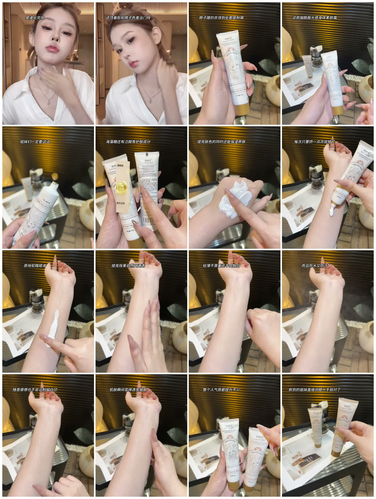
# 分镜脚本 + AI提示词｜01_7641177258854316608 - 平台：抖音 - 原链接：https://www.douyin.com/video/7641177258854316608 - 本地视频：/Users/mac/Desktop/视频素材/_中转/抖音_203234_7641177258854316608.mp4 - 时长：32.70 秒 - 抽帧规则：每 2 秒 1 帧 - 联系表：contact_sheet.jpg ## 使用说明 - 每个镜头按视频时间顺序排列。 - AI 提示词已按用户规范处理：以 `@xxx` 开头，产品/膏霜位置可复用 `@xxx`，不要求生成字幕，每条结尾明确不要字幕。 - 如需更精细版本，可基于 `frames/` 逐帧二次改写。 ## 分镜明细 ### 镜头 01｜约 00s｜开场钩子  画面描述：用近景快速建立产品/人物/使用场景，画面节奏干净直接，先给观众一个可感知的视觉记忆点。 分镜脚本：开场钩子：用近景快速建立产品/人物/使用场景，画面节奏干净直接，先给观众一个可感知的视觉记忆点。建议保持 1.5-2 秒节奏，动作不要过满，重点放在产品、手部和质感变化上。 AI提示词：@xxx广告开场近景，产品或手部动作进入画面，构图稳定，背景干净，第一秒抓住注意力，竖屏9:16，近景开场，镜头轻微推进，产品/膏霜位置使用@xxx，真实商业美妆短视频风格，高清细节，皮肤质感自然，光线柔和通透，色彩干净高级，背景不杂乱，动作连贯自然，负面：低清晰度、畸形手、过度磨皮、脏乱背景、文字水印、logo乱码、过曝、塑料感。整段视频不要出现任何字幕 ### 镜头 02｜约 02s｜开场钩子  画面描述：用近景快速建立产品/人物/使用场景，画面节奏干净直接，先给观众一个可感知的视觉记忆点。 分镜脚本：开场钩子：用近景快速建立产品/人物/使用场景，画面节奏干净直接，先给观众一个可感知的视觉记忆点。建议保持 1.5-2 秒节奏，动作不要过满，重点放在产品、手部和质感变化上。 AI提示词：@xxx广告开场近景，产品或手部动作进入画面，构图稳定，背景干净，第一秒抓住注意力，竖屏9:16，俯拍或侧拍，构图留白干净，产品/膏霜位置使用@xxx，真实商业美妆短视频风格，高清细节，皮肤质感自然，光线柔和通透，色彩干净高级，背景不杂乱，动作连贯自然，负面：低清晰度、畸形手、过度磨皮、脏乱背景、文字水印、logo乱码、过曝、塑料感。整段视频不要出现任何字幕 ### 镜头 03｜约 04s｜产品亮相  画面描述：镜头聚焦产品外观、瓶身、质地或包装细节，突出卖点物件本身。 分镜脚本：产品亮相：镜头聚焦产品外观、瓶身、质地或包装细节，突出卖点物件本身。建议保持 1.5-2 秒节奏，动作不要过满，重点放在产品、手部和质感变化上。 AI提示词：@xxx产品展示特写，瓶身/膏霜/包装细节清晰，商业棚拍质感，浅景深，干净高级背景，竖屏9:16，微距特写，浅景深，产品/膏霜位置使用@xxx，真实商业美妆短视频风格，高清细节，皮肤质感自然，光线柔和通透，色彩干净高级，背景不杂乱，动作连贯自然，负面：低清晰度、畸形手、过度磨皮、脏乱背景、文字水印、logo乱码、过曝、塑料感。整段视频不要出现任何字幕 ### 镜头 04｜约 06s｜产品亮相  画面描述：镜头聚焦产品外观、瓶身、质地或包装细节，突出卖点物件本身。 分镜脚本：产品亮相：镜头聚焦产品外观、瓶身、质地或包装细节，突出卖点物件本身。建议保持 1.5-2 秒节奏，动作不要过满，重点放在产品、手部和质感变化上。 AI提示词：@xxx产品展示特写，瓶身/膏霜/包装细节清晰，商业棚拍质感，浅景深，干净高级背景，竖屏9:16，中近景，轻微手持运动，产品/膏霜位置使用@xxx，真实商业美妆短视频风格，高清细节，皮肤质感自然，光线柔和通透，色彩干净高级，背景不杂乱，动作连贯自然，负面：低清晰度、畸形手、过度磨皮、脏乱背景、文字水印、logo乱码、过曝、塑料感。整段视频不要出现任何字幕 ### 镜头 05｜约 08s｜动作演示  画面描述：通过手部拿取、打开、挤压、涂抹、展示等动作，把产品使用方式讲清楚。 分镜脚本：动作演示：通过手部拿取、打开、挤压、涂抹、展示等动作，把产品使用方式讲清楚。建议保持 1.5-2 秒节奏，动作不要过满，重点放在产品、手部和质感变化上。 AI提示词：@xxx手部操作特写，年轻女性白皙双手自然拿取并使用产品，动作柔和顺滑，真实生活化，竖屏9:16，俯拍或侧拍，构图留白干净，产品/膏霜位置使用@xxx，真实商业美妆短视频风格，高清细节，皮肤质感自然，光线柔和通透，色彩干净高级，背景不杂乱，动作连贯自然，负面：低清晰度、畸形手、过度磨皮、脏乱背景、文字水印、logo乱码、过曝、塑料感。整段视频不要出现任何字幕 ### 镜头 06｜约 10s｜动作演示  画面描述：通过手部拿取、打开、挤压、涂抹、展示等动作，把产品使用方式讲清楚。 分镜脚本：动作演示：通过手部拿取、打开、挤压、涂抹、展示等动作，把产品使用方式讲清楚。建议保持 1.5-2 秒节奏，动作不要过满，重点放在产品、手部和质感变化上。 AI提示词：@xxx手部操作特写，年轻女性白皙双手自然拿取并使用产品，动作柔和顺滑，真实生活化，竖屏9:16，微距特写，浅景深，产品/膏霜位置使用@xxx，真实商业美妆短视频风格，高清细节，皮肤质感自然，光线柔和通透，色彩干净高级，背景不杂乱，动作连贯自然，负面：低清晰度、畸形手、过度磨皮、脏乱背景、文字水印、logo乱码、过曝、塑料感。整段视频不要出现任何字幕 ### 镜头 07｜约 12s｜质地细节  画面描述：放大产品质地、颜色、光泽或上肤效果，突出“看得见”的感官体验。 分镜脚本：质地细节：放大产品质地、颜色、光泽或上肤效果，突出“看得见”的感官体验。建议保持 1.5-2 秒节奏，动作不要过满，重点放在产品、手部和质感变化上。 AI提示词：@xxx微距质地镜头，膏体/液体/粉质细腻可见，柔和高光，干净皮肤纹理，真实美妆广告质感，竖屏9:16，中近景，轻微手持运动，产品/膏霜位置使用@xxx，真实商业美妆短视频风格，高清细节，皮肤质感自然，光线柔和通透，色彩干净高级，背景不杂乱，动作连贯自然，负面：低清晰度、畸形手、过度磨皮、脏乱背景、文字水印、logo乱码、过曝、塑料感。整段视频不要出现任何字幕 ### 镜头 08｜约 14s｜质地细节  画面描述：放大产品质地、颜色、光泽或上肤效果，突出“看得见”的感官体验。 分镜脚本：质地细节：放大产品质地、颜色、光泽或上肤效果，突出“看得见”的感官体验。建议保持 1.5-2 秒节奏，动作不要过满，重点放在产品、手部和质感变化上。 AI提示词：@xxx微距质地镜头，膏体/液体/粉质细腻可见，柔和高光，干净皮肤纹理，真实美妆广告质感，竖屏9:16，俯拍或侧拍，构图留白干净，产品/膏霜位置使用@xxx，真实商业美妆短视频风格，高清细节，皮肤质感自然，光线柔和通透，色彩干净高级，背景不杂乱，动作连贯自然，负面：低清晰度、畸形手、过度磨皮、脏乱背景、文字水印、logo乱码、过曝、塑料感。整段视频不要出现任何字幕 ### 镜头 09｜约 16s｜使用效果  画面描述：镜头转向脸部、手背、局部皮肤或场景效果，表现使用前后的氛围变化。 分镜脚本：使用效果：镜头转向脸部、手背、局部皮肤或场景效果，表现使用前后的氛围变化。建议保持 1.5-2 秒节奏，动作不要过满，重点放在产品、手部和质感变化上。 AI提示词：@xxx效果展示镜头，肤色干净通透，妆效自然，画面明亮柔和，人物状态精致不夸张，竖屏9:16，微距特写，浅景深，产品/膏霜位置使用@xxx，真实商业美妆短视频风格，高清细节，皮肤质感自然，光线柔和通透，色彩干净高级，背景不杂乱，动作连贯自然，负面：低清晰度、畸形手、过度磨皮、脏乱背景、文字水印、logo乱码、过曝、塑料感。整段视频不要出现任何字幕 ### 镜头 10｜约 18s｜使用效果  画面描述：镜头转向脸部、手背、局部皮肤或场景效果，表现使用前后的氛围变化。 分镜脚本：使用效果：镜头转向脸部、手背、局部皮肤或场景效果，表现使用前后的氛围变化。建议保持 1.5-2 秒节奏，动作不要过满，重点放在产品、手部和质感变化上。 AI提示词：@xxx效果展示镜头，肤色干净通透，妆效自然，画面明亮柔和，人物状态精致不夸张，竖屏9:16，中近景，轻微手持运动，产品/膏霜位置使用@xxx，真实商业美妆短视频风格，高清细节，皮肤质感自然，光线柔和通透，色彩干净高级，背景不杂乱，动作连贯自然，负面：低清晰度、畸形手、过度磨皮、脏乱背景、文字水印、logo乱码、过曝、塑料感。整段视频不要出现任何字幕 ### 镜头 11｜约 20s｜氛围补充  画面描述：用环境、道具、花材、桌面、布景或生活方式镜头补足品牌调性。 分镜脚本：氛围补充：用环境、道具、花材、桌面、布景或生活方式镜头补足品牌调性。建议保持 1.5-2 秒节奏，动作不要过满，重点放在产品、手部和质感变化上。 AI提示词：@xxx生活方式氛围镜头，桌面陈列精致，道具简洁，暖色自然光，轻奢美妆视觉风格，竖屏9:16，俯拍或侧拍，构图留白干净，产品/膏霜位置使用@xxx，真实商业美妆短视频风格，高清细节，皮肤质感自然，光线柔和通透，色彩干净高级，背景不杂乱，动作连贯自然，负面：低清晰度、畸形手、过度磨皮、脏乱背景、文字水印、logo乱码、过曝、塑料感。整段视频不要出现任何字幕 ### 镜头 12｜约 22s｜氛围补充  画面描述：用环境、道具、花材、桌面、布景或生活方式镜头补足品牌调性。 分镜脚本：氛围补充：用环境、道具、花材、桌面、布景或生活方式镜头补足品牌调性。建议保持 1.5-2 秒节奏，动作不要过满，重点放在产品、手部和质感变化上。 AI提示词：@xxx生活方式氛围镜头，桌面陈列精致，道具简洁，暖色自然光，轻奢美妆视觉风格，竖屏9:16，微距特写，浅景深，产品/膏霜位置使用@xxx，真实商业美妆短视频风格，高清细节，皮肤质感自然，光线柔和通透，色彩干净高级，背景不杂乱，动作连贯自然，负面：低清晰度、畸形手、过度磨皮、脏乱背景、文字水印、logo乱码、过曝、塑料感。整段视频不要出现任何字幕 ### 镜头 13｜约 24s｜卖点强化  画面描述：回到核心动作或核心细节，重复强化产品记忆点，让画面更有转化感。 分镜脚本：卖点强化：回到核心动作或核心细节，重复强化产品记忆点，让画面更有转化感。建议保持 1.5-2 秒节奏，动作不要过满，重点放在产品、手部和质感变化上。 AI提示词：@xxx卖点强化特写，产品与使用动作同框，画面重点集中，清晰表现质感、颜色和使用体验，竖屏9:16，中近景，轻微手持运动，产品/膏霜位置使用@xxx，真实商业美妆短视频风格，高清细节，皮肤质感自然，光线柔和通透，色彩干净高级，背景不杂乱，动作连贯自然，负面：低清晰度、畸形手、过度磨皮、脏乱背景、文字水印、logo乱码、过曝、塑料感。整段视频不要出现任何字幕 ### 镜头 14｜约 26s｜卖点强化  画面描述：回到核心动作或核心细节，重复强化产品记忆点，让画面更有转化感。 分镜脚本：卖点强化：回到核心动作或核心细节，重复强化产品记忆点，让画面更有转化感。建议保持 1.5-2 秒节奏，动作不要过满，重点放在产品、手部和质感变化上。 AI提示词：@xxx卖点强化特写，产品与使用动作同框，画面重点集中，清晰表现质感、颜色和使用体验，竖屏9:16，俯拍或侧拍，构图留白干净，产品/膏霜位置使用@xxx，真实商业美妆短视频风格，高清细节，皮肤质感自然，光线柔和通透，色彩干净高级，背景不杂乱，动作连贯自然，负面：低清晰度、畸形手、过度磨皮、脏乱背景、文字水印、logo乱码、过曝、塑料感。整段视频不要出现任何字幕 ### 镜头 15｜约 28s｜收尾定格  画面描述：用产品定格、人物满意状态或整套陈列结束，形成干净的广告收尾。 分镜脚本：收尾定格：用产品定格、人物满意状态或整套陈列结束，形成干净的广告收尾。建议保持 1.5-2 秒节奏，动作不要过满，重点放在产品、手部和质感变化上。 AI提示词：@xxx广告收尾定格，产品居中摆放或手持展示，构图完整，高级干净，适合短视频结尾，竖屏9:16，微距特写，浅景深，产品/膏霜位置使用@xxx，真实商业美妆短视频风格，高清细节，皮肤质感自然，光线柔和通透，色彩干净高级，背景不杂乱，动作连贯自然，负面：低清晰度、畸形手、过度磨皮、脏乱背景、文字水印、logo乱码、过曝、塑料感。整段视频不要出现任何字幕 ### 镜头 16｜约 30s｜收尾定格  画面描述：用产品定格、人物满意状态或整套陈列结束，形成干净的广告收尾。 分镜脚本：收尾定格：用产品定格、人物满意状态或整套陈列结束，形成干净的广告收尾。建议保持 1.5-2 秒节奏，动作不要过满，重点放在产品、手部和质感变化上。 AI提示词：@xxx广告收尾定格，产品居中摆放或手持展示，构图完整，高级干净，适合短视频结尾，竖屏9:16，稳定定格，适合结尾停留，产品/膏霜位置使用@xxx，真实商业美妆短视频风格，高清细节，皮肤质感自然，光线柔和通透，色彩干净高级，背景不杂乱，动作连贯自然，负面：低清晰度、畸形手、过度磨皮、脏乱背景、文字水印、logo乱码、过曝、塑料感。整段视频不要出现任何字幕
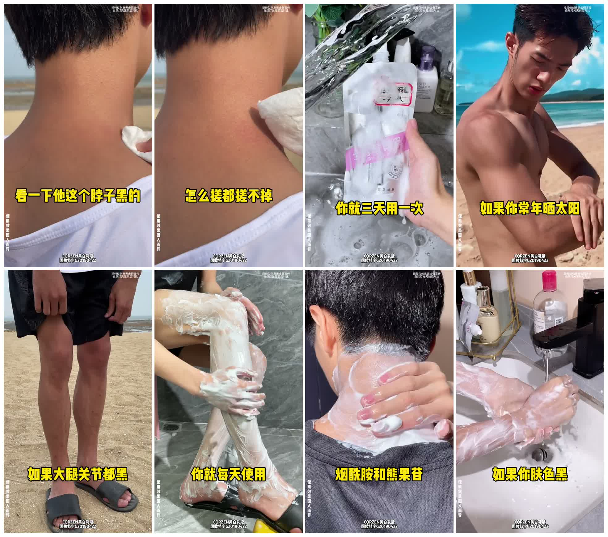
# 分镜脚本 + AI提示词｜02_7234344228166503736 - 平台：抖音 - 原链接：https://www.douyin.com/video/7234344228166503736 - 本地视频：/Users/mac/Desktop/视频素材/_中转/抖音_203247_7234344228166503736.mp4 - 时长：16.67 秒 - 抽帧规则：每 2 秒 1 帧 - 联系表：contact_sheet.jpg ## 使用说明 - 每个镜头按视频时间顺序排列。 - AI 提示词已按用户规范处理：以 `@xxx` 开头，产品/膏霜位置可复用 `@xxx`，不要求生成字幕，每条结尾明确不要字幕。 - 如需更精细版本，可基于 `frames/` 逐帧二次改写。 ## 分镜明细 ### 镜头 01｜约 00s｜开场钩子  画面描述：用近景快速建立产品/人物/使用场景，画面节奏干净直接，先给观众一个可感知的视觉记忆点。 分镜脚本：开场钩子：用近景快速建立产品/人物/使用场景，画面节奏干净直接，先给观众一个可感知的视觉记忆点。建议保持 1.5-2 秒节奏，动作不要过满，重点放在产品、手部和质感变化上。 AI提示词：@xxx广告开场近景，产品或手部动作进入画面，构图稳定，背景干净，第一秒抓住注意力，竖屏9:16，近景开场，镜头轻微推进，产品/膏霜位置使用@xxx，真实商业美妆短视频风格，高清细节，皮肤质感自然，光线柔和通透，色彩干净高级，背景不杂乱，动作连贯自然，负面：低清晰度、畸形手、过度磨皮、脏乱背景、文字水印、logo乱码、过曝、塑料感。整段视频不要出现任何字幕 ### 镜头 02｜约 02s｜产品亮相  画面描述：镜头聚焦产品外观、瓶身、质地或包装细节，突出卖点物件本身。 分镜脚本：产品亮相：镜头聚焦产品外观、瓶身、质地或包装细节，突出卖点物件本身。建议保持 1.5-2 秒节奏，动作不要过满，重点放在产品、手部和质感变化上。 AI提示词：@xxx产品展示特写，瓶身/膏霜/包装细节清晰，商业棚拍质感，浅景深，干净高级背景，竖屏9:16，俯拍或侧拍，构图留白干净，产品/膏霜位置使用@xxx，真实商业美妆短视频风格，高清细节，皮肤质感自然，光线柔和通透，色彩干净高级，背景不杂乱，动作连贯自然，负面：低清晰度、畸形手、过度磨皮、脏乱背景、文字水印、logo乱码、过曝、塑料感。整段视频不要出现任何字幕 ### 镜头 03｜约 04s｜动作演示  画面描述：通过手部拿取、打开、挤压、涂抹、展示等动作，把产品使用方式讲清楚。 分镜脚本：动作演示：通过手部拿取、打开、挤压、涂抹、展示等动作，把产品使用方式讲清楚。建议保持 1.5-2 秒节奏，动作不要过满，重点放在产品、手部和质感变化上。 AI提示词：@xxx手部操作特写，年轻女性白皙双手自然拿取并使用产品，动作柔和顺滑，真实生活化，竖屏9:16，微距特写，浅景深，产品/膏霜位置使用@xxx，真实商业美妆短视频风格，高清细节，皮肤质感自然，光线柔和通透，色彩干净高级，背景不杂乱，动作连贯自然，负面：低清晰度、畸形手、过度磨皮、脏乱背景、文字水印、logo乱码、过曝、塑料感。整段视频不要出现任何字幕 ### 镜头 04｜约 06s｜质地细节  画面描述：放大产品质地、颜色、光泽或上肤效果，突出“看得见”的感官体验。 分镜脚本：质地细节：放大产品质地、颜色、光泽或上肤效果，突出“看得见”的感官体验。建议保持 1.5-2 秒节奏，动作不要过满，重点放在产品、手部和质感变化上。 AI提示词：@xxx微距质地镜头，膏体/液体/粉质细腻可见，柔和高光，干净皮肤纹理，真实美妆广告质感，竖屏9:16，中近景，轻微手持运动，产品/膏霜位置使用@xxx，真实商业美妆短视频风格，高清细节，皮肤质感自然，光线柔和通透，色彩干净高级，背景不杂乱，动作连贯自然，负面：低清晰度、畸形手、过度磨皮、脏乱背景、文字水印、logo乱码、过曝、塑料感。整段视频不要出现任何字幕 ### 镜头 05｜约 08s｜使用效果  画面描述：镜头转向脸部、手背、局部皮肤或场景效果，表现使用前后的氛围变化。 分镜脚本：使用效果：镜头转向脸部、手背、局部皮肤或场景效果，表现使用前后的氛围变化。建议保持 1.5-2 秒节奏，动作不要过满，重点放在产品、手部和质感变化上。 AI提示词：@xxx效果展示镜头，肤色干净通透，妆效自然，画面明亮柔和，人物状态精致不夸张，竖屏9:16，俯拍或侧拍，构图留白干净，产品/膏霜位置使用@xxx，真实商业美妆短视频风格，高清细节，皮肤质感自然，光线柔和通透，色彩干净高级，背景不杂乱，动作连贯自然，负面：低清晰度、畸形手、过度磨皮、脏乱背景、文字水印、logo乱码、过曝、塑料感。整段视频不要出现任何字幕 ### 镜头 06｜约 10s｜氛围补充  画面描述：用环境、道具、花材、桌面、布景或生活方式镜头补足品牌调性。 分镜脚本：氛围补充：用环境、道具、花材、桌面、布景或生活方式镜头补足品牌调性。建议保持 1.5-2 秒节奏，动作不要过满，重点放在产品、手部和质感变化上。 AI提示词：@xxx生活方式氛围镜头，桌面陈列精致，道具简洁，暖色自然光，轻奢美妆视觉风格，竖屏9:16，微距特写，浅景深，产品/膏霜位置使用@xxx，真实商业美妆短视频风格，高清细节，皮肤质感自然，光线柔和通透，色彩干净高级，背景不杂乱，动作连贯自然，负面：低清晰度、畸形手、过度磨皮、脏乱背景、文字水印、logo乱码、过曝、塑料感。整段视频不要出现任何字幕 ### 镜头 07｜约 12s｜卖点强化  画面描述：回到核心动作或核心细节，重复强化产品记忆点，让画面更有转化感。 分镜脚本：卖点强化：回到核心动作或核心细节，重复强化产品记忆点，让画面更有转化感。建议保持 1.5-2 秒节奏，动作不要过满，重点放在产品、手部和质感变化上。 AI提示词：@xxx卖点强化特写，产品与使用动作同框，画面重点集中，清晰表现质感、颜色和使用体验，竖屏9:16，中近景，轻微手持运动，产品/膏霜位置使用@xxx，真实商业美妆短视频风格，高清细节，皮肤质感自然，光线柔和通透，色彩干净高级，背景不杂乱，动作连贯自然，负面：低清晰度、畸形手、过度磨皮、脏乱背景、文字水印、logo乱码、过曝、塑料感。整段视频不要出现任何字幕 ### 镜头 08｜约 14s｜收尾定格  画面描述：用产品定格、人物满意状态或整套陈列结束，形成干净的广告收尾。 分镜脚本：收尾定格：用产品定格、人物满意状态或整套陈列结束，形成干净的广告收尾。建议保持 1.5-2 秒节奏，动作不要过满，重点放在产品、手部和质感变化上。 AI提示词：@xxx广告收尾定格，产品居中摆放或手持展示，构图完整，高级干净，适合短视频结尾，竖屏9:16，稳定定格，适合结尾停留，产品/膏霜位置使用@xxx，真实商业美妆短视频风格，高清细节，皮肤质感自然，光线柔和通透，色彩干净高级，背景不杂乱，动作连贯自然，负面：低清晰度、畸形手、过度磨皮、脏乱背景、文字水印、logo乱码、过曝、塑料感。整段视频不要出现任何字幕
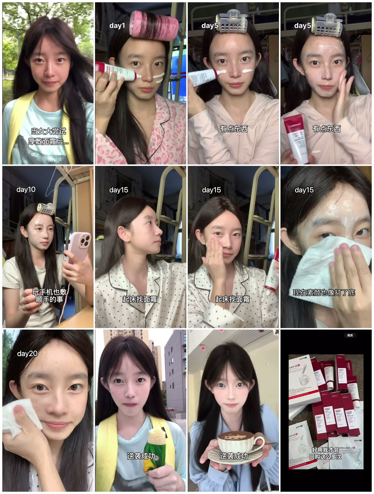
# 分镜脚本 + AI提示词｜03_7555815693707562299 - 平台：抖音 - 原链接：https://www.douyin.com/video/7555815693707562299 - 本地视频：/Users/mac/Desktop/视频素材/_中转/抖音_203259_7555815693707562299.mp4 - 时长：25.10 秒 - 抽帧规则：每 2 秒 1 帧 - 联系表：contact_sheet.jpg ## 使用说明 - 每个镜头按视频时间顺序排列。 - AI 提示词已按用户规范处理：以 `@xxx` 开头，产品/膏霜位置可复用 `@xxx`，不要求生成字幕，每条结尾明确不要字幕。 - 如需更精细版本，可基于 `frames/` 逐帧二次改写。 ## 分镜明细 ### 镜头 01｜约 00s｜开场钩子  画面描述：用近景快速建立产品/人物/使用场景，画面节奏干净直接，先给观众一个可感知的视觉记忆点。 分镜脚本：开场钩子：用近景快速建立产品/人物/使用场景，画面节奏干净直接，先给观众一个可感知的视觉记忆点。建议保持 1.5-2 秒节奏，动作不要过满，重点放在产品、手部和质感变化上。 AI提示词：@xxx广告开场近景，产品或手部动作进入画面，构图稳定，背景干净，第一秒抓住注意力，竖屏9:16，近景开场，镜头轻微推进，产品/膏霜位置使用@xxx，真实商业美妆短视频风格，高清细节，皮肤质感自然，光线柔和通透，色彩干净高级，背景不杂乱，动作连贯自然，负面：低清晰度、畸形手、过度磨皮、脏乱背景、文字水印、logo乱码、过曝、塑料感。整段视频不要出现任何字幕 ### 镜头 02｜约 02s｜开场钩子  画面描述：用近景快速建立产品/人物/使用场景，画面节奏干净直接，先给观众一个可感知的视觉记忆点。 分镜脚本：开场钩子：用近景快速建立产品/人物/使用场景，画面节奏干净直接，先给观众一个可感知的视觉记忆点。建议保持 1.5-2 秒节奏，动作不要过满，重点放在产品、手部和质感变化上。 AI提示词：@xxx广告开场近景，产品或手部动作进入画面，构图稳定，背景干净，第一秒抓住注意力，竖屏9:16，俯拍或侧拍，构图留白干净，产品/膏霜位置使用@xxx，真实商业美妆短视频风格，高清细节，皮肤质感自然，光线柔和通透，色彩干净高级，背景不杂乱，动作连贯自然，负面：低清晰度、畸形手、过度磨皮、脏乱背景、文字水印、logo乱码、过曝、塑料感。整段视频不要出现任何字幕 ### 镜头 03｜约 04s｜产品亮相  画面描述：镜头聚焦产品外观、瓶身、质地或包装细节，突出卖点物件本身。 分镜脚本：产品亮相：镜头聚焦产品外观、瓶身、质地或包装细节，突出卖点物件本身。建议保持 1.5-2 秒节奏，动作不要过满，重点放在产品、手部和质感变化上。 AI提示词：@xxx产品展示特写，瓶身/膏霜/包装细节清晰，商业棚拍质感，浅景深，干净高级背景，竖屏9:16，微距特写，浅景深，产品/膏霜位置使用@xxx，真实商业美妆短视频风格，高清细节，皮肤质感自然，光线柔和通透，色彩干净高级，背景不杂乱，动作连贯自然，负面：低清晰度、畸形手、过度磨皮、脏乱背景、文字水印、logo乱码、过曝、塑料感。整段视频不要出现任何字幕 ### 镜头 04｜约 06s｜动作演示  画面描述：通过手部拿取、打开、挤压、涂抹、展示等动作，把产品使用方式讲清楚。 分镜脚本：动作演示：通过手部拿取、打开、挤压、涂抹、展示等动作，把产品使用方式讲清楚。建议保持 1.5-2 秒节奏，动作不要过满，重点放在产品、手部和质感变化上。 AI提示词：@xxx手部操作特写，年轻女性白皙双手自然拿取并使用产品，动作柔和顺滑，真实生活化，竖屏9:16，中近景，轻微手持运动，产品/膏霜位置使用@xxx，真实商业美妆短视频风格，高清细节，皮肤质感自然，光线柔和通透，色彩干净高级，背景不杂乱，动作连贯自然，负面：低清晰度、畸形手、过度磨皮、脏乱背景、文字水印、logo乱码、过曝、塑料感。整段视频不要出现任何字幕 ### 镜头 05｜约 08s｜动作演示  画面描述：通过手部拿取、打开、挤压、涂抹、展示等动作，把产品使用方式讲清楚。 分镜脚本：动作演示：通过手部拿取、打开、挤压、涂抹、展示等动作，把产品使用方式讲清楚。建议保持 1.5-2 秒节奏，动作不要过满，重点放在产品、手部和质感变化上。 AI提示词：@xxx手部操作特写，年轻女性白皙双手自然拿取并使用产品，动作柔和顺滑，真实生活化，竖屏9:16，俯拍或侧拍，构图留白干净，产品/膏霜位置使用@xxx，真实商业美妆短视频风格，高清细节，皮肤质感自然，光线柔和通透，色彩干净高级，背景不杂乱，动作连贯自然，负面：低清晰度、畸形手、过度磨皮、脏乱背景、文字水印、logo乱码、过曝、塑料感。整段视频不要出现任何字幕 ### 镜头 06｜约 10s｜质地细节  画面描述：放大产品质地、颜色、光泽或上肤效果，突出“看得见”的感官体验。 分镜脚本：质地细节：放大产品质地、颜色、光泽或上肤效果，突出“看得见”的感官体验。建议保持 1.5-2 秒节奏，动作不要过满，重点放在产品、手部和质感变化上。 AI提示词：@xxx微距质地镜头，膏体/液体/粉质细腻可见，柔和高光，干净皮肤纹理，真实美妆广告质感，竖屏9:16，微距特写，浅景深，产品/膏霜位置使用@xxx，真实商业美妆短视频风格，高清细节，皮肤质感自然，光线柔和通透，色彩干净高级，背景不杂乱，动作连贯自然，负面：低清晰度、畸形手、过度磨皮、脏乱背景、文字水印、logo乱码、过曝、塑料感。整段视频不要出现任何字幕 ### 镜头 07｜约 12s｜使用效果  画面描述：镜头转向脸部、手背、局部皮肤或场景效果，表现使用前后的氛围变化。 分镜脚本：使用效果：镜头转向脸部、手背、局部皮肤或场景效果，表现使用前后的氛围变化。建议保持 1.5-2 秒节奏，动作不要过满，重点放在产品、手部和质感变化上。 AI提示词：@xxx效果展示镜头，肤色干净通透，妆效自然，画面明亮柔和，人物状态精致不夸张，竖屏9:16，中近景，轻微手持运动，产品/膏霜位置使用@xxx，真实商业美妆短视频风格，高清细节，皮肤质感自然，光线柔和通透，色彩干净高级，背景不杂乱，动作连贯自然，负面：低清晰度、畸形手、过度磨皮、脏乱背景、文字水印、logo乱码、过曝、塑料感。整段视频不要出现任何字幕 ### 镜头 08｜约 14s｜使用效果  画面描述：镜头转向脸部、手背、局部皮肤或场景效果，表现使用前后的氛围变化。 分镜脚本：使用效果：镜头转向脸部、手背、局部皮肤或场景效果，表现使用前后的氛围变化。建议保持 1.5-2 秒节奏，动作不要过满，重点放在产品、手部和质感变化上。 AI提示词：@xxx效果展示镜头，肤色干净通透，妆效自然，画面明亮柔和，人物状态精致不夸张，竖屏9:16，俯拍或侧拍，构图留白干净，产品/膏霜位置使用@xxx，真实商业美妆短视频风格，高清细节，皮肤质感自然，光线柔和通透，色彩干净高级，背景不杂乱，动作连贯自然，负面：低清晰度、畸形手、过度磨皮、脏乱背景、文字水印、logo乱码、过曝、塑料感。整段视频不要出现任何字幕 ### 镜头 09｜约 16s｜氛围补充  画面描述：用环境、道具、花材、桌面、布景或生活方式镜头补足品牌调性。 分镜脚本：氛围补充：用环境、道具、花材、桌面、布景或生活方式镜头补足品牌调性。建议保持 1.5-2 秒节奏，动作不要过满，重点放在产品、手部和质感变化上。 AI提示词：@xxx生活方式氛围镜头，桌面陈列精致，道具简洁，暖色自然光，轻奢美妆视觉风格，竖屏9:16，微距特写，浅景深，产品/膏霜位置使用@xxx，真实商业美妆短视频风格，高清细节，皮肤质感自然，光线柔和通透，色彩干净高级，背景不杂乱，动作连贯自然，负面：低清晰度、畸形手、过度磨皮、脏乱背景、文字水印、logo乱码、过曝、塑料感。整段视频不要出现任何字幕 ### 镜头 10｜约 18s｜卖点强化  画面描述：回到核心动作或核心细节，重复强化产品记忆点，让画面更有转化感。 分镜脚本：卖点强化：回到核心动作或核心细节，重复强化产品记忆点，让画面更有转化感。建议保持 1.5-2 秒节奏，动作不要过满，重点放在产品、手部和质感变化上。 AI提示词：@xxx卖点强化特写，产品与使用动作同框，画面重点集中，清晰表现质感、颜色和使用体验，竖屏9:16，中近景，轻微手持运动，产品/膏霜位置使用@xxx，真实商业美妆短视频风格，高清细节，皮肤质感自然，光线柔和通透，色彩干净高级，背景不杂乱，动作连贯自然，负面：低清晰度、畸形手、过度磨皮、脏乱背景、文字水印、logo乱码、过曝、塑料感。整段视频不要出现任何字幕 ### 镜头 11｜约 20s｜卖点强化  画面描述：回到核心动作或核心细节，重复强化产品记忆点，让画面更有转化感。 分镜脚本：卖点强化：回到核心动作或核心细节，重复强化产品记忆点，让画面更有转化感。建议保持 1.5-2 秒节奏，动作不要过满，重点放在产品、手部和质感变化上。 AI提示词：@xxx卖点强化特写，产品与使用动作同框，画面重点集中，清晰表现质感、颜色和使用体验，竖屏9:16，俯拍或侧拍，构图留白干净，产品/膏霜位置使用@xxx，真实商业美妆短视频风格，高清细节，皮肤质感自然，光线柔和通透，色彩干净高级，背景不杂乱，动作连贯自然，负面：低清晰度、畸形手、过度磨皮、脏乱背景、文字水印、logo乱码、过曝、塑料感。整段视频不要出现任何字幕 ### 镜头 12｜约 22s｜收尾定格  画面描述：用产品定格、人物满意状态或整套陈列结束，形成干净的广告收尾。 分镜脚本：收尾定格：用产品定格、人物满意状态或整套陈列结束，形成干净的广告收尾。建议保持 1.5-2 秒节奏，动作不要过满，重点放在产品、手部和质感变化上。 AI提示词：@xxx广告收尾定格，产品居中摆放或手持展示，构图完整，高级干净，适合短视频结尾，竖屏9:16，稳定定格，适合结尾停留，产品/膏霜位置使用@xxx，真实商业美妆短视频风格，高清细节，皮肤质感自然，光线柔和通透，色彩干净高级，背景不杂乱，动作连贯自然，负面：低清晰度、畸形手、过度磨皮、脏乱背景、文字水印、logo乱码、过曝、塑料感。整段视频不要出现任何字幕
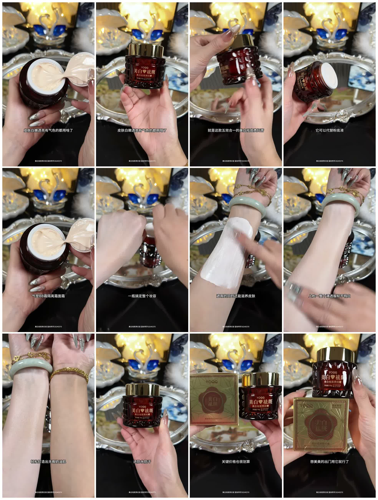
# 分镜脚本 + AI提示词｜04_7461238115479391503 - 平台：抖音 - 原链接：https://www.douyin.com/video/7461238115479391503 - 本地视频：/Users/mac/Desktop/视频素材/_中转/抖音_203312_7461238115479391503.mp4 - 时长：24.05 秒 - 抽帧规则：每 2 秒 1 帧 - 联系表：contact_sheet.jpg ## 使用说明 - 每个镜头按视频时间顺序排列。 - AI 提示词已按用户规范处理：以 `@xxx` 开头，产品/膏霜位置可复用 `@xxx`，不要求生成字幕，每条结尾明确不要字幕。 - 如需更精细版本，可基于 `frames/` 逐帧二次改写。 ## 分镜明细 ### 镜头 01｜约 00s｜开场钩子  画面描述：用近景快速建立产品/人物/使用场景，画面节奏干净直接，先给观众一个可感知的视觉记忆点。 分镜脚本：开场钩子：用近景快速建立产品/人物/使用场景，画面节奏干净直接，先给观众一个可感知的视觉记忆点。建议保持 1.5-2 秒节奏，动作不要过满，重点放在产品、手部和质感变化上。 AI提示词：@xxx广告开场近景，产品或手部动作进入画面，构图稳定，背景干净，第一秒抓住注意力，竖屏9:16，近景开场，镜头轻微推进，产品/膏霜位置使用@xxx，真实商业美妆短视频风格，高清细节，皮肤质感自然，光线柔和通透，色彩干净高级，背景不杂乱，动作连贯自然，负面：低清晰度、畸形手、过度磨皮、脏乱背景、文字水印、logo乱码、过曝、塑料感。整段视频不要出现任何字幕 ### 镜头 02｜约 02s｜开场钩子  画面描述：用近景快速建立产品/人物/使用场景，画面节奏干净直接，先给观众一个可感知的视觉记忆点。 分镜脚本：开场钩子：用近景快速建立产品/人物/使用场景，画面节奏干净直接，先给观众一个可感知的视觉记忆点。建议保持 1.5-2 秒节奏，动作不要过满，重点放在产品、手部和质感变化上。 AI提示词：@xxx广告开场近景，产品或手部动作进入画面，构图稳定，背景干净，第一秒抓住注意力，竖屏9:16，俯拍或侧拍，构图留白干净，产品/膏霜位置使用@xxx，真实商业美妆短视频风格，高清细节，皮肤质感自然，光线柔和通透，色彩干净高级，背景不杂乱，动作连贯自然，负面：低清晰度、畸形手、过度磨皮、脏乱背景、文字水印、logo乱码、过曝、塑料感。整段视频不要出现任何字幕 ### 镜头 03｜约 04s｜产品亮相  画面描述：镜头聚焦产品外观、瓶身、质地或包装细节，突出卖点物件本身。 分镜脚本：产品亮相：镜头聚焦产品外观、瓶身、质地或包装细节，突出卖点物件本身。建议保持 1.5-2 秒节奏，动作不要过满，重点放在产品、手部和质感变化上。 AI提示词：@xxx产品展示特写，瓶身/膏霜/包装细节清晰，商业棚拍质感，浅景深，干净高级背景，竖屏9:16，微距特写，浅景深，产品/膏霜位置使用@xxx，真实商业美妆短视频风格，高清细节，皮肤质感自然，光线柔和通透，色彩干净高级，背景不杂乱，动作连贯自然，负面：低清晰度、畸形手、过度磨皮、脏乱背景、文字水印、logo乱码、过曝、塑料感。整段视频不要出现任何字幕 ### 镜头 04｜约 06s｜动作演示  画面描述：通过手部拿取、打开、挤压、涂抹、展示等动作，把产品使用方式讲清楚。 分镜脚本：动作演示：通过手部拿取、打开、挤压、涂抹、展示等动作，把产品使用方式讲清楚。建议保持 1.5-2 秒节奏，动作不要过满，重点放在产品、手部和质感变化上。 AI提示词：@xxx手部操作特写，年轻女性白皙双手自然拿取并使用产品，动作柔和顺滑，真实生活化，竖屏9:16，中近景，轻微手持运动，产品/膏霜位置使用@xxx，真实商业美妆短视频风格，高清细节，皮肤质感自然，光线柔和通透，色彩干净高级，背景不杂乱，动作连贯自然，负面：低清晰度、畸形手、过度磨皮、脏乱背景、文字水印、logo乱码、过曝、塑料感。整段视频不要出现任何字幕 ### 镜头 05｜约 08s｜动作演示  画面描述：通过手部拿取、打开、挤压、涂抹、展示等动作，把产品使用方式讲清楚。 分镜脚本：动作演示：通过手部拿取、打开、挤压、涂抹、展示等动作，把产品使用方式讲清楚。建议保持 1.5-2 秒节奏，动作不要过满，重点放在产品、手部和质感变化上。 AI提示词：@xxx手部操作特写，年轻女性白皙双手自然拿取并使用产品，动作柔和顺滑，真实生活化，竖屏9:16，俯拍或侧拍，构图留白干净，产品/膏霜位置使用@xxx，真实商业美妆短视频风格，高清细节，皮肤质感自然，光线柔和通透，色彩干净高级，背景不杂乱，动作连贯自然，负面：低清晰度、畸形手、过度磨皮、脏乱背景、文字水印、logo乱码、过曝、塑料感。整段视频不要出现任何字幕 ### 镜头 06｜约 10s｜质地细节  画面描述：放大产品质地、颜色、光泽或上肤效果，突出“看得见”的感官体验。 分镜脚本：质地细节：放大产品质地、颜色、光泽或上肤效果，突出“看得见”的感官体验。建议保持 1.5-2 秒节奏，动作不要过满，重点放在产品、手部和质感变化上。 AI提示词：@xxx微距质地镜头，膏体/液体/粉质细腻可见，柔和高光，干净皮肤纹理，真实美妆广告质感，竖屏9:16，微距特写，浅景深，产品/膏霜位置使用@xxx，真实商业美妆短视频风格，高清细节，皮肤质感自然，光线柔和通透，色彩干净高级，背景不杂乱，动作连贯自然，负面：低清晰度、畸形手、过度磨皮、脏乱背景、文字水印、logo乱码、过曝、塑料感。整段视频不要出现任何字幕 ### 镜头 07｜约 12s｜使用效果  画面描述：镜头转向脸部、手背、局部皮肤或场景效果，表现使用前后的氛围变化。 分镜脚本：使用效果：镜头转向脸部、手背、局部皮肤或场景效果，表现使用前后的氛围变化。建议保持 1.5-2 秒节奏，动作不要过满，重点放在产品、手部和质感变化上。 AI提示词：@xxx效果展示镜头，肤色干净通透，妆效自然，画面明亮柔和，人物状态精致不夸张，竖屏9:16，中近景，轻微手持运动，产品/膏霜位置使用@xxx，真实商业美妆短视频风格，高清细节，皮肤质感自然，光线柔和通透，色彩干净高级，背景不杂乱，动作连贯自然，负面：低清晰度、畸形手、过度磨皮、脏乱背景、文字水印、logo乱码、过曝、塑料感。整段视频不要出现任何字幕 ### 镜头 08｜约 14s｜使用效果  画面描述：镜头转向脸部、手背、局部皮肤或场景效果，表现使用前后的氛围变化。 分镜脚本：使用效果：镜头转向脸部、手背、局部皮肤或场景效果，表现使用前后的氛围变化。建议保持 1.5-2 秒节奏，动作不要过满，重点放在产品、手部和质感变化上。 AI提示词：@xxx效果展示镜头，肤色干净通透，妆效自然，画面明亮柔和，人物状态精致不夸张，竖屏9:16，俯拍或侧拍，构图留白干净，产品/膏霜位置使用@xxx，真实商业美妆短视频风格，高清细节，皮肤质感自然，光线柔和通透，色彩干净高级，背景不杂乱，动作连贯自然，负面：低清晰度、畸形手、过度磨皮、脏乱背景、文字水印、logo乱码、过曝、塑料感。整段视频不要出现任何字幕 ### 镜头 09｜约 16s｜氛围补充  画面描述：用环境、道具、花材、桌面、布景或生活方式镜头补足品牌调性。 分镜脚本：氛围补充：用环境、道具、花材、桌面、布景或生活方式镜头补足品牌调性。建议保持 1.5-2 秒节奏，动作不要过满，重点放在产品、手部和质感变化上。 AI提示词：@xxx生活方式氛围镜头，桌面陈列精致，道具简洁，暖色自然光，轻奢美妆视觉风格，竖屏9:16，微距特写，浅景深，产品/膏霜位置使用@xxx，真实商业美妆短视频风格，高清细节，皮肤质感自然，光线柔和通透，色彩干净高级，背景不杂乱，动作连贯自然，负面：低清晰度、畸形手、过度磨皮、脏乱背景、文字水印、logo乱码、过曝、塑料感。整段视频不要出现任何字幕 ### 镜头 10｜约 18s｜卖点强化  画面描述：回到核心动作或核心细节，重复强化产品记忆点，让画面更有转化感。 分镜脚本：卖点强化：回到核心动作或核心细节，重复强化产品记忆点，让画面更有转化感。建议保持 1.5-2 秒节奏，动作不要过满，重点放在产品、手部和质感变化上。 AI提示词：@xxx卖点强化特写，产品与使用动作同框，画面重点集中，清晰表现质感、颜色和使用体验，竖屏9:16，中近景，轻微手持运动，产品/膏霜位置使用@xxx，真实商业美妆短视频风格，高清细节，皮肤质感自然，光线柔和通透，色彩干净高级，背景不杂乱，动作连贯自然，负面：低清晰度、畸形手、过度磨皮、脏乱背景、文字水印、logo乱码、过曝、塑料感。整段视频不要出现任何字幕 ### 镜头 11｜约 20s｜卖点强化  画面描述：回到核心动作或核心细节，重复强化产品记忆点，让画面更有转化感。 分镜脚本：卖点强化：回到核心动作或核心细节，重复强化产品记忆点，让画面更有转化感。建议保持 1.5-2 秒节奏，动作不要过满，重点放在产品、手部和质感变化上。 AI提示词：@xxx卖点强化特写，产品与使用动作同框，画面重点集中，清晰表现质感、颜色和使用体验，竖屏9:16，俯拍或侧拍，构图留白干净，产品/膏霜位置使用@xxx，真实商业美妆短视频风格，高清细节，皮肤质感自然，光线柔和通透，色彩干净高级，背景不杂乱，动作连贯自然，负面：低清晰度、畸形手、过度磨皮、脏乱背景、文字水印、logo乱码、过曝、塑料感。整段视频不要出现任何字幕 ### 镜头 12｜约 22s｜收尾定格  画面描述：用产品定格、人物满意状态或整套陈列结束，形成干净的广告收尾。 分镜脚本：收尾定格：用产品定格、人物满意状态或整套陈列结束，形成干净的广告收尾。建议保持 1.5-2 秒节奏，动作不要过满，重点放在产品、手部和质感变化上。 AI提示词：@xxx广告收尾定格，产品居中摆放或手持展示，构图完整，高级干净，适合短视频结尾，竖屏9:16，稳定定格，适合结尾停留，产品/膏霜位置使用@xxx，真实商业美妆短视频风格，高清细节，皮肤质感自然，光线柔和通透，色彩干净高级，背景不杂乱，动作连贯自然，负面：低清晰度、畸形手、过度磨皮、脏乱背景、文字水印、logo乱码、过曝、塑料感。整段视频不要出现任何字幕
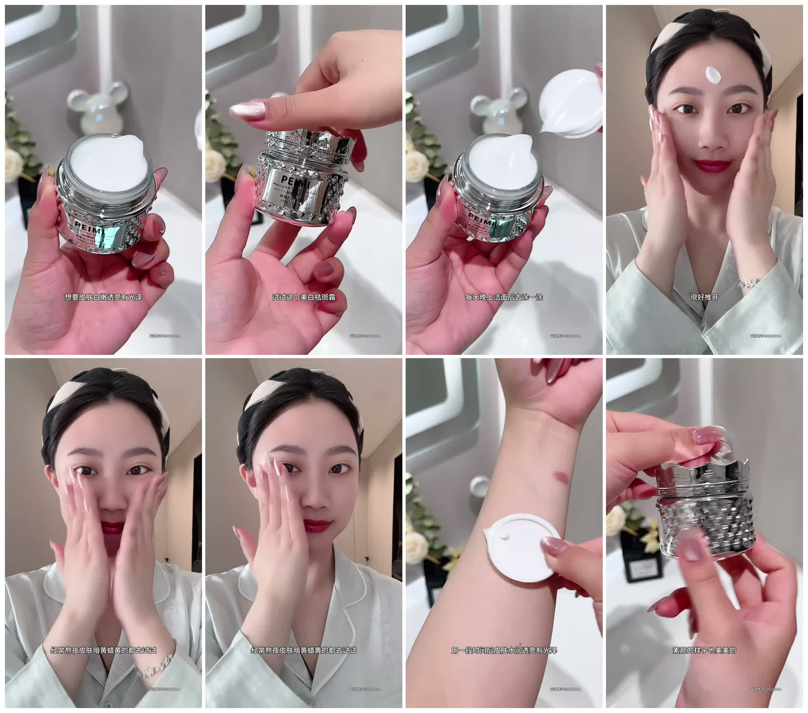
# 分镜脚本 + AI提示词｜05_7481560699517291788 - 平台：抖音 - 原链接：https://www.douyin.com/video/7481560699517291788 - 本地视频：/Users/mac/Desktop/视频素材/_中转/抖音_203325_7481560699517291788.mp4 - 时长：17.00 秒 - 抽帧规则：每 2 秒 1 帧 - 联系表：contact_sheet.jpg ## 使用说明 - 每个镜头按视频时间顺序排列。 - AI 提示词已按用户规范处理：以 `@xxx` 开头，产品/膏霜位置可复用 `@xxx`，不要求生成字幕，每条结尾明确不要字幕。 - 如需更精细版本，可基于 `frames/` 逐帧二次改写。 ## 分镜明细 ### 镜头 01｜约 00s｜开场钩子  画面描述：用近景快速建立产品/人物/使用场景，画面节奏干净直接，先给观众一个可感知的视觉记忆点。 分镜脚本：开场钩子：用近景快速建立产品/人物/使用场景，画面节奏干净直接，先给观众一个可感知的视觉记忆点。建议保持 1.5-2 秒节奏，动作不要过满，重点放在产品、手部和质感变化上。 AI提示词：@xxx广告开场近景，产品或手部动作进入画面，构图稳定，背景干净，第一秒抓住注意力，竖屏9:16，近景开场，镜头轻微推进，产品/膏霜位置使用@xxx，真实商业美妆短视频风格，高清细节，皮肤质感自然，光线柔和通透，色彩干净高级，背景不杂乱，动作连贯自然，负面：低清晰度、畸形手、过度磨皮、脏乱背景、文字水印、logo乱码、过曝、塑料感。整段视频不要出现任何字幕 ### 镜头 02｜约 02s｜产品亮相  画面描述：镜头聚焦产品外观、瓶身、质地或包装细节，突出卖点物件本身。 分镜脚本：产品亮相：镜头聚焦产品外观、瓶身、质地或包装细节，突出卖点物件本身。建议保持 1.5-2 秒节奏，动作不要过满，重点放在产品、手部和质感变化上。 AI提示词：@xxx产品展示特写，瓶身/膏霜/包装细节清晰，商业棚拍质感，浅景深，干净高级背景，竖屏9:16，俯拍或侧拍，构图留白干净，产品/膏霜位置使用@xxx，真实商业美妆短视频风格，高清细节，皮肤质感自然，光线柔和通透，色彩干净高级，背景不杂乱，动作连贯自然，负面：低清晰度、畸形手、过度磨皮、脏乱背景、文字水印、logo乱码、过曝、塑料感。整段视频不要出现任何字幕 ### 镜头 03｜约 04s｜动作演示  画面描述：通过手部拿取、打开、挤压、涂抹、展示等动作，把产品使用方式讲清楚。 分镜脚本：动作演示：通过手部拿取、打开、挤压、涂抹、展示等动作，把产品使用方式讲清楚。建议保持 1.5-2 秒节奏，动作不要过满，重点放在产品、手部和质感变化上。 AI提示词：@xxx手部操作特写，年轻女性白皙双手自然拿取并使用产品，动作柔和顺滑，真实生活化，竖屏9:16，微距特写，浅景深，产品/膏霜位置使用@xxx，真实商业美妆短视频风格，高清细节，皮肤质感自然，光线柔和通透，色彩干净高级，背景不杂乱，动作连贯自然，负面：低清晰度、畸形手、过度磨皮、脏乱背景、文字水印、logo乱码、过曝、塑料感。整段视频不要出现任何字幕 ### 镜头 04｜约 06s｜质地细节  画面描述：放大产品质地、颜色、光泽或上肤效果，突出“看得见”的感官体验。 分镜脚本：质地细节：放大产品质地、颜色、光泽或上肤效果，突出“看得见”的感官体验。建议保持 1.5-2 秒节奏，动作不要过满，重点放在产品、手部和质感变化上。 AI提示词：@xxx微距质地镜头，膏体/液体/粉质细腻可见，柔和高光，干净皮肤纹理，真实美妆广告质感，竖屏9:16，中近景，轻微手持运动，产品/膏霜位置使用@xxx，真实商业美妆短视频风格，高清细节，皮肤质感自然，光线柔和通透，色彩干净高级，背景不杂乱，动作连贯自然，负面：低清晰度、畸形手、过度磨皮、脏乱背景、文字水印、logo乱码、过曝、塑料感。整段视频不要出现任何字幕 ### 镜头 05｜约 08s｜使用效果  画面描述：镜头转向脸部、手背、局部皮肤或场景效果，表现使用前后的氛围变化。 分镜脚本：使用效果：镜头转向脸部、手背、局部皮肤或场景效果，表现使用前后的氛围变化。建议保持 1.5-2 秒节奏，动作不要过满，重点放在产品、手部和质感变化上。 AI提示词：@xxx效果展示镜头，肤色干净通透，妆效自然，画面明亮柔和，人物状态精致不夸张，竖屏9:16，俯拍或侧拍，构图留白干净，产品/膏霜位置使用@xxx，真实商业美妆短视频风格，高清细节，皮肤质感自然，光线柔和通透，色彩干净高级，背景不杂乱，动作连贯自然，负面：低清晰度、畸形手、过度磨皮、脏乱背景、文字水印、logo乱码、过曝、塑料感。整段视频不要出现任何字幕 ### 镜头 06｜约 10s｜氛围补充  画面描述：用环境、道具、花材、桌面、布景或生活方式镜头补足品牌调性。 分镜脚本：氛围补充：用环境、道具、花材、桌面、布景或生活方式镜头补足品牌调性。建议保持 1.5-2 秒节奏，动作不要过满，重点放在产品、手部和质感变化上。 AI提示词：@xxx生活方式氛围镜头，桌面陈列精致，道具简洁，暖色自然光，轻奢美妆视觉风格，竖屏9:16，微距特写，浅景深，产品/膏霜位置使用@xxx，真实商业美妆短视频风格，高清细节，皮肤质感自然，光线柔和通透，色彩干净高级，背景不杂乱，动作连贯自然，负面：低清晰度、畸形手、过度磨皮、脏乱背景、文字水印、logo乱码、过曝、塑料感。整段视频不要出现任何字幕 ### 镜头 07｜约 12s｜卖点强化  画面描述：回到核心动作或核心细节，重复强化产品记忆点，让画面更有转化感。 分镜脚本：卖点强化：回到核心动作或核心细节，重复强化产品记忆点，让画面更有转化感。建议保持 1.5-2 秒节奏，动作不要过满，重点放在产品、手部和质感变化上。 AI提示词：@xxx卖点强化特写，产品与使用动作同框，画面重点集中，清晰表现质感、颜色和使用体验，竖屏9:16，中近景，轻微手持运动，产品/膏霜位置使用@xxx，真实商业美妆短视频风格，高清细节，皮肤质感自然，光线柔和通透，色彩干净高级，背景不杂乱，动作连贯自然，负面：低清晰度、畸形手、过度磨皮、脏乱背景、文字水印、logo乱码、过曝、塑料感。整段视频不要出现任何字幕 ### 镜头 08｜约 14s｜收尾定格  画面描述：用产品定格、人物满意状态或整套陈列结束，形成干净的广告收尾。 分镜脚本：收尾定格：用产品定格、人物满意状态或整套陈列结束，形成干净的广告收尾。建议保持 1.5-2 秒节奏，动作不要过满，重点放在产品、手部和质感变化上。 AI提示词：@xxx广告收尾定格，产品居中摆放或手持展示，构图完整，高级干净，适合短视频结尾，竖屏9:16，稳定定格，适合结尾停留，产品/膏霜位置使用@xxx，真实商业美妆短视频风格，高清细节，皮肤质感自然，光线柔和通透，色彩干净高级，背景不杂乱，动作连贯自然，负面：低清晰度、畸形手、过度磨皮、脏乱背景、文字水印、logo乱码、过曝、塑料感。整段视频不要出现任何字幕
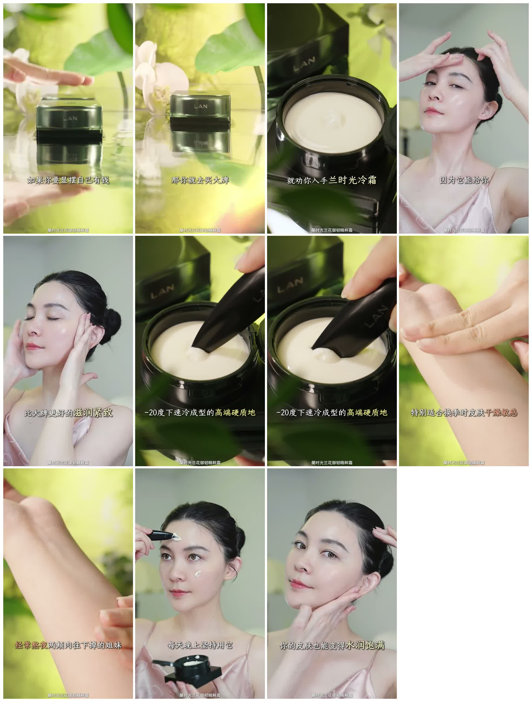
# 分镜脚本 + AI提示词｜06_7523151030058618148 - 平台：抖音 - 原链接：https://www.douyin.com/video/7523151030058618148 - 本地视频：/Users/mac/Desktop/视频素材/_中转/抖音_203337_7523151030058618148.mp4 - 时长：22.38 秒 - 抽帧规则：每 2 秒 1 帧 - 联系表：contact_sheet.jpg ## 使用说明 - 每个镜头按视频时间顺序排列。 - AI 提示词已按用户规范处理：以 `@xxx` 开头，产品/膏霜位置可复用 `@xxx`，不要求生成字幕，每条结尾明确不要字幕。 - 如需更精细版本，可基于 `frames/` 逐帧二次改写。 ## 分镜明细 ### 镜头 01｜约 00s｜开场钩子  画面描述：用近景快速建立产品/人物/使用场景，画面节奏干净直接，先给观众一个可感知的视觉记忆点。 分镜脚本：开场钩子：用近景快速建立产品/人物/使用场景，画面节奏干净直接，先给观众一个可感知的视觉记忆点。建议保持 1.5-2 秒节奏，动作不要过满，重点放在产品、手部和质感变化上。 AI提示词：@xxx广告开场近景，产品或手部动作进入画面，构图稳定，背景干净，第一秒抓住注意力，竖屏9:16，近景开场，镜头轻微推进，产品/膏霜位置使用@xxx，真实商业美妆短视频风格，高清细节，皮肤质感自然，光线柔和通透，色彩干净高级，背景不杂乱，动作连贯自然，负面：低清晰度、畸形手、过度磨皮、脏乱背景、文字水印、logo乱码、过曝、塑料感。整段视频不要出现任何字幕 ### 镜头 02｜约 02s｜开场钩子  画面描述：用近景快速建立产品/人物/使用场景，画面节奏干净直接，先给观众一个可感知的视觉记忆点。 分镜脚本：开场钩子：用近景快速建立产品/人物/使用场景，画面节奏干净直接，先给观众一个可感知的视觉记忆点。建议保持 1.5-2 秒节奏，动作不要过满，重点放在产品、手部和质感变化上。 AI提示词：@xxx广告开场近景，产品或手部动作进入画面，构图稳定，背景干净，第一秒抓住注意力，竖屏9:16，俯拍或侧拍，构图留白干净，产品/膏霜位置使用@xxx，真实商业美妆短视频风格，高清细节，皮肤质感自然，光线柔和通透，色彩干净高级，背景不杂乱，动作连贯自然，负面：低清晰度、畸形手、过度磨皮、脏乱背景、文字水印、logo乱码、过曝、塑料感。整段视频不要出现任何字幕 ### 镜头 03｜约 04s｜产品亮相  画面描述：镜头聚焦产品外观、瓶身、质地或包装细节，突出卖点物件本身。 分镜脚本：产品亮相：镜头聚焦产品外观、瓶身、质地或包装细节，突出卖点物件本身。建议保持 1.5-2 秒节奏，动作不要过满，重点放在产品、手部和质感变化上。 AI提示词：@xxx产品展示特写，瓶身/膏霜/包装细节清晰，商业棚拍质感，浅景深，干净高级背景，竖屏9:16，微距特写，浅景深，产品/膏霜位置使用@xxx，真实商业美妆短视频风格，高清细节，皮肤质感自然，光线柔和通透，色彩干净高级，背景不杂乱，动作连贯自然，负面：低清晰度、畸形手、过度磨皮、脏乱背景、文字水印、logo乱码、过曝、塑料感。整段视频不要出现任何字幕 ### 镜头 04｜约 06s｜动作演示  画面描述：通过手部拿取、打开、挤压、涂抹、展示等动作，把产品使用方式讲清楚。 分镜脚本：动作演示：通过手部拿取、打开、挤压、涂抹、展示等动作，把产品使用方式讲清楚。建议保持 1.5-2 秒节奏，动作不要过满，重点放在产品、手部和质感变化上。 AI提示词：@xxx手部操作特写，年轻女性白皙双手自然拿取并使用产品，动作柔和顺滑，真实生活化，竖屏9:16，中近景，轻微手持运动，产品/膏霜位置使用@xxx，真实商业美妆短视频风格，高清细节，皮肤质感自然，光线柔和通透，色彩干净高级，背景不杂乱，动作连贯自然，负面：低清晰度、畸形手、过度磨皮、脏乱背景、文字水印、logo乱码、过曝、塑料感。整段视频不要出现任何字幕 ### 镜头 05｜约 08s｜动作演示  画面描述：通过手部拿取、打开、挤压、涂抹、展示等动作，把产品使用方式讲清楚。 分镜脚本：动作演示：通过手部拿取、打开、挤压、涂抹、展示等动作，把产品使用方式讲清楚。建议保持 1.5-2 秒节奏，动作不要过满，重点放在产品、手部和质感变化上。 AI提示词：@xxx手部操作特写，年轻女性白皙双手自然拿取并使用产品，动作柔和顺滑，真实生活化，竖屏9:16，俯拍或侧拍，构图留白干净，产品/膏霜位置使用@xxx，真实商业美妆短视频风格，高清细节，皮肤质感自然，光线柔和通透，色彩干净高级，背景不杂乱，动作连贯自然，负面：低清晰度、畸形手、过度磨皮、脏乱背景、文字水印、logo乱码、过曝、塑料感。整段视频不要出现任何字幕 ### 镜头 06｜约 10s｜质地细节  画面描述：放大产品质地、颜色、光泽或上肤效果，突出“看得见”的感官体验。 分镜脚本：质地细节：放大产品质地、颜色、光泽或上肤效果，突出“看得见”的感官体验。建议保持 1.5-2 秒节奏，动作不要过满，重点放在产品、手部和质感变化上。 AI提示词：@xxx微距质地镜头，膏体/液体/粉质细腻可见，柔和高光，干净皮肤纹理，真实美妆广告质感，竖屏9:16，微距特写，浅景深，产品/膏霜位置使用@xxx，真实商业美妆短视频风格，高清细节，皮肤质感自然，光线柔和通透，色彩干净高级，背景不杂乱，动作连贯自然，负面：低清晰度、畸形手、过度磨皮、脏乱背景、文字水印、logo乱码、过曝、塑料感。整段视频不要出现任何字幕 ### 镜头 07｜约 12s｜使用效果  画面描述：镜头转向脸部、手背、局部皮肤或场景效果，表现使用前后的氛围变化。 分镜脚本：使用效果：镜头转向脸部、手背、局部皮肤或场景效果，表现使用前后的氛围变化。建议保持 1.5-2 秒节奏，动作不要过满，重点放在产品、手部和质感变化上。 AI提示词：@xxx效果展示镜头，肤色干净通透，妆效自然，画面明亮柔和，人物状态精致不夸张，竖屏9:16，中近景，轻微手持运动，产品/膏霜位置使用@xxx，真实商业美妆短视频风格，高清细节，皮肤质感自然，光线柔和通透，色彩干净高级，背景不杂乱，动作连贯自然，负面：低清晰度、畸形手、过度磨皮、脏乱背景、文字水印、logo乱码、过曝、塑料感。整段视频不要出现任何字幕 ### 镜头 08｜约 14s｜氛围补充  画面描述：用环境、道具、花材、桌面、布景或生活方式镜头补足品牌调性。 分镜脚本：氛围补充：用环境、道具、花材、桌面、布景或生活方式镜头补足品牌调性。建议保持 1.5-2 秒节奏，动作不要过满，重点放在产品、手部和质感变化上。 AI提示词：@xxx生活方式氛围镜头，桌面陈列精致，道具简洁，暖色自然光，轻奢美妆视觉风格，竖屏9:16，俯拍或侧拍，构图留白干净，产品/膏霜位置使用@xxx，真实商业美妆短视频风格，高清细节，皮肤质感自然，光线柔和通透，色彩干净高级，背景不杂乱，动作连贯自然，负面：低清晰度、畸形手、过度磨皮、脏乱背景、文字水印、logo乱码、过曝、塑料感。整段视频不要出现任何字幕 ### 镜头 09｜约 16s｜氛围补充  画面描述：用环境、道具、花材、桌面、布景或生活方式镜头补足品牌调性。 分镜脚本：氛围补充：用环境、道具、花材、桌面、布景或生活方式镜头补足品牌调性。建议保持 1.5-2 秒节奏，动作不要过满，重点放在产品、手部和质感变化上。 AI提示词：@xxx生活方式氛围镜头，桌面陈列精致，道具简洁，暖色自然光，轻奢美妆视觉风格，竖屏9:16，微距特写，浅景深，产品/膏霜位置使用@xxx，真实商业美妆短视频风格，高清细节，皮肤质感自然，光线柔和通透，色彩干净高级，背景不杂乱，动作连贯自然，负面：低清晰度、畸形手、过度磨皮、脏乱背景、文字水印、logo乱码、过曝、塑料感。整段视频不要出现任何字幕 ### 镜头 10｜约 18s｜卖点强化  画面描述：回到核心动作或核心细节，重复强化产品记忆点，让画面更有转化感。 分镜脚本：卖点强化：回到核心动作或核心细节，重复强化产品记忆点，让画面更有转化感。建议保持 1.5-2 秒节奏，动作不要过满，重点放在产品、手部和质感变化上。 AI提示词：@xxx卖点强化特写，产品与使用动作同框，画面重点集中，清晰表现质感、颜色和使用体验，竖屏9:16，中近景，轻微手持运动，产品/膏霜位置使用@xxx，真实商业美妆短视频风格，高清细节，皮肤质感自然，光线柔和通透，色彩干净高级，背景不杂乱，动作连贯自然，负面：低清晰度、畸形手、过度磨皮、脏乱背景、文字水印、logo乱码、过曝、塑料感。整段视频不要出现任何字幕 ### 镜头 11｜约 20s｜收尾定格  画面描述：用产品定格、人物满意状态或整套陈列结束，形成干净的广告收尾。 分镜脚本：收尾定格：用产品定格、人物满意状态或整套陈列结束，形成干净的广告收尾。建议保持 1.5-2 秒节奏，动作不要过满，重点放在产品、手部和质感变化上。 AI提示词：@xxx广告收尾定格，产品居中摆放或手持展示，构图完整，高级干净，适合短视频结尾，竖屏9:16，稳定定格，适合结尾停留，产品/膏霜位置使用@xxx，真实商业美妆短视频风格，高清细节，皮肤质感自然，光线柔和通透，色彩干净高级，背景不杂乱，动作连贯自然，负面：低清晰度、畸形手、过度磨皮、脏乱背景、文字水印、logo乱码、过曝、塑料感。整段视频不要出现任何字幕
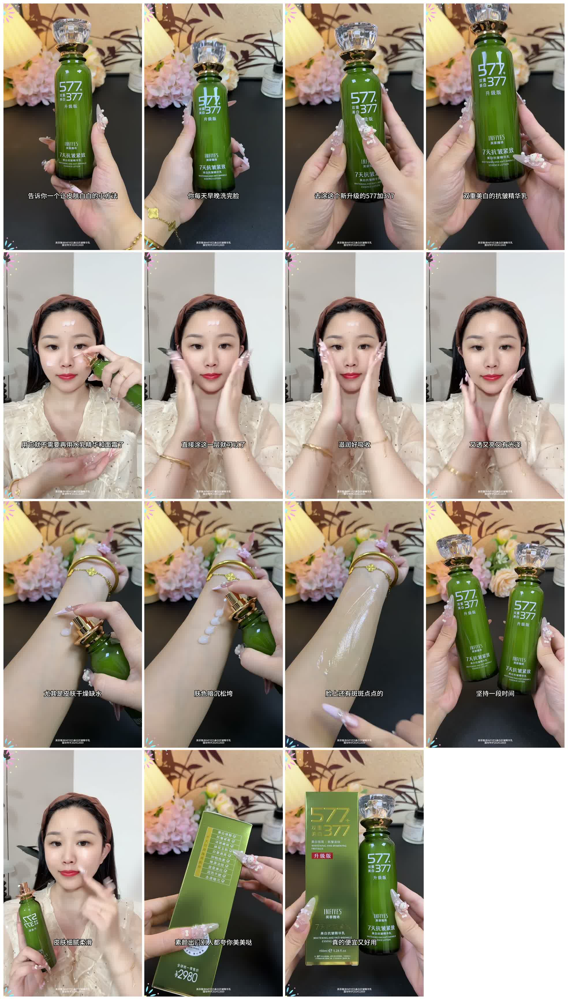
# 分镜脚本 + AI提示词｜07_7540897057666616636 - 平台：抖音 - 原链接：https://www.douyin.com/video/7540897057666616636 - 本地视频：/Users/mac/Desktop/视频素材/_中转/抖音_203350_7540897057666616636.mp4 - 时长：29.72 秒 - 抽帧规则：每 2 秒 1 帧 - 联系表：contact_sheet.jpg ## 使用说明 - 每个镜头按视频时间顺序排列。 - AI 提示词已按用户规范处理：以 `@xxx` 开头，产品/膏霜位置可复用 `@xxx`，不要求生成字幕，每条结尾明确不要字幕。 - 如需更精细版本，可基于 `frames/` 逐帧二次改写。 ## 分镜明细 ### 镜头 01｜约 00s｜开场钩子  画面描述：用近景快速建立产品/人物/使用场景，画面节奏干净直接，先给观众一个可感知的视觉记忆点。 分镜脚本：开场钩子：用近景快速建立产品/人物/使用场景，画面节奏干净直接，先给观众一个可感知的视觉记忆点。建议保持 1.5-2 秒节奏，动作不要过满，重点放在产品、手部和质感变化上。 AI提示词：@xxx广告开场近景，产品或手部动作进入画面，构图稳定，背景干净，第一秒抓住注意力，竖屏9:16，近景开场，镜头轻微推进，产品/膏霜位置使用@xxx，真实商业美妆短视频风格，高清细节，皮肤质感自然，光线柔和通透，色彩干净高级，背景不杂乱，动作连贯自然，负面：低清晰度、畸形手、过度磨皮、脏乱背景、文字水印、logo乱码、过曝、塑料感。整段视频不要出现任何字幕 ### 镜头 02｜约 02s｜开场钩子  画面描述：用近景快速建立产品/人物/使用场景，画面节奏干净直接，先给观众一个可感知的视觉记忆点。 分镜脚本：开场钩子：用近景快速建立产品/人物/使用场景，画面节奏干净直接，先给观众一个可感知的视觉记忆点。建议保持 1.5-2 秒节奏，动作不要过满，重点放在产品、手部和质感变化上。 AI提示词：@xxx广告开场近景，产品或手部动作进入画面，构图稳定，背景干净，第一秒抓住注意力，竖屏9:16，俯拍或侧拍，构图留白干净，产品/膏霜位置使用@xxx，真实商业美妆短视频风格，高清细节，皮肤质感自然，光线柔和通透，色彩干净高级，背景不杂乱，动作连贯自然，负面：低清晰度、畸形手、过度磨皮、脏乱背景、文字水印、logo乱码、过曝、塑料感。整段视频不要出现任何字幕 ### 镜头 03｜约 04s｜产品亮相  画面描述：镜头聚焦产品外观、瓶身、质地或包装细节，突出卖点物件本身。 分镜脚本：产品亮相：镜头聚焦产品外观、瓶身、质地或包装细节，突出卖点物件本身。建议保持 1.5-2 秒节奏，动作不要过满，重点放在产品、手部和质感变化上。 AI提示词：@xxx产品展示特写，瓶身/膏霜/包装细节清晰，商业棚拍质感，浅景深，干净高级背景，竖屏9:16，微距特写，浅景深，产品/膏霜位置使用@xxx，真实商业美妆短视频风格，高清细节，皮肤质感自然，光线柔和通透，色彩干净高级，背景不杂乱，动作连贯自然，负面：低清晰度、畸形手、过度磨皮、脏乱背景、文字水印、logo乱码、过曝、塑料感。整段视频不要出现任何字幕 ### 镜头 04｜约 06s｜产品亮相  画面描述：镜头聚焦产品外观、瓶身、质地或包装细节，突出卖点物件本身。 分镜脚本：产品亮相：镜头聚焦产品外观、瓶身、质地或包装细节，突出卖点物件本身。建议保持 1.5-2 秒节奏，动作不要过满，重点放在产品、手部和质感变化上。 AI提示词：@xxx产品展示特写，瓶身/膏霜/包装细节清晰，商业棚拍质感，浅景深，干净高级背景，竖屏9:16，中近景，轻微手持运动，产品/膏霜位置使用@xxx，真实商业美妆短视频风格，高清细节，皮肤质感自然，光线柔和通透，色彩干净高级，背景不杂乱，动作连贯自然，负面：低清晰度、畸形手、过度磨皮、脏乱背景、文字水印、logo乱码、过曝、塑料感。整段视频不要出现任何字幕 ### 镜头 05｜约 08s｜动作演示  画面描述：通过手部拿取、打开、挤压、涂抹、展示等动作，把产品使用方式讲清楚。 分镜脚本：动作演示：通过手部拿取、打开、挤压、涂抹、展示等动作，把产品使用方式讲清楚。建议保持 1.5-2 秒节奏，动作不要过满，重点放在产品、手部和质感变化上。 AI提示词：@xxx手部操作特写，年轻女性白皙双手自然拿取并使用产品，动作柔和顺滑，真实生活化，竖屏9:16，俯拍或侧拍，构图留白干净，产品/膏霜位置使用@xxx，真实商业美妆短视频风格，高清细节，皮肤质感自然，光线柔和通透，色彩干净高级，背景不杂乱，动作连贯自然，负面：低清晰度、畸形手、过度磨皮、脏乱背景、文字水印、logo乱码、过曝、塑料感。整段视频不要出现任何字幕 ### 镜头 06｜约 10s｜动作演示  画面描述：通过手部拿取、打开、挤压、涂抹、展示等动作，把产品使用方式讲清楚。 分镜脚本：动作演示：通过手部拿取、打开、挤压、涂抹、展示等动作，把产品使用方式讲清楚。建议保持 1.5-2 秒节奏，动作不要过满，重点放在产品、手部和质感变化上。 AI提示词：@xxx手部操作特写，年轻女性白皙双手自然拿取并使用产品，动作柔和顺滑，真实生活化，竖屏9:16，微距特写，浅景深，产品/膏霜位置使用@xxx，真实商业美妆短视频风格，高清细节，皮肤质感自然，光线柔和通透，色彩干净高级，背景不杂乱，动作连贯自然，负面：低清晰度、畸形手、过度磨皮、脏乱背景、文字水印、logo乱码、过曝、塑料感。整段视频不要出现任何字幕 ### 镜头 07｜约 12s｜质地细节  画面描述：放大产品质地、颜色、光泽或上肤效果，突出“看得见”的感官体验。 分镜脚本：质地细节：放大产品质地、颜色、光泽或上肤效果，突出“看得见”的感官体验。建议保持 1.5-2 秒节奏，动作不要过满，重点放在产品、手部和质感变化上。 AI提示词：@xxx微距质地镜头，膏体/液体/粉质细腻可见，柔和高光，干净皮肤纹理，真实美妆广告质感，竖屏9:16，中近景，轻微手持运动，产品/膏霜位置使用@xxx，真实商业美妆短视频风格，高清细节，皮肤质感自然，光线柔和通透，色彩干净高级，背景不杂乱，动作连贯自然，负面：低清晰度、畸形手、过度磨皮、脏乱背景、文字水印、logo乱码、过曝、塑料感。整段视频不要出现任何字幕 ### 镜头 08｜约 14s｜质地细节  画面描述：放大产品质地、颜色、光泽或上肤效果，突出“看得见”的感官体验。 分镜脚本：质地细节：放大产品质地、颜色、光泽或上肤效果，突出“看得见”的感官体验。建议保持 1.5-2 秒节奏，动作不要过满，重点放在产品、手部和质感变化上。 AI提示词：@xxx微距质地镜头，膏体/液体/粉质细腻可见，柔和高光，干净皮肤纹理，真实美妆广告质感，竖屏9:16，俯拍或侧拍，构图留白干净，产品/膏霜位置使用@xxx，真实商业美妆短视频风格，高清细节，皮肤质感自然，光线柔和通透，色彩干净高级，背景不杂乱，动作连贯自然，负面：低清晰度、畸形手、过度磨皮、脏乱背景、文字水印、logo乱码、过曝、塑料感。整段视频不要出现任何字幕 ### 镜头 09｜约 16s｜使用效果  画面描述：镜头转向脸部、手背、局部皮肤或场景效果，表现使用前后的氛围变化。 分镜脚本：使用效果：镜头转向脸部、手背、局部皮肤或场景效果，表现使用前后的氛围变化。建议保持 1.5-2 秒节奏，动作不要过满，重点放在产品、手部和质感变化上。 AI提示词：@xxx效果展示镜头，肤色干净通透，妆效自然，画面明亮柔和，人物状态精致不夸张，竖屏9:16，微距特写，浅景深，产品/膏霜位置使用@xxx，真实商业美妆短视频风格，高清细节，皮肤质感自然，光线柔和通透，色彩干净高级，背景不杂乱，动作连贯自然，负面：低清晰度、畸形手、过度磨皮、脏乱背景、文字水印、logo乱码、过曝、塑料感。整段视频不要出现任何字幕 ### 镜头 10｜约 18s｜使用效果  画面描述：镜头转向脸部、手背、局部皮肤或场景效果，表现使用前后的氛围变化。 分镜脚本：使用效果：镜头转向脸部、手背、局部皮肤或场景效果，表现使用前后的氛围变化。建议保持 1.5-2 秒节奏，动作不要过满，重点放在产品、手部和质感变化上。 AI提示词：@xxx效果展示镜头，肤色干净通透，妆效自然，画面明亮柔和，人物状态精致不夸张，竖屏9:16，中近景，轻微手持运动，产品/膏霜位置使用@xxx，真实商业美妆短视频风格，高清细节，皮肤质感自然，光线柔和通透，色彩干净高级，背景不杂乱，动作连贯自然，负面：低清晰度、畸形手、过度磨皮、脏乱背景、文字水印、logo乱码、过曝、塑料感。整段视频不要出现任何字幕 ### 镜头 11｜约 20s｜氛围补充  画面描述：用环境、道具、花材、桌面、布景或生活方式镜头补足品牌调性。 分镜脚本：氛围补充：用环境、道具、花材、桌面、布景或生活方式镜头补足品牌调性。建议保持 1.5-2 秒节奏，动作不要过满，重点放在产品、手部和质感变化上。 AI提示词：@xxx生活方式氛围镜头，桌面陈列精致，道具简洁，暖色自然光，轻奢美妆视觉风格，竖屏9:16，俯拍或侧拍，构图留白干净，产品/膏霜位置使用@xxx，真实商业美妆短视频风格，高清细节，皮肤质感自然，光线柔和通透，色彩干净高级，背景不杂乱，动作连贯自然，负面：低清晰度、畸形手、过度磨皮、脏乱背景、文字水印、logo乱码、过曝、塑料感。整段视频不要出现任何字幕 ### 镜头 12｜约 22s｜氛围补充  画面描述：用环境、道具、花材、桌面、布景或生活方式镜头补足品牌调性。 分镜脚本：氛围补充：用环境、道具、花材、桌面、布景或生活方式镜头补足品牌调性。建议保持 1.5-2 秒节奏，动作不要过满，重点放在产品、手部和质感变化上。 AI提示词：@xxx生活方式氛围镜头，桌面陈列精致，道具简洁，暖色自然光，轻奢美妆视觉风格，竖屏9:16，微距特写，浅景深，产品/膏霜位置使用@xxx，真实商业美妆短视频风格，高清细节，皮肤质感自然，光线柔和通透，色彩干净高级，背景不杂乱，动作连贯自然，负面：低清晰度、畸形手、过度磨皮、脏乱背景、文字水印、logo乱码、过曝、塑料感。整段视频不要出现任何字幕 ### 镜头 13｜约 24s｜卖点强化  画面描述：回到核心动作或核心细节，重复强化产品记忆点，让画面更有转化感。 分镜脚本：卖点强化：回到核心动作或核心细节，重复强化产品记忆点，让画面更有转化感。建议保持 1.5-2 秒节奏，动作不要过满，重点放在产品、手部和质感变化上。 AI提示词：@xxx卖点强化特写，产品与使用动作同框，画面重点集中，清晰表现质感、颜色和使用体验，竖屏9:16，中近景，轻微手持运动，产品/膏霜位置使用@xxx，真实商业美妆短视频风格，高清细节，皮肤质感自然，光线柔和通透，色彩干净高级，背景不杂乱，动作连贯自然，负面：低清晰度、畸形手、过度磨皮、脏乱背景、文字水印、logo乱码、过曝、塑料感。整段视频不要出现任何字幕 ### 镜头 14｜约 26s｜卖点强化  画面描述：回到核心动作或核心细节，重复强化产品记忆点，让画面更有转化感。 分镜脚本：卖点强化：回到核心动作或核心细节，重复强化产品记忆点，让画面更有转化感。建议保持 1.5-2 秒节奏，动作不要过满，重点放在产品、手部和质感变化上。 AI提示词：@xxx卖点强化特写，产品与使用动作同框，画面重点集中，清晰表现质感、颜色和使用体验，竖屏9:16，俯拍或侧拍，构图留白干净，产品/膏霜位置使用@xxx，真实商业美妆短视频风格，高清细节，皮肤质感自然，光线柔和通透，色彩干净高级，背景不杂乱，动作连贯自然，负面：低清晰度、畸形手、过度磨皮、脏乱背景、文字水印、logo乱码、过曝、塑料感。整段视频不要出现任何字幕 ### 镜头 15｜约 28s｜收尾定格  画面描述：用产品定格、人物满意状态或整套陈列结束，形成干净的广告收尾。 分镜脚本：收尾定格：用产品定格、人物满意状态或整套陈列结束，形成干净的广告收尾。建议保持 1.5-2 秒节奏，动作不要过满，重点放在产品、手部和质感变化上。 AI提示词：@xxx广告收尾定格，产品居中摆放或手持展示，构图完整，高级干净，适合短视频结尾，竖屏9:16，稳定定格，适合结尾停留，产品/膏霜位置使用@xxx，真实商业美妆短视频风格，高清细节，皮肤质感自然，光线柔和通透，色彩干净高级，背景不杂乱，动作连贯自然，负面：低清晰度、畸形手、过度磨皮、脏乱背景、文字水印、logo乱码、过曝、塑料感。整段视频不要出现任何字幕
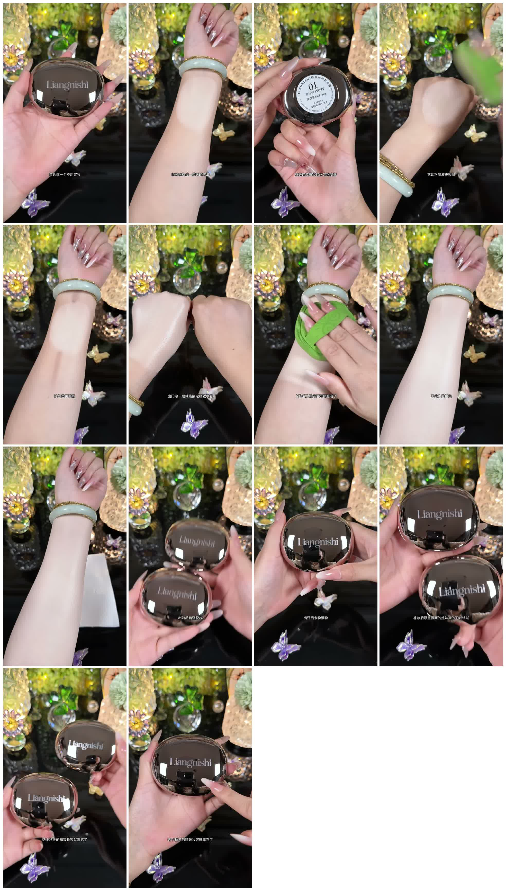
# 分镜脚本 + AI提示词｜08_7564716825205050661 - 平台：抖音 - 原链接：https://www.douyin.com/video/7564716825205050661 - 本地视频：/Users/mac/Desktop/视频素材/_中转/抖音_203403_7564716825205050661.mp4 - 时长：27.28 秒 - 抽帧规则：每 2 秒 1 帧 - 联系表：contact_sheet.jpg ## 使用说明 - 每个镜头按视频时间顺序排列。 - AI 提示词已按用户规范处理：以 `@xxx` 开头，产品/膏霜位置可复用 `@xxx`，不要求生成字幕，每条结尾明确不要字幕。 - 如需更精细版本，可基于 `frames/` 逐帧二次改写。 ## 分镜明细 ### 镜头 01｜约 00s｜开场钩子  画面描述：用近景快速建立产品/人物/使用场景，画面节奏干净直接，先给观众一个可感知的视觉记忆点。 分镜脚本：开场钩子：用近景快速建立产品/人物/使用场景，画面节奏干净直接，先给观众一个可感知的视觉记忆点。建议保持 1.5-2 秒节奏，动作不要过满，重点放在产品、手部和质感变化上。 AI提示词：@xxx广告开场近景，产品或手部动作进入画面，构图稳定，背景干净，第一秒抓住注意力，竖屏9:16，近景开场，镜头轻微推进，产品/膏霜位置使用@xxx，真实商业美妆短视频风格，高清细节，皮肤质感自然，光线柔和通透，色彩干净高级，背景不杂乱，动作连贯自然，负面：低清晰度、畸形手、过度磨皮、脏乱背景、文字水印、logo乱码、过曝、塑料感。整段视频不要出现任何字幕 ### 镜头 02｜约 02s｜开场钩子  画面描述：用近景快速建立产品/人物/使用场景，画面节奏干净直接，先给观众一个可感知的视觉记忆点。 分镜脚本：开场钩子：用近景快速建立产品/人物/使用场景，画面节奏干净直接，先给观众一个可感知的视觉记忆点。建议保持 1.5-2 秒节奏，动作不要过满，重点放在产品、手部和质感变化上。 AI提示词：@xxx广告开场近景，产品或手部动作进入画面，构图稳定，背景干净，第一秒抓住注意力，竖屏9:16，俯拍或侧拍，构图留白干净，产品/膏霜位置使用@xxx，真实商业美妆短视频风格，高清细节，皮肤质感自然，光线柔和通透，色彩干净高级，背景不杂乱，动作连贯自然，负面：低清晰度、畸形手、过度磨皮、脏乱背景、文字水印、logo乱码、过曝、塑料感。整段视频不要出现任何字幕 ### 镜头 03｜约 04s｜产品亮相  画面描述：镜头聚焦产品外观、瓶身、质地或包装细节，突出卖点物件本身。 分镜脚本：产品亮相：镜头聚焦产品外观、瓶身、质地或包装细节，突出卖点物件本身。建议保持 1.5-2 秒节奏，动作不要过满，重点放在产品、手部和质感变化上。 AI提示词：@xxx产品展示特写，瓶身/膏霜/包装细节清晰，商业棚拍质感，浅景深，干净高级背景，竖屏9:16，微距特写，浅景深，产品/膏霜位置使用@xxx，真实商业美妆短视频风格，高清细节，皮肤质感自然，光线柔和通透，色彩干净高级，背景不杂乱，动作连贯自然，负面：低清晰度、畸形手、过度磨皮、脏乱背景、文字水印、logo乱码、过曝、塑料感。整段视频不要出现任何字幕 ### 镜头 04｜约 06s｜产品亮相  画面描述：镜头聚焦产品外观、瓶身、质地或包装细节，突出卖点物件本身。 分镜脚本：产品亮相：镜头聚焦产品外观、瓶身、质地或包装细节，突出卖点物件本身。建议保持 1.5-2 秒节奏，动作不要过满，重点放在产品、手部和质感变化上。 AI提示词：@xxx产品展示特写，瓶身/膏霜/包装细节清晰，商业棚拍质感，浅景深，干净高级背景，竖屏9:16，中近景，轻微手持运动，产品/膏霜位置使用@xxx，真实商业美妆短视频风格，高清细节，皮肤质感自然，光线柔和通透，色彩干净高级，背景不杂乱，动作连贯自然，负面：低清晰度、畸形手、过度磨皮、脏乱背景、文字水印、logo乱码、过曝、塑料感。整段视频不要出现任何字幕 ### 镜头 05｜约 08s｜动作演示  画面描述：通过手部拿取、打开、挤压、涂抹、展示等动作，把产品使用方式讲清楚。 分镜脚本：动作演示：通过手部拿取、打开、挤压、涂抹、展示等动作，把产品使用方式讲清楚。建议保持 1.5-2 秒节奏，动作不要过满，重点放在产品、手部和质感变化上。 AI提示词：@xxx手部操作特写，年轻女性白皙双手自然拿取并使用产品，动作柔和顺滑，真实生活化，竖屏9:16，俯拍或侧拍，构图留白干净，产品/膏霜位置使用@xxx，真实商业美妆短视频风格，高清细节，皮肤质感自然，光线柔和通透，色彩干净高级，背景不杂乱，动作连贯自然，负面：低清晰度、畸形手、过度磨皮、脏乱背景、文字水印、logo乱码、过曝、塑料感。整段视频不要出现任何字幕 ### 镜头 06｜约 10s｜动作演示  画面描述：通过手部拿取、打开、挤压、涂抹、展示等动作，把产品使用方式讲清楚。 分镜脚本：动作演示：通过手部拿取、打开、挤压、涂抹、展示等动作，把产品使用方式讲清楚。建议保持 1.5-2 秒节奏，动作不要过满，重点放在产品、手部和质感变化上。 AI提示词：@xxx手部操作特写，年轻女性白皙双手自然拿取并使用产品，动作柔和顺滑，真实生活化，竖屏9:16，微距特写，浅景深，产品/膏霜位置使用@xxx，真实商业美妆短视频风格，高清细节，皮肤质感自然，光线柔和通透，色彩干净高级，背景不杂乱，动作连贯自然，负面：低清晰度、畸形手、过度磨皮、脏乱背景、文字水印、logo乱码、过曝、塑料感。整段视频不要出现任何字幕 ### 镜头 07｜约 12s｜质地细节  画面描述：放大产品质地、颜色、光泽或上肤效果，突出“看得见”的感官体验。 分镜脚本：质地细节：放大产品质地、颜色、光泽或上肤效果，突出“看得见”的感官体验。建议保持 1.5-2 秒节奏，动作不要过满，重点放在产品、手部和质感变化上。 AI提示词：@xxx微距质地镜头，膏体/液体/粉质细腻可见，柔和高光，干净皮肤纹理，真实美妆广告质感，竖屏9:16，中近景，轻微手持运动，产品/膏霜位置使用@xxx，真实商业美妆短视频风格，高清细节，皮肤质感自然，光线柔和通透，色彩干净高级，背景不杂乱，动作连贯自然，负面：低清晰度、畸形手、过度磨皮、脏乱背景、文字水印、logo乱码、过曝、塑料感。整段视频不要出现任何字幕 ### 镜头 08｜约 14s｜使用效果  画面描述：镜头转向脸部、手背、局部皮肤或场景效果，表现使用前后的氛围变化。 分镜脚本：使用效果：镜头转向脸部、手背、局部皮肤或场景效果，表现使用前后的氛围变化。建议保持 1.5-2 秒节奏，动作不要过满，重点放在产品、手部和质感变化上。 AI提示词：@xxx效果展示镜头，肤色干净通透，妆效自然，画面明亮柔和，人物状态精致不夸张，竖屏9:16，俯拍或侧拍，构图留白干净，产品/膏霜位置使用@xxx，真实商业美妆短视频风格，高清细节，皮肤质感自然，光线柔和通透，色彩干净高级，背景不杂乱，动作连贯自然，负面：低清晰度、畸形手、过度磨皮、脏乱背景、文字水印、logo乱码、过曝、塑料感。整段视频不要出现任何字幕 ### 镜头 09｜约 16s｜使用效果  画面描述：镜头转向脸部、手背、局部皮肤或场景效果，表现使用前后的氛围变化。 分镜脚本：使用效果：镜头转向脸部、手背、局部皮肤或场景效果，表现使用前后的氛围变化。建议保持 1.5-2 秒节奏，动作不要过满，重点放在产品、手部和质感变化上。 AI提示词：@xxx效果展示镜头，肤色干净通透，妆效自然，画面明亮柔和，人物状态精致不夸张，竖屏9:16，微距特写，浅景深，产品/膏霜位置使用@xxx，真实商业美妆短视频风格，高清细节，皮肤质感自然，光线柔和通透，色彩干净高级，背景不杂乱，动作连贯自然，负面：低清晰度、畸形手、过度磨皮、脏乱背景、文字水印、logo乱码、过曝、塑料感。整段视频不要出现任何字幕 ### 镜头 10｜约 18s｜氛围补充  画面描述：用环境、道具、花材、桌面、布景或生活方式镜头补足品牌调性。 分镜脚本：氛围补充：用环境、道具、花材、桌面、布景或生活方式镜头补足品牌调性。建议保持 1.5-2 秒节奏，动作不要过满，重点放在产品、手部和质感变化上。 AI提示词：@xxx生活方式氛围镜头，桌面陈列精致，道具简洁，暖色自然光，轻奢美妆视觉风格，竖屏9:16，中近景，轻微手持运动，产品/膏霜位置使用@xxx，真实商业美妆短视频风格，高清细节，皮肤质感自然，光线柔和通透，色彩干净高级，背景不杂乱，动作连贯自然，负面：低清晰度、畸形手、过度磨皮、脏乱背景、文字水印、logo乱码、过曝、塑料感。整段视频不要出现任何字幕 ### 镜头 11｜约 20s｜氛围补充  画面描述：用环境、道具、花材、桌面、布景或生活方式镜头补足品牌调性。 分镜脚本：氛围补充：用环境、道具、花材、桌面、布景或生活方式镜头补足品牌调性。建议保持 1.5-2 秒节奏，动作不要过满，重点放在产品、手部和质感变化上。 AI提示词：@xxx生活方式氛围镜头，桌面陈列精致，道具简洁，暖色自然光，轻奢美妆视觉风格，竖屏9:16，俯拍或侧拍，构图留白干净，产品/膏霜位置使用@xxx，真实商业美妆短视频风格，高清细节，皮肤质感自然，光线柔和通透，色彩干净高级，背景不杂乱，动作连贯自然，负面：低清晰度、畸形手、过度磨皮、脏乱背景、文字水印、logo乱码、过曝、塑料感。整段视频不要出现任何字幕 ### 镜头 12｜约 22s｜卖点强化  画面描述：回到核心动作或核心细节，重复强化产品记忆点，让画面更有转化感。 分镜脚本：卖点强化：回到核心动作或核心细节，重复强化产品记忆点，让画面更有转化感。建议保持 1.5-2 秒节奏，动作不要过满，重点放在产品、手部和质感变化上。 AI提示词：@xxx卖点强化特写，产品与使用动作同框，画面重点集中，清晰表现质感、颜色和使用体验，竖屏9:16，微距特写，浅景深，产品/膏霜位置使用@xxx，真实商业美妆短视频风格，高清细节，皮肤质感自然，光线柔和通透，色彩干净高级，背景不杂乱，动作连贯自然，负面：低清晰度、畸形手、过度磨皮、脏乱背景、文字水印、logo乱码、过曝、塑料感。整段视频不要出现任何字幕 ### 镜头 13｜约 24s｜卖点强化  画面描述：回到核心动作或核心细节，重复强化产品记忆点，让画面更有转化感。 分镜脚本：卖点强化：回到核心动作或核心细节，重复强化产品记忆点，让画面更有转化感。建议保持 1.5-2 秒节奏，动作不要过满，重点放在产品、手部和质感变化上。 AI提示词：@xxx卖点强化特写，产品与使用动作同框，画面重点集中，清晰表现质感、颜色和使用体验，竖屏9:16，中近景，轻微手持运动，产品/膏霜位置使用@xxx，真实商业美妆短视频风格，高清细节，皮肤质感自然，光线柔和通透，色彩干净高级，背景不杂乱，动作连贯自然，负面：低清晰度、畸形手、过度磨皮、脏乱背景、文字水印、logo乱码、过曝、塑料感。整段视频不要出现任何字幕 ### 镜头 14｜约 26s｜收尾定格  画面描述：用产品定格、人物满意状态或整套陈列结束，形成干净的广告收尾。 分镜脚本：收尾定格：用产品定格、人物满意状态或整套陈列结束，形成干净的广告收尾。建议保持 1.5-2 秒节奏，动作不要过满，重点放在产品、手部和质感变化上。 AI提示词：@xxx广告收尾定格，产品居中摆放或手持展示，构图完整，高级干净，适合短视频结尾，竖屏9:16，稳定定格，适合结尾停留，产品/膏霜位置使用@xxx，真实商业美妆短视频风格，高清细节，皮肤质感自然，光线柔和通透，色彩干净高级，背景不杂乱，动作连贯自然，负面：低清晰度、畸形手、过度磨皮、脏乱背景、文字水印、logo乱码、过曝、塑料感。整段视频不要出现任何字幕
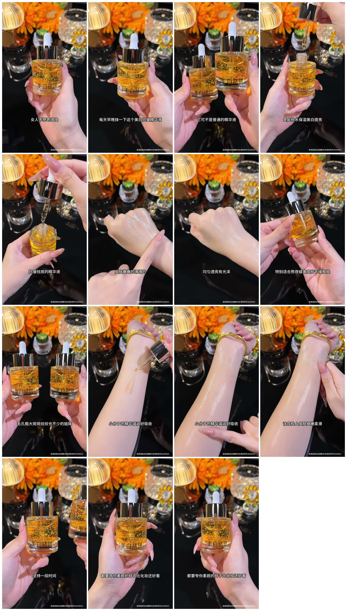
# 分镜脚本 + AI提示词｜09_7559767287391554851 - 平台：抖音 - 原链接：https://www.douyin.com/video/7559767287391554851 - 本地视频：/Users/mac/Desktop/视频素材/_中转/抖音_203416_7559767287391554851.mp4 - 时长：30.79 秒 - 抽帧规则：每 2 秒 1 帧 - 联系表：contact_sheet.jpg ## 使用说明 - 每个镜头按视频时间顺序排列。 - AI 提示词已按用户规范处理：以 `@xxx` 开头，产品/膏霜位置可复用 `@xxx`，不要求生成字幕，每条结尾明确不要字幕。 - 如需更精细版本，可基于 `frames/` 逐帧二次改写。 ## 分镜明细 ### 镜头 01｜约 00s｜开场钩子  画面描述：用近景快速建立产品/人物/使用场景，画面节奏干净直接，先给观众一个可感知的视觉记忆点。 分镜脚本：开场钩子：用近景快速建立产品/人物/使用场景，画面节奏干净直接，先给观众一个可感知的视觉记忆点。建议保持 1.5-2 秒节奏，动作不要过满，重点放在产品、手部和质感变化上。 AI提示词：@xxx广告开场近景，产品或手部动作进入画面，构图稳定，背景干净，第一秒抓住注意力，竖屏9:16，近景开场，镜头轻微推进，产品/膏霜位置使用@xxx，真实商业美妆短视频风格，高清细节，皮肤质感自然，光线柔和通透，色彩干净高级，背景不杂乱，动作连贯自然，负面：低清晰度、畸形手、过度磨皮、脏乱背景、文字水印、logo乱码、过曝、塑料感。整段视频不要出现任何字幕 ### 镜头 02｜约 02s｜开场钩子  画面描述：用近景快速建立产品/人物/使用场景，画面节奏干净直接，先给观众一个可感知的视觉记忆点。 分镜脚本：开场钩子：用近景快速建立产品/人物/使用场景，画面节奏干净直接，先给观众一个可感知的视觉记忆点。建议保持 1.5-2 秒节奏，动作不要过满，重点放在产品、手部和质感变化上。 AI提示词：@xxx广告开场近景，产品或手部动作进入画面，构图稳定，背景干净，第一秒抓住注意力，竖屏9:16，俯拍或侧拍，构图留白干净，产品/膏霜位置使用@xxx，真实商业美妆短视频风格，高清细节，皮肤质感自然，光线柔和通透，色彩干净高级，背景不杂乱，动作连贯自然，负面：低清晰度、畸形手、过度磨皮、脏乱背景、文字水印、logo乱码、过曝、塑料感。整段视频不要出现任何字幕 ### 镜头 03｜约 04s｜产品亮相  画面描述：镜头聚焦产品外观、瓶身、质地或包装细节，突出卖点物件本身。 分镜脚本：产品亮相：镜头聚焦产品外观、瓶身、质地或包装细节，突出卖点物件本身。建议保持 1.5-2 秒节奏，动作不要过满，重点放在产品、手部和质感变化上。 AI提示词：@xxx产品展示特写，瓶身/膏霜/包装细节清晰，商业棚拍质感，浅景深，干净高级背景，竖屏9:16，微距特写，浅景深，产品/膏霜位置使用@xxx，真实商业美妆短视频风格，高清细节，皮肤质感自然，光线柔和通透，色彩干净高级，背景不杂乱，动作连贯自然，负面：低清晰度、畸形手、过度磨皮、脏乱背景、文字水印、logo乱码、过曝、塑料感。整段视频不要出现任何字幕 ### 镜头 04｜约 06s｜产品亮相  画面描述：镜头聚焦产品外观、瓶身、质地或包装细节，突出卖点物件本身。 分镜脚本：产品亮相：镜头聚焦产品外观、瓶身、质地或包装细节，突出卖点物件本身。建议保持 1.5-2 秒节奏，动作不要过满，重点放在产品、手部和质感变化上。 AI提示词：@xxx产品展示特写，瓶身/膏霜/包装细节清晰，商业棚拍质感，浅景深，干净高级背景，竖屏9:16，中近景，轻微手持运动，产品/膏霜位置使用@xxx，真实商业美妆短视频风格，高清细节，皮肤质感自然，光线柔和通透，色彩干净高级，背景不杂乱，动作连贯自然，负面：低清晰度、畸形手、过度磨皮、脏乱背景、文字水印、logo乱码、过曝、塑料感。整段视频不要出现任何字幕 ### 镜头 05｜约 08s｜动作演示  画面描述：通过手部拿取、打开、挤压、涂抹、展示等动作，把产品使用方式讲清楚。 分镜脚本：动作演示：通过手部拿取、打开、挤压、涂抹、展示等动作，把产品使用方式讲清楚。建议保持 1.5-2 秒节奏，动作不要过满，重点放在产品、手部和质感变化上。 AI提示词：@xxx手部操作特写，年轻女性白皙双手自然拿取并使用产品，动作柔和顺滑，真实生活化，竖屏9:16，俯拍或侧拍，构图留白干净，产品/膏霜位置使用@xxx，真实商业美妆短视频风格，高清细节，皮肤质感自然，光线柔和通透，色彩干净高级，背景不杂乱，动作连贯自然，负面：低清晰度、畸形手、过度磨皮、脏乱背景、文字水印、logo乱码、过曝、塑料感。整段视频不要出现任何字幕 ### 镜头 06｜约 10s｜动作演示  画面描述：通过手部拿取、打开、挤压、涂抹、展示等动作，把产品使用方式讲清楚。 分镜脚本：动作演示：通过手部拿取、打开、挤压、涂抹、展示等动作，把产品使用方式讲清楚。建议保持 1.5-2 秒节奏，动作不要过满，重点放在产品、手部和质感变化上。 AI提示词：@xxx手部操作特写，年轻女性白皙双手自然拿取并使用产品，动作柔和顺滑，真实生活化，竖屏9:16，微距特写，浅景深，产品/膏霜位置使用@xxx，真实商业美妆短视频风格，高清细节，皮肤质感自然，光线柔和通透，色彩干净高级，背景不杂乱，动作连贯自然，负面：低清晰度、畸形手、过度磨皮、脏乱背景、文字水印、logo乱码、过曝、塑料感。整段视频不要出现任何字幕 ### 镜头 07｜约 12s｜质地细节  画面描述：放大产品质地、颜色、光泽或上肤效果，突出“看得见”的感官体验。 分镜脚本：质地细节：放大产品质地、颜色、光泽或上肤效果，突出“看得见”的感官体验。建议保持 1.5-2 秒节奏，动作不要过满，重点放在产品、手部和质感变化上。 AI提示词：@xxx微距质地镜头，膏体/液体/粉质细腻可见，柔和高光，干净皮肤纹理，真实美妆广告质感，竖屏9:16，中近景，轻微手持运动，产品/膏霜位置使用@xxx，真实商业美妆短视频风格，高清细节，皮肤质感自然，光线柔和通透，色彩干净高级，背景不杂乱，动作连贯自然，负面：低清晰度、畸形手、过度磨皮、脏乱背景、文字水印、logo乱码、过曝、塑料感。整段视频不要出现任何字幕 ### 镜头 08｜约 14s｜质地细节  画面描述：放大产品质地、颜色、光泽或上肤效果，突出“看得见”的感官体验。 分镜脚本：质地细节：放大产品质地、颜色、光泽或上肤效果，突出“看得见”的感官体验。建议保持 1.5-2 秒节奏，动作不要过满，重点放在产品、手部和质感变化上。 AI提示词：@xxx微距质地镜头，膏体/液体/粉质细腻可见，柔和高光，干净皮肤纹理，真实美妆广告质感，竖屏9:16，俯拍或侧拍，构图留白干净，产品/膏霜位置使用@xxx，真实商业美妆短视频风格，高清细节，皮肤质感自然，光线柔和通透，色彩干净高级，背景不杂乱，动作连贯自然，负面：低清晰度、畸形手、过度磨皮、脏乱背景、文字水印、logo乱码、过曝、塑料感。整段视频不要出现任何字幕 ### 镜头 09｜约 16s｜使用效果  画面描述：镜头转向脸部、手背、局部皮肤或场景效果，表现使用前后的氛围变化。 分镜脚本：使用效果：镜头转向脸部、手背、局部皮肤或场景效果，表现使用前后的氛围变化。建议保持 1.5-2 秒节奏，动作不要过满，重点放在产品、手部和质感变化上。 AI提示词：@xxx效果展示镜头，肤色干净通透，妆效自然，画面明亮柔和，人物状态精致不夸张，竖屏9:16，微距特写，浅景深，产品/膏霜位置使用@xxx，真实商业美妆短视频风格，高清细节，皮肤质感自然，光线柔和通透，色彩干净高级，背景不杂乱，动作连贯自然，负面：低清晰度、畸形手、过度磨皮、脏乱背景、文字水印、logo乱码、过曝、塑料感。整段视频不要出现任何字幕 ### 镜头 10｜约 18s｜使用效果  画面描述：镜头转向脸部、手背、局部皮肤或场景效果，表现使用前后的氛围变化。 分镜脚本：使用效果：镜头转向脸部、手背、局部皮肤或场景效果，表现使用前后的氛围变化。建议保持 1.5-2 秒节奏，动作不要过满，重点放在产品、手部和质感变化上。 AI提示词：@xxx效果展示镜头，肤色干净通透，妆效自然，画面明亮柔和，人物状态精致不夸张，竖屏9:16，中近景，轻微手持运动，产品/膏霜位置使用@xxx，真实商业美妆短视频风格，高清细节，皮肤质感自然，光线柔和通透，色彩干净高级，背景不杂乱，动作连贯自然，负面：低清晰度、畸形手、过度磨皮、脏乱背景、文字水印、logo乱码、过曝、塑料感。整段视频不要出现任何字幕 ### 镜头 11｜约 20s｜氛围补充  画面描述：用环境、道具、花材、桌面、布景或生活方式镜头补足品牌调性。 分镜脚本：氛围补充：用环境、道具、花材、桌面、布景或生活方式镜头补足品牌调性。建议保持 1.5-2 秒节奏，动作不要过满，重点放在产品、手部和质感变化上。 AI提示词：@xxx生活方式氛围镜头，桌面陈列精致，道具简洁，暖色自然光，轻奢美妆视觉风格，竖屏9:16，俯拍或侧拍，构图留白干净，产品/膏霜位置使用@xxx，真实商业美妆短视频风格，高清细节，皮肤质感自然，光线柔和通透，色彩干净高级，背景不杂乱，动作连贯自然，负面：低清晰度、畸形手、过度磨皮、脏乱背景、文字水印、logo乱码、过曝、塑料感。整段视频不要出现任何字幕 ### 镜头 12｜约 22s｜氛围补充  画面描述：用环境、道具、花材、桌面、布景或生活方式镜头补足品牌调性。 分镜脚本：氛围补充：用环境、道具、花材、桌面、布景或生活方式镜头补足品牌调性。建议保持 1.5-2 秒节奏，动作不要过满，重点放在产品、手部和质感变化上。 AI提示词：@xxx生活方式氛围镜头，桌面陈列精致，道具简洁，暖色自然光，轻奢美妆视觉风格，竖屏9:16，微距特写，浅景深，产品/膏霜位置使用@xxx，真实商业美妆短视频风格，高清细节，皮肤质感自然，光线柔和通透，色彩干净高级，背景不杂乱，动作连贯自然，负面：低清晰度、畸形手、过度磨皮、脏乱背景、文字水印、logo乱码、过曝、塑料感。整段视频不要出现任何字幕 ### 镜头 13｜约 24s｜卖点强化  画面描述：回到核心动作或核心细节，重复强化产品记忆点，让画面更有转化感。 分镜脚本：卖点强化：回到核心动作或核心细节，重复强化产品记忆点，让画面更有转化感。建议保持 1.5-2 秒节奏，动作不要过满，重点放在产品、手部和质感变化上。 AI提示词：@xxx卖点强化特写，产品与使用动作同框，画面重点集中，清晰表现质感、颜色和使用体验，竖屏9:16，中近景，轻微手持运动，产品/膏霜位置使用@xxx，真实商业美妆短视频风格，高清细节，皮肤质感自然，光线柔和通透，色彩干净高级，背景不杂乱，动作连贯自然，负面：低清晰度、畸形手、过度磨皮、脏乱背景、文字水印、logo乱码、过曝、塑料感。整段视频不要出现任何字幕 ### 镜头 14｜约 26s｜卖点强化  画面描述：回到核心动作或核心细节，重复强化产品记忆点，让画面更有转化感。 分镜脚本：卖点强化：回到核心动作或核心细节，重复强化产品记忆点，让画面更有转化感。建议保持 1.5-2 秒节奏，动作不要过满，重点放在产品、手部和质感变化上。 AI提示词：@xxx卖点强化特写，产品与使用动作同框，画面重点集中，清晰表现质感、颜色和使用体验，竖屏9:16，俯拍或侧拍，构图留白干净，产品/膏霜位置使用@xxx，真实商业美妆短视频风格，高清细节，皮肤质感自然，光线柔和通透，色彩干净高级，背景不杂乱，动作连贯自然，负面：低清晰度、畸形手、过度磨皮、脏乱背景、文字水印、logo乱码、过曝、塑料感。整段视频不要出现任何字幕 ### 镜头 15｜约 28s｜收尾定格  画面描述：用产品定格、人物满意状态或整套陈列结束，形成干净的广告收尾。 分镜脚本：收尾定格：用产品定格、人物满意状态或整套陈列结束，形成干净的广告收尾。建议保持 1.5-2 秒节奏，动作不要过满，重点放在产品、手部和质感变化上。 AI提示词：@xxx广告收尾定格，产品居中摆放或手持展示，构图完整，高级干净，适合短视频结尾，竖屏9:16，稳定定格，适合结尾停留，产品/膏霜位置使用@xxx，真实商业美妆短视频风格，高清细节，皮肤质感自然，光线柔和通透，色彩干净高级，背景不杂乱，动作连贯自然，负面：低清晰度、畸形手、过度磨皮、脏乱背景、文字水印、logo乱码、过曝、塑料感。整段视频不要出现任何字幕
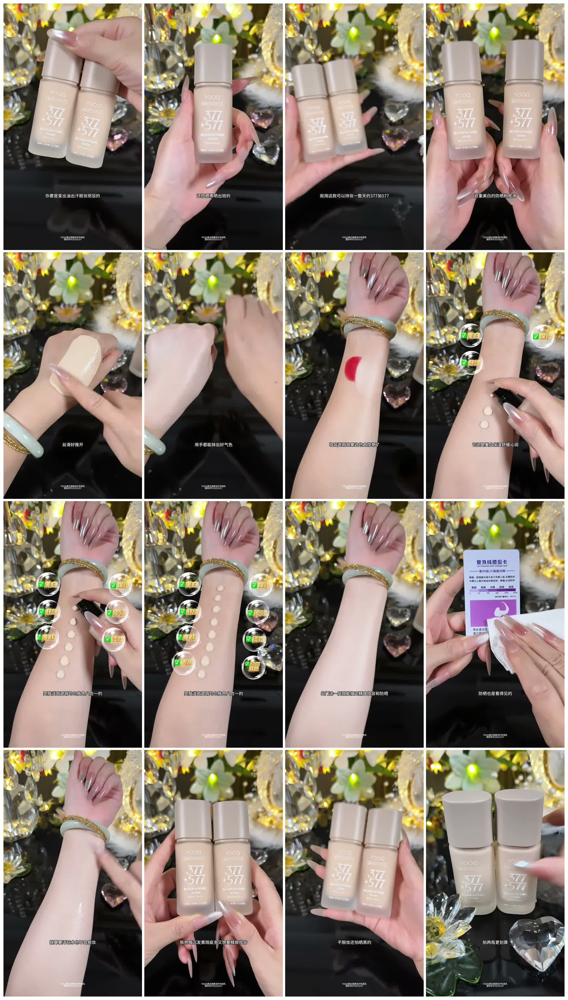
# 分镜脚本 + AI提示词｜10_7536464381422423355 - 平台：抖音 - 原链接：https://www.douyin.com/video/7536464381422423355 - 本地视频：/Users/mac/Desktop/视频素材/_中转/抖音_203429_7536464381422423355.mp4 - 时长：31.88 秒 - 抽帧规则：每 2 秒 1 帧 - 联系表：contact_sheet.jpg ## 使用说明 - 每个镜头按视频时间顺序排列。 - AI 提示词已按用户规范处理：以 `@xxx` 开头，产品/膏霜位置可复用 `@xxx`，不要求生成字幕，每条结尾明确不要字幕。 - 如需更精细版本，可基于 `frames/` 逐帧二次改写。 ## 分镜明细 ### 镜头 01｜约 00s｜开场钩子  画面描述：用近景快速建立产品/人物/使用场景，画面节奏干净直接，先给观众一个可感知的视觉记忆点。 分镜脚本：开场钩子：用近景快速建立产品/人物/使用场景，画面节奏干净直接，先给观众一个可感知的视觉记忆点。建议保持 1.5-2 秒节奏，动作不要过满，重点放在产品、手部和质感变化上。 AI提示词：@xxx广告开场近景，产品或手部动作进入画面，构图稳定，背景干净，第一秒抓住注意力，竖屏9:16，近景开场，镜头轻微推进，产品/膏霜位置使用@xxx，真实商业美妆短视频风格，高清细节，皮肤质感自然，光线柔和通透，色彩干净高级，背景不杂乱，动作连贯自然，负面：低清晰度、畸形手、过度磨皮、脏乱背景、文字水印、logo乱码、过曝、塑料感。整段视频不要出现任何字幕 ### 镜头 02｜约 02s｜开场钩子  画面描述：用近景快速建立产品/人物/使用场景，画面节奏干净直接，先给观众一个可感知的视觉记忆点。 分镜脚本：开场钩子：用近景快速建立产品/人物/使用场景，画面节奏干净直接，先给观众一个可感知的视觉记忆点。建议保持 1.5-2 秒节奏，动作不要过满，重点放在产品、手部和质感变化上。 AI提示词：@xxx广告开场近景，产品或手部动作进入画面，构图稳定，背景干净，第一秒抓住注意力，竖屏9:16，俯拍或侧拍，构图留白干净，产品/膏霜位置使用@xxx，真实商业美妆短视频风格，高清细节，皮肤质感自然，光线柔和通透，色彩干净高级，背景不杂乱，动作连贯自然，负面：低清晰度、畸形手、过度磨皮、脏乱背景、文字水印、logo乱码、过曝、塑料感。整段视频不要出现任何字幕 ### 镜头 03｜约 04s｜产品亮相  画面描述：镜头聚焦产品外观、瓶身、质地或包装细节，突出卖点物件本身。 分镜脚本：产品亮相：镜头聚焦产品外观、瓶身、质地或包装细节，突出卖点物件本身。建议保持 1.5-2 秒节奏，动作不要过满，重点放在产品、手部和质感变化上。 AI提示词：@xxx产品展示特写，瓶身/膏霜/包装细节清晰，商业棚拍质感，浅景深，干净高级背景，竖屏9:16，微距特写，浅景深，产品/膏霜位置使用@xxx，真实商业美妆短视频风格，高清细节，皮肤质感自然，光线柔和通透，色彩干净高级，背景不杂乱，动作连贯自然，负面：低清晰度、畸形手、过度磨皮、脏乱背景、文字水印、logo乱码、过曝、塑料感。整段视频不要出现任何字幕 ### 镜头 04｜约 06s｜产品亮相  画面描述：镜头聚焦产品外观、瓶身、质地或包装细节，突出卖点物件本身。 分镜脚本：产品亮相：镜头聚焦产品外观、瓶身、质地或包装细节，突出卖点物件本身。建议保持 1.5-2 秒节奏，动作不要过满，重点放在产品、手部和质感变化上。 AI提示词：@xxx产品展示特写，瓶身/膏霜/包装细节清晰，商业棚拍质感，浅景深，干净高级背景，竖屏9:16，中近景，轻微手持运动，产品/膏霜位置使用@xxx，真实商业美妆短视频风格，高清细节，皮肤质感自然，光线柔和通透，色彩干净高级，背景不杂乱，动作连贯自然，负面：低清晰度、畸形手、过度磨皮、脏乱背景、文字水印、logo乱码、过曝、塑料感。整段视频不要出现任何字幕 ### 镜头 05｜约 08s｜动作演示  画面描述：通过手部拿取、打开、挤压、涂抹、展示等动作，把产品使用方式讲清楚。 分镜脚本：动作演示：通过手部拿取、打开、挤压、涂抹、展示等动作，把产品使用方式讲清楚。建议保持 1.5-2 秒节奏，动作不要过满，重点放在产品、手部和质感变化上。 AI提示词：@xxx手部操作特写，年轻女性白皙双手自然拿取并使用产品，动作柔和顺滑，真实生活化，竖屏9:16，俯拍或侧拍，构图留白干净，产品/膏霜位置使用@xxx，真实商业美妆短视频风格，高清细节，皮肤质感自然，光线柔和通透，色彩干净高级，背景不杂乱，动作连贯自然，负面：低清晰度、畸形手、过度磨皮、脏乱背景、文字水印、logo乱码、过曝、塑料感。整段视频不要出现任何字幕 ### 镜头 06｜约 10s｜动作演示  画面描述：通过手部拿取、打开、挤压、涂抹、展示等动作，把产品使用方式讲清楚。 分镜脚本：动作演示：通过手部拿取、打开、挤压、涂抹、展示等动作，把产品使用方式讲清楚。建议保持 1.5-2 秒节奏，动作不要过满，重点放在产品、手部和质感变化上。 AI提示词：@xxx手部操作特写，年轻女性白皙双手自然拿取并使用产品，动作柔和顺滑，真实生活化，竖屏9:16，微距特写，浅景深，产品/膏霜位置使用@xxx，真实商业美妆短视频风格，高清细节，皮肤质感自然，光线柔和通透，色彩干净高级，背景不杂乱，动作连贯自然，负面：低清晰度、畸形手、过度磨皮、脏乱背景、文字水印、logo乱码、过曝、塑料感。整段视频不要出现任何字幕 ### 镜头 07｜约 12s｜质地细节  画面描述：放大产品质地、颜色、光泽或上肤效果，突出“看得见”的感官体验。 分镜脚本：质地细节：放大产品质地、颜色、光泽或上肤效果，突出“看得见”的感官体验。建议保持 1.5-2 秒节奏，动作不要过满，重点放在产品、手部和质感变化上。 AI提示词：@xxx微距质地镜头，膏体/液体/粉质细腻可见，柔和高光，干净皮肤纹理，真实美妆广告质感，竖屏9:16，中近景，轻微手持运动，产品/膏霜位置使用@xxx，真实商业美妆短视频风格，高清细节，皮肤质感自然，光线柔和通透，色彩干净高级，背景不杂乱，动作连贯自然，负面：低清晰度、畸形手、过度磨皮、脏乱背景、文字水印、logo乱码、过曝、塑料感。整段视频不要出现任何字幕 ### 镜头 08｜约 14s｜质地细节  画面描述：放大产品质地、颜色、光泽或上肤效果，突出“看得见”的感官体验。 分镜脚本：质地细节：放大产品质地、颜色、光泽或上肤效果，突出“看得见”的感官体验。建议保持 1.5-2 秒节奏，动作不要过满，重点放在产品、手部和质感变化上。 AI提示词：@xxx微距质地镜头，膏体/液体/粉质细腻可见，柔和高光，干净皮肤纹理，真实美妆广告质感，竖屏9:16，俯拍或侧拍，构图留白干净，产品/膏霜位置使用@xxx，真实商业美妆短视频风格，高清细节，皮肤质感自然，光线柔和通透，色彩干净高级，背景不杂乱，动作连贯自然，负面：低清晰度、畸形手、过度磨皮、脏乱背景、文字水印、logo乱码、过曝、塑料感。整段视频不要出现任何字幕 ### 镜头 09｜约 16s｜使用效果  画面描述：镜头转向脸部、手背、局部皮肤或场景效果，表现使用前后的氛围变化。 分镜脚本：使用效果：镜头转向脸部、手背、局部皮肤或场景效果，表现使用前后的氛围变化。建议保持 1.5-2 秒节奏，动作不要过满，重点放在产品、手部和质感变化上。 AI提示词：@xxx效果展示镜头，肤色干净通透，妆效自然，画面明亮柔和，人物状态精致不夸张，竖屏9:16，微距特写，浅景深，产品/膏霜位置使用@xxx，真实商业美妆短视频风格，高清细节，皮肤质感自然，光线柔和通透，色彩干净高级，背景不杂乱，动作连贯自然，负面：低清晰度、畸形手、过度磨皮、脏乱背景、文字水印、logo乱码、过曝、塑料感。整段视频不要出现任何字幕 ### 镜头 10｜约 18s｜使用效果  画面描述：镜头转向脸部、手背、局部皮肤或场景效果，表现使用前后的氛围变化。 分镜脚本：使用效果：镜头转向脸部、手背、局部皮肤或场景效果，表现使用前后的氛围变化。建议保持 1.5-2 秒节奏，动作不要过满，重点放在产品、手部和质感变化上。 AI提示词：@xxx效果展示镜头，肤色干净通透，妆效自然，画面明亮柔和，人物状态精致不夸张，竖屏9:16，中近景，轻微手持运动，产品/膏霜位置使用@xxx，真实商业美妆短视频风格，高清细节，皮肤质感自然，光线柔和通透，色彩干净高级，背景不杂乱，动作连贯自然，负面：低清晰度、畸形手、过度磨皮、脏乱背景、文字水印、logo乱码、过曝、塑料感。整段视频不要出现任何字幕 ### 镜头 11｜约 20s｜氛围补充  画面描述：用环境、道具、花材、桌面、布景或生活方式镜头补足品牌调性。 分镜脚本：氛围补充：用环境、道具、花材、桌面、布景或生活方式镜头补足品牌调性。建议保持 1.5-2 秒节奏，动作不要过满，重点放在产品、手部和质感变化上。 AI提示词：@xxx生活方式氛围镜头，桌面陈列精致，道具简洁，暖色自然光，轻奢美妆视觉风格，竖屏9:16，俯拍或侧拍，构图留白干净，产品/膏霜位置使用@xxx，真实商业美妆短视频风格，高清细节，皮肤质感自然，光线柔和通透，色彩干净高级，背景不杂乱，动作连贯自然，负面：低清晰度、畸形手、过度磨皮、脏乱背景、文字水印、logo乱码、过曝、塑料感。整段视频不要出现任何字幕 ### 镜头 12｜约 22s｜氛围补充  画面描述：用环境、道具、花材、桌面、布景或生活方式镜头补足品牌调性。 分镜脚本：氛围补充：用环境、道具、花材、桌面、布景或生活方式镜头补足品牌调性。建议保持 1.5-2 秒节奏，动作不要过满，重点放在产品、手部和质感变化上。 AI提示词：@xxx生活方式氛围镜头，桌面陈列精致，道具简洁，暖色自然光，轻奢美妆视觉风格，竖屏9:16，微距特写，浅景深，产品/膏霜位置使用@xxx，真实商业美妆短视频风格，高清细节，皮肤质感自然，光线柔和通透，色彩干净高级，背景不杂乱，动作连贯自然，负面：低清晰度、畸形手、过度磨皮、脏乱背景、文字水印、logo乱码、过曝、塑料感。整段视频不要出现任何字幕 ### 镜头 13｜约 24s｜卖点强化  画面描述：回到核心动作或核心细节，重复强化产品记忆点，让画面更有转化感。 分镜脚本：卖点强化：回到核心动作或核心细节，重复强化产品记忆点，让画面更有转化感。建议保持 1.5-2 秒节奏，动作不要过满，重点放在产品、手部和质感变化上。 AI提示词：@xxx卖点强化特写，产品与使用动作同框，画面重点集中，清晰表现质感、颜色和使用体验，竖屏9:16，中近景，轻微手持运动，产品/膏霜位置使用@xxx，真实商业美妆短视频风格，高清细节，皮肤质感自然，光线柔和通透，色彩干净高级，背景不杂乱，动作连贯自然，负面：低清晰度、畸形手、过度磨皮、脏乱背景、文字水印、logo乱码、过曝、塑料感。整段视频不要出现任何字幕 ### 镜头 14｜约 26s｜卖点强化  画面描述：回到核心动作或核心细节，重复强化产品记忆点，让画面更有转化感。 分镜脚本：卖点强化：回到核心动作或核心细节，重复强化产品记忆点，让画面更有转化感。建议保持 1.5-2 秒节奏，动作不要过满，重点放在产品、手部和质感变化上。 AI提示词：@xxx卖点强化特写，产品与使用动作同框，画面重点集中，清晰表现质感、颜色和使用体验，竖屏9:16，俯拍或侧拍，构图留白干净，产品/膏霜位置使用@xxx，真实商业美妆短视频风格，高清细节，皮肤质感自然，光线柔和通透，色彩干净高级，背景不杂乱，动作连贯自然，负面：低清晰度、畸形手、过度磨皮、脏乱背景、文字水印、logo乱码、过曝、塑料感。整段视频不要出现任何字幕 ### 镜头 15｜约 28s｜收尾定格  画面描述：用产品定格、人物满意状态或整套陈列结束，形成干净的广告收尾。 分镜脚本：收尾定格：用产品定格、人物满意状态或整套陈列结束，形成干净的广告收尾。建议保持 1.5-2 秒节奏，动作不要过满，重点放在产品、手部和质感变化上。 AI提示词：@xxx广告收尾定格，产品居中摆放或手持展示，构图完整，高级干净，适合短视频结尾，竖屏9:16，微距特写，浅景深，产品/膏霜位置使用@xxx，真实商业美妆短视频风格，高清细节，皮肤质感自然，光线柔和通透，色彩干净高级，背景不杂乱，动作连贯自然，负面：低清晰度、畸形手、过度磨皮、脏乱背景、文字水印、logo乱码、过曝、塑料感。整段视频不要出现任何字幕 ### 镜头 16｜约 30s｜收尾定格  画面描述：用产品定格、人物满意状态或整套陈列结束，形成干净的广告收尾。 分镜脚本：收尾定格：用产品定格、人物满意状态或整套陈列结束，形成干净的广告收尾。建议保持 1.5-2 秒节奏，动作不要过满，重点放在产品、手部和质感变化上。 AI提示词：@xxx广告收尾定格，产品居中摆放或手持展示，构图完整，高级干净，适合短视频结尾，竖屏9:16，稳定定格，适合结尾停留，产品/膏霜位置使用@xxx，真实商业美妆短视频风格，高清细节，皮肤质感自然，光线柔和通透，色彩干净高级，背景不杂乱，动作连贯自然，负面：低清晰度、畸形手、过度磨皮、脏乱背景、文字水印、logo乱码、过曝、塑料感。整段视频不要出现任何字幕
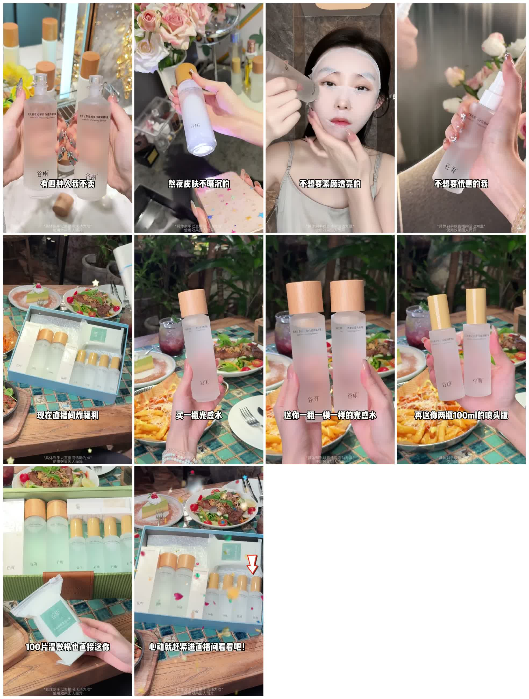
# 分镜脚本 + AI提示词｜11_7560989653726203188 - 平台：抖音 - 原链接：https://www.douyin.com/video/7560989653726203188 - 本地视频：/Users/mac/Desktop/视频素材/_中转/抖音_203442_7560989653726203188.mp4 - 时长：19.78 秒 - 抽帧规则：每 2 秒 1 帧 - 联系表：contact_sheet.jpg ## 使用说明 - 每个镜头按视频时间顺序排列。 - AI 提示词已按用户规范处理：以 `@xxx` 开头，产品/膏霜位置可复用 `@xxx`，不要求生成字幕，每条结尾明确不要字幕。 - 如需更精细版本，可基于 `frames/` 逐帧二次改写。 ## 分镜明细 ### 镜头 01｜约 00s｜开场钩子  画面描述：用近景快速建立产品/人物/使用场景，画面节奏干净直接，先给观众一个可感知的视觉记忆点。 分镜脚本：开场钩子：用近景快速建立产品/人物/使用场景，画面节奏干净直接，先给观众一个可感知的视觉记忆点。建议保持 1.5-2 秒节奏，动作不要过满，重点放在产品、手部和质感变化上。 AI提示词：@xxx广告开场近景，产品或手部动作进入画面，构图稳定，背景干净，第一秒抓住注意力，竖屏9:16，近景开场，镜头轻微推进，产品/膏霜位置使用@xxx，真实商业美妆短视频风格，高清细节，皮肤质感自然，光线柔和通透，色彩干净高级，背景不杂乱，动作连贯自然，负面：低清晰度、畸形手、过度磨皮、脏乱背景、文字水印、logo乱码、过曝、塑料感。整段视频不要出现任何字幕 ### 镜头 02｜约 02s｜开场钩子  画面描述：用近景快速建立产品/人物/使用场景，画面节奏干净直接，先给观众一个可感知的视觉记忆点。 分镜脚本：开场钩子：用近景快速建立产品/人物/使用场景，画面节奏干净直接，先给观众一个可感知的视觉记忆点。建议保持 1.5-2 秒节奏，动作不要过满，重点放在产品、手部和质感变化上。 AI提示词：@xxx广告开场近景，产品或手部动作进入画面，构图稳定，背景干净，第一秒抓住注意力，竖屏9:16，俯拍或侧拍，构图留白干净，产品/膏霜位置使用@xxx，真实商业美妆短视频风格，高清细节，皮肤质感自然，光线柔和通透，色彩干净高级，背景不杂乱，动作连贯自然，负面：低清晰度、畸形手、过度磨皮、脏乱背景、文字水印、logo乱码、过曝、塑料感。整段视频不要出现任何字幕 ### 镜头 03｜约 04s｜产品亮相  画面描述：镜头聚焦产品外观、瓶身、质地或包装细节，突出卖点物件本身。 分镜脚本：产品亮相：镜头聚焦产品外观、瓶身、质地或包装细节，突出卖点物件本身。建议保持 1.5-2 秒节奏，动作不要过满，重点放在产品、手部和质感变化上。 AI提示词：@xxx产品展示特写，瓶身/膏霜/包装细节清晰，商业棚拍质感，浅景深，干净高级背景，竖屏9:16，微距特写，浅景深，产品/膏霜位置使用@xxx，真实商业美妆短视频风格，高清细节，皮肤质感自然，光线柔和通透，色彩干净高级，背景不杂乱，动作连贯自然，负面：低清晰度、畸形手、过度磨皮、脏乱背景、文字水印、logo乱码、过曝、塑料感。整段视频不要出现任何字幕 ### 镜头 04｜约 06s｜动作演示  画面描述：通过手部拿取、打开、挤压、涂抹、展示等动作，把产品使用方式讲清楚。 分镜脚本：动作演示：通过手部拿取、打开、挤压、涂抹、展示等动作，把产品使用方式讲清楚。建议保持 1.5-2 秒节奏，动作不要过满，重点放在产品、手部和质感变化上。 AI提示词：@xxx手部操作特写，年轻女性白皙双手自然拿取并使用产品，动作柔和顺滑，真实生活化，竖屏9:16，中近景，轻微手持运动，产品/膏霜位置使用@xxx，真实商业美妆短视频风格，高清细节，皮肤质感自然，光线柔和通透，色彩干净高级，背景不杂乱，动作连贯自然，负面：低清晰度、畸形手、过度磨皮、脏乱背景、文字水印、logo乱码、过曝、塑料感。整段视频不要出现任何字幕 ### 镜头 05｜约 08s｜质地细节  画面描述：放大产品质地、颜色、光泽或上肤效果，突出“看得见”的感官体验。 分镜脚本：质地细节：放大产品质地、颜色、光泽或上肤效果，突出“看得见”的感官体验。建议保持 1.5-2 秒节奏，动作不要过满，重点放在产品、手部和质感变化上。 AI提示词：@xxx微距质地镜头，膏体/液体/粉质细腻可见，柔和高光，干净皮肤纹理，真实美妆广告质感，竖屏9:16，俯拍或侧拍，构图留白干净，产品/膏霜位置使用@xxx，真实商业美妆短视频风格，高清细节，皮肤质感自然，光线柔和通透，色彩干净高级，背景不杂乱，动作连贯自然，负面：低清晰度、畸形手、过度磨皮、脏乱背景、文字水印、logo乱码、过曝、塑料感。整段视频不要出现任何字幕 ### 镜头 06｜约 10s｜使用效果  画面描述：镜头转向脸部、手背、局部皮肤或场景效果，表现使用前后的氛围变化。 分镜脚本：使用效果：镜头转向脸部、手背、局部皮肤或场景效果，表现使用前后的氛围变化。建议保持 1.5-2 秒节奏，动作不要过满，重点放在产品、手部和质感变化上。 AI提示词：@xxx效果展示镜头，肤色干净通透，妆效自然，画面明亮柔和，人物状态精致不夸张，竖屏9:16，微距特写，浅景深，产品/膏霜位置使用@xxx，真实商业美妆短视频风格，高清细节，皮肤质感自然，光线柔和通透，色彩干净高级，背景不杂乱，动作连贯自然，负面：低清晰度、畸形手、过度磨皮、脏乱背景、文字水印、logo乱码、过曝、塑料感。整段视频不要出现任何字幕 ### 镜头 07｜约 12s｜使用效果  画面描述：镜头转向脸部、手背、局部皮肤或场景效果，表现使用前后的氛围变化。 分镜脚本：使用效果：镜头转向脸部、手背、局部皮肤或场景效果，表现使用前后的氛围变化。建议保持 1.5-2 秒节奏，动作不要过满，重点放在产品、手部和质感变化上。 AI提示词：@xxx效果展示镜头，肤色干净通透，妆效自然，画面明亮柔和，人物状态精致不夸张，竖屏9:16，中近景，轻微手持运动，产品/膏霜位置使用@xxx，真实商业美妆短视频风格，高清细节，皮肤质感自然，光线柔和通透，色彩干净高级，背景不杂乱，动作连贯自然，负面：低清晰度、畸形手、过度磨皮、脏乱背景、文字水印、logo乱码、过曝、塑料感。整段视频不要出现任何字幕 ### 镜头 08｜约 14s｜氛围补充  画面描述：用环境、道具、花材、桌面、布景或生活方式镜头补足品牌调性。 分镜脚本：氛围补充：用环境、道具、花材、桌面、布景或生活方式镜头补足品牌调性。建议保持 1.5-2 秒节奏，动作不要过满，重点放在产品、手部和质感变化上。 AI提示词：@xxx生活方式氛围镜头，桌面陈列精致，道具简洁，暖色自然光，轻奢美妆视觉风格，竖屏9:16，俯拍或侧拍，构图留白干净，产品/膏霜位置使用@xxx，真实商业美妆短视频风格，高清细节，皮肤质感自然，光线柔和通透，色彩干净高级，背景不杂乱，动作连贯自然，负面：低清晰度、畸形手、过度磨皮、脏乱背景、文字水印、logo乱码、过曝、塑料感。整段视频不要出现任何字幕 ### 镜头 09｜约 16s｜卖点强化  画面描述：回到核心动作或核心细节，重复强化产品记忆点，让画面更有转化感。 分镜脚本：卖点强化：回到核心动作或核心细节，重复强化产品记忆点，让画面更有转化感。建议保持 1.5-2 秒节奏，动作不要过满，重点放在产品、手部和质感变化上。 AI提示词：@xxx卖点强化特写，产品与使用动作同框，画面重点集中，清晰表现质感、颜色和使用体验，竖屏9:16，微距特写，浅景深，产品/膏霜位置使用@xxx，真实商业美妆短视频风格，高清细节，皮肤质感自然，光线柔和通透，色彩干净高级，背景不杂乱，动作连贯自然，负面：低清晰度、畸形手、过度磨皮、脏乱背景、文字水印、logo乱码、过曝、塑料感。整段视频不要出现任何字幕 ### 镜头 10｜约 18s｜收尾定格  画面描述：用产品定格、人物满意状态或整套陈列结束，形成干净的广告收尾。 分镜脚本：收尾定格：用产品定格、人物满意状态或整套陈列结束，形成干净的广告收尾。建议保持 1.5-2 秒节奏，动作不要过满，重点放在产品、手部和质感变化上。 AI提示词：@xxx广告收尾定格，产品居中摆放或手持展示，构图完整，高级干净，适合短视频结尾，竖屏9:16，稳定定格，适合结尾停留，产品/膏霜位置使用@xxx，真实商业美妆短视频风格，高清细节，皮肤质感自然，光线柔和通透，色彩干净高级，背景不杂乱，动作连贯自然，负面：低清晰度、畸形手、过度磨皮、脏乱背景、文字水印、logo乱码、过曝、塑料感。整段视频不要出现任何字幕
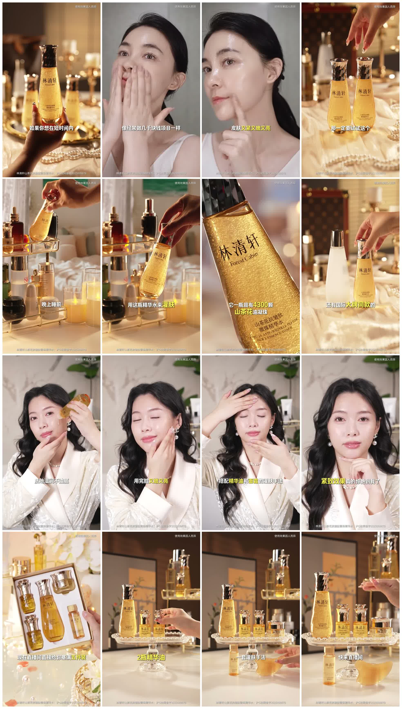
# 分镜脚本 + AI提示词｜12_7602112455623396617 - 平台：抖音 - 原链接：https://www.douyin.com/video/7602112455623396617 - 本地视频：/Users/mac/Desktop/视频素材/_中转/抖音_203454_7602112455623396617.mp4 - 时长：31.90 秒 - 抽帧规则：每 2 秒 1 帧 - 联系表：contact_sheet.jpg ## 使用说明 - 每个镜头按视频时间顺序排列。 - AI 提示词已按用户规范处理：以 `@xxx` 开头，产品/膏霜位置可复用 `@xxx`，不要求生成字幕，每条结尾明确不要字幕。 - 如需更精细版本，可基于 `frames/` 逐帧二次改写。 ## 分镜明细 ### 镜头 01｜约 00s｜开场钩子  画面描述：用近景快速建立产品/人物/使用场景，画面节奏干净直接，先给观众一个可感知的视觉记忆点。 分镜脚本：开场钩子：用近景快速建立产品/人物/使用场景，画面节奏干净直接，先给观众一个可感知的视觉记忆点。建议保持 1.5-2 秒节奏，动作不要过满，重点放在产品、手部和质感变化上。 AI提示词：@xxx广告开场近景，产品或手部动作进入画面，构图稳定，背景干净，第一秒抓住注意力，竖屏9:16，近景开场，镜头轻微推进，产品/膏霜位置使用@xxx，真实商业美妆短视频风格，高清细节，皮肤质感自然，光线柔和通透，色彩干净高级，背景不杂乱，动作连贯自然，负面：低清晰度、畸形手、过度磨皮、脏乱背景、文字水印、logo乱码、过曝、塑料感。整段视频不要出现任何字幕 ### 镜头 02｜约 02s｜开场钩子  画面描述：用近景快速建立产品/人物/使用场景，画面节奏干净直接，先给观众一个可感知的视觉记忆点。 分镜脚本：开场钩子：用近景快速建立产品/人物/使用场景，画面节奏干净直接，先给观众一个可感知的视觉记忆点。建议保持 1.5-2 秒节奏，动作不要过满，重点放在产品、手部和质感变化上。 AI提示词：@xxx广告开场近景，产品或手部动作进入画面，构图稳定，背景干净，第一秒抓住注意力，竖屏9:16，俯拍或侧拍，构图留白干净，产品/膏霜位置使用@xxx，真实商业美妆短视频风格，高清细节，皮肤质感自然，光线柔和通透，色彩干净高级，背景不杂乱，动作连贯自然，负面：低清晰度、畸形手、过度磨皮、脏乱背景、文字水印、logo乱码、过曝、塑料感。整段视频不要出现任何字幕 ### 镜头 03｜约 04s｜产品亮相  画面描述：镜头聚焦产品外观、瓶身、质地或包装细节，突出卖点物件本身。 分镜脚本：产品亮相：镜头聚焦产品外观、瓶身、质地或包装细节，突出卖点物件本身。建议保持 1.5-2 秒节奏，动作不要过满，重点放在产品、手部和质感变化上。 AI提示词：@xxx产品展示特写，瓶身/膏霜/包装细节清晰，商业棚拍质感，浅景深，干净高级背景，竖屏9:16，微距特写，浅景深，产品/膏霜位置使用@xxx，真实商业美妆短视频风格，高清细节，皮肤质感自然，光线柔和通透，色彩干净高级，背景不杂乱，动作连贯自然，负面：低清晰度、畸形手、过度磨皮、脏乱背景、文字水印、logo乱码、过曝、塑料感。整段视频不要出现任何字幕 ### 镜头 04｜约 06s｜产品亮相  画面描述：镜头聚焦产品外观、瓶身、质地或包装细节，突出卖点物件本身。 分镜脚本：产品亮相：镜头聚焦产品外观、瓶身、质地或包装细节，突出卖点物件本身。建议保持 1.5-2 秒节奏，动作不要过满，重点放在产品、手部和质感变化上。 AI提示词：@xxx产品展示特写，瓶身/膏霜/包装细节清晰，商业棚拍质感，浅景深，干净高级背景，竖屏9:16，中近景，轻微手持运动，产品/膏霜位置使用@xxx，真实商业美妆短视频风格，高清细节，皮肤质感自然，光线柔和通透，色彩干净高级，背景不杂乱，动作连贯自然，负面：低清晰度、畸形手、过度磨皮、脏乱背景、文字水印、logo乱码、过曝、塑料感。整段视频不要出现任何字幕 ### 镜头 05｜约 08s｜动作演示  画面描述：通过手部拿取、打开、挤压、涂抹、展示等动作，把产品使用方式讲清楚。 分镜脚本：动作演示：通过手部拿取、打开、挤压、涂抹、展示等动作，把产品使用方式讲清楚。建议保持 1.5-2 秒节奏，动作不要过满，重点放在产品、手部和质感变化上。 AI提示词：@xxx手部操作特写，年轻女性白皙双手自然拿取并使用产品，动作柔和顺滑，真实生活化，竖屏9:16，俯拍或侧拍，构图留白干净，产品/膏霜位置使用@xxx，真实商业美妆短视频风格，高清细节，皮肤质感自然，光线柔和通透，色彩干净高级，背景不杂乱，动作连贯自然，负面：低清晰度、畸形手、过度磨皮、脏乱背景、文字水印、logo乱码、过曝、塑料感。整段视频不要出现任何字幕 ### 镜头 06｜约 10s｜动作演示  画面描述：通过手部拿取、打开、挤压、涂抹、展示等动作，把产品使用方式讲清楚。 分镜脚本：动作演示：通过手部拿取、打开、挤压、涂抹、展示等动作，把产品使用方式讲清楚。建议保持 1.5-2 秒节奏，动作不要过满，重点放在产品、手部和质感变化上。 AI提示词：@xxx手部操作特写，年轻女性白皙双手自然拿取并使用产品，动作柔和顺滑，真实生活化，竖屏9:16，微距特写，浅景深，产品/膏霜位置使用@xxx，真实商业美妆短视频风格，高清细节，皮肤质感自然，光线柔和通透，色彩干净高级，背景不杂乱，动作连贯自然，负面：低清晰度、畸形手、过度磨皮、脏乱背景、文字水印、logo乱码、过曝、塑料感。整段视频不要出现任何字幕 ### 镜头 07｜约 12s｜质地细节  画面描述：放大产品质地、颜色、光泽或上肤效果，突出“看得见”的感官体验。 分镜脚本：质地细节：放大产品质地、颜色、光泽或上肤效果，突出“看得见”的感官体验。建议保持 1.5-2 秒节奏，动作不要过满，重点放在产品、手部和质感变化上。 AI提示词：@xxx微距质地镜头，膏体/液体/粉质细腻可见，柔和高光，干净皮肤纹理，真实美妆广告质感，竖屏9:16，中近景，轻微手持运动，产品/膏霜位置使用@xxx，真实商业美妆短视频风格，高清细节，皮肤质感自然，光线柔和通透，色彩干净高级，背景不杂乱，动作连贯自然，负面：低清晰度、畸形手、过度磨皮、脏乱背景、文字水印、logo乱码、过曝、塑料感。整段视频不要出现任何字幕 ### 镜头 08｜约 14s｜质地细节  画面描述：放大产品质地、颜色、光泽或上肤效果，突出“看得见”的感官体验。 分镜脚本：质地细节：放大产品质地、颜色、光泽或上肤效果，突出“看得见”的感官体验。建议保持 1.5-2 秒节奏，动作不要过满，重点放在产品、手部和质感变化上。 AI提示词：@xxx微距质地镜头，膏体/液体/粉质细腻可见，柔和高光，干净皮肤纹理，真实美妆广告质感，竖屏9:16，俯拍或侧拍，构图留白干净，产品/膏霜位置使用@xxx，真实商业美妆短视频风格，高清细节，皮肤质感自然，光线柔和通透，色彩干净高级，背景不杂乱，动作连贯自然，负面：低清晰度、畸形手、过度磨皮、脏乱背景、文字水印、logo乱码、过曝、塑料感。整段视频不要出现任何字幕 ### 镜头 09｜约 16s｜使用效果  画面描述：镜头转向脸部、手背、局部皮肤或场景效果，表现使用前后的氛围变化。 分镜脚本：使用效果：镜头转向脸部、手背、局部皮肤或场景效果，表现使用前后的氛围变化。建议保持 1.5-2 秒节奏，动作不要过满，重点放在产品、手部和质感变化上。 AI提示词：@xxx效果展示镜头，肤色干净通透，妆效自然，画面明亮柔和，人物状态精致不夸张，竖屏9:16，微距特写，浅景深，产品/膏霜位置使用@xxx，真实商业美妆短视频风格，高清细节，皮肤质感自然，光线柔和通透，色彩干净高级，背景不杂乱，动作连贯自然，负面：低清晰度、畸形手、过度磨皮、脏乱背景、文字水印、logo乱码、过曝、塑料感。整段视频不要出现任何字幕 ### 镜头 10｜约 18s｜使用效果  画面描述：镜头转向脸部、手背、局部皮肤或场景效果，表现使用前后的氛围变化。 分镜脚本：使用效果：镜头转向脸部、手背、局部皮肤或场景效果，表现使用前后的氛围变化。建议保持 1.5-2 秒节奏，动作不要过满，重点放在产品、手部和质感变化上。 AI提示词：@xxx效果展示镜头，肤色干净通透，妆效自然，画面明亮柔和，人物状态精致不夸张，竖屏9:16，中近景，轻微手持运动，产品/膏霜位置使用@xxx，真实商业美妆短视频风格，高清细节，皮肤质感自然，光线柔和通透，色彩干净高级，背景不杂乱，动作连贯自然，负面：低清晰度、畸形手、过度磨皮、脏乱背景、文字水印、logo乱码、过曝、塑料感。整段视频不要出现任何字幕 ### 镜头 11｜约 20s｜氛围补充  画面描述：用环境、道具、花材、桌面、布景或生活方式镜头补足品牌调性。 分镜脚本：氛围补充：用环境、道具、花材、桌面、布景或生活方式镜头补足品牌调性。建议保持 1.5-2 秒节奏，动作不要过满，重点放在产品、手部和质感变化上。 AI提示词：@xxx生活方式氛围镜头，桌面陈列精致，道具简洁，暖色自然光，轻奢美妆视觉风格，竖屏9:16，俯拍或侧拍，构图留白干净，产品/膏霜位置使用@xxx，真实商业美妆短视频风格，高清细节，皮肤质感自然，光线柔和通透，色彩干净高级，背景不杂乱，动作连贯自然，负面：低清晰度、畸形手、过度磨皮、脏乱背景、文字水印、logo乱码、过曝、塑料感。整段视频不要出现任何字幕 ### 镜头 12｜约 22s｜氛围补充  画面描述：用环境、道具、花材、桌面、布景或生活方式镜头补足品牌调性。 分镜脚本：氛围补充：用环境、道具、花材、桌面、布景或生活方式镜头补足品牌调性。建议保持 1.5-2 秒节奏，动作不要过满，重点放在产品、手部和质感变化上。 AI提示词：@xxx生活方式氛围镜头，桌面陈列精致，道具简洁，暖色自然光，轻奢美妆视觉风格，竖屏9:16，微距特写，浅景深，产品/膏霜位置使用@xxx，真实商业美妆短视频风格，高清细节，皮肤质感自然，光线柔和通透，色彩干净高级，背景不杂乱，动作连贯自然，负面：低清晰度、畸形手、过度磨皮、脏乱背景、文字水印、logo乱码、过曝、塑料感。整段视频不要出现任何字幕 ### 镜头 13｜约 24s｜卖点强化  画面描述：回到核心动作或核心细节，重复强化产品记忆点，让画面更有转化感。 分镜脚本：卖点强化：回到核心动作或核心细节，重复强化产品记忆点，让画面更有转化感。建议保持 1.5-2 秒节奏，动作不要过满，重点放在产品、手部和质感变化上。 AI提示词：@xxx卖点强化特写，产品与使用动作同框，画面重点集中，清晰表现质感、颜色和使用体验，竖屏9:16，中近景，轻微手持运动，产品/膏霜位置使用@xxx，真实商业美妆短视频风格，高清细节，皮肤质感自然，光线柔和通透，色彩干净高级，背景不杂乱，动作连贯自然，负面：低清晰度、畸形手、过度磨皮、脏乱背景、文字水印、logo乱码、过曝、塑料感。整段视频不要出现任何字幕 ### 镜头 14｜约 26s｜卖点强化  画面描述：回到核心动作或核心细节，重复强化产品记忆点，让画面更有转化感。 分镜脚本：卖点强化：回到核心动作或核心细节，重复强化产品记忆点，让画面更有转化感。建议保持 1.5-2 秒节奏，动作不要过满，重点放在产品、手部和质感变化上。 AI提示词：@xxx卖点强化特写，产品与使用动作同框，画面重点集中，清晰表现质感、颜色和使用体验，竖屏9:16，俯拍或侧拍，构图留白干净，产品/膏霜位置使用@xxx，真实商业美妆短视频风格，高清细节，皮肤质感自然，光线柔和通透，色彩干净高级，背景不杂乱，动作连贯自然，负面：低清晰度、畸形手、过度磨皮、脏乱背景、文字水印、logo乱码、过曝、塑料感。整段视频不要出现任何字幕 ### 镜头 15｜约 28s｜收尾定格  画面描述：用产品定格、人物满意状态或整套陈列结束，形成干净的广告收尾。 分镜脚本：收尾定格：用产品定格、人物满意状态或整套陈列结束，形成干净的广告收尾。建议保持 1.5-2 秒节奏，动作不要过满，重点放在产品、手部和质感变化上。 AI提示词：@xxx广告收尾定格，产品居中摆放或手持展示，构图完整，高级干净，适合短视频结尾，竖屏9:16，微距特写，浅景深，产品/膏霜位置使用@xxx，真实商业美妆短视频风格，高清细节，皮肤质感自然，光线柔和通透，色彩干净高级，背景不杂乱，动作连贯自然，负面：低清晰度、畸形手、过度磨皮、脏乱背景、文字水印、logo乱码、过曝、塑料感。整段视频不要出现任何字幕 ### 镜头 16｜约 30s｜收尾定格  画面描述：用产品定格、人物满意状态或整套陈列结束，形成干净的广告收尾。 分镜脚本：收尾定格：用产品定格、人物满意状态或整套陈列结束，形成干净的广告收尾。建议保持 1.5-2 秒节奏，动作不要过满，重点放在产品、手部和质感变化上。 AI提示词：@xxx广告收尾定格，产品居中摆放或手持展示，构图完整，高级干净，适合短视频结尾，竖屏9:16，稳定定格，适合结尾停留，产品/膏霜位置使用@xxx，真实商业美妆短视频风格，高清细节，皮肤质感自然，光线柔和通透，色彩干净高级，背景不杂乱，动作连贯自然，负面：低清晰度、畸形手、过度磨皮、脏乱背景、文字水印、logo乱码、过曝、塑料感。整段视频不要出现任何字幕
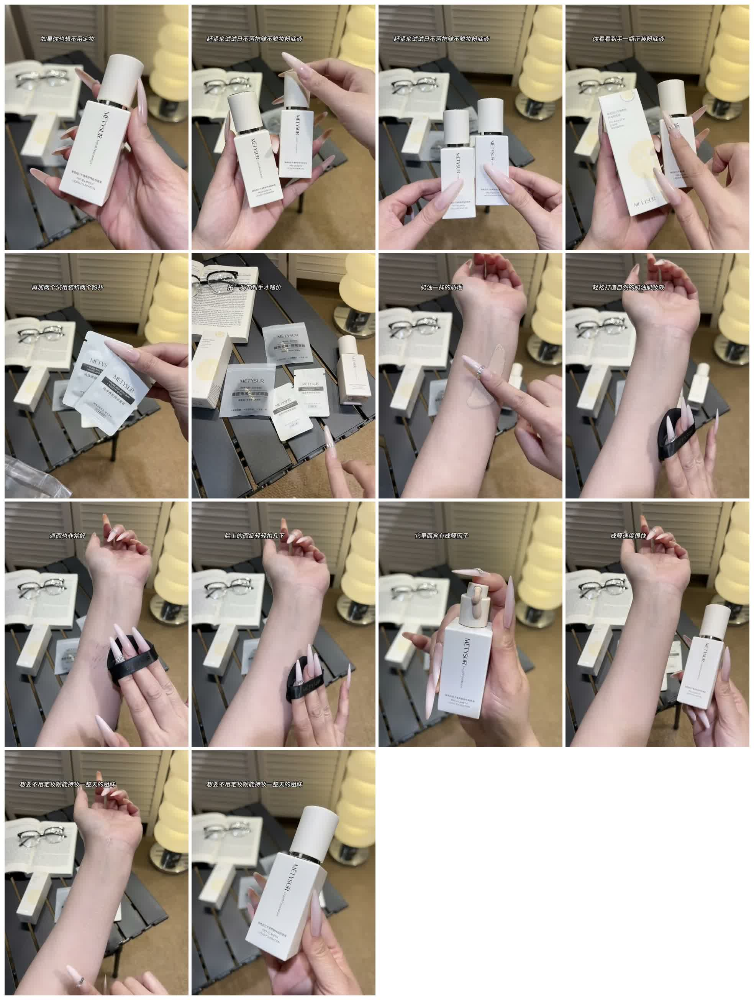
# 分镜脚本 + AI提示词｜13_7626274032656511720 - 平台：抖音 - 原链接：https://www.douyin.com/video/7626274032656511720 - 本地视频：/Users/mac/Desktop/视频素材/_中转/抖音_203507_7626274032656511720.mp4 - 时长：29.03 秒 - 抽帧规则：每 2 秒 1 帧 - 联系表：contact_sheet.jpg ## 使用说明 - 每个镜头按视频时间顺序排列。 - AI 提示词已按用户规范处理：以 `@xxx` 开头，产品/膏霜位置可复用 `@xxx`，不要求生成字幕，每条结尾明确不要字幕。 - 如需更精细版本，可基于 `frames/` 逐帧二次改写。 ## 分镜明细 ### 镜头 01｜约 00s｜开场钩子  画面描述：用近景快速建立产品/人物/使用场景，画面节奏干净直接，先给观众一个可感知的视觉记忆点。 分镜脚本：开场钩子：用近景快速建立产品/人物/使用场景，画面节奏干净直接，先给观众一个可感知的视觉记忆点。建议保持 1.5-2 秒节奏，动作不要过满，重点放在产品、手部和质感变化上。 AI提示词：@xxx广告开场近景，产品或手部动作进入画面，构图稳定，背景干净，第一秒抓住注意力，竖屏9:16，近景开场，镜头轻微推进，产品/膏霜位置使用@xxx，真实商业美妆短视频风格，高清细节，皮肤质感自然，光线柔和通透，色彩干净高级，背景不杂乱，动作连贯自然，负面：低清晰度、畸形手、过度磨皮、脏乱背景、文字水印、logo乱码、过曝、塑料感。整段视频不要出现任何字幕 ### 镜头 02｜约 02s｜开场钩子  画面描述：用近景快速建立产品/人物/使用场景，画面节奏干净直接，先给观众一个可感知的视觉记忆点。 分镜脚本：开场钩子：用近景快速建立产品/人物/使用场景，画面节奏干净直接，先给观众一个可感知的视觉记忆点。建议保持 1.5-2 秒节奏，动作不要过满，重点放在产品、手部和质感变化上。 AI提示词：@xxx广告开场近景，产品或手部动作进入画面，构图稳定，背景干净，第一秒抓住注意力，竖屏9:16，俯拍或侧拍，构图留白干净，产品/膏霜位置使用@xxx，真实商业美妆短视频风格，高清细节，皮肤质感自然，光线柔和通透，色彩干净高级，背景不杂乱，动作连贯自然，负面：低清晰度、畸形手、过度磨皮、脏乱背景、文字水印、logo乱码、过曝、塑料感。整段视频不要出现任何字幕 ### 镜头 03｜约 04s｜产品亮相  画面描述：镜头聚焦产品外观、瓶身、质地或包装细节，突出卖点物件本身。 分镜脚本：产品亮相：镜头聚焦产品外观、瓶身、质地或包装细节，突出卖点物件本身。建议保持 1.5-2 秒节奏，动作不要过满，重点放在产品、手部和质感变化上。 AI提示词：@xxx产品展示特写，瓶身/膏霜/包装细节清晰，商业棚拍质感，浅景深，干净高级背景，竖屏9:16，微距特写，浅景深，产品/膏霜位置使用@xxx，真实商业美妆短视频风格，高清细节，皮肤质感自然，光线柔和通透，色彩干净高级，背景不杂乱，动作连贯自然，负面：低清晰度、畸形手、过度磨皮、脏乱背景、文字水印、logo乱码、过曝、塑料感。整段视频不要出现任何字幕 ### 镜头 04｜约 06s｜产品亮相  画面描述：镜头聚焦产品外观、瓶身、质地或包装细节，突出卖点物件本身。 分镜脚本：产品亮相：镜头聚焦产品外观、瓶身、质地或包装细节，突出卖点物件本身。建议保持 1.5-2 秒节奏，动作不要过满，重点放在产品、手部和质感变化上。 AI提示词：@xxx产品展示特写，瓶身/膏霜/包装细节清晰，商业棚拍质感，浅景深，干净高级背景，竖屏9:16，中近景，轻微手持运动，产品/膏霜位置使用@xxx，真实商业美妆短视频风格，高清细节，皮肤质感自然，光线柔和通透，色彩干净高级，背景不杂乱，动作连贯自然，负面：低清晰度、畸形手、过度磨皮、脏乱背景、文字水印、logo乱码、过曝、塑料感。整段视频不要出现任何字幕 ### 镜头 05｜约 08s｜动作演示  画面描述：通过手部拿取、打开、挤压、涂抹、展示等动作，把产品使用方式讲清楚。 分镜脚本：动作演示：通过手部拿取、打开、挤压、涂抹、展示等动作，把产品使用方式讲清楚。建议保持 1.5-2 秒节奏，动作不要过满，重点放在产品、手部和质感变化上。 AI提示词：@xxx手部操作特写，年轻女性白皙双手自然拿取并使用产品，动作柔和顺滑，真实生活化，竖屏9:16，俯拍或侧拍，构图留白干净，产品/膏霜位置使用@xxx，真实商业美妆短视频风格，高清细节，皮肤质感自然，光线柔和通透，色彩干净高级，背景不杂乱，动作连贯自然，负面：低清晰度、畸形手、过度磨皮、脏乱背景、文字水印、logo乱码、过曝、塑料感。整段视频不要出现任何字幕 ### 镜头 06｜约 10s｜动作演示  画面描述：通过手部拿取、打开、挤压、涂抹、展示等动作，把产品使用方式讲清楚。 分镜脚本：动作演示：通过手部拿取、打开、挤压、涂抹、展示等动作，把产品使用方式讲清楚。建议保持 1.5-2 秒节奏，动作不要过满，重点放在产品、手部和质感变化上。 AI提示词：@xxx手部操作特写，年轻女性白皙双手自然拿取并使用产品，动作柔和顺滑，真实生活化，竖屏9:16，微距特写，浅景深，产品/膏霜位置使用@xxx，真实商业美妆短视频风格，高清细节，皮肤质感自然，光线柔和通透，色彩干净高级，背景不杂乱，动作连贯自然，负面：低清晰度、畸形手、过度磨皮、脏乱背景、文字水印、logo乱码、过曝、塑料感。整段视频不要出现任何字幕 ### 镜头 07｜约 12s｜质地细节  画面描述：放大产品质地、颜色、光泽或上肤效果，突出“看得见”的感官体验。 分镜脚本：质地细节：放大产品质地、颜色、光泽或上肤效果，突出“看得见”的感官体验。建议保持 1.5-2 秒节奏，动作不要过满，重点放在产品、手部和质感变化上。 AI提示词：@xxx微距质地镜头，膏体/液体/粉质细腻可见，柔和高光，干净皮肤纹理，真实美妆广告质感，竖屏9:16，中近景，轻微手持运动，产品/膏霜位置使用@xxx，真实商业美妆短视频风格，高清细节，皮肤质感自然，光线柔和通透，色彩干净高级，背景不杂乱，动作连贯自然，负面：低清晰度、畸形手、过度磨皮、脏乱背景、文字水印、logo乱码、过曝、塑料感。整段视频不要出现任何字幕 ### 镜头 08｜约 14s｜使用效果  画面描述：镜头转向脸部、手背、局部皮肤或场景效果，表现使用前后的氛围变化。 分镜脚本：使用效果：镜头转向脸部、手背、局部皮肤或场景效果，表现使用前后的氛围变化。建议保持 1.5-2 秒节奏，动作不要过满，重点放在产品、手部和质感变化上。 AI提示词：@xxx效果展示镜头，肤色干净通透，妆效自然，画面明亮柔和，人物状态精致不夸张，竖屏9:16，俯拍或侧拍，构图留白干净，产品/膏霜位置使用@xxx，真实商业美妆短视频风格，高清细节，皮肤质感自然，光线柔和通透，色彩干净高级，背景不杂乱，动作连贯自然，负面：低清晰度、畸形手、过度磨皮、脏乱背景、文字水印、logo乱码、过曝、塑料感。整段视频不要出现任何字幕 ### 镜头 09｜约 16s｜使用效果  画面描述：镜头转向脸部、手背、局部皮肤或场景效果，表现使用前后的氛围变化。 分镜脚本：使用效果：镜头转向脸部、手背、局部皮肤或场景效果，表现使用前后的氛围变化。建议保持 1.5-2 秒节奏，动作不要过满，重点放在产品、手部和质感变化上。 AI提示词：@xxx效果展示镜头，肤色干净通透，妆效自然，画面明亮柔和，人物状态精致不夸张，竖屏9:16，微距特写，浅景深，产品/膏霜位置使用@xxx，真实商业美妆短视频风格，高清细节，皮肤质感自然，光线柔和通透，色彩干净高级，背景不杂乱，动作连贯自然，负面：低清晰度、畸形手、过度磨皮、脏乱背景、文字水印、logo乱码、过曝、塑料感。整段视频不要出现任何字幕 ### 镜头 10｜约 18s｜氛围补充  画面描述：用环境、道具、花材、桌面、布景或生活方式镜头补足品牌调性。 分镜脚本：氛围补充：用环境、道具、花材、桌面、布景或生活方式镜头补足品牌调性。建议保持 1.5-2 秒节奏，动作不要过满，重点放在产品、手部和质感变化上。 AI提示词：@xxx生活方式氛围镜头，桌面陈列精致，道具简洁，暖色自然光，轻奢美妆视觉风格，竖屏9:16，中近景，轻微手持运动，产品/膏霜位置使用@xxx，真实商业美妆短视频风格，高清细节，皮肤质感自然，光线柔和通透，色彩干净高级，背景不杂乱，动作连贯自然，负面：低清晰度、畸形手、过度磨皮、脏乱背景、文字水印、logo乱码、过曝、塑料感。整段视频不要出现任何字幕 ### 镜头 11｜约 20s｜氛围补充  画面描述：用环境、道具、花材、桌面、布景或生活方式镜头补足品牌调性。 分镜脚本：氛围补充：用环境、道具、花材、桌面、布景或生活方式镜头补足品牌调性。建议保持 1.5-2 秒节奏，动作不要过满，重点放在产品、手部和质感变化上。 AI提示词：@xxx生活方式氛围镜头，桌面陈列精致，道具简洁，暖色自然光，轻奢美妆视觉风格，竖屏9:16，俯拍或侧拍，构图留白干净，产品/膏霜位置使用@xxx，真实商业美妆短视频风格，高清细节，皮肤质感自然，光线柔和通透，色彩干净高级，背景不杂乱，动作连贯自然，负面：低清晰度、畸形手、过度磨皮、脏乱背景、文字水印、logo乱码、过曝、塑料感。整段视频不要出现任何字幕 ### 镜头 12｜约 22s｜卖点强化  画面描述：回到核心动作或核心细节，重复强化产品记忆点，让画面更有转化感。 分镜脚本：卖点强化：回到核心动作或核心细节，重复强化产品记忆点，让画面更有转化感。建议保持 1.5-2 秒节奏，动作不要过满，重点放在产品、手部和质感变化上。 AI提示词：@xxx卖点强化特写，产品与使用动作同框，画面重点集中，清晰表现质感、颜色和使用体验，竖屏9:16，微距特写，浅景深，产品/膏霜位置使用@xxx，真实商业美妆短视频风格，高清细节，皮肤质感自然，光线柔和通透，色彩干净高级，背景不杂乱，动作连贯自然，负面：低清晰度、畸形手、过度磨皮、脏乱背景、文字水印、logo乱码、过曝、塑料感。整段视频不要出现任何字幕 ### 镜头 13｜约 24s｜卖点强化  画面描述：回到核心动作或核心细节，重复强化产品记忆点，让画面更有转化感。 分镜脚本：卖点强化：回到核心动作或核心细节，重复强化产品记忆点，让画面更有转化感。建议保持 1.5-2 秒节奏，动作不要过满，重点放在产品、手部和质感变化上。 AI提示词：@xxx卖点强化特写，产品与使用动作同框，画面重点集中，清晰表现质感、颜色和使用体验，竖屏9:16，中近景，轻微手持运动，产品/膏霜位置使用@xxx，真实商业美妆短视频风格，高清细节，皮肤质感自然，光线柔和通透，色彩干净高级，背景不杂乱，动作连贯自然，负面：低清晰度、畸形手、过度磨皮、脏乱背景、文字水印、logo乱码、过曝、塑料感。整段视频不要出现任何字幕 ### 镜头 14｜约 26s｜收尾定格  画面描述：用产品定格、人物满意状态或整套陈列结束，形成干净的广告收尾。 分镜脚本：收尾定格：用产品定格、人物满意状态或整套陈列结束，形成干净的广告收尾。建议保持 1.5-2 秒节奏，动作不要过满，重点放在产品、手部和质感变化上。 AI提示词：@xxx广告收尾定格，产品居中摆放或手持展示，构图完整，高级干净，适合短视频结尾，竖屏9:16，稳定定格，适合结尾停留，产品/膏霜位置使用@xxx，真实商业美妆短视频风格，高清细节，皮肤质感自然，光线柔和通透，色彩干净高级，背景不杂乱，动作连贯自然，负面：低清晰度、畸形手、过度磨皮、脏乱背景、文字水印、logo乱码、过曝、塑料感。整段视频不要出现任何字幕
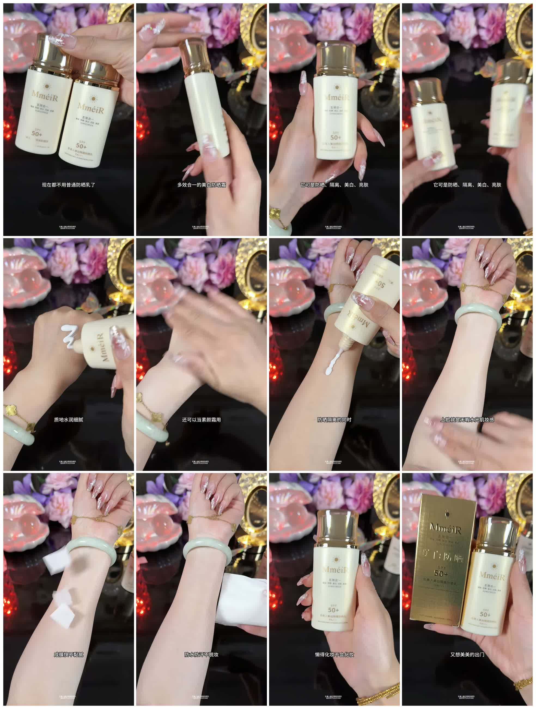
# 分镜脚本 + AI提示词｜14_7484619774417276175 - 平台：抖音 - 原链接：https://www.douyin.com/video/7484619774417276175 - 本地视频：/Users/mac/Desktop/视频素材/_中转/抖音_203519_7484619774417276175.mp4 - 时长：25.05 秒 - 抽帧规则：每 2 秒 1 帧 - 联系表：contact_sheet.jpg ## 使用说明 - 每个镜头按视频时间顺序排列。 - AI 提示词已按用户规范处理：以 `@xxx` 开头，产品/膏霜位置可复用 `@xxx`，不要求生成字幕，每条结尾明确不要字幕。 - 如需更精细版本，可基于 `frames/` 逐帧二次改写。 ## 分镜明细 ### 镜头 01｜约 00s｜开场钩子  画面描述：用近景快速建立产品/人物/使用场景，画面节奏干净直接，先给观众一个可感知的视觉记忆点。 分镜脚本：开场钩子：用近景快速建立产品/人物/使用场景，画面节奏干净直接，先给观众一个可感知的视觉记忆点。建议保持 1.5-2 秒节奏，动作不要过满，重点放在产品、手部和质感变化上。 AI提示词：@xxx广告开场近景，产品或手部动作进入画面，构图稳定，背景干净，第一秒抓住注意力，竖屏9:16，近景开场，镜头轻微推进，产品/膏霜位置使用@xxx，真实商业美妆短视频风格，高清细节，皮肤质感自然，光线柔和通透，色彩干净高级，背景不杂乱，动作连贯自然，负面：低清晰度、畸形手、过度磨皮、脏乱背景、文字水印、logo乱码、过曝、塑料感。整段视频不要出现任何字幕 ### 镜头 02｜约 02s｜开场钩子  画面描述：用近景快速建立产品/人物/使用场景，画面节奏干净直接，先给观众一个可感知的视觉记忆点。 分镜脚本：开场钩子：用近景快速建立产品/人物/使用场景，画面节奏干净直接，先给观众一个可感知的视觉记忆点。建议保持 1.5-2 秒节奏，动作不要过满，重点放在产品、手部和质感变化上。 AI提示词：@xxx广告开场近景，产品或手部动作进入画面，构图稳定，背景干净，第一秒抓住注意力，竖屏9:16，俯拍或侧拍，构图留白干净，产品/膏霜位置使用@xxx，真实商业美妆短视频风格，高清细节，皮肤质感自然，光线柔和通透，色彩干净高级，背景不杂乱，动作连贯自然，负面：低清晰度、畸形手、过度磨皮、脏乱背景、文字水印、logo乱码、过曝、塑料感。整段视频不要出现任何字幕 ### 镜头 03｜约 04s｜产品亮相  画面描述：镜头聚焦产品外观、瓶身、质地或包装细节，突出卖点物件本身。 分镜脚本：产品亮相：镜头聚焦产品外观、瓶身、质地或包装细节，突出卖点物件本身。建议保持 1.5-2 秒节奏，动作不要过满，重点放在产品、手部和质感变化上。 AI提示词：@xxx产品展示特写，瓶身/膏霜/包装细节清晰，商业棚拍质感，浅景深，干净高级背景，竖屏9:16，微距特写，浅景深，产品/膏霜位置使用@xxx，真实商业美妆短视频风格，高清细节，皮肤质感自然，光线柔和通透，色彩干净高级，背景不杂乱，动作连贯自然，负面：低清晰度、畸形手、过度磨皮、脏乱背景、文字水印、logo乱码、过曝、塑料感。整段视频不要出现任何字幕 ### 镜头 04｜约 06s｜动作演示  画面描述：通过手部拿取、打开、挤压、涂抹、展示等动作，把产品使用方式讲清楚。 分镜脚本：动作演示：通过手部拿取、打开、挤压、涂抹、展示等动作，把产品使用方式讲清楚。建议保持 1.5-2 秒节奏，动作不要过满，重点放在产品、手部和质感变化上。 AI提示词：@xxx手部操作特写，年轻女性白皙双手自然拿取并使用产品，动作柔和顺滑，真实生活化，竖屏9:16，中近景，轻微手持运动，产品/膏霜位置使用@xxx，真实商业美妆短视频风格，高清细节，皮肤质感自然，光线柔和通透，色彩干净高级，背景不杂乱，动作连贯自然，负面：低清晰度、畸形手、过度磨皮、脏乱背景、文字水印、logo乱码、过曝、塑料感。整段视频不要出现任何字幕 ### 镜头 05｜约 08s｜动作演示  画面描述：通过手部拿取、打开、挤压、涂抹、展示等动作，把产品使用方式讲清楚。 分镜脚本：动作演示：通过手部拿取、打开、挤压、涂抹、展示等动作，把产品使用方式讲清楚。建议保持 1.5-2 秒节奏，动作不要过满，重点放在产品、手部和质感变化上。 AI提示词：@xxx手部操作特写，年轻女性白皙双手自然拿取并使用产品，动作柔和顺滑，真实生活化，竖屏9:16，俯拍或侧拍，构图留白干净，产品/膏霜位置使用@xxx，真实商业美妆短视频风格，高清细节，皮肤质感自然，光线柔和通透，色彩干净高级，背景不杂乱，动作连贯自然，负面：低清晰度、畸形手、过度磨皮、脏乱背景、文字水印、logo乱码、过曝、塑料感。整段视频不要出现任何字幕 ### 镜头 06｜约 10s｜质地细节  画面描述：放大产品质地、颜色、光泽或上肤效果，突出“看得见”的感官体验。 分镜脚本：质地细节：放大产品质地、颜色、光泽或上肤效果，突出“看得见”的感官体验。建议保持 1.5-2 秒节奏，动作不要过满，重点放在产品、手部和质感变化上。 AI提示词：@xxx微距质地镜头，膏体/液体/粉质细腻可见，柔和高光，干净皮肤纹理，真实美妆广告质感，竖屏9:16，微距特写，浅景深，产品/膏霜位置使用@xxx，真实商业美妆短视频风格，高清细节，皮肤质感自然，光线柔和通透，色彩干净高级，背景不杂乱，动作连贯自然，负面：低清晰度、畸形手、过度磨皮、脏乱背景、文字水印、logo乱码、过曝、塑料感。整段视频不要出现任何字幕 ### 镜头 07｜约 12s｜使用效果  画面描述：镜头转向脸部、手背、局部皮肤或场景效果，表现使用前后的氛围变化。 分镜脚本：使用效果：镜头转向脸部、手背、局部皮肤或场景效果，表现使用前后的氛围变化。建议保持 1.5-2 秒节奏，动作不要过满，重点放在产品、手部和质感变化上。 AI提示词：@xxx效果展示镜头，肤色干净通透，妆效自然，画面明亮柔和，人物状态精致不夸张，竖屏9:16，中近景，轻微手持运动，产品/膏霜位置使用@xxx，真实商业美妆短视频风格，高清细节，皮肤质感自然，光线柔和通透，色彩干净高级，背景不杂乱，动作连贯自然，负面：低清晰度、畸形手、过度磨皮、脏乱背景、文字水印、logo乱码、过曝、塑料感。整段视频不要出现任何字幕 ### 镜头 08｜约 14s｜使用效果  画面描述：镜头转向脸部、手背、局部皮肤或场景效果，表现使用前后的氛围变化。 分镜脚本：使用效果：镜头转向脸部、手背、局部皮肤或场景效果，表现使用前后的氛围变化。建议保持 1.5-2 秒节奏，动作不要过满，重点放在产品、手部和质感变化上。 AI提示词：@xxx效果展示镜头，肤色干净通透，妆效自然，画面明亮柔和，人物状态精致不夸张，竖屏9:16，俯拍或侧拍，构图留白干净，产品/膏霜位置使用@xxx，真实商业美妆短视频风格，高清细节，皮肤质感自然，光线柔和通透，色彩干净高级，背景不杂乱，动作连贯自然，负面：低清晰度、畸形手、过度磨皮、脏乱背景、文字水印、logo乱码、过曝、塑料感。整段视频不要出现任何字幕 ### 镜头 09｜约 16s｜氛围补充  画面描述：用环境、道具、花材、桌面、布景或生活方式镜头补足品牌调性。 分镜脚本：氛围补充：用环境、道具、花材、桌面、布景或生活方式镜头补足品牌调性。建议保持 1.5-2 秒节奏，动作不要过满，重点放在产品、手部和质感变化上。 AI提示词：@xxx生活方式氛围镜头，桌面陈列精致，道具简洁，暖色自然光，轻奢美妆视觉风格，竖屏9:16，微距特写，浅景深，产品/膏霜位置使用@xxx，真实商业美妆短视频风格，高清细节，皮肤质感自然，光线柔和通透，色彩干净高级，背景不杂乱，动作连贯自然，负面：低清晰度、畸形手、过度磨皮、脏乱背景、文字水印、logo乱码、过曝、塑料感。整段视频不要出现任何字幕 ### 镜头 10｜约 18s｜卖点强化  画面描述：回到核心动作或核心细节，重复强化产品记忆点，让画面更有转化感。 分镜脚本：卖点强化：回到核心动作或核心细节，重复强化产品记忆点，让画面更有转化感。建议保持 1.5-2 秒节奏，动作不要过满，重点放在产品、手部和质感变化上。 AI提示词：@xxx卖点强化特写，产品与使用动作同框，画面重点集中，清晰表现质感、颜色和使用体验，竖屏9:16，中近景，轻微手持运动，产品/膏霜位置使用@xxx，真实商业美妆短视频风格，高清细节，皮肤质感自然，光线柔和通透，色彩干净高级，背景不杂乱，动作连贯自然，负面：低清晰度、畸形手、过度磨皮、脏乱背景、文字水印、logo乱码、过曝、塑料感。整段视频不要出现任何字幕 ### 镜头 11｜约 20s｜卖点强化  画面描述：回到核心动作或核心细节，重复强化产品记忆点，让画面更有转化感。 分镜脚本：卖点强化：回到核心动作或核心细节，重复强化产品记忆点，让画面更有转化感。建议保持 1.5-2 秒节奏，动作不要过满，重点放在产品、手部和质感变化上。 AI提示词：@xxx卖点强化特写，产品与使用动作同框，画面重点集中，清晰表现质感、颜色和使用体验，竖屏9:16，俯拍或侧拍，构图留白干净，产品/膏霜位置使用@xxx，真实商业美妆短视频风格，高清细节，皮肤质感自然，光线柔和通透，色彩干净高级，背景不杂乱，动作连贯自然，负面：低清晰度、畸形手、过度磨皮、脏乱背景、文字水印、logo乱码、过曝、塑料感。整段视频不要出现任何字幕 ### 镜头 12｜约 22s｜收尾定格  画面描述：用产品定格、人物满意状态或整套陈列结束，形成干净的广告收尾。 分镜脚本：收尾定格：用产品定格、人物满意状态或整套陈列结束，形成干净的广告收尾。建议保持 1.5-2 秒节奏，动作不要过满，重点放在产品、手部和质感变化上。 AI提示词：@xxx广告收尾定格，产品居中摆放或手持展示，构图完整，高级干净，适合短视频结尾，竖屏9:16，稳定定格，适合结尾停留，产品/膏霜位置使用@xxx，真实商业美妆短视频风格，高清细节，皮肤质感自然，光线柔和通透，色彩干净高级，背景不杂乱，动作连贯自然，负面：低清晰度、畸形手、过度磨皮、脏乱背景、文字水印、logo乱码、过曝、塑料感。整段视频不要出现任何字幕
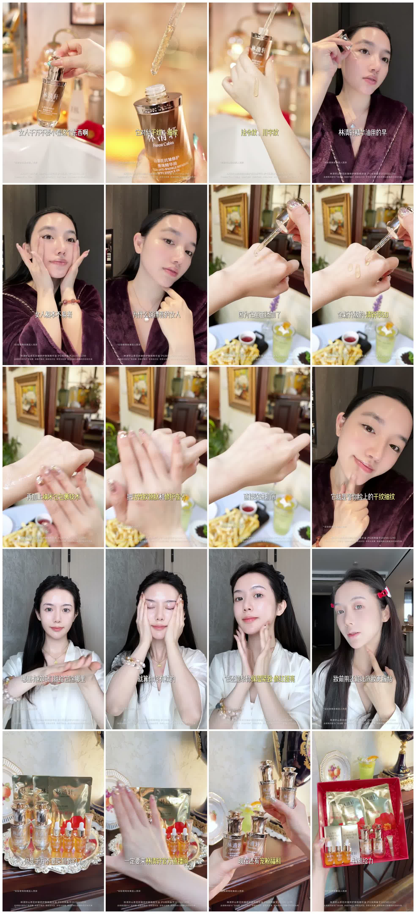
# 分镜脚本 + AI提示词｜15_7626234847597514030 - 平台：抖音 - 原链接：https://www.douyin.com/video/7626234847597514030 - 本地视频：/Users/mac/Desktop/视频素材/_中转/抖音_203532_7626234847597514030.mp4 - 时长：39.45 秒 - 抽帧规则：每 2 秒 1 帧 - 联系表：contact_sheet.jpg ## 使用说明 - 每个镜头按视频时间顺序排列。 - AI 提示词已按用户规范处理：以 `@xxx` 开头，产品/膏霜位置可复用 `@xxx`，不要求生成字幕，每条结尾明确不要字幕。 - 如需更精细版本，可基于 `frames/` 逐帧二次改写。 ## 分镜明细 ### 镜头 01｜约 00s｜开场钩子  画面描述：用近景快速建立产品/人物/使用场景，画面节奏干净直接，先给观众一个可感知的视觉记忆点。 分镜脚本：开场钩子：用近景快速建立产品/人物/使用场景，画面节奏干净直接，先给观众一个可感知的视觉记忆点。建议保持 1.5-2 秒节奏，动作不要过满，重点放在产品、手部和质感变化上。 AI提示词：@xxx广告开场近景，产品或手部动作进入画面，构图稳定，背景干净，第一秒抓住注意力，竖屏9:16，近景开场，镜头轻微推进，产品/膏霜位置使用@xxx，真实商业美妆短视频风格，高清细节，皮肤质感自然，光线柔和通透，色彩干净高级，背景不杂乱，动作连贯自然，负面：低清晰度、畸形手、过度磨皮、脏乱背景、文字水印、logo乱码、过曝、塑料感。整段视频不要出现任何字幕 ### 镜头 02｜约 02s｜开场钩子  画面描述：用近景快速建立产品/人物/使用场景，画面节奏干净直接，先给观众一个可感知的视觉记忆点。 分镜脚本：开场钩子：用近景快速建立产品/人物/使用场景，画面节奏干净直接，先给观众一个可感知的视觉记忆点。建议保持 1.5-2 秒节奏，动作不要过满，重点放在产品、手部和质感变化上。 AI提示词：@xxx广告开场近景，产品或手部动作进入画面，构图稳定，背景干净，第一秒抓住注意力，竖屏9:16，俯拍或侧拍，构图留白干净，产品/膏霜位置使用@xxx，真实商业美妆短视频风格，高清细节，皮肤质感自然，光线柔和通透，色彩干净高级，背景不杂乱，动作连贯自然，负面：低清晰度、畸形手、过度磨皮、脏乱背景、文字水印、logo乱码、过曝、塑料感。整段视频不要出现任何字幕 ### 镜头 03｜约 04s｜开场钩子  画面描述：用近景快速建立产品/人物/使用场景，画面节奏干净直接，先给观众一个可感知的视觉记忆点。 分镜脚本：开场钩子：用近景快速建立产品/人物/使用场景，画面节奏干净直接，先给观众一个可感知的视觉记忆点。建议保持 1.5-2 秒节奏，动作不要过满，重点放在产品、手部和质感变化上。 AI提示词：@xxx广告开场近景，产品或手部动作进入画面，构图稳定，背景干净，第一秒抓住注意力，竖屏9:16，微距特写，浅景深，产品/膏霜位置使用@xxx，真实商业美妆短视频风格，高清细节，皮肤质感自然，光线柔和通透，色彩干净高级，背景不杂乱，动作连贯自然，负面：低清晰度、畸形手、过度磨皮、脏乱背景、文字水印、logo乱码、过曝、塑料感。整段视频不要出现任何字幕 ### 镜头 04｜约 06s｜产品亮相  画面描述：镜头聚焦产品外观、瓶身、质地或包装细节，突出卖点物件本身。 分镜脚本：产品亮相：镜头聚焦产品外观、瓶身、质地或包装细节，突出卖点物件本身。建议保持 1.5-2 秒节奏，动作不要过满，重点放在产品、手部和质感变化上。 AI提示词：@xxx产品展示特写，瓶身/膏霜/包装细节清晰，商业棚拍质感，浅景深，干净高级背景，竖屏9:16，中近景，轻微手持运动，产品/膏霜位置使用@xxx，真实商业美妆短视频风格，高清细节，皮肤质感自然，光线柔和通透，色彩干净高级，背景不杂乱，动作连贯自然，负面：低清晰度、畸形手、过度磨皮、脏乱背景、文字水印、logo乱码、过曝、塑料感。整段视频不要出现任何字幕 ### 镜头 05｜约 08s｜产品亮相  画面描述：镜头聚焦产品外观、瓶身、质地或包装细节，突出卖点物件本身。 分镜脚本：产品亮相：镜头聚焦产品外观、瓶身、质地或包装细节，突出卖点物件本身。建议保持 1.5-2 秒节奏，动作不要过满，重点放在产品、手部和质感变化上。 AI提示词：@xxx产品展示特写，瓶身/膏霜/包装细节清晰，商业棚拍质感，浅景深，干净高级背景，竖屏9:16，俯拍或侧拍，构图留白干净，产品/膏霜位置使用@xxx，真实商业美妆短视频风格，高清细节，皮肤质感自然，光线柔和通透，色彩干净高级，背景不杂乱，动作连贯自然，负面：低清晰度、畸形手、过度磨皮、脏乱背景、文字水印、logo乱码、过曝、塑料感。整段视频不要出现任何字幕 ### 镜头 06｜约 10s｜动作演示  画面描述：通过手部拿取、打开、挤压、涂抹、展示等动作，把产品使用方式讲清楚。 分镜脚本：动作演示：通过手部拿取、打开、挤压、涂抹、展示等动作，把产品使用方式讲清楚。建议保持 1.5-2 秒节奏，动作不要过满，重点放在产品、手部和质感变化上。 AI提示词：@xxx手部操作特写，年轻女性白皙双手自然拿取并使用产品，动作柔和顺滑，真实生活化，竖屏9:16，微距特写，浅景深，产品/膏霜位置使用@xxx，真实商业美妆短视频风格，高清细节，皮肤质感自然，光线柔和通透，色彩干净高级，背景不杂乱，动作连贯自然，负面：低清晰度、畸形手、过度磨皮、脏乱背景、文字水印、logo乱码、过曝、塑料感。整段视频不要出现任何字幕 ### 镜头 07｜约 12s｜动作演示  画面描述：通过手部拿取、打开、挤压、涂抹、展示等动作，把产品使用方式讲清楚。 分镜脚本：动作演示：通过手部拿取、打开、挤压、涂抹、展示等动作，把产品使用方式讲清楚。建议保持 1.5-2 秒节奏，动作不要过满，重点放在产品、手部和质感变化上。 AI提示词：@xxx手部操作特写，年轻女性白皙双手自然拿取并使用产品，动作柔和顺滑，真实生活化，竖屏9:16，中近景，轻微手持运动，产品/膏霜位置使用@xxx，真实商业美妆短视频风格，高清细节，皮肤质感自然，光线柔和通透，色彩干净高级，背景不杂乱，动作连贯自然，负面：低清晰度、畸形手、过度磨皮、脏乱背景、文字水印、logo乱码、过曝、塑料感。整段视频不要出现任何字幕 ### 镜头 08｜约 14s｜动作演示  画面描述：通过手部拿取、打开、挤压、涂抹、展示等动作，把产品使用方式讲清楚。 分镜脚本：动作演示：通过手部拿取、打开、挤压、涂抹、展示等动作，把产品使用方式讲清楚。建议保持 1.5-2 秒节奏，动作不要过满，重点放在产品、手部和质感变化上。 AI提示词：@xxx手部操作特写，年轻女性白皙双手自然拿取并使用产品，动作柔和顺滑，真实生活化，竖屏9:16，俯拍或侧拍，构图留白干净，产品/膏霜位置使用@xxx，真实商业美妆短视频风格，高清细节，皮肤质感自然，光线柔和通透，色彩干净高级，背景不杂乱，动作连贯自然，负面：低清晰度、畸形手、过度磨皮、脏乱背景、文字水印、logo乱码、过曝、塑料感。整段视频不要出现任何字幕 ### 镜头 09｜约 16s｜质地细节  画面描述：放大产品质地、颜色、光泽或上肤效果，突出“看得见”的感官体验。 分镜脚本：质地细节：放大产品质地、颜色、光泽或上肤效果，突出“看得见”的感官体验。建议保持 1.5-2 秒节奏，动作不要过满，重点放在产品、手部和质感变化上。 AI提示词：@xxx微距质地镜头，膏体/液体/粉质细腻可见，柔和高光，干净皮肤纹理，真实美妆广告质感，竖屏9:16，微距特写，浅景深，产品/膏霜位置使用@xxx，真实商业美妆短视频风格，高清细节，皮肤质感自然，光线柔和通透，色彩干净高级，背景不杂乱，动作连贯自然，负面：低清晰度、畸形手、过度磨皮、脏乱背景、文字水印、logo乱码、过曝、塑料感。整段视频不要出现任何字幕 ### 镜头 10｜约 18s｜质地细节  画面描述：放大产品质地、颜色、光泽或上肤效果，突出“看得见”的感官体验。 分镜脚本：质地细节：放大产品质地、颜色、光泽或上肤效果，突出“看得见”的感官体验。建议保持 1.5-2 秒节奏，动作不要过满，重点放在产品、手部和质感变化上。 AI提示词：@xxx微距质地镜头，膏体/液体/粉质细腻可见，柔和高光，干净皮肤纹理，真实美妆广告质感，竖屏9:16，中近景，轻微手持运动，产品/膏霜位置使用@xxx，真实商业美妆短视频风格，高清细节，皮肤质感自然，光线柔和通透，色彩干净高级，背景不杂乱，动作连贯自然，负面：低清晰度、畸形手、过度磨皮、脏乱背景、文字水印、logo乱码、过曝、塑料感。整段视频不要出现任何字幕 ### 镜头 11｜约 20s｜使用效果  画面描述：镜头转向脸部、手背、局部皮肤或场景效果，表现使用前后的氛围变化。 分镜脚本：使用效果：镜头转向脸部、手背、局部皮肤或场景效果，表现使用前后的氛围变化。建议保持 1.5-2 秒节奏，动作不要过满，重点放在产品、手部和质感变化上。 AI提示词：@xxx效果展示镜头，肤色干净通透，妆效自然，画面明亮柔和，人物状态精致不夸张，竖屏9:16，俯拍或侧拍，构图留白干净，产品/膏霜位置使用@xxx，真实商业美妆短视频风格，高清细节，皮肤质感自然，光线柔和通透，色彩干净高级，背景不杂乱，动作连贯自然，负面：低清晰度、畸形手、过度磨皮、脏乱背景、文字水印、logo乱码、过曝、塑料感。整段视频不要出现任何字幕 ### 镜头 12｜约 22s｜使用效果  画面描述：镜头转向脸部、手背、局部皮肤或场景效果，表现使用前后的氛围变化。 分镜脚本：使用效果：镜头转向脸部、手背、局部皮肤或场景效果，表现使用前后的氛围变化。建议保持 1.5-2 秒节奏，动作不要过满，重点放在产品、手部和质感变化上。 AI提示词：@xxx效果展示镜头，肤色干净通透，妆效自然，画面明亮柔和，人物状态精致不夸张，竖屏9:16，微距特写，浅景深，产品/膏霜位置使用@xxx，真实商业美妆短视频风格，高清细节，皮肤质感自然，光线柔和通透，色彩干净高级，背景不杂乱，动作连贯自然，负面：低清晰度、畸形手、过度磨皮、脏乱背景、文字水印、logo乱码、过曝、塑料感。整段视频不要出现任何字幕 ### 镜头 13｜约 24s｜使用效果  画面描述：镜头转向脸部、手背、局部皮肤或场景效果，表现使用前后的氛围变化。 分镜脚本：使用效果：镜头转向脸部、手背、局部皮肤或场景效果，表现使用前后的氛围变化。建议保持 1.5-2 秒节奏，动作不要过满，重点放在产品、手部和质感变化上。 AI提示词：@xxx效果展示镜头，肤色干净通透，妆效自然，画面明亮柔和，人物状态精致不夸张，竖屏9:16，中近景，轻微手持运动，产品/膏霜位置使用@xxx，真实商业美妆短视频风格，高清细节，皮肤质感自然，光线柔和通透，色彩干净高级，背景不杂乱，动作连贯自然，负面：低清晰度、畸形手、过度磨皮、脏乱背景、文字水印、logo乱码、过曝、塑料感。整段视频不要出现任何字幕 ### 镜头 14｜约 26s｜氛围补充  画面描述：用环境、道具、花材、桌面、布景或生活方式镜头补足品牌调性。 分镜脚本：氛围补充：用环境、道具、花材、桌面、布景或生活方式镜头补足品牌调性。建议保持 1.5-2 秒节奏，动作不要过满，重点放在产品、手部和质感变化上。 AI提示词：@xxx生活方式氛围镜头，桌面陈列精致，道具简洁，暖色自然光，轻奢美妆视觉风格，竖屏9:16，俯拍或侧拍，构图留白干净，产品/膏霜位置使用@xxx，真实商业美妆短视频风格，高清细节，皮肤质感自然，光线柔和通透，色彩干净高级，背景不杂乱，动作连贯自然，负面：低清晰度、畸形手、过度磨皮、脏乱背景、文字水印、logo乱码、过曝、塑料感。整段视频不要出现任何字幕 ### 镜头 15｜约 28s｜氛围补充  画面描述：用环境、道具、花材、桌面、布景或生活方式镜头补足品牌调性。 分镜脚本：氛围补充：用环境、道具、花材、桌面、布景或生活方式镜头补足品牌调性。建议保持 1.5-2 秒节奏，动作不要过满，重点放在产品、手部和质感变化上。 AI提示词：@xxx生活方式氛围镜头，桌面陈列精致，道具简洁，暖色自然光，轻奢美妆视觉风格，竖屏9:16，微距特写，浅景深，产品/膏霜位置使用@xxx，真实商业美妆短视频风格，高清细节，皮肤质感自然，光线柔和通透，色彩干净高级，背景不杂乱，动作连贯自然，负面：低清晰度、畸形手、过度磨皮、脏乱背景、文字水印、logo乱码、过曝、塑料感。整段视频不要出现任何字幕 ### 镜头 16｜约 30s｜卖点强化  画面描述：回到核心动作或核心细节，重复强化产品记忆点，让画面更有转化感。 分镜脚本：卖点强化：回到核心动作或核心细节，重复强化产品记忆点，让画面更有转化感。建议保持 1.5-2 秒节奏，动作不要过满，重点放在产品、手部和质感变化上。 AI提示词：@xxx卖点强化特写，产品与使用动作同框，画面重点集中，清晰表现质感、颜色和使用体验，竖屏9:16，中近景，轻微手持运动，产品/膏霜位置使用@xxx，真实商业美妆短视频风格，高清细节，皮肤质感自然，光线柔和通透，色彩干净高级，背景不杂乱，动作连贯自然，负面：低清晰度、畸形手、过度磨皮、脏乱背景、文字水印、logo乱码、过曝、塑料感。整段视频不要出现任何字幕 ### 镜头 17｜约 32s｜卖点强化  画面描述：回到核心动作或核心细节，重复强化产品记忆点，让画面更有转化感。 分镜脚本：卖点强化：回到核心动作或核心细节，重复强化产品记忆点，让画面更有转化感。建议保持 1.5-2 秒节奏，动作不要过满，重点放在产品、手部和质感变化上。 AI提示词：@xxx卖点强化特写，产品与使用动作同框，画面重点集中，清晰表现质感、颜色和使用体验，竖屏9:16，俯拍或侧拍，构图留白干净，产品/膏霜位置使用@xxx，真实商业美妆短视频风格，高清细节，皮肤质感自然，光线柔和通透，色彩干净高级，背景不杂乱，动作连贯自然，负面：低清晰度、畸形手、过度磨皮、脏乱背景、文字水印、logo乱码、过曝、塑料感。整段视频不要出现任何字幕 ### 镜头 18｜约 34s｜卖点强化  画面描述：回到核心动作或核心细节，重复强化产品记忆点，让画面更有转化感。 分镜脚本：卖点强化：回到核心动作或核心细节，重复强化产品记忆点，让画面更有转化感。建议保持 1.5-2 秒节奏，动作不要过满，重点放在产品、手部和质感变化上。 AI提示词：@xxx卖点强化特写，产品与使用动作同框，画面重点集中，清晰表现质感、颜色和使用体验，竖屏9:16，微距特写，浅景深，产品/膏霜位置使用@xxx，真实商业美妆短视频风格，高清细节，皮肤质感自然，光线柔和通透，色彩干净高级，背景不杂乱，动作连贯自然，负面：低清晰度、畸形手、过度磨皮、脏乱背景、文字水印、logo乱码、过曝、塑料感。整段视频不要出现任何字幕 ### 镜头 19｜约 36s｜收尾定格  画面描述：用产品定格、人物满意状态或整套陈列结束，形成干净的广告收尾。 分镜脚本：收尾定格：用产品定格、人物满意状态或整套陈列结束，形成干净的广告收尾。建议保持 1.5-2 秒节奏，动作不要过满，重点放在产品、手部和质感变化上。 AI提示词：@xxx广告收尾定格，产品居中摆放或手持展示，构图完整，高级干净，适合短视频结尾，竖屏9:16，中近景，轻微手持运动，产品/膏霜位置使用@xxx，真实商业美妆短视频风格，高清细节，皮肤质感自然，光线柔和通透，色彩干净高级，背景不杂乱，动作连贯自然，负面：低清晰度、畸形手、过度磨皮、脏乱背景、文字水印、logo乱码、过曝、塑料感。整段视频不要出现任何字幕 ### 镜头 20｜约 38s｜收尾定格  画面描述：用产品定格、人物满意状态或整套陈列结束，形成干净的广告收尾。 分镜脚本：收尾定格：用产品定格、人物满意状态或整套陈列结束，形成干净的广告收尾。建议保持 1.5-2 秒节奏，动作不要过满，重点放在产品、手部和质感变化上。 AI提示词：@xxx广告收尾定格，产品居中摆放或手持展示，构图完整，高级干净，适合短视频结尾，竖屏9:16，稳定定格，适合结尾停留，产品/膏霜位置使用@xxx，真实商业美妆短视频风格，高清细节，皮肤质感自然，光线柔和通透，色彩干净高级，背景不杂乱，动作连贯自然，负面：低清晰度、畸形手、过度磨皮、脏乱背景、文字水印、logo乱码、过曝、塑料感。整段视频不要出现任何字幕
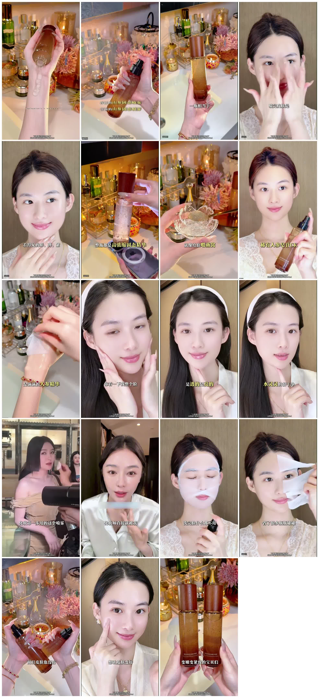
# 分镜脚本 + AI提示词｜16_7626338828889935123 - 平台：抖音 - 原链接：https://www.douyin.com/video/7626338828889935123 - 本地视频：/Users/mac/Desktop/视频素材/_中转/抖音_203545_7626338828889935123.mp4 - 时长：38.15 秒 - 抽帧规则：每 2 秒 1 帧 - 联系表：contact_sheet.jpg ## 使用说明 - 每个镜头按视频时间顺序排列。 - AI 提示词已按用户规范处理：以 `@xxx` 开头，产品/膏霜位置可复用 `@xxx`，不要求生成字幕，每条结尾明确不要字幕。 - 如需更精细版本，可基于 `frames/` 逐帧二次改写。 ## 分镜明细 ### 镜头 01｜约 00s｜开场钩子  画面描述：用近景快速建立产品/人物/使用场景，画面节奏干净直接，先给观众一个可感知的视觉记忆点。 分镜脚本：开场钩子：用近景快速建立产品/人物/使用场景，画面节奏干净直接，先给观众一个可感知的视觉记忆点。建议保持 1.5-2 秒节奏，动作不要过满，重点放在产品、手部和质感变化上。 AI提示词：@xxx广告开场近景，产品或手部动作进入画面，构图稳定，背景干净，第一秒抓住注意力，竖屏9:16，近景开场，镜头轻微推进，产品/膏霜位置使用@xxx，真实商业美妆短视频风格，高清细节，皮肤质感自然，光线柔和通透，色彩干净高级，背景不杂乱，动作连贯自然，负面：低清晰度、畸形手、过度磨皮、脏乱背景、文字水印、logo乱码、过曝、塑料感。整段视频不要出现任何字幕 ### 镜头 02｜约 02s｜开场钩子  画面描述：用近景快速建立产品/人物/使用场景，画面节奏干净直接，先给观众一个可感知的视觉记忆点。 分镜脚本：开场钩子：用近景快速建立产品/人物/使用场景，画面节奏干净直接，先给观众一个可感知的视觉记忆点。建议保持 1.5-2 秒节奏，动作不要过满，重点放在产品、手部和质感变化上。 AI提示词：@xxx广告开场近景，产品或手部动作进入画面，构图稳定，背景干净，第一秒抓住注意力，竖屏9:16，俯拍或侧拍，构图留白干净，产品/膏霜位置使用@xxx，真实商业美妆短视频风格，高清细节，皮肤质感自然，光线柔和通透，色彩干净高级，背景不杂乱，动作连贯自然，负面：低清晰度、畸形手、过度磨皮、脏乱背景、文字水印、logo乱码、过曝、塑料感。整段视频不要出现任何字幕 ### 镜头 03｜约 04s｜开场钩子  画面描述：用近景快速建立产品/人物/使用场景，画面节奏干净直接，先给观众一个可感知的视觉记忆点。 分镜脚本：开场钩子：用近景快速建立产品/人物/使用场景，画面节奏干净直接，先给观众一个可感知的视觉记忆点。建议保持 1.5-2 秒节奏，动作不要过满，重点放在产品、手部和质感变化上。 AI提示词：@xxx广告开场近景，产品或手部动作进入画面，构图稳定，背景干净，第一秒抓住注意力，竖屏9:16，微距特写，浅景深，产品/膏霜位置使用@xxx，真实商业美妆短视频风格，高清细节，皮肤质感自然，光线柔和通透，色彩干净高级，背景不杂乱，动作连贯自然，负面：低清晰度、畸形手、过度磨皮、脏乱背景、文字水印、logo乱码、过曝、塑料感。整段视频不要出现任何字幕 ### 镜头 04｜约 06s｜产品亮相  画面描述：镜头聚焦产品外观、瓶身、质地或包装细节，突出卖点物件本身。 分镜脚本：产品亮相：镜头聚焦产品外观、瓶身、质地或包装细节，突出卖点物件本身。建议保持 1.5-2 秒节奏，动作不要过满，重点放在产品、手部和质感变化上。 AI提示词：@xxx产品展示特写，瓶身/膏霜/包装细节清晰，商业棚拍质感，浅景深，干净高级背景，竖屏9:16，中近景，轻微手持运动，产品/膏霜位置使用@xxx，真实商业美妆短视频风格，高清细节，皮肤质感自然，光线柔和通透，色彩干净高级，背景不杂乱，动作连贯自然，负面：低清晰度、畸形手、过度磨皮、脏乱背景、文字水印、logo乱码、过曝、塑料感。整段视频不要出现任何字幕 ### 镜头 05｜约 08s｜产品亮相  画面描述：镜头聚焦产品外观、瓶身、质地或包装细节，突出卖点物件本身。 分镜脚本：产品亮相：镜头聚焦产品外观、瓶身、质地或包装细节，突出卖点物件本身。建议保持 1.5-2 秒节奏，动作不要过满，重点放在产品、手部和质感变化上。 AI提示词：@xxx产品展示特写，瓶身/膏霜/包装细节清晰，商业棚拍质感，浅景深，干净高级背景，竖屏9:16，俯拍或侧拍，构图留白干净，产品/膏霜位置使用@xxx，真实商业美妆短视频风格，高清细节，皮肤质感自然，光线柔和通透，色彩干净高级，背景不杂乱，动作连贯自然，负面：低清晰度、畸形手、过度磨皮、脏乱背景、文字水印、logo乱码、过曝、塑料感。整段视频不要出现任何字幕 ### 镜头 06｜约 10s｜动作演示  画面描述：通过手部拿取、打开、挤压、涂抹、展示等动作，把产品使用方式讲清楚。 分镜脚本：动作演示：通过手部拿取、打开、挤压、涂抹、展示等动作，把产品使用方式讲清楚。建议保持 1.5-2 秒节奏，动作不要过满，重点放在产品、手部和质感变化上。 AI提示词：@xxx手部操作特写，年轻女性白皙双手自然拿取并使用产品，动作柔和顺滑，真实生活化，竖屏9:16，微距特写，浅景深，产品/膏霜位置使用@xxx，真实商业美妆短视频风格，高清细节，皮肤质感自然，光线柔和通透，色彩干净高级，背景不杂乱，动作连贯自然，负面：低清晰度、畸形手、过度磨皮、脏乱背景、文字水印、logo乱码、过曝、塑料感。整段视频不要出现任何字幕 ### 镜头 07｜约 12s｜动作演示  画面描述：通过手部拿取、打开、挤压、涂抹、展示等动作，把产品使用方式讲清楚。 分镜脚本：动作演示：通过手部拿取、打开、挤压、涂抹、展示等动作，把产品使用方式讲清楚。建议保持 1.5-2 秒节奏，动作不要过满，重点放在产品、手部和质感变化上。 AI提示词：@xxx手部操作特写，年轻女性白皙双手自然拿取并使用产品，动作柔和顺滑，真实生活化，竖屏9:16，中近景，轻微手持运动，产品/膏霜位置使用@xxx，真实商业美妆短视频风格，高清细节，皮肤质感自然，光线柔和通透，色彩干净高级，背景不杂乱，动作连贯自然，负面：低清晰度、畸形手、过度磨皮、脏乱背景、文字水印、logo乱码、过曝、塑料感。整段视频不要出现任何字幕 ### 镜头 08｜约 14s｜动作演示  画面描述：通过手部拿取、打开、挤压、涂抹、展示等动作，把产品使用方式讲清楚。 分镜脚本：动作演示：通过手部拿取、打开、挤压、涂抹、展示等动作，把产品使用方式讲清楚。建议保持 1.5-2 秒节奏，动作不要过满，重点放在产品、手部和质感变化上。 AI提示词：@xxx手部操作特写，年轻女性白皙双手自然拿取并使用产品，动作柔和顺滑，真实生活化，竖屏9:16，俯拍或侧拍，构图留白干净，产品/膏霜位置使用@xxx，真实商业美妆短视频风格，高清细节，皮肤质感自然，光线柔和通透，色彩干净高级，背景不杂乱，动作连贯自然，负面：低清晰度、畸形手、过度磨皮、脏乱背景、文字水印、logo乱码、过曝、塑料感。整段视频不要出现任何字幕 ### 镜头 09｜约 16s｜质地细节  画面描述：放大产品质地、颜色、光泽或上肤效果，突出“看得见”的感官体验。 分镜脚本：质地细节：放大产品质地、颜色、光泽或上肤效果，突出“看得见”的感官体验。建议保持 1.5-2 秒节奏，动作不要过满，重点放在产品、手部和质感变化上。 AI提示词：@xxx微距质地镜头，膏体/液体/粉质细腻可见，柔和高光，干净皮肤纹理，真实美妆广告质感，竖屏9:16，微距特写，浅景深，产品/膏霜位置使用@xxx，真实商业美妆短视频风格，高清细节，皮肤质感自然，光线柔和通透，色彩干净高级，背景不杂乱，动作连贯自然，负面：低清晰度、畸形手、过度磨皮、脏乱背景、文字水印、logo乱码、过曝、塑料感。整段视频不要出现任何字幕 ### 镜头 10｜约 18s｜质地细节  画面描述：放大产品质地、颜色、光泽或上肤效果，突出“看得见”的感官体验。 分镜脚本：质地细节：放大产品质地、颜色、光泽或上肤效果，突出“看得见”的感官体验。建议保持 1.5-2 秒节奏，动作不要过满，重点放在产品、手部和质感变化上。 AI提示词：@xxx微距质地镜头，膏体/液体/粉质细腻可见，柔和高光，干净皮肤纹理，真实美妆广告质感，竖屏9:16，中近景，轻微手持运动，产品/膏霜位置使用@xxx，真实商业美妆短视频风格，高清细节，皮肤质感自然，光线柔和通透，色彩干净高级，背景不杂乱，动作连贯自然，负面：低清晰度、畸形手、过度磨皮、脏乱背景、文字水印、logo乱码、过曝、塑料感。整段视频不要出现任何字幕 ### 镜头 11｜约 20s｜使用效果  画面描述：镜头转向脸部、手背、局部皮肤或场景效果，表现使用前后的氛围变化。 分镜脚本：使用效果：镜头转向脸部、手背、局部皮肤或场景效果，表现使用前后的氛围变化。建议保持 1.5-2 秒节奏，动作不要过满，重点放在产品、手部和质感变化上。 AI提示词：@xxx效果展示镜头，肤色干净通透，妆效自然，画面明亮柔和，人物状态精致不夸张，竖屏9:16，俯拍或侧拍，构图留白干净，产品/膏霜位置使用@xxx，真实商业美妆短视频风格，高清细节，皮肤质感自然，光线柔和通透，色彩干净高级，背景不杂乱，动作连贯自然，负面：低清晰度、畸形手、过度磨皮、脏乱背景、文字水印、logo乱码、过曝、塑料感。整段视频不要出现任何字幕 ### 镜头 12｜约 22s｜使用效果  画面描述：镜头转向脸部、手背、局部皮肤或场景效果，表现使用前后的氛围变化。 分镜脚本：使用效果：镜头转向脸部、手背、局部皮肤或场景效果，表现使用前后的氛围变化。建议保持 1.5-2 秒节奏，动作不要过满，重点放在产品、手部和质感变化上。 AI提示词：@xxx效果展示镜头，肤色干净通透，妆效自然，画面明亮柔和，人物状态精致不夸张，竖屏9:16，微距特写，浅景深，产品/膏霜位置使用@xxx，真实商业美妆短视频风格，高清细节，皮肤质感自然，光线柔和通透，色彩干净高级，背景不杂乱，动作连贯自然，负面：低清晰度、畸形手、过度磨皮、脏乱背景、文字水印、logo乱码、过曝、塑料感。整段视频不要出现任何字幕 ### 镜头 13｜约 24s｜氛围补充  画面描述：用环境、道具、花材、桌面、布景或生活方式镜头补足品牌调性。 分镜脚本：氛围补充：用环境、道具、花材、桌面、布景或生活方式镜头补足品牌调性。建议保持 1.5-2 秒节奏，动作不要过满，重点放在产品、手部和质感变化上。 AI提示词：@xxx生活方式氛围镜头，桌面陈列精致，道具简洁，暖色自然光，轻奢美妆视觉风格，竖屏9:16，中近景，轻微手持运动，产品/膏霜位置使用@xxx，真实商业美妆短视频风格，高清细节，皮肤质感自然，光线柔和通透，色彩干净高级，背景不杂乱，动作连贯自然，负面：低清晰度、畸形手、过度磨皮、脏乱背景、文字水印、logo乱码、过曝、塑料感。整段视频不要出现任何字幕 ### 镜头 14｜约 26s｜氛围补充  画面描述：用环境、道具、花材、桌面、布景或生活方式镜头补足品牌调性。 分镜脚本：氛围补充：用环境、道具、花材、桌面、布景或生活方式镜头补足品牌调性。建议保持 1.5-2 秒节奏，动作不要过满，重点放在产品、手部和质感变化上。 AI提示词：@xxx生活方式氛围镜头，桌面陈列精致，道具简洁，暖色自然光，轻奢美妆视觉风格，竖屏9:16，俯拍或侧拍，构图留白干净，产品/膏霜位置使用@xxx，真实商业美妆短视频风格，高清细节，皮肤质感自然，光线柔和通透，色彩干净高级，背景不杂乱，动作连贯自然，负面：低清晰度、畸形手、过度磨皮、脏乱背景、文字水印、logo乱码、过曝、塑料感。整段视频不要出现任何字幕 ### 镜头 15｜约 28s｜氛围补充  画面描述：用环境、道具、花材、桌面、布景或生活方式镜头补足品牌调性。 分镜脚本：氛围补充：用环境、道具、花材、桌面、布景或生活方式镜头补足品牌调性。建议保持 1.5-2 秒节奏，动作不要过满，重点放在产品、手部和质感变化上。 AI提示词：@xxx生活方式氛围镜头，桌面陈列精致，道具简洁，暖色自然光，轻奢美妆视觉风格，竖屏9:16，微距特写，浅景深，产品/膏霜位置使用@xxx，真实商业美妆短视频风格，高清细节，皮肤质感自然，光线柔和通透，色彩干净高级，背景不杂乱，动作连贯自然，负面：低清晰度、畸形手、过度磨皮、脏乱背景、文字水印、logo乱码、过曝、塑料感。整段视频不要出现任何字幕 ### 镜头 16｜约 30s｜卖点强化  画面描述：回到核心动作或核心细节，重复强化产品记忆点，让画面更有转化感。 分镜脚本：卖点强化：回到核心动作或核心细节，重复强化产品记忆点，让画面更有转化感。建议保持 1.5-2 秒节奏，动作不要过满，重点放在产品、手部和质感变化上。 AI提示词：@xxx卖点强化特写，产品与使用动作同框，画面重点集中，清晰表现质感、颜色和使用体验，竖屏9:16，中近景，轻微手持运动，产品/膏霜位置使用@xxx，真实商业美妆短视频风格，高清细节，皮肤质感自然，光线柔和通透，色彩干净高级，背景不杂乱，动作连贯自然，负面：低清晰度、畸形手、过度磨皮、脏乱背景、文字水印、logo乱码、过曝、塑料感。整段视频不要出现任何字幕 ### 镜头 17｜约 32s｜卖点强化  画面描述：回到核心动作或核心细节，重复强化产品记忆点，让画面更有转化感。 分镜脚本：卖点强化：回到核心动作或核心细节，重复强化产品记忆点，让画面更有转化感。建议保持 1.5-2 秒节奏，动作不要过满，重点放在产品、手部和质感变化上。 AI提示词：@xxx卖点强化特写，产品与使用动作同框，画面重点集中，清晰表现质感、颜色和使用体验，竖屏9:16，俯拍或侧拍，构图留白干净，产品/膏霜位置使用@xxx，真实商业美妆短视频风格，高清细节，皮肤质感自然，光线柔和通透，色彩干净高级，背景不杂乱，动作连贯自然，负面：低清晰度、畸形手、过度磨皮、脏乱背景、文字水印、logo乱码、过曝、塑料感。整段视频不要出现任何字幕 ### 镜头 18｜约 34s｜收尾定格  画面描述：用产品定格、人物满意状态或整套陈列结束，形成干净的广告收尾。 分镜脚本：收尾定格：用产品定格、人物满意状态或整套陈列结束，形成干净的广告收尾。建议保持 1.5-2 秒节奏，动作不要过满，重点放在产品、手部和质感变化上。 AI提示词：@xxx广告收尾定格，产品居中摆放或手持展示，构图完整，高级干净，适合短视频结尾，竖屏9:16，微距特写，浅景深，产品/膏霜位置使用@xxx，真实商业美妆短视频风格，高清细节，皮肤质感自然，光线柔和通透，色彩干净高级，背景不杂乱，动作连贯自然，负面：低清晰度、畸形手、过度磨皮、脏乱背景、文字水印、logo乱码、过曝、塑料感。整段视频不要出现任何字幕 ### 镜头 19｜约 36s｜收尾定格  画面描述：用产品定格、人物满意状态或整套陈列结束，形成干净的广告收尾。 分镜脚本：收尾定格：用产品定格、人物满意状态或整套陈列结束，形成干净的广告收尾。建议保持 1.5-2 秒节奏，动作不要过满，重点放在产品、手部和质感变化上。 AI提示词：@xxx广告收尾定格，产品居中摆放或手持展示，构图完整，高级干净，适合短视频结尾，竖屏9:16，稳定定格，适合结尾停留，产品/膏霜位置使用@xxx，真实商业美妆短视频风格，高清细节，皮肤质感自然，光线柔和通透，色彩干净高级，背景不杂乱，动作连贯自然，负面：低清晰度、畸形手、过度磨皮、脏乱背景、文字水印、logo乱码、过曝、塑料感。整段视频不要出现任何字幕
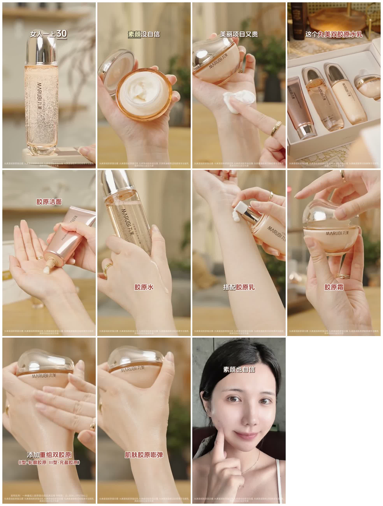
# 分镜脚本 + AI提示词｜17_7384691817700134185 - 平台：抖音 - 原链接：https://www.douyin.com/video/7384691817700134185 - 本地视频：/Users/mac/Desktop/视频素材/_中转/抖音_203558_7384691817700134185.mp4 - 时长：22.55 秒 - 抽帧规则：每 2 秒 1 帧 - 联系表：contact_sheet.jpg ## 使用说明 - 每个镜头按视频时间顺序排列。 - AI 提示词已按用户规范处理：以 `@xxx` 开头，产品/膏霜位置可复用 `@xxx`，不要求生成字幕，每条结尾明确不要字幕。 - 如需更精细版本，可基于 `frames/` 逐帧二次改写。 ## 分镜明细 ### 镜头 01｜约 00s｜开场钩子  画面描述：用近景快速建立产品/人物/使用场景，画面节奏干净直接，先给观众一个可感知的视觉记忆点。 分镜脚本：开场钩子：用近景快速建立产品/人物/使用场景，画面节奏干净直接，先给观众一个可感知的视觉记忆点。建议保持 1.5-2 秒节奏，动作不要过满，重点放在产品、手部和质感变化上。 AI提示词：@xxx广告开场近景，产品或手部动作进入画面，构图稳定，背景干净，第一秒抓住注意力，竖屏9:16，近景开场，镜头轻微推进，产品/膏霜位置使用@xxx，真实商业美妆短视频风格，高清细节，皮肤质感自然，光线柔和通透，色彩干净高级，背景不杂乱，动作连贯自然，负面：低清晰度、畸形手、过度磨皮、脏乱背景、文字水印、logo乱码、过曝、塑料感。整段视频不要出现任何字幕 ### 镜头 02｜约 02s｜开场钩子  画面描述：用近景快速建立产品/人物/使用场景，画面节奏干净直接，先给观众一个可感知的视觉记忆点。 分镜脚本：开场钩子：用近景快速建立产品/人物/使用场景，画面节奏干净直接，先给观众一个可感知的视觉记忆点。建议保持 1.5-2 秒节奏，动作不要过满，重点放在产品、手部和质感变化上。 AI提示词：@xxx广告开场近景，产品或手部动作进入画面，构图稳定，背景干净，第一秒抓住注意力，竖屏9:16，俯拍或侧拍，构图留白干净，产品/膏霜位置使用@xxx，真实商业美妆短视频风格，高清细节，皮肤质感自然，光线柔和通透，色彩干净高级，背景不杂乱，动作连贯自然，负面：低清晰度、畸形手、过度磨皮、脏乱背景、文字水印、logo乱码、过曝、塑料感。整段视频不要出现任何字幕 ### 镜头 03｜约 04s｜产品亮相  画面描述：镜头聚焦产品外观、瓶身、质地或包装细节，突出卖点物件本身。 分镜脚本：产品亮相：镜头聚焦产品外观、瓶身、质地或包装细节，突出卖点物件本身。建议保持 1.5-2 秒节奏，动作不要过满，重点放在产品、手部和质感变化上。 AI提示词：@xxx产品展示特写，瓶身/膏霜/包装细节清晰，商业棚拍质感，浅景深，干净高级背景，竖屏9:16，微距特写，浅景深，产品/膏霜位置使用@xxx，真实商业美妆短视频风格，高清细节，皮肤质感自然，光线柔和通透，色彩干净高级，背景不杂乱，动作连贯自然，负面：低清晰度、畸形手、过度磨皮、脏乱背景、文字水印、logo乱码、过曝、塑料感。整段视频不要出现任何字幕 ### 镜头 04｜约 06s｜动作演示  画面描述：通过手部拿取、打开、挤压、涂抹、展示等动作，把产品使用方式讲清楚。 分镜脚本：动作演示：通过手部拿取、打开、挤压、涂抹、展示等动作，把产品使用方式讲清楚。建议保持 1.5-2 秒节奏，动作不要过满，重点放在产品、手部和质感变化上。 AI提示词：@xxx手部操作特写，年轻女性白皙双手自然拿取并使用产品，动作柔和顺滑，真实生活化，竖屏9:16，中近景，轻微手持运动，产品/膏霜位置使用@xxx，真实商业美妆短视频风格，高清细节，皮肤质感自然，光线柔和通透，色彩干净高级，背景不杂乱，动作连贯自然，负面：低清晰度、畸形手、过度磨皮、脏乱背景、文字水印、logo乱码、过曝、塑料感。整段视频不要出现任何字幕 ### 镜头 05｜约 08s｜动作演示  画面描述：通过手部拿取、打开、挤压、涂抹、展示等动作，把产品使用方式讲清楚。 分镜脚本：动作演示：通过手部拿取、打开、挤压、涂抹、展示等动作，把产品使用方式讲清楚。建议保持 1.5-2 秒节奏，动作不要过满，重点放在产品、手部和质感变化上。 AI提示词：@xxx手部操作特写，年轻女性白皙双手自然拿取并使用产品，动作柔和顺滑，真实生活化，竖屏9:16，俯拍或侧拍，构图留白干净，产品/膏霜位置使用@xxx，真实商业美妆短视频风格，高清细节，皮肤质感自然，光线柔和通透，色彩干净高级，背景不杂乱，动作连贯自然，负面：低清晰度、畸形手、过度磨皮、脏乱背景、文字水印、logo乱码、过曝、塑料感。整段视频不要出现任何字幕 ### 镜头 06｜约 10s｜质地细节  画面描述：放大产品质地、颜色、光泽或上肤效果，突出“看得见”的感官体验。 分镜脚本：质地细节：放大产品质地、颜色、光泽或上肤效果，突出“看得见”的感官体验。建议保持 1.5-2 秒节奏，动作不要过满，重点放在产品、手部和质感变化上。 AI提示词：@xxx微距质地镜头，膏体/液体/粉质细腻可见，柔和高光，干净皮肤纹理，真实美妆广告质感，竖屏9:16，微距特写，浅景深，产品/膏霜位置使用@xxx，真实商业美妆短视频风格，高清细节，皮肤质感自然，光线柔和通透，色彩干净高级，背景不杂乱，动作连贯自然，负面：低清晰度、畸形手、过度磨皮、脏乱背景、文字水印、logo乱码、过曝、塑料感。整段视频不要出现任何字幕 ### 镜头 07｜约 12s｜使用效果  画面描述：镜头转向脸部、手背、局部皮肤或场景效果，表现使用前后的氛围变化。 分镜脚本：使用效果：镜头转向脸部、手背、局部皮肤或场景效果，表现使用前后的氛围变化。建议保持 1.5-2 秒节奏，动作不要过满，重点放在产品、手部和质感变化上。 AI提示词：@xxx效果展示镜头，肤色干净通透，妆效自然，画面明亮柔和，人物状态精致不夸张，竖屏9:16，中近景，轻微手持运动，产品/膏霜位置使用@xxx，真实商业美妆短视频风格，高清细节，皮肤质感自然，光线柔和通透，色彩干净高级，背景不杂乱，动作连贯自然，负面：低清晰度、畸形手、过度磨皮、脏乱背景、文字水印、logo乱码、过曝、塑料感。整段视频不要出现任何字幕 ### 镜头 08｜约 14s｜氛围补充  画面描述：用环境、道具、花材、桌面、布景或生活方式镜头补足品牌调性。 分镜脚本：氛围补充：用环境、道具、花材、桌面、布景或生活方式镜头补足品牌调性。建议保持 1.5-2 秒节奏，动作不要过满，重点放在产品、手部和质感变化上。 AI提示词：@xxx生活方式氛围镜头，桌面陈列精致，道具简洁，暖色自然光，轻奢美妆视觉风格，竖屏9:16，俯拍或侧拍，构图留白干净，产品/膏霜位置使用@xxx，真实商业美妆短视频风格，高清细节，皮肤质感自然，光线柔和通透，色彩干净高级，背景不杂乱，动作连贯自然，负面：低清晰度、畸形手、过度磨皮、脏乱背景、文字水印、logo乱码、过曝、塑料感。整段视频不要出现任何字幕 ### 镜头 09｜约 16s｜氛围补充  画面描述：用环境、道具、花材、桌面、布景或生活方式镜头补足品牌调性。 分镜脚本：氛围补充：用环境、道具、花材、桌面、布景或生活方式镜头补足品牌调性。建议保持 1.5-2 秒节奏，动作不要过满，重点放在产品、手部和质感变化上。 AI提示词：@xxx生活方式氛围镜头，桌面陈列精致，道具简洁，暖色自然光，轻奢美妆视觉风格，竖屏9:16，微距特写，浅景深，产品/膏霜位置使用@xxx，真实商业美妆短视频风格，高清细节，皮肤质感自然，光线柔和通透，色彩干净高级，背景不杂乱，动作连贯自然，负面：低清晰度、畸形手、过度磨皮、脏乱背景、文字水印、logo乱码、过曝、塑料感。整段视频不要出现任何字幕 ### 镜头 10｜约 18s｜卖点强化  画面描述：回到核心动作或核心细节，重复强化产品记忆点，让画面更有转化感。 分镜脚本：卖点强化：回到核心动作或核心细节，重复强化产品记忆点，让画面更有转化感。建议保持 1.5-2 秒节奏，动作不要过满，重点放在产品、手部和质感变化上。 AI提示词：@xxx卖点强化特写，产品与使用动作同框，画面重点集中，清晰表现质感、颜色和使用体验，竖屏9:16，中近景，轻微手持运动，产品/膏霜位置使用@xxx，真实商业美妆短视频风格，高清细节，皮肤质感自然，光线柔和通透，色彩干净高级，背景不杂乱，动作连贯自然，负面：低清晰度、畸形手、过度磨皮、脏乱背景、文字水印、logo乱码、过曝、塑料感。整段视频不要出现任何字幕 ### 镜头 11｜约 20s｜收尾定格  画面描述：用产品定格、人物满意状态或整套陈列结束，形成干净的广告收尾。 分镜脚本：收尾定格：用产品定格、人物满意状态或整套陈列结束，形成干净的广告收尾。建议保持 1.5-2 秒节奏，动作不要过满，重点放在产品、手部和质感变化上。 AI提示词：@xxx广告收尾定格，产品居中摆放或手持展示，构图完整，高级干净，适合短视频结尾，竖屏9:16，稳定定格，适合结尾停留，产品/膏霜位置使用@xxx，真实商业美妆短视频风格，高清细节，皮肤质感自然，光线柔和通透，色彩干净高级，背景不杂乱，动作连贯自然，负面：低清晰度、畸形手、过度磨皮、脏乱背景、文字水印、logo乱码、过曝、塑料感。整段视频不要出现任何字幕
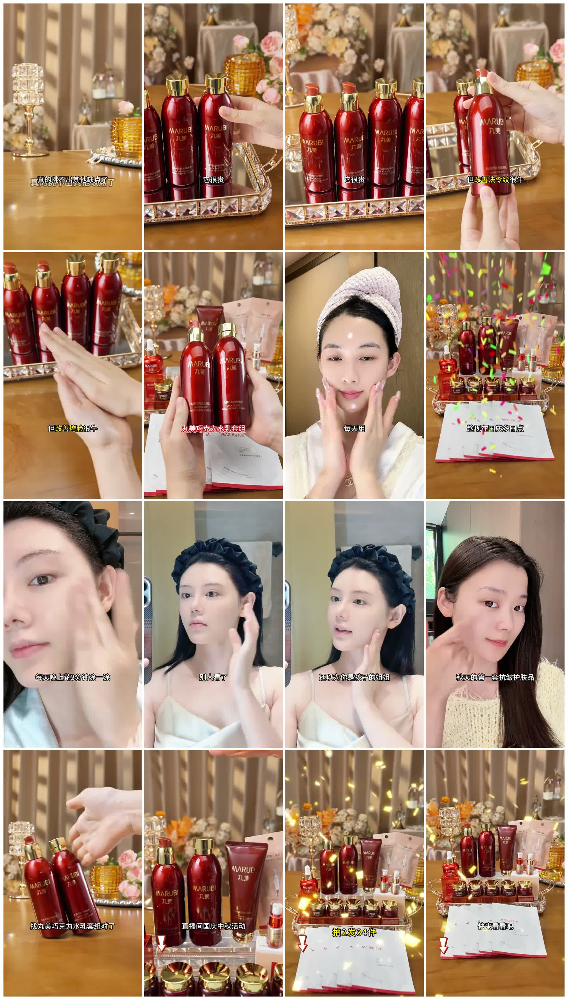
# 分镜脚本 + AI提示词｜18_7554323142798314752 - 平台：抖音 - 原链接：https://www.douyin.com/video/7554323142798314752 - 本地视频：/Users/mac/Desktop/视频素材/_中转/抖音_203610_7554323142798314752.mp4 - 时长：31.35 秒 - 抽帧规则：每 2 秒 1 帧 - 联系表：contact_sheet.jpg ## 使用说明 - 每个镜头按视频时间顺序排列。 - AI 提示词已按用户规范处理：以 `@xxx` 开头，产品/膏霜位置可复用 `@xxx`，不要求生成字幕，每条结尾明确不要字幕。 - 如需更精细版本，可基于 `frames/` 逐帧二次改写。 ## 分镜明细 ### 镜头 01｜约 00s｜开场钩子  画面描述：用近景快速建立产品/人物/使用场景，画面节奏干净直接，先给观众一个可感知的视觉记忆点。 分镜脚本：开场钩子：用近景快速建立产品/人物/使用场景，画面节奏干净直接，先给观众一个可感知的视觉记忆点。建议保持 1.5-2 秒节奏，动作不要过满，重点放在产品、手部和质感变化上。 AI提示词：@xxx广告开场近景，产品或手部动作进入画面，构图稳定，背景干净，第一秒抓住注意力，竖屏9:16，近景开场，镜头轻微推进，产品/膏霜位置使用@xxx，真实商业美妆短视频风格，高清细节，皮肤质感自然，光线柔和通透，色彩干净高级，背景不杂乱，动作连贯自然，负面：低清晰度、畸形手、过度磨皮、脏乱背景、文字水印、logo乱码、过曝、塑料感。整段视频不要出现任何字幕 ### 镜头 02｜约 02s｜开场钩子  画面描述：用近景快速建立产品/人物/使用场景，画面节奏干净直接，先给观众一个可感知的视觉记忆点。 分镜脚本：开场钩子：用近景快速建立产品/人物/使用场景，画面节奏干净直接，先给观众一个可感知的视觉记忆点。建议保持 1.5-2 秒节奏，动作不要过满，重点放在产品、手部和质感变化上。 AI提示词：@xxx广告开场近景，产品或手部动作进入画面，构图稳定，背景干净，第一秒抓住注意力，竖屏9:16，俯拍或侧拍，构图留白干净，产品/膏霜位置使用@xxx，真实商业美妆短视频风格，高清细节，皮肤质感自然，光线柔和通透，色彩干净高级，背景不杂乱，动作连贯自然，负面：低清晰度、畸形手、过度磨皮、脏乱背景、文字水印、logo乱码、过曝、塑料感。整段视频不要出现任何字幕 ### 镜头 03｜约 04s｜产品亮相  画面描述：镜头聚焦产品外观、瓶身、质地或包装细节，突出卖点物件本身。 分镜脚本：产品亮相：镜头聚焦产品外观、瓶身、质地或包装细节，突出卖点物件本身。建议保持 1.5-2 秒节奏，动作不要过满，重点放在产品、手部和质感变化上。 AI提示词：@xxx产品展示特写，瓶身/膏霜/包装细节清晰，商业棚拍质感，浅景深，干净高级背景，竖屏9:16，微距特写，浅景深，产品/膏霜位置使用@xxx，真实商业美妆短视频风格，高清细节，皮肤质感自然，光线柔和通透，色彩干净高级，背景不杂乱，动作连贯自然，负面：低清晰度、畸形手、过度磨皮、脏乱背景、文字水印、logo乱码、过曝、塑料感。整段视频不要出现任何字幕 ### 镜头 04｜约 06s｜产品亮相  画面描述：镜头聚焦产品外观、瓶身、质地或包装细节，突出卖点物件本身。 分镜脚本：产品亮相：镜头聚焦产品外观、瓶身、质地或包装细节，突出卖点物件本身。建议保持 1.5-2 秒节奏，动作不要过满，重点放在产品、手部和质感变化上。 AI提示词：@xxx产品展示特写，瓶身/膏霜/包装细节清晰，商业棚拍质感，浅景深，干净高级背景，竖屏9:16，中近景，轻微手持运动，产品/膏霜位置使用@xxx，真实商业美妆短视频风格，高清细节，皮肤质感自然，光线柔和通透，色彩干净高级，背景不杂乱，动作连贯自然，负面：低清晰度、畸形手、过度磨皮、脏乱背景、文字水印、logo乱码、过曝、塑料感。整段视频不要出现任何字幕 ### 镜头 05｜约 08s｜动作演示  画面描述：通过手部拿取、打开、挤压、涂抹、展示等动作，把产品使用方式讲清楚。 分镜脚本：动作演示：通过手部拿取、打开、挤压、涂抹、展示等动作，把产品使用方式讲清楚。建议保持 1.5-2 秒节奏，动作不要过满，重点放在产品、手部和质感变化上。 AI提示词：@xxx手部操作特写，年轻女性白皙双手自然拿取并使用产品，动作柔和顺滑，真实生活化，竖屏9:16，俯拍或侧拍，构图留白干净，产品/膏霜位置使用@xxx，真实商业美妆短视频风格，高清细节，皮肤质感自然，光线柔和通透，色彩干净高级，背景不杂乱，动作连贯自然，负面：低清晰度、畸形手、过度磨皮、脏乱背景、文字水印、logo乱码、过曝、塑料感。整段视频不要出现任何字幕 ### 镜头 06｜约 10s｜动作演示  画面描述：通过手部拿取、打开、挤压、涂抹、展示等动作，把产品使用方式讲清楚。 分镜脚本：动作演示：通过手部拿取、打开、挤压、涂抹、展示等动作，把产品使用方式讲清楚。建议保持 1.5-2 秒节奏，动作不要过满，重点放在产品、手部和质感变化上。 AI提示词：@xxx手部操作特写，年轻女性白皙双手自然拿取并使用产品，动作柔和顺滑，真实生活化，竖屏9:16，微距特写，浅景深，产品/膏霜位置使用@xxx，真实商业美妆短视频风格，高清细节，皮肤质感自然，光线柔和通透，色彩干净高级，背景不杂乱，动作连贯自然，负面：低清晰度、畸形手、过度磨皮、脏乱背景、文字水印、logo乱码、过曝、塑料感。整段视频不要出现任何字幕 ### 镜头 07｜约 12s｜质地细节  画面描述：放大产品质地、颜色、光泽或上肤效果，突出“看得见”的感官体验。 分镜脚本：质地细节：放大产品质地、颜色、光泽或上肤效果，突出“看得见”的感官体验。建议保持 1.5-2 秒节奏，动作不要过满，重点放在产品、手部和质感变化上。 AI提示词：@xxx微距质地镜头，膏体/液体/粉质细腻可见，柔和高光，干净皮肤纹理，真实美妆广告质感，竖屏9:16，中近景，轻微手持运动，产品/膏霜位置使用@xxx，真实商业美妆短视频风格，高清细节，皮肤质感自然，光线柔和通透，色彩干净高级，背景不杂乱，动作连贯自然，负面：低清晰度、畸形手、过度磨皮、脏乱背景、文字水印、logo乱码、过曝、塑料感。整段视频不要出现任何字幕 ### 镜头 08｜约 14s｜质地细节  画面描述：放大产品质地、颜色、光泽或上肤效果，突出“看得见”的感官体验。 分镜脚本：质地细节：放大产品质地、颜色、光泽或上肤效果，突出“看得见”的感官体验。建议保持 1.5-2 秒节奏，动作不要过满，重点放在产品、手部和质感变化上。 AI提示词：@xxx微距质地镜头，膏体/液体/粉质细腻可见，柔和高光，干净皮肤纹理，真实美妆广告质感，竖屏9:16，俯拍或侧拍，构图留白干净，产品/膏霜位置使用@xxx，真实商业美妆短视频风格，高清细节，皮肤质感自然，光线柔和通透，色彩干净高级，背景不杂乱，动作连贯自然，负面：低清晰度、畸形手、过度磨皮、脏乱背景、文字水印、logo乱码、过曝、塑料感。整段视频不要出现任何字幕 ### 镜头 09｜约 16s｜使用效果  画面描述：镜头转向脸部、手背、局部皮肤或场景效果，表现使用前后的氛围变化。 分镜脚本：使用效果：镜头转向脸部、手背、局部皮肤或场景效果，表现使用前后的氛围变化。建议保持 1.5-2 秒节奏，动作不要过满，重点放在产品、手部和质感变化上。 AI提示词：@xxx效果展示镜头，肤色干净通透，妆效自然，画面明亮柔和，人物状态精致不夸张，竖屏9:16，微距特写，浅景深，产品/膏霜位置使用@xxx，真实商业美妆短视频风格，高清细节，皮肤质感自然，光线柔和通透，色彩干净高级，背景不杂乱，动作连贯自然，负面：低清晰度、畸形手、过度磨皮、脏乱背景、文字水印、logo乱码、过曝、塑料感。整段视频不要出现任何字幕 ### 镜头 10｜约 18s｜使用效果  画面描述：镜头转向脸部、手背、局部皮肤或场景效果，表现使用前后的氛围变化。 分镜脚本：使用效果：镜头转向脸部、手背、局部皮肤或场景效果，表现使用前后的氛围变化。建议保持 1.5-2 秒节奏，动作不要过满，重点放在产品、手部和质感变化上。 AI提示词：@xxx效果展示镜头，肤色干净通透，妆效自然，画面明亮柔和，人物状态精致不夸张，竖屏9:16，中近景，轻微手持运动，产品/膏霜位置使用@xxx，真实商业美妆短视频风格，高清细节，皮肤质感自然，光线柔和通透，色彩干净高级，背景不杂乱，动作连贯自然，负面：低清晰度、畸形手、过度磨皮、脏乱背景、文字水印、logo乱码、过曝、塑料感。整段视频不要出现任何字幕 ### 镜头 11｜约 20s｜氛围补充  画面描述：用环境、道具、花材、桌面、布景或生活方式镜头补足品牌调性。 分镜脚本：氛围补充：用环境、道具、花材、桌面、布景或生活方式镜头补足品牌调性。建议保持 1.5-2 秒节奏，动作不要过满，重点放在产品、手部和质感变化上。 AI提示词：@xxx生活方式氛围镜头，桌面陈列精致，道具简洁，暖色自然光，轻奢美妆视觉风格，竖屏9:16，俯拍或侧拍，构图留白干净，产品/膏霜位置使用@xxx，真实商业美妆短视频风格，高清细节，皮肤质感自然，光线柔和通透，色彩干净高级，背景不杂乱，动作连贯自然，负面：低清晰度、畸形手、过度磨皮、脏乱背景、文字水印、logo乱码、过曝、塑料感。整段视频不要出现任何字幕 ### 镜头 12｜约 22s｜氛围补充  画面描述：用环境、道具、花材、桌面、布景或生活方式镜头补足品牌调性。 分镜脚本：氛围补充：用环境、道具、花材、桌面、布景或生活方式镜头补足品牌调性。建议保持 1.5-2 秒节奏，动作不要过满，重点放在产品、手部和质感变化上。 AI提示词：@xxx生活方式氛围镜头，桌面陈列精致，道具简洁，暖色自然光，轻奢美妆视觉风格，竖屏9:16，微距特写，浅景深，产品/膏霜位置使用@xxx，真实商业美妆短视频风格，高清细节，皮肤质感自然，光线柔和通透，色彩干净高级，背景不杂乱，动作连贯自然，负面：低清晰度、畸形手、过度磨皮、脏乱背景、文字水印、logo乱码、过曝、塑料感。整段视频不要出现任何字幕 ### 镜头 13｜约 24s｜卖点强化  画面描述：回到核心动作或核心细节，重复强化产品记忆点，让画面更有转化感。 分镜脚本：卖点强化：回到核心动作或核心细节，重复强化产品记忆点，让画面更有转化感。建议保持 1.5-2 秒节奏，动作不要过满，重点放在产品、手部和质感变化上。 AI提示词：@xxx卖点强化特写，产品与使用动作同框，画面重点集中，清晰表现质感、颜色和使用体验，竖屏9:16，中近景，轻微手持运动，产品/膏霜位置使用@xxx，真实商业美妆短视频风格，高清细节，皮肤质感自然，光线柔和通透，色彩干净高级，背景不杂乱，动作连贯自然，负面：低清晰度、畸形手、过度磨皮、脏乱背景、文字水印、logo乱码、过曝、塑料感。整段视频不要出现任何字幕 ### 镜头 14｜约 26s｜卖点强化  画面描述：回到核心动作或核心细节，重复强化产品记忆点，让画面更有转化感。 分镜脚本：卖点强化：回到核心动作或核心细节，重复强化产品记忆点，让画面更有转化感。建议保持 1.5-2 秒节奏，动作不要过满，重点放在产品、手部和质感变化上。 AI提示词：@xxx卖点强化特写，产品与使用动作同框，画面重点集中，清晰表现质感、颜色和使用体验，竖屏9:16，俯拍或侧拍，构图留白干净，产品/膏霜位置使用@xxx，真实商业美妆短视频风格，高清细节，皮肤质感自然，光线柔和通透，色彩干净高级，背景不杂乱，动作连贯自然，负面：低清晰度、畸形手、过度磨皮、脏乱背景、文字水印、logo乱码、过曝、塑料感。整段视频不要出现任何字幕 ### 镜头 15｜约 28s｜收尾定格  画面描述：用产品定格、人物满意状态或整套陈列结束，形成干净的广告收尾。 分镜脚本：收尾定格：用产品定格、人物满意状态或整套陈列结束，形成干净的广告收尾。建议保持 1.5-2 秒节奏，动作不要过满，重点放在产品、手部和质感变化上。 AI提示词：@xxx广告收尾定格，产品居中摆放或手持展示，构图完整，高级干净，适合短视频结尾，竖屏9:16，微距特写，浅景深，产品/膏霜位置使用@xxx，真实商业美妆短视频风格，高清细节，皮肤质感自然，光线柔和通透，色彩干净高级，背景不杂乱，动作连贯自然，负面：低清晰度、畸形手、过度磨皮、脏乱背景、文字水印、logo乱码、过曝、塑料感。整段视频不要出现任何字幕 ### 镜头 16｜约 30s｜收尾定格  画面描述：用产品定格、人物满意状态或整套陈列结束，形成干净的广告收尾。 分镜脚本：收尾定格：用产品定格、人物满意状态或整套陈列结束，形成干净的广告收尾。建议保持 1.5-2 秒节奏，动作不要过满，重点放在产品、手部和质感变化上。 AI提示词：@xxx广告收尾定格，产品居中摆放或手持展示，构图完整，高级干净，适合短视频结尾，竖屏9:16，稳定定格，适合结尾停留，产品/膏霜位置使用@xxx，真实商业美妆短视频风格，高清细节，皮肤质感自然，光线柔和通透，色彩干净高级，背景不杂乱，动作连贯自然，负面：低清晰度、畸形手、过度磨皮、脏乱背景、文字水印、logo乱码、过曝、塑料感。整段视频不要出现任何字幕
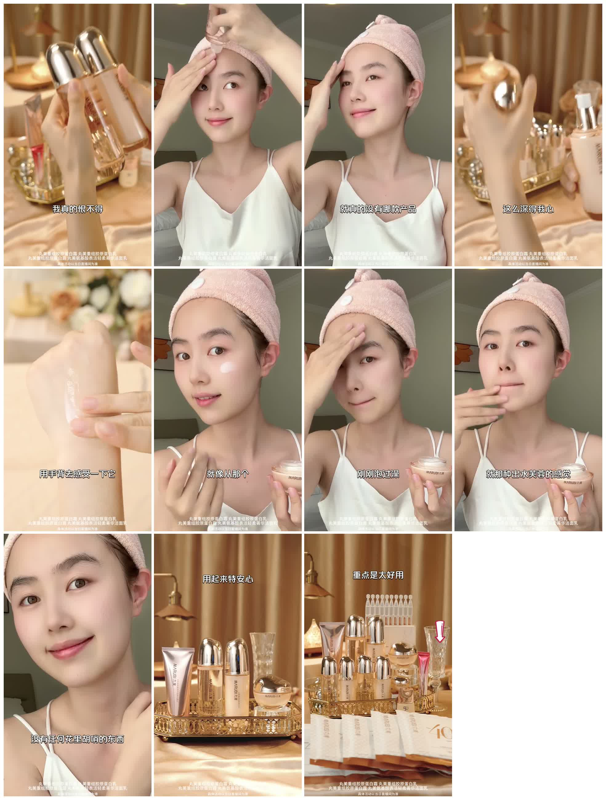
# 分镜脚本 + AI提示词｜19_7390639144399146259 - 平台：抖音 - 原链接：https://www.douyin.com/video/7390639144399146259 - 本地视频：/Users/mac/Desktop/视频素材/_中转/抖音_203623_7390639144399146259.mp4 - 时长：21.73 秒 - 抽帧规则：每 2 秒 1 帧 - 联系表：contact_sheet.jpg ## 使用说明 - 每个镜头按视频时间顺序排列。 - AI 提示词已按用户规范处理：以 `@xxx` 开头，产品/膏霜位置可复用 `@xxx`，不要求生成字幕，每条结尾明确不要字幕。 - 如需更精细版本，可基于 `frames/` 逐帧二次改写。 ## 分镜明细 ### 镜头 01｜约 00s｜开场钩子  画面描述：用近景快速建立产品/人物/使用场景，画面节奏干净直接，先给观众一个可感知的视觉记忆点。 分镜脚本：开场钩子：用近景快速建立产品/人物/使用场景，画面节奏干净直接，先给观众一个可感知的视觉记忆点。建议保持 1.5-2 秒节奏，动作不要过满，重点放在产品、手部和质感变化上。 AI提示词：@xxx广告开场近景，产品或手部动作进入画面，构图稳定，背景干净，第一秒抓住注意力，竖屏9:16，近景开场，镜头轻微推进，产品/膏霜位置使用@xxx，真实商业美妆短视频风格，高清细节，皮肤质感自然，光线柔和通透，色彩干净高级，背景不杂乱，动作连贯自然，负面：低清晰度、畸形手、过度磨皮、脏乱背景、文字水印、logo乱码、过曝、塑料感。整段视频不要出现任何字幕 ### 镜头 02｜约 02s｜开场钩子  画面描述：用近景快速建立产品/人物/使用场景，画面节奏干净直接，先给观众一个可感知的视觉记忆点。 分镜脚本：开场钩子：用近景快速建立产品/人物/使用场景，画面节奏干净直接，先给观众一个可感知的视觉记忆点。建议保持 1.5-2 秒节奏，动作不要过满，重点放在产品、手部和质感变化上。 AI提示词：@xxx广告开场近景，产品或手部动作进入画面，构图稳定，背景干净，第一秒抓住注意力，竖屏9:16，俯拍或侧拍，构图留白干净，产品/膏霜位置使用@xxx，真实商业美妆短视频风格，高清细节，皮肤质感自然，光线柔和通透，色彩干净高级，背景不杂乱，动作连贯自然，负面：低清晰度、畸形手、过度磨皮、脏乱背景、文字水印、logo乱码、过曝、塑料感。整段视频不要出现任何字幕 ### 镜头 03｜约 04s｜产品亮相  画面描述：镜头聚焦产品外观、瓶身、质地或包装细节，突出卖点物件本身。 分镜脚本：产品亮相：镜头聚焦产品外观、瓶身、质地或包装细节，突出卖点物件本身。建议保持 1.5-2 秒节奏，动作不要过满，重点放在产品、手部和质感变化上。 AI提示词：@xxx产品展示特写，瓶身/膏霜/包装细节清晰，商业棚拍质感，浅景深，干净高级背景，竖屏9:16，微距特写，浅景深，产品/膏霜位置使用@xxx，真实商业美妆短视频风格，高清细节，皮肤质感自然，光线柔和通透，色彩干净高级，背景不杂乱，动作连贯自然，负面：低清晰度、畸形手、过度磨皮、脏乱背景、文字水印、logo乱码、过曝、塑料感。整段视频不要出现任何字幕 ### 镜头 04｜约 06s｜动作演示  画面描述：通过手部拿取、打开、挤压、涂抹、展示等动作，把产品使用方式讲清楚。 分镜脚本：动作演示：通过手部拿取、打开、挤压、涂抹、展示等动作，把产品使用方式讲清楚。建议保持 1.5-2 秒节奏，动作不要过满，重点放在产品、手部和质感变化上。 AI提示词：@xxx手部操作特写，年轻女性白皙双手自然拿取并使用产品，动作柔和顺滑，真实生活化，竖屏9:16，中近景，轻微手持运动，产品/膏霜位置使用@xxx，真实商业美妆短视频风格，高清细节，皮肤质感自然，光线柔和通透，色彩干净高级，背景不杂乱，动作连贯自然，负面：低清晰度、畸形手、过度磨皮、脏乱背景、文字水印、logo乱码、过曝、塑料感。整段视频不要出现任何字幕 ### 镜头 05｜约 08s｜动作演示  画面描述：通过手部拿取、打开、挤压、涂抹、展示等动作，把产品使用方式讲清楚。 分镜脚本：动作演示：通过手部拿取、打开、挤压、涂抹、展示等动作，把产品使用方式讲清楚。建议保持 1.5-2 秒节奏，动作不要过满，重点放在产品、手部和质感变化上。 AI提示词：@xxx手部操作特写，年轻女性白皙双手自然拿取并使用产品，动作柔和顺滑，真实生活化，竖屏9:16，俯拍或侧拍，构图留白干净，产品/膏霜位置使用@xxx，真实商业美妆短视频风格，高清细节，皮肤质感自然，光线柔和通透，色彩干净高级，背景不杂乱，动作连贯自然，负面：低清晰度、畸形手、过度磨皮、脏乱背景、文字水印、logo乱码、过曝、塑料感。整段视频不要出现任何字幕 ### 镜头 06｜约 10s｜质地细节  画面描述：放大产品质地、颜色、光泽或上肤效果，突出“看得见”的感官体验。 分镜脚本：质地细节：放大产品质地、颜色、光泽或上肤效果，突出“看得见”的感官体验。建议保持 1.5-2 秒节奏，动作不要过满，重点放在产品、手部和质感变化上。 AI提示词：@xxx微距质地镜头，膏体/液体/粉质细腻可见，柔和高光，干净皮肤纹理，真实美妆广告质感，竖屏9:16，微距特写，浅景深，产品/膏霜位置使用@xxx，真实商业美妆短视频风格，高清细节，皮肤质感自然，光线柔和通透，色彩干净高级，背景不杂乱，动作连贯自然，负面：低清晰度、畸形手、过度磨皮、脏乱背景、文字水印、logo乱码、过曝、塑料感。整段视频不要出现任何字幕 ### 镜头 07｜约 12s｜使用效果  画面描述：镜头转向脸部、手背、局部皮肤或场景效果，表现使用前后的氛围变化。 分镜脚本：使用效果：镜头转向脸部、手背、局部皮肤或场景效果，表现使用前后的氛围变化。建议保持 1.5-2 秒节奏，动作不要过满，重点放在产品、手部和质感变化上。 AI提示词：@xxx效果展示镜头，肤色干净通透，妆效自然，画面明亮柔和，人物状态精致不夸张，竖屏9:16，中近景，轻微手持运动，产品/膏霜位置使用@xxx，真实商业美妆短视频风格，高清细节，皮肤质感自然，光线柔和通透，色彩干净高级，背景不杂乱，动作连贯自然，负面：低清晰度、畸形手、过度磨皮、脏乱背景、文字水印、logo乱码、过曝、塑料感。整段视频不要出现任何字幕 ### 镜头 08｜约 14s｜氛围补充  画面描述：用环境、道具、花材、桌面、布景或生活方式镜头补足品牌调性。 分镜脚本：氛围补充：用环境、道具、花材、桌面、布景或生活方式镜头补足品牌调性。建议保持 1.5-2 秒节奏，动作不要过满，重点放在产品、手部和质感变化上。 AI提示词：@xxx生活方式氛围镜头，桌面陈列精致，道具简洁，暖色自然光，轻奢美妆视觉风格，竖屏9:16，俯拍或侧拍，构图留白干净，产品/膏霜位置使用@xxx，真实商业美妆短视频风格，高清细节，皮肤质感自然，光线柔和通透，色彩干净高级，背景不杂乱，动作连贯自然，负面：低清晰度、畸形手、过度磨皮、脏乱背景、文字水印、logo乱码、过曝、塑料感。整段视频不要出现任何字幕 ### 镜头 09｜约 16s｜氛围补充  画面描述：用环境、道具、花材、桌面、布景或生活方式镜头补足品牌调性。 分镜脚本：氛围补充：用环境、道具、花材、桌面、布景或生活方式镜头补足品牌调性。建议保持 1.5-2 秒节奏，动作不要过满，重点放在产品、手部和质感变化上。 AI提示词：@xxx生活方式氛围镜头，桌面陈列精致，道具简洁，暖色自然光，轻奢美妆视觉风格，竖屏9:16，微距特写，浅景深，产品/膏霜位置使用@xxx，真实商业美妆短视频风格，高清细节，皮肤质感自然，光线柔和通透，色彩干净高级，背景不杂乱，动作连贯自然，负面：低清晰度、畸形手、过度磨皮、脏乱背景、文字水印、logo乱码、过曝、塑料感。整段视频不要出现任何字幕 ### 镜头 10｜约 18s｜卖点强化  画面描述：回到核心动作或核心细节，重复强化产品记忆点，让画面更有转化感。 分镜脚本：卖点强化：回到核心动作或核心细节，重复强化产品记忆点，让画面更有转化感。建议保持 1.5-2 秒节奏，动作不要过满，重点放在产品、手部和质感变化上。 AI提示词：@xxx卖点强化特写，产品与使用动作同框，画面重点集中，清晰表现质感、颜色和使用体验，竖屏9:16，中近景，轻微手持运动，产品/膏霜位置使用@xxx，真实商业美妆短视频风格，高清细节，皮肤质感自然，光线柔和通透，色彩干净高级，背景不杂乱，动作连贯自然，负面：低清晰度、畸形手、过度磨皮、脏乱背景、文字水印、logo乱码、过曝、塑料感。整段视频不要出现任何字幕 ### 镜头 11｜约 20s｜收尾定格  画面描述：用产品定格、人物满意状态或整套陈列结束，形成干净的广告收尾。 分镜脚本：收尾定格：用产品定格、人物满意状态或整套陈列结束，形成干净的广告收尾。建议保持 1.5-2 秒节奏，动作不要过满，重点放在产品、手部和质感变化上。 AI提示词：@xxx广告收尾定格，产品居中摆放或手持展示，构图完整，高级干净，适合短视频结尾，竖屏9:16，稳定定格，适合结尾停留，产品/膏霜位置使用@xxx，真实商业美妆短视频风格，高清细节，皮肤质感自然，光线柔和通透，色彩干净高级，背景不杂乱，动作连贯自然，负面：低清晰度、畸形手、过度磨皮、脏乱背景、文字水印、logo乱码、过曝、塑料感。整段视频不要出现任何字幕
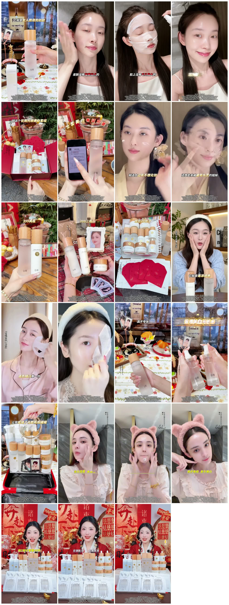
# 分镜脚本 + AI提示词｜20_7620705326358072595 - 平台：抖音 - 原链接：https://www.douyin.com/video/7620705326358072595 - 本地视频：/Users/mac/Desktop/视频素材/_中转/抖音_203635_7620705326358072595.mp4 - 时长：47.11 秒 - 抽帧规则：每 2 秒 1 帧 - 联系表：contact_sheet.jpg ## 使用说明 - 每个镜头按视频时间顺序排列。 - AI 提示词已按用户规范处理：以 `@xxx` 开头，产品/膏霜位置可复用 `@xxx`，不要求生成字幕，每条结尾明确不要字幕。 - 如需更精细版本，可基于 `frames/` 逐帧二次改写。 ## 分镜明细 ### 镜头 01｜约 00s｜开场钩子  画面描述：用近景快速建立产品/人物/使用场景，画面节奏干净直接，先给观众一个可感知的视觉记忆点。 分镜脚本：开场钩子：用近景快速建立产品/人物/使用场景，画面节奏干净直接，先给观众一个可感知的视觉记忆点。建议保持 1.5-2 秒节奏，动作不要过满，重点放在产品、手部和质感变化上。 AI提示词：@xxx广告开场近景，产品或手部动作进入画面，构图稳定，背景干净，第一秒抓住注意力，竖屏9:16，近景开场，镜头轻微推进，产品/膏霜位置使用@xxx，真实商业美妆短视频风格，高清细节，皮肤质感自然，光线柔和通透，色彩干净高级，背景不杂乱，动作连贯自然，负面：低清晰度、畸形手、过度磨皮、脏乱背景、文字水印、logo乱码、过曝、塑料感。整段视频不要出现任何字幕 ### 镜头 02｜约 02s｜开场钩子  画面描述：用近景快速建立产品/人物/使用场景，画面节奏干净直接，先给观众一个可感知的视觉记忆点。 分镜脚本：开场钩子：用近景快速建立产品/人物/使用场景，画面节奏干净直接，先给观众一个可感知的视觉记忆点。建议保持 1.5-2 秒节奏，动作不要过满，重点放在产品、手部和质感变化上。 AI提示词：@xxx广告开场近景，产品或手部动作进入画面，构图稳定，背景干净，第一秒抓住注意力，竖屏9:16，俯拍或侧拍，构图留白干净，产品/膏霜位置使用@xxx，真实商业美妆短视频风格，高清细节，皮肤质感自然，光线柔和通透，色彩干净高级，背景不杂乱，动作连贯自然，负面：低清晰度、畸形手、过度磨皮、脏乱背景、文字水印、logo乱码、过曝、塑料感。整段视频不要出现任何字幕 ### 镜头 03｜约 04s｜开场钩子  画面描述：用近景快速建立产品/人物/使用场景，画面节奏干净直接，先给观众一个可感知的视觉记忆点。 分镜脚本：开场钩子：用近景快速建立产品/人物/使用场景，画面节奏干净直接，先给观众一个可感知的视觉记忆点。建议保持 1.5-2 秒节奏，动作不要过满，重点放在产品、手部和质感变化上。 AI提示词：@xxx广告开场近景，产品或手部动作进入画面，构图稳定，背景干净，第一秒抓住注意力，竖屏9:16，微距特写，浅景深，产品/膏霜位置使用@xxx，真实商业美妆短视频风格，高清细节，皮肤质感自然，光线柔和通透，色彩干净高级，背景不杂乱，动作连贯自然，负面：低清晰度、畸形手、过度磨皮、脏乱背景、文字水印、logo乱码、过曝、塑料感。整段视频不要出现任何字幕 ### 镜头 04｜约 06s｜产品亮相  画面描述：镜头聚焦产品外观、瓶身、质地或包装细节，突出卖点物件本身。 分镜脚本：产品亮相：镜头聚焦产品外观、瓶身、质地或包装细节，突出卖点物件本身。建议保持 1.5-2 秒节奏，动作不要过满，重点放在产品、手部和质感变化上。 AI提示词：@xxx产品展示特写，瓶身/膏霜/包装细节清晰，商业棚拍质感，浅景深，干净高级背景，竖屏9:16，中近景，轻微手持运动，产品/膏霜位置使用@xxx，真实商业美妆短视频风格，高清细节，皮肤质感自然，光线柔和通透，色彩干净高级，背景不杂乱，动作连贯自然，负面：低清晰度、畸形手、过度磨皮、脏乱背景、文字水印、logo乱码、过曝、塑料感。整段视频不要出现任何字幕 ### 镜头 05｜约 08s｜产品亮相  画面描述：镜头聚焦产品外观、瓶身、质地或包装细节，突出卖点物件本身。 分镜脚本：产品亮相：镜头聚焦产品外观、瓶身、质地或包装细节，突出卖点物件本身。建议保持 1.5-2 秒节奏，动作不要过满，重点放在产品、手部和质感变化上。 AI提示词：@xxx产品展示特写，瓶身/膏霜/包装细节清晰，商业棚拍质感，浅景深，干净高级背景，竖屏9:16，俯拍或侧拍，构图留白干净，产品/膏霜位置使用@xxx，真实商业美妆短视频风格，高清细节，皮肤质感自然，光线柔和通透，色彩干净高级，背景不杂乱，动作连贯自然，负面：低清晰度、畸形手、过度磨皮、脏乱背景、文字水印、logo乱码、过曝、塑料感。整段视频不要出现任何字幕 ### 镜头 06｜约 10s｜产品亮相  画面描述：镜头聚焦产品外观、瓶身、质地或包装细节，突出卖点物件本身。 分镜脚本：产品亮相：镜头聚焦产品外观、瓶身、质地或包装细节，突出卖点物件本身。建议保持 1.5-2 秒节奏，动作不要过满，重点放在产品、手部和质感变化上。 AI提示词：@xxx产品展示特写，瓶身/膏霜/包装细节清晰，商业棚拍质感，浅景深，干净高级背景，竖屏9:16，微距特写，浅景深，产品/膏霜位置使用@xxx，真实商业美妆短视频风格，高清细节，皮肤质感自然，光线柔和通透，色彩干净高级，背景不杂乱，动作连贯自然，负面：低清晰度、畸形手、过度磨皮、脏乱背景、文字水印、logo乱码、过曝、塑料感。整段视频不要出现任何字幕 ### 镜头 07｜约 12s｜动作演示  画面描述：通过手部拿取、打开、挤压、涂抹、展示等动作，把产品使用方式讲清楚。 分镜脚本：动作演示：通过手部拿取、打开、挤压、涂抹、展示等动作，把产品使用方式讲清楚。建议保持 1.5-2 秒节奏，动作不要过满，重点放在产品、手部和质感变化上。 AI提示词：@xxx手部操作特写，年轻女性白皙双手自然拿取并使用产品，动作柔和顺滑，真实生活化，竖屏9:16，中近景，轻微手持运动，产品/膏霜位置使用@xxx，真实商业美妆短视频风格，高清细节，皮肤质感自然，光线柔和通透，色彩干净高级，背景不杂乱，动作连贯自然，负面：低清晰度、畸形手、过度磨皮、脏乱背景、文字水印、logo乱码、过曝、塑料感。整段视频不要出现任何字幕 ### 镜头 08｜约 14s｜动作演示  画面描述：通过手部拿取、打开、挤压、涂抹、展示等动作，把产品使用方式讲清楚。 分镜脚本：动作演示：通过手部拿取、打开、挤压、涂抹、展示等动作，把产品使用方式讲清楚。建议保持 1.5-2 秒节奏，动作不要过满，重点放在产品、手部和质感变化上。 AI提示词：@xxx手部操作特写，年轻女性白皙双手自然拿取并使用产品，动作柔和顺滑，真实生活化，竖屏9:16，俯拍或侧拍，构图留白干净，产品/膏霜位置使用@xxx，真实商业美妆短视频风格，高清细节，皮肤质感自然，光线柔和通透，色彩干净高级，背景不杂乱，动作连贯自然，负面：低清晰度、畸形手、过度磨皮、脏乱背景、文字水印、logo乱码、过曝、塑料感。整段视频不要出现任何字幕 ### 镜头 09｜约 16s｜动作演示  画面描述：通过手部拿取、打开、挤压、涂抹、展示等动作，把产品使用方式讲清楚。 分镜脚本：动作演示：通过手部拿取、打开、挤压、涂抹、展示等动作，把产品使用方式讲清楚。建议保持 1.5-2 秒节奏，动作不要过满，重点放在产品、手部和质感变化上。 AI提示词：@xxx手部操作特写，年轻女性白皙双手自然拿取并使用产品，动作柔和顺滑，真实生活化，竖屏9:16，微距特写，浅景深，产品/膏霜位置使用@xxx，真实商业美妆短视频风格，高清细节，皮肤质感自然，光线柔和通透，色彩干净高级，背景不杂乱，动作连贯自然，负面：低清晰度、畸形手、过度磨皮、脏乱背景、文字水印、logo乱码、过曝、塑料感。整段视频不要出现任何字幕 ### 镜头 10｜约 18s｜质地细节  画面描述：放大产品质地、颜色、光泽或上肤效果，突出“看得见”的感官体验。 分镜脚本：质地细节：放大产品质地、颜色、光泽或上肤效果，突出“看得见”的感官体验。建议保持 1.5-2 秒节奏，动作不要过满，重点放在产品、手部和质感变化上。 AI提示词：@xxx微距质地镜头，膏体/液体/粉质细腻可见，柔和高光，干净皮肤纹理，真实美妆广告质感，竖屏9:16，中近景，轻微手持运动，产品/膏霜位置使用@xxx，真实商业美妆短视频风格，高清细节，皮肤质感自然，光线柔和通透，色彩干净高级，背景不杂乱，动作连贯自然，负面：低清晰度、畸形手、过度磨皮、脏乱背景、文字水印、logo乱码、过曝、塑料感。整段视频不要出现任何字幕 ### 镜头 11｜约 20s｜质地细节  画面描述：放大产品质地、颜色、光泽或上肤效果，突出“看得见”的感官体验。 分镜脚本：质地细节：放大产品质地、颜色、光泽或上肤效果，突出“看得见”的感官体验。建议保持 1.5-2 秒节奏，动作不要过满，重点放在产品、手部和质感变化上。 AI提示词：@xxx微距质地镜头，膏体/液体/粉质细腻可见，柔和高光，干净皮肤纹理，真实美妆广告质感，竖屏9:16，俯拍或侧拍，构图留白干净，产品/膏霜位置使用@xxx，真实商业美妆短视频风格，高清细节，皮肤质感自然，光线柔和通透，色彩干净高级，背景不杂乱，动作连贯自然，负面：低清晰度、畸形手、过度磨皮、脏乱背景、文字水印、logo乱码、过曝、塑料感。整段视频不要出现任何字幕 ### 镜头 12｜约 22s｜质地细节  画面描述：放大产品质地、颜色、光泽或上肤效果，突出“看得见”的感官体验。 分镜脚本：质地细节：放大产品质地、颜色、光泽或上肤效果，突出“看得见”的感官体验。建议保持 1.5-2 秒节奏，动作不要过满，重点放在产品、手部和质感变化上。 AI提示词：@xxx微距质地镜头，膏体/液体/粉质细腻可见，柔和高光，干净皮肤纹理，真实美妆广告质感，竖屏9:16，微距特写，浅景深，产品/膏霜位置使用@xxx，真实商业美妆短视频风格，高清细节，皮肤质感自然，光线柔和通透，色彩干净高级，背景不杂乱，动作连贯自然，负面：低清晰度、畸形手、过度磨皮、脏乱背景、文字水印、logo乱码、过曝、塑料感。整段视频不要出现任何字幕 ### 镜头 13｜约 24s｜使用效果  画面描述：镜头转向脸部、手背、局部皮肤或场景效果，表现使用前后的氛围变化。 分镜脚本：使用效果：镜头转向脸部、手背、局部皮肤或场景效果，表现使用前后的氛围变化。建议保持 1.5-2 秒节奏，动作不要过满，重点放在产品、手部和质感变化上。 AI提示词：@xxx效果展示镜头，肤色干净通透，妆效自然，画面明亮柔和，人物状态精致不夸张，竖屏9:16，中近景，轻微手持运动，产品/膏霜位置使用@xxx，真实商业美妆短视频风格，高清细节，皮肤质感自然，光线柔和通透，色彩干净高级，背景不杂乱，动作连贯自然，负面：低清晰度、畸形手、过度磨皮、脏乱背景、文字水印、logo乱码、过曝、塑料感。整段视频不要出现任何字幕 ### 镜头 14｜约 26s｜使用效果  画面描述：镜头转向脸部、手背、局部皮肤或场景效果，表现使用前后的氛围变化。 分镜脚本：使用效果：镜头转向脸部、手背、局部皮肤或场景效果，表现使用前后的氛围变化。建议保持 1.5-2 秒节奏，动作不要过满，重点放在产品、手部和质感变化上。 AI提示词：@xxx效果展示镜头，肤色干净通透，妆效自然，画面明亮柔和，人物状态精致不夸张，竖屏9:16，俯拍或侧拍，构图留白干净，产品/膏霜位置使用@xxx，真实商业美妆短视频风格，高清细节，皮肤质感自然，光线柔和通透，色彩干净高级，背景不杂乱，动作连贯自然，负面：低清晰度、畸形手、过度磨皮、脏乱背景、文字水印、logo乱码、过曝、塑料感。整段视频不要出现任何字幕 ### 镜头 15｜约 28s｜使用效果  画面描述：镜头转向脸部、手背、局部皮肤或场景效果，表现使用前后的氛围变化。 分镜脚本：使用效果：镜头转向脸部、手背、局部皮肤或场景效果，表现使用前后的氛围变化。建议保持 1.5-2 秒节奏，动作不要过满，重点放在产品、手部和质感变化上。 AI提示词：@xxx效果展示镜头，肤色干净通透，妆效自然，画面明亮柔和，人物状态精致不夸张，竖屏9:16，微距特写，浅景深，产品/膏霜位置使用@xxx，真实商业美妆短视频风格，高清细节，皮肤质感自然，光线柔和通透，色彩干净高级，背景不杂乱，动作连贯自然，负面：低清晰度、畸形手、过度磨皮、脏乱背景、文字水印、logo乱码、过曝、塑料感。整段视频不要出现任何字幕 ### 镜头 16｜约 30s｜氛围补充  画面描述：用环境、道具、花材、桌面、布景或生活方式镜头补足品牌调性。 分镜脚本：氛围补充：用环境、道具、花材、桌面、布景或生活方式镜头补足品牌调性。建议保持 1.5-2 秒节奏，动作不要过满，重点放在产品、手部和质感变化上。 AI提示词：@xxx生活方式氛围镜头，桌面陈列精致，道具简洁，暖色自然光，轻奢美妆视觉风格，竖屏9:16，中近景，轻微手持运动，产品/膏霜位置使用@xxx，真实商业美妆短视频风格，高清细节，皮肤质感自然，光线柔和通透，色彩干净高级，背景不杂乱，动作连贯自然，负面：低清晰度、畸形手、过度磨皮、脏乱背景、文字水印、logo乱码、过曝、塑料感。整段视频不要出现任何字幕 ### 镜头 17｜约 32s｜氛围补充  画面描述：用环境、道具、花材、桌面、布景或生活方式镜头补足品牌调性。 分镜脚本：氛围补充：用环境、道具、花材、桌面、布景或生活方式镜头补足品牌调性。建议保持 1.5-2 秒节奏，动作不要过满，重点放在产品、手部和质感变化上。 AI提示词：@xxx生活方式氛围镜头，桌面陈列精致，道具简洁，暖色自然光，轻奢美妆视觉风格，竖屏9:16，俯拍或侧拍，构图留白干净，产品/膏霜位置使用@xxx，真实商业美妆短视频风格，高清细节，皮肤质感自然，光线柔和通透，色彩干净高级，背景不杂乱，动作连贯自然，负面：低清晰度、畸形手、过度磨皮、脏乱背景、文字水印、logo乱码、过曝、塑料感。整段视频不要出现任何字幕 ### 镜头 18｜约 34s｜氛围补充  画面描述：用环境、道具、花材、桌面、布景或生活方式镜头补足品牌调性。 分镜脚本：氛围补充：用环境、道具、花材、桌面、布景或生活方式镜头补足品牌调性。建议保持 1.5-2 秒节奏，动作不要过满，重点放在产品、手部和质感变化上。 AI提示词：@xxx生活方式氛围镜头，桌面陈列精致，道具简洁，暖色自然光，轻奢美妆视觉风格，竖屏9:16，微距特写，浅景深，产品/膏霜位置使用@xxx，真实商业美妆短视频风格，高清细节，皮肤质感自然，光线柔和通透，色彩干净高级，背景不杂乱，动作连贯自然，负面：低清晰度、畸形手、过度磨皮、脏乱背景、文字水印、logo乱码、过曝、塑料感。整段视频不要出现任何字幕 ### 镜头 19｜约 36s｜卖点强化  画面描述：回到核心动作或核心细节，重复强化产品记忆点，让画面更有转化感。 分镜脚本：卖点强化：回到核心动作或核心细节，重复强化产品记忆点，让画面更有转化感。建议保持 1.5-2 秒节奏，动作不要过满，重点放在产品、手部和质感变化上。 AI提示词：@xxx卖点强化特写，产品与使用动作同框，画面重点集中，清晰表现质感、颜色和使用体验，竖屏9:16，中近景，轻微手持运动，产品/膏霜位置使用@xxx，真实商业美妆短视频风格，高清细节，皮肤质感自然，光线柔和通透，色彩干净高级，背景不杂乱，动作连贯自然，负面：低清晰度、畸形手、过度磨皮、脏乱背景、文字水印、logo乱码、过曝、塑料感。整段视频不要出现任何字幕 ### 镜头 20｜约 38s｜卖点强化  画面描述：回到核心动作或核心细节，重复强化产品记忆点，让画面更有转化感。 分镜脚本：卖点强化：回到核心动作或核心细节，重复强化产品记忆点，让画面更有转化感。建议保持 1.5-2 秒节奏，动作不要过满，重点放在产品、手部和质感变化上。 AI提示词：@xxx卖点强化特写，产品与使用动作同框，画面重点集中，清晰表现质感、颜色和使用体验，竖屏9:16，俯拍或侧拍，构图留白干净，产品/膏霜位置使用@xxx，真实商业美妆短视频风格，高清细节，皮肤质感自然，光线柔和通透，色彩干净高级，背景不杂乱，动作连贯自然，负面：低清晰度、畸形手、过度磨皮、脏乱背景、文字水印、logo乱码、过曝、塑料感。整段视频不要出现任何字幕 ### 镜头 21｜约 40s｜卖点强化  画面描述：回到核心动作或核心细节，重复强化产品记忆点，让画面更有转化感。 分镜脚本：卖点强化：回到核心动作或核心细节，重复强化产品记忆点，让画面更有转化感。建议保持 1.5-2 秒节奏，动作不要过满，重点放在产品、手部和质感变化上。 AI提示词：@xxx卖点强化特写，产品与使用动作同框，画面重点集中，清晰表现质感、颜色和使用体验，竖屏9:16，微距特写，浅景深，产品/膏霜位置使用@xxx，真实商业美妆短视频风格，高清细节，皮肤质感自然，光线柔和通透，色彩干净高级，背景不杂乱，动作连贯自然，负面：低清晰度、畸形手、过度磨皮、脏乱背景、文字水印、logo乱码、过曝、塑料感。整段视频不要出现任何字幕 ### 镜头 22｜约 42s｜收尾定格  画面描述：用产品定格、人物满意状态或整套陈列结束，形成干净的广告收尾。 分镜脚本：收尾定格：用产品定格、人物满意状态或整套陈列结束，形成干净的广告收尾。建议保持 1.5-2 秒节奏，动作不要过满，重点放在产品、手部和质感变化上。 AI提示词：@xxx广告收尾定格，产品居中摆放或手持展示，构图完整，高级干净，适合短视频结尾，竖屏9:16，中近景，轻微手持运动，产品/膏霜位置使用@xxx，真实商业美妆短视频风格，高清细节，皮肤质感自然，光线柔和通透，色彩干净高级，背景不杂乱，动作连贯自然，负面：低清晰度、畸形手、过度磨皮、脏乱背景、文字水印、logo乱码、过曝、塑料感。整段视频不要出现任何字幕 ### 镜头 23｜约 44s｜收尾定格  画面描述：用产品定格、人物满意状态或整套陈列结束，形成干净的广告收尾。 分镜脚本：收尾定格：用产品定格、人物满意状态或整套陈列结束，形成干净的广告收尾。建议保持 1.5-2 秒节奏，动作不要过满，重点放在产品、手部和质感变化上。 AI提示词：@xxx广告收尾定格，产品居中摆放或手持展示，构图完整，高级干净，适合短视频结尾，竖屏9:16，稳定定格，适合结尾停留，产品/膏霜位置使用@xxx，真实商业美妆短视频风格，高清细节，皮肤质感自然，光线柔和通透，色彩干净高级，背景不杂乱，动作连贯自然，负面：低清晰度、畸形手、过度磨皮、脏乱背景、文字水印、logo乱码、过曝、塑料感。整段视频不要出现任何字幕
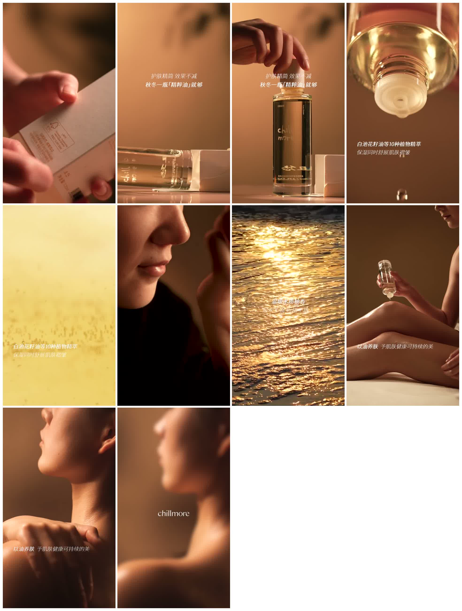
# 分镜脚本 + AI提示词｜21_7460351049652571427 - 平台：抖音 - 原链接：https://www.douyin.com/video/7460351049652571427 - 本地视频：/Users/mac/Desktop/视频素材/_中转/抖音_203648_7460351049652571427.mp4 - 时长：19.65 秒 - 抽帧规则：每 2 秒 1 帧 - 联系表：contact_sheet.jpg ## 使用说明 - 每个镜头按视频时间顺序排列。 - AI 提示词已按用户规范处理：以 `@xxx` 开头，产品/膏霜位置可复用 `@xxx`，不要求生成字幕，每条结尾明确不要字幕。 - 如需更精细版本，可基于 `frames/` 逐帧二次改写。 ## 分镜明细 ### 镜头 01｜约 00s｜开场钩子  画面描述：用近景快速建立产品/人物/使用场景，画面节奏干净直接，先给观众一个可感知的视觉记忆点。 分镜脚本：开场钩子：用近景快速建立产品/人物/使用场景，画面节奏干净直接，先给观众一个可感知的视觉记忆点。建议保持 1.5-2 秒节奏，动作不要过满，重点放在产品、手部和质感变化上。 AI提示词：@xxx广告开场近景，产品或手部动作进入画面，构图稳定，背景干净，第一秒抓住注意力，竖屏9:16，近景开场，镜头轻微推进，产品/膏霜位置使用@xxx，真实商业美妆短视频风格，高清细节，皮肤质感自然，光线柔和通透，色彩干净高级，背景不杂乱，动作连贯自然，负面：低清晰度、畸形手、过度磨皮、脏乱背景、文字水印、logo乱码、过曝、塑料感。整段视频不要出现任何字幕 ### 镜头 02｜约 02s｜开场钩子  画面描述：用近景快速建立产品/人物/使用场景，画面节奏干净直接，先给观众一个可感知的视觉记忆点。 分镜脚本：开场钩子：用近景快速建立产品/人物/使用场景，画面节奏干净直接，先给观众一个可感知的视觉记忆点。建议保持 1.5-2 秒节奏，动作不要过满，重点放在产品、手部和质感变化上。 AI提示词：@xxx广告开场近景，产品或手部动作进入画面，构图稳定，背景干净，第一秒抓住注意力，竖屏9:16，俯拍或侧拍，构图留白干净，产品/膏霜位置使用@xxx，真实商业美妆短视频风格，高清细节，皮肤质感自然，光线柔和通透，色彩干净高级，背景不杂乱，动作连贯自然，负面：低清晰度、畸形手、过度磨皮、脏乱背景、文字水印、logo乱码、过曝、塑料感。整段视频不要出现任何字幕 ### 镜头 03｜约 04s｜产品亮相  画面描述：镜头聚焦产品外观、瓶身、质地或包装细节，突出卖点物件本身。 分镜脚本：产品亮相：镜头聚焦产品外观、瓶身、质地或包装细节，突出卖点物件本身。建议保持 1.5-2 秒节奏，动作不要过满，重点放在产品、手部和质感变化上。 AI提示词：@xxx产品展示特写，瓶身/膏霜/包装细节清晰，商业棚拍质感，浅景深，干净高级背景，竖屏9:16，微距特写，浅景深，产品/膏霜位置使用@xxx，真实商业美妆短视频风格，高清细节，皮肤质感自然，光线柔和通透，色彩干净高级，背景不杂乱，动作连贯自然，负面：低清晰度、畸形手、过度磨皮、脏乱背景、文字水印、logo乱码、过曝、塑料感。整段视频不要出现任何字幕 ### 镜头 04｜约 06s｜动作演示  画面描述：通过手部拿取、打开、挤压、涂抹、展示等动作，把产品使用方式讲清楚。 分镜脚本：动作演示：通过手部拿取、打开、挤压、涂抹、展示等动作，把产品使用方式讲清楚。建议保持 1.5-2 秒节奏，动作不要过满，重点放在产品、手部和质感变化上。 AI提示词：@xxx手部操作特写，年轻女性白皙双手自然拿取并使用产品，动作柔和顺滑，真实生活化，竖屏9:16，中近景，轻微手持运动，产品/膏霜位置使用@xxx，真实商业美妆短视频风格，高清细节，皮肤质感自然，光线柔和通透，色彩干净高级，背景不杂乱，动作连贯自然，负面：低清晰度、畸形手、过度磨皮、脏乱背景、文字水印、logo乱码、过曝、塑料感。整段视频不要出现任何字幕 ### 镜头 05｜约 08s｜质地细节  画面描述：放大产品质地、颜色、光泽或上肤效果，突出“看得见”的感官体验。 分镜脚本：质地细节：放大产品质地、颜色、光泽或上肤效果，突出“看得见”的感官体验。建议保持 1.5-2 秒节奏，动作不要过满，重点放在产品、手部和质感变化上。 AI提示词：@xxx微距质地镜头，膏体/液体/粉质细腻可见，柔和高光，干净皮肤纹理，真实美妆广告质感，竖屏9:16，俯拍或侧拍，构图留白干净，产品/膏霜位置使用@xxx，真实商业美妆短视频风格，高清细节，皮肤质感自然，光线柔和通透，色彩干净高级，背景不杂乱，动作连贯自然，负面：低清晰度、畸形手、过度磨皮、脏乱背景、文字水印、logo乱码、过曝、塑料感。整段视频不要出现任何字幕 ### 镜头 06｜约 10s｜使用效果  画面描述：镜头转向脸部、手背、局部皮肤或场景效果，表现使用前后的氛围变化。 分镜脚本：使用效果：镜头转向脸部、手背、局部皮肤或场景效果，表现使用前后的氛围变化。建议保持 1.5-2 秒节奏，动作不要过满，重点放在产品、手部和质感变化上。 AI提示词：@xxx效果展示镜头，肤色干净通透，妆效自然，画面明亮柔和，人物状态精致不夸张，竖屏9:16，微距特写，浅景深，产品/膏霜位置使用@xxx，真实商业美妆短视频风格，高清细节，皮肤质感自然，光线柔和通透，色彩干净高级，背景不杂乱，动作连贯自然，负面：低清晰度、畸形手、过度磨皮、脏乱背景、文字水印、logo乱码、过曝、塑料感。整段视频不要出现任何字幕 ### 镜头 07｜约 12s｜使用效果  画面描述：镜头转向脸部、手背、局部皮肤或场景效果，表现使用前后的氛围变化。 分镜脚本：使用效果：镜头转向脸部、手背、局部皮肤或场景效果，表现使用前后的氛围变化。建议保持 1.5-2 秒节奏，动作不要过满，重点放在产品、手部和质感变化上。 AI提示词：@xxx效果展示镜头，肤色干净通透，妆效自然，画面明亮柔和，人物状态精致不夸张，竖屏9:16，中近景，轻微手持运动，产品/膏霜位置使用@xxx，真实商业美妆短视频风格，高清细节，皮肤质感自然，光线柔和通透，色彩干净高级，背景不杂乱，动作连贯自然，负面：低清晰度、畸形手、过度磨皮、脏乱背景、文字水印、logo乱码、过曝、塑料感。整段视频不要出现任何字幕 ### 镜头 08｜约 14s｜氛围补充  画面描述：用环境、道具、花材、桌面、布景或生活方式镜头补足品牌调性。 分镜脚本：氛围补充：用环境、道具、花材、桌面、布景或生活方式镜头补足品牌调性。建议保持 1.5-2 秒节奏，动作不要过满，重点放在产品、手部和质感变化上。 AI提示词：@xxx生活方式氛围镜头，桌面陈列精致，道具简洁，暖色自然光，轻奢美妆视觉风格，竖屏9:16，俯拍或侧拍，构图留白干净，产品/膏霜位置使用@xxx，真实商业美妆短视频风格，高清细节，皮肤质感自然，光线柔和通透，色彩干净高级，背景不杂乱，动作连贯自然，负面：低清晰度、畸形手、过度磨皮、脏乱背景、文字水印、logo乱码、过曝、塑料感。整段视频不要出现任何字幕 ### 镜头 09｜约 16s｜卖点强化  画面描述：回到核心动作或核心细节，重复强化产品记忆点，让画面更有转化感。 分镜脚本：卖点强化：回到核心动作或核心细节，重复强化产品记忆点，让画面更有转化感。建议保持 1.5-2 秒节奏，动作不要过满，重点放在产品、手部和质感变化上。 AI提示词：@xxx卖点强化特写，产品与使用动作同框，画面重点集中，清晰表现质感、颜色和使用体验，竖屏9:16，微距特写，浅景深，产品/膏霜位置使用@xxx，真实商业美妆短视频风格，高清细节，皮肤质感自然，光线柔和通透，色彩干净高级，背景不杂乱，动作连贯自然，负面：低清晰度、畸形手、过度磨皮、脏乱背景、文字水印、logo乱码、过曝、塑料感。整段视频不要出现任何字幕 ### 镜头 10｜约 18s｜收尾定格  画面描述：用产品定格、人物满意状态或整套陈列结束，形成干净的广告收尾。 分镜脚本：收尾定格：用产品定格、人物满意状态或整套陈列结束，形成干净的广告收尾。建议保持 1.5-2 秒节奏，动作不要过满，重点放在产品、手部和质感变化上。 AI提示词：@xxx广告收尾定格，产品居中摆放或手持展示，构图完整，高级干净，适合短视频结尾，竖屏9:16，稳定定格，适合结尾停留，产品/膏霜位置使用@xxx，真实商业美妆短视频风格，高清细节，皮肤质感自然，光线柔和通透，色彩干净高级，背景不杂乱，动作连贯自然，负面：低清晰度、畸形手、过度磨皮、脏乱背景、文字水印、logo乱码、过曝、塑料感。整段视频不要出现任何字幕
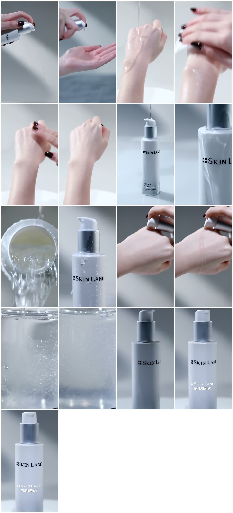
# 分镜脚本 + AI提示词｜22_7065627186274848008 - 平台：抖音 - 原链接：https://www.douyin.com/video/7065627186274848008 - 本地视频：/Users/mac/Desktop/视频素材/_中转/抖音_203701_7065627186274848008.mp4 - 时长：33.58 秒 - 抽帧规则：每 2 秒 1 帧 - 联系表：contact_sheet.jpg ## 使用说明 - 每个镜头按视频时间顺序排列。 - AI 提示词已按用户规范处理：以 `@xxx` 开头，产品/膏霜位置可复用 `@xxx`，不要求生成字幕，每条结尾明确不要字幕。 - 如需更精细版本，可基于 `frames/` 逐帧二次改写。 ## 分镜明细 ### 镜头 01｜约 00s｜开场钩子  画面描述：用近景快速建立产品/人物/使用场景，画面节奏干净直接，先给观众一个可感知的视觉记忆点。 分镜脚本：开场钩子：用近景快速建立产品/人物/使用场景，画面节奏干净直接，先给观众一个可感知的视觉记忆点。建议保持 1.5-2 秒节奏，动作不要过满，重点放在产品、手部和质感变化上。 AI提示词：@xxx广告开场近景，产品或手部动作进入画面，构图稳定，背景干净，第一秒抓住注意力，竖屏9:16，近景开场，镜头轻微推进，产品/膏霜位置使用@xxx，真实商业美妆短视频风格，高清细节，皮肤质感自然，光线柔和通透，色彩干净高级，背景不杂乱，动作连贯自然，负面：低清晰度、畸形手、过度磨皮、脏乱背景、文字水印、logo乱码、过曝、塑料感。整段视频不要出现任何字幕 ### 镜头 02｜约 02s｜开场钩子  画面描述：用近景快速建立产品/人物/使用场景，画面节奏干净直接，先给观众一个可感知的视觉记忆点。 分镜脚本：开场钩子：用近景快速建立产品/人物/使用场景，画面节奏干净直接，先给观众一个可感知的视觉记忆点。建议保持 1.5-2 秒节奏，动作不要过满，重点放在产品、手部和质感变化上。 AI提示词：@xxx广告开场近景，产品或手部动作进入画面，构图稳定，背景干净，第一秒抓住注意力，竖屏9:16，俯拍或侧拍，构图留白干净，产品/膏霜位置使用@xxx，真实商业美妆短视频风格，高清细节，皮肤质感自然，光线柔和通透，色彩干净高级，背景不杂乱，动作连贯自然，负面：低清晰度、畸形手、过度磨皮、脏乱背景、文字水印、logo乱码、过曝、塑料感。整段视频不要出现任何字幕 ### 镜头 03｜约 04s｜开场钩子  画面描述：用近景快速建立产品/人物/使用场景，画面节奏干净直接，先给观众一个可感知的视觉记忆点。 分镜脚本：开场钩子：用近景快速建立产品/人物/使用场景，画面节奏干净直接，先给观众一个可感知的视觉记忆点。建议保持 1.5-2 秒节奏，动作不要过满，重点放在产品、手部和质感变化上。 AI提示词：@xxx广告开场近景，产品或手部动作进入画面，构图稳定，背景干净，第一秒抓住注意力，竖屏9:16，微距特写，浅景深，产品/膏霜位置使用@xxx，真实商业美妆短视频风格，高清细节，皮肤质感自然，光线柔和通透，色彩干净高级，背景不杂乱，动作连贯自然，负面：低清晰度、畸形手、过度磨皮、脏乱背景、文字水印、logo乱码、过曝、塑料感。整段视频不要出现任何字幕 ### 镜头 04｜约 06s｜产品亮相  画面描述：镜头聚焦产品外观、瓶身、质地或包装细节，突出卖点物件本身。 分镜脚本：产品亮相：镜头聚焦产品外观、瓶身、质地或包装细节，突出卖点物件本身。建议保持 1.5-2 秒节奏，动作不要过满，重点放在产品、手部和质感变化上。 AI提示词：@xxx产品展示特写，瓶身/膏霜/包装细节清晰，商业棚拍质感，浅景深，干净高级背景，竖屏9:16，中近景，轻微手持运动，产品/膏霜位置使用@xxx，真实商业美妆短视频风格，高清细节，皮肤质感自然，光线柔和通透，色彩干净高级，背景不杂乱，动作连贯自然，负面：低清晰度、畸形手、过度磨皮、脏乱背景、文字水印、logo乱码、过曝、塑料感。整段视频不要出现任何字幕 ### 镜头 05｜约 08s｜产品亮相  画面描述：镜头聚焦产品外观、瓶身、质地或包装细节，突出卖点物件本身。 分镜脚本：产品亮相：镜头聚焦产品外观、瓶身、质地或包装细节，突出卖点物件本身。建议保持 1.5-2 秒节奏，动作不要过满，重点放在产品、手部和质感变化上。 AI提示词：@xxx产品展示特写，瓶身/膏霜/包装细节清晰，商业棚拍质感，浅景深，干净高级背景，竖屏9:16，俯拍或侧拍，构图留白干净，产品/膏霜位置使用@xxx，真实商业美妆短视频风格，高清细节，皮肤质感自然，光线柔和通透，色彩干净高级，背景不杂乱，动作连贯自然，负面：低清晰度、畸形手、过度磨皮、脏乱背景、文字水印、logo乱码、过曝、塑料感。整段视频不要出现任何字幕 ### 镜头 06｜约 10s｜动作演示  画面描述：通过手部拿取、打开、挤压、涂抹、展示等动作，把产品使用方式讲清楚。 分镜脚本：动作演示：通过手部拿取、打开、挤压、涂抹、展示等动作，把产品使用方式讲清楚。建议保持 1.5-2 秒节奏，动作不要过满，重点放在产品、手部和质感变化上。 AI提示词：@xxx手部操作特写，年轻女性白皙双手自然拿取并使用产品，动作柔和顺滑，真实生活化，竖屏9:16，微距特写，浅景深，产品/膏霜位置使用@xxx，真实商业美妆短视频风格，高清细节，皮肤质感自然，光线柔和通透，色彩干净高级，背景不杂乱，动作连贯自然，负面：低清晰度、畸形手、过度磨皮、脏乱背景、文字水印、logo乱码、过曝、塑料感。整段视频不要出现任何字幕 ### 镜头 07｜约 12s｜动作演示  画面描述：通过手部拿取、打开、挤压、涂抹、展示等动作，把产品使用方式讲清楚。 分镜脚本：动作演示：通过手部拿取、打开、挤压、涂抹、展示等动作，把产品使用方式讲清楚。建议保持 1.5-2 秒节奏，动作不要过满，重点放在产品、手部和质感变化上。 AI提示词：@xxx手部操作特写，年轻女性白皙双手自然拿取并使用产品，动作柔和顺滑，真实生活化，竖屏9:16，中近景，轻微手持运动，产品/膏霜位置使用@xxx，真实商业美妆短视频风格，高清细节，皮肤质感自然，光线柔和通透，色彩干净高级，背景不杂乱，动作连贯自然，负面：低清晰度、畸形手、过度磨皮、脏乱背景、文字水印、logo乱码、过曝、塑料感。整段视频不要出现任何字幕 ### 镜头 08｜约 14s｜质地细节  画面描述：放大产品质地、颜色、光泽或上肤效果，突出“看得见”的感官体验。 分镜脚本：质地细节：放大产品质地、颜色、光泽或上肤效果，突出“看得见”的感官体验。建议保持 1.5-2 秒节奏，动作不要过满，重点放在产品、手部和质感变化上。 AI提示词：@xxx微距质地镜头，膏体/液体/粉质细腻可见，柔和高光，干净皮肤纹理，真实美妆广告质感，竖屏9:16，俯拍或侧拍，构图留白干净，产品/膏霜位置使用@xxx，真实商业美妆短视频风格，高清细节，皮肤质感自然，光线柔和通透，色彩干净高级，背景不杂乱，动作连贯自然，负面：低清晰度、畸形手、过度磨皮、脏乱背景、文字水印、logo乱码、过曝、塑料感。整段视频不要出现任何字幕 ### 镜头 09｜约 16s｜质地细节  画面描述：放大产品质地、颜色、光泽或上肤效果，突出“看得见”的感官体验。 分镜脚本：质地细节：放大产品质地、颜色、光泽或上肤效果，突出“看得见”的感官体验。建议保持 1.5-2 秒节奏，动作不要过满，重点放在产品、手部和质感变化上。 AI提示词：@xxx微距质地镜头，膏体/液体/粉质细腻可见，柔和高光，干净皮肤纹理，真实美妆广告质感，竖屏9:16，微距特写，浅景深，产品/膏霜位置使用@xxx，真实商业美妆短视频风格，高清细节，皮肤质感自然，光线柔和通透，色彩干净高级，背景不杂乱，动作连贯自然，负面：低清晰度、畸形手、过度磨皮、脏乱背景、文字水印、logo乱码、过曝、塑料感。整段视频不要出现任何字幕 ### 镜头 10｜约 18s｜使用效果  画面描述：镜头转向脸部、手背、局部皮肤或场景效果，表现使用前后的氛围变化。 分镜脚本：使用效果：镜头转向脸部、手背、局部皮肤或场景效果，表现使用前后的氛围变化。建议保持 1.5-2 秒节奏，动作不要过满，重点放在产品、手部和质感变化上。 AI提示词：@xxx效果展示镜头，肤色干净通透，妆效自然，画面明亮柔和，人物状态精致不夸张，竖屏9:16，中近景，轻微手持运动，产品/膏霜位置使用@xxx，真实商业美妆短视频风格，高清细节，皮肤质感自然，光线柔和通透，色彩干净高级，背景不杂乱，动作连贯自然，负面：低清晰度、畸形手、过度磨皮、脏乱背景、文字水印、logo乱码、过曝、塑料感。整段视频不要出现任何字幕 ### 镜头 11｜约 20s｜使用效果  画面描述：镜头转向脸部、手背、局部皮肤或场景效果，表现使用前后的氛围变化。 分镜脚本：使用效果：镜头转向脸部、手背、局部皮肤或场景效果，表现使用前后的氛围变化。建议保持 1.5-2 秒节奏，动作不要过满，重点放在产品、手部和质感变化上。 AI提示词：@xxx效果展示镜头，肤色干净通透，妆效自然，画面明亮柔和，人物状态精致不夸张，竖屏9:16，俯拍或侧拍，构图留白干净，产品/膏霜位置使用@xxx，真实商业美妆短视频风格，高清细节，皮肤质感自然，光线柔和通透，色彩干净高级，背景不杂乱，动作连贯自然，负面：低清晰度、畸形手、过度磨皮、脏乱背景、文字水印、logo乱码、过曝、塑料感。整段视频不要出现任何字幕 ### 镜头 12｜约 22s｜氛围补充  画面描述：用环境、道具、花材、桌面、布景或生活方式镜头补足品牌调性。 分镜脚本：氛围补充：用环境、道具、花材、桌面、布景或生活方式镜头补足品牌调性。建议保持 1.5-2 秒节奏，动作不要过满，重点放在产品、手部和质感变化上。 AI提示词：@xxx生活方式氛围镜头，桌面陈列精致，道具简洁，暖色自然光，轻奢美妆视觉风格，竖屏9:16，微距特写，浅景深，产品/膏霜位置使用@xxx，真实商业美妆短视频风格，高清细节，皮肤质感自然，光线柔和通透，色彩干净高级，背景不杂乱，动作连贯自然，负面：低清晰度、畸形手、过度磨皮、脏乱背景、文字水印、logo乱码、过曝、塑料感。整段视频不要出现任何字幕 ### 镜头 13｜约 24s｜氛围补充  画面描述：用环境、道具、花材、桌面、布景或生活方式镜头补足品牌调性。 分镜脚本：氛围补充：用环境、道具、花材、桌面、布景或生活方式镜头补足品牌调性。建议保持 1.5-2 秒节奏，动作不要过满，重点放在产品、手部和质感变化上。 AI提示词：@xxx生活方式氛围镜头，桌面陈列精致，道具简洁，暖色自然光，轻奢美妆视觉风格，竖屏9:16，中近景，轻微手持运动，产品/膏霜位置使用@xxx，真实商业美妆短视频风格，高清细节，皮肤质感自然，光线柔和通透，色彩干净高级，背景不杂乱，动作连贯自然，负面：低清晰度、畸形手、过度磨皮、脏乱背景、文字水印、logo乱码、过曝、塑料感。整段视频不要出现任何字幕 ### 镜头 14｜约 26s｜卖点强化  画面描述：回到核心动作或核心细节，重复强化产品记忆点，让画面更有转化感。 分镜脚本：卖点强化：回到核心动作或核心细节，重复强化产品记忆点，让画面更有转化感。建议保持 1.5-2 秒节奏，动作不要过满，重点放在产品、手部和质感变化上。 AI提示词：@xxx卖点强化特写，产品与使用动作同框，画面重点集中，清晰表现质感、颜色和使用体验，竖屏9:16，俯拍或侧拍，构图留白干净，产品/膏霜位置使用@xxx，真实商业美妆短视频风格，高清细节，皮肤质感自然，光线柔和通透，色彩干净高级，背景不杂乱，动作连贯自然，负面：低清晰度、畸形手、过度磨皮、脏乱背景、文字水印、logo乱码、过曝、塑料感。整段视频不要出现任何字幕 ### 镜头 15｜约 28s｜卖点强化  画面描述：回到核心动作或核心细节，重复强化产品记忆点，让画面更有转化感。 分镜脚本：卖点强化：回到核心动作或核心细节，重复强化产品记忆点，让画面更有转化感。建议保持 1.5-2 秒节奏，动作不要过满，重点放在产品、手部和质感变化上。 AI提示词：@xxx卖点强化特写，产品与使用动作同框，画面重点集中，清晰表现质感、颜色和使用体验，竖屏9:16，微距特写，浅景深，产品/膏霜位置使用@xxx，真实商业美妆短视频风格，高清细节，皮肤质感自然，光线柔和通透，色彩干净高级，背景不杂乱，动作连贯自然，负面：低清晰度、畸形手、过度磨皮、脏乱背景、文字水印、logo乱码、过曝、塑料感。整段视频不要出现任何字幕 ### 镜头 16｜约 30s｜收尾定格  画面描述：用产品定格、人物满意状态或整套陈列结束，形成干净的广告收尾。 分镜脚本：收尾定格：用产品定格、人物满意状态或整套陈列结束，形成干净的广告收尾。建议保持 1.5-2 秒节奏，动作不要过满，重点放在产品、手部和质感变化上。 AI提示词：@xxx广告收尾定格，产品居中摆放或手持展示，构图完整，高级干净，适合短视频结尾，竖屏9:16，中近景，轻微手持运动，产品/膏霜位置使用@xxx，真实商业美妆短视频风格，高清细节，皮肤质感自然，光线柔和通透，色彩干净高级，背景不杂乱，动作连贯自然，负面：低清晰度、畸形手、过度磨皮、脏乱背景、文字水印、logo乱码、过曝、塑料感。整段视频不要出现任何字幕 ### 镜头 17｜约 32s｜收尾定格  画面描述：用产品定格、人物满意状态或整套陈列结束，形成干净的广告收尾。 分镜脚本：收尾定格：用产品定格、人物满意状态或整套陈列结束，形成干净的广告收尾。建议保持 1.5-2 秒节奏，动作不要过满，重点放在产品、手部和质感变化上。 AI提示词：@xxx广告收尾定格，产品居中摆放或手持展示，构图完整，高级干净，适合短视频结尾，竖屏9:16，稳定定格，适合结尾停留，产品/膏霜位置使用@xxx，真实商业美妆短视频风格，高清细节，皮肤质感自然，光线柔和通透，色彩干净高级，背景不杂乱，动作连贯自然，负面：低清晰度、畸形手、过度磨皮、脏乱背景、文字水印、logo乱码、过曝、塑料感。整段视频不要出现任何字幕
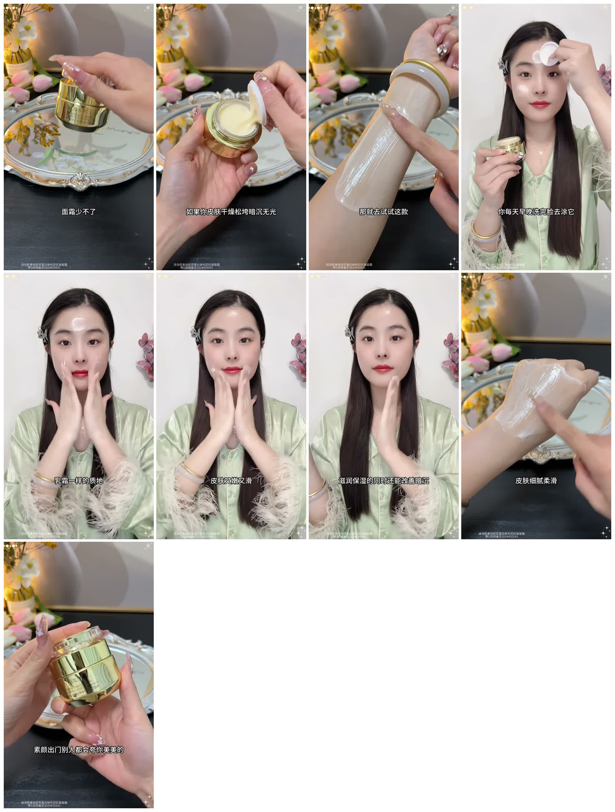
# 分镜脚本 + AI提示词｜23_7443075821184535866 - 平台：抖音 - 原链接：https://www.douyin.com/video/7443075821184535866 - 本地视频：/Users/mac/Desktop/视频素材/_中转/抖音_203713_7443075821184535866.mp4 - 时长：19.00 秒 - 抽帧规则：每 2 秒 1 帧 - 联系表：contact_sheet.jpg ## 使用说明 - 每个镜头按视频时间顺序排列。 - AI 提示词已按用户规范处理：以 `@xxx` 开头，产品/膏霜位置可复用 `@xxx`，不要求生成字幕，每条结尾明确不要字幕。 - 如需更精细版本，可基于 `frames/` 逐帧二次改写。 ## 分镜明细 ### 镜头 01｜约 00s｜开场钩子  画面描述：用近景快速建立产品/人物/使用场景，画面节奏干净直接，先给观众一个可感知的视觉记忆点。 分镜脚本：开场钩子：用近景快速建立产品/人物/使用场景，画面节奏干净直接，先给观众一个可感知的视觉记忆点。建议保持 1.5-2 秒节奏，动作不要过满，重点放在产品、手部和质感变化上。 AI提示词：@xxx广告开场近景，产品或手部动作进入画面，构图稳定，背景干净，第一秒抓住注意力，竖屏9:16，近景开场，镜头轻微推进，产品/膏霜位置使用@xxx，真实商业美妆短视频风格，高清细节，皮肤质感自然，光线柔和通透，色彩干净高级，背景不杂乱，动作连贯自然，负面：低清晰度、畸形手、过度磨皮、脏乱背景、文字水印、logo乱码、过曝、塑料感。整段视频不要出现任何字幕 ### 镜头 02｜约 02s｜开场钩子  画面描述：用近景快速建立产品/人物/使用场景，画面节奏干净直接，先给观众一个可感知的视觉记忆点。 分镜脚本：开场钩子：用近景快速建立产品/人物/使用场景，画面节奏干净直接，先给观众一个可感知的视觉记忆点。建议保持 1.5-2 秒节奏，动作不要过满，重点放在产品、手部和质感变化上。 AI提示词：@xxx广告开场近景，产品或手部动作进入画面，构图稳定，背景干净，第一秒抓住注意力，竖屏9:16，俯拍或侧拍，构图留白干净，产品/膏霜位置使用@xxx，真实商业美妆短视频风格，高清细节，皮肤质感自然，光线柔和通透，色彩干净高级，背景不杂乱，动作连贯自然，负面：低清晰度、畸形手、过度磨皮、脏乱背景、文字水印、logo乱码、过曝、塑料感。整段视频不要出现任何字幕 ### 镜头 03｜约 04s｜产品亮相  画面描述：镜头聚焦产品外观、瓶身、质地或包装细节，突出卖点物件本身。 分镜脚本：产品亮相：镜头聚焦产品外观、瓶身、质地或包装细节，突出卖点物件本身。建议保持 1.5-2 秒节奏，动作不要过满，重点放在产品、手部和质感变化上。 AI提示词：@xxx产品展示特写，瓶身/膏霜/包装细节清晰，商业棚拍质感，浅景深，干净高级背景，竖屏9:16，微距特写，浅景深，产品/膏霜位置使用@xxx，真实商业美妆短视频风格，高清细节，皮肤质感自然，光线柔和通透，色彩干净高级，背景不杂乱，动作连贯自然，负面：低清晰度、畸形手、过度磨皮、脏乱背景、文字水印、logo乱码、过曝、塑料感。整段视频不要出现任何字幕 ### 镜头 04｜约 06s｜动作演示  画面描述：通过手部拿取、打开、挤压、涂抹、展示等动作，把产品使用方式讲清楚。 分镜脚本：动作演示：通过手部拿取、打开、挤压、涂抹、展示等动作，把产品使用方式讲清楚。建议保持 1.5-2 秒节奏，动作不要过满，重点放在产品、手部和质感变化上。 AI提示词：@xxx手部操作特写，年轻女性白皙双手自然拿取并使用产品，动作柔和顺滑，真实生活化，竖屏9:16，中近景，轻微手持运动，产品/膏霜位置使用@xxx，真实商业美妆短视频风格，高清细节，皮肤质感自然，光线柔和通透，色彩干净高级，背景不杂乱，动作连贯自然，负面：低清晰度、畸形手、过度磨皮、脏乱背景、文字水印、logo乱码、过曝、塑料感。整段视频不要出现任何字幕 ### 镜头 05｜约 08s｜质地细节  画面描述：放大产品质地、颜色、光泽或上肤效果，突出“看得见”的感官体验。 分镜脚本：质地细节：放大产品质地、颜色、光泽或上肤效果，突出“看得见”的感官体验。建议保持 1.5-2 秒节奏，动作不要过满，重点放在产品、手部和质感变化上。 AI提示词：@xxx微距质地镜头，膏体/液体/粉质细腻可见，柔和高光，干净皮肤纹理，真实美妆广告质感，竖屏9:16，俯拍或侧拍，构图留白干净，产品/膏霜位置使用@xxx，真实商业美妆短视频风格，高清细节，皮肤质感自然，光线柔和通透，色彩干净高级，背景不杂乱，动作连贯自然，负面：低清晰度、畸形手、过度磨皮、脏乱背景、文字水印、logo乱码、过曝、塑料感。整段视频不要出现任何字幕 ### 镜头 06｜约 10s｜使用效果  画面描述：镜头转向脸部、手背、局部皮肤或场景效果，表现使用前后的氛围变化。 分镜脚本：使用效果：镜头转向脸部、手背、局部皮肤或场景效果，表现使用前后的氛围变化。建议保持 1.5-2 秒节奏，动作不要过满，重点放在产品、手部和质感变化上。 AI提示词：@xxx效果展示镜头，肤色干净通透，妆效自然，画面明亮柔和，人物状态精致不夸张，竖屏9:16，微距特写，浅景深，产品/膏霜位置使用@xxx，真实商业美妆短视频风格，高清细节，皮肤质感自然，光线柔和通透，色彩干净高级，背景不杂乱，动作连贯自然，负面：低清晰度、畸形手、过度磨皮、脏乱背景、文字水印、logo乱码、过曝、塑料感。整段视频不要出现任何字幕 ### 镜头 07｜约 12s｜氛围补充  画面描述：用环境、道具、花材、桌面、布景或生活方式镜头补足品牌调性。 分镜脚本：氛围补充：用环境、道具、花材、桌面、布景或生活方式镜头补足品牌调性。建议保持 1.5-2 秒节奏，动作不要过满，重点放在产品、手部和质感变化上。 AI提示词：@xxx生活方式氛围镜头，桌面陈列精致，道具简洁，暖色自然光，轻奢美妆视觉风格，竖屏9:16，中近景，轻微手持运动，产品/膏霜位置使用@xxx，真实商业美妆短视频风格，高清细节，皮肤质感自然，光线柔和通透，色彩干净高级，背景不杂乱，动作连贯自然，负面：低清晰度、畸形手、过度磨皮、脏乱背景、文字水印、logo乱码、过曝、塑料感。整段视频不要出现任何字幕 ### 镜头 08｜约 14s｜卖点强化  画面描述：回到核心动作或核心细节，重复强化产品记忆点，让画面更有转化感。 分镜脚本：卖点强化：回到核心动作或核心细节，重复强化产品记忆点，让画面更有转化感。建议保持 1.5-2 秒节奏，动作不要过满，重点放在产品、手部和质感变化上。 AI提示词：@xxx卖点强化特写，产品与使用动作同框，画面重点集中，清晰表现质感、颜色和使用体验，竖屏9:16，俯拍或侧拍，构图留白干净，产品/膏霜位置使用@xxx，真实商业美妆短视频风格，高清细节，皮肤质感自然，光线柔和通透，色彩干净高级，背景不杂乱，动作连贯自然，负面：低清晰度、畸形手、过度磨皮、脏乱背景、文字水印、logo乱码、过曝、塑料感。整段视频不要出现任何字幕 ### 镜头 09｜约 16s｜收尾定格  画面描述：用产品定格、人物满意状态或整套陈列结束，形成干净的广告收尾。 分镜脚本：收尾定格：用产品定格、人物满意状态或整套陈列结束，形成干净的广告收尾。建议保持 1.5-2 秒节奏，动作不要过满，重点放在产品、手部和质感变化上。 AI提示词：@xxx广告收尾定格，产品居中摆放或手持展示，构图完整，高级干净，适合短视频结尾，竖屏9:16，稳定定格，适合结尾停留，产品/膏霜位置使用@xxx，真实商业美妆短视频风格，高清细节，皮肤质感自然，光线柔和通透，色彩干净高级，背景不杂乱，动作连贯自然，负面：低清晰度、畸形手、过度磨皮、脏乱背景、文字水印、logo乱码、过曝、塑料感。整段视频不要出现任何字幕
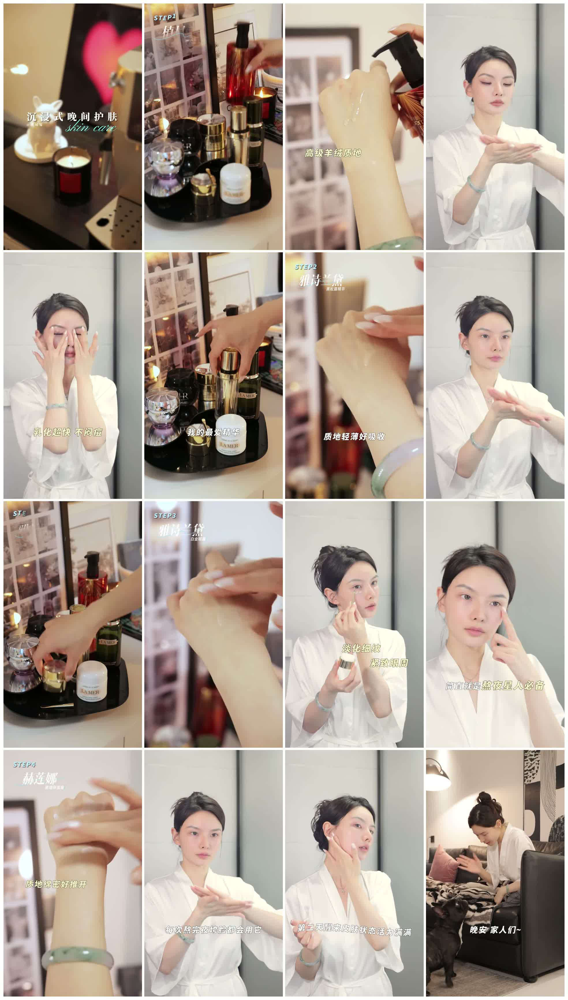
# 分镜脚本 + AI提示词｜24_7335751617381289226 - 平台：抖音 - 原链接：https://www.douyin.com/video/7335751617381289226 - 本地视频：/Users/mac/Desktop/视频素材/_中转/抖音_203726_7335751617381289226.mp4 - 时长：32.32 秒 - 抽帧规则：每 2 秒 1 帧 - 联系表：contact_sheet.jpg ## 使用说明 - 每个镜头按视频时间顺序排列。 - AI 提示词已按用户规范处理：以 `@xxx` 开头，产品/膏霜位置可复用 `@xxx`，不要求生成字幕，每条结尾明确不要字幕。 - 如需更精细版本，可基于 `frames/` 逐帧二次改写。 ## 分镜明细 ### 镜头 01｜约 00s｜开场钩子  画面描述：用近景快速建立产品/人物/使用场景，画面节奏干净直接，先给观众一个可感知的视觉记忆点。 分镜脚本：开场钩子：用近景快速建立产品/人物/使用场景，画面节奏干净直接，先给观众一个可感知的视觉记忆点。建议保持 1.5-2 秒节奏，动作不要过满，重点放在产品、手部和质感变化上。 AI提示词：@xxx广告开场近景，产品或手部动作进入画面，构图稳定，背景干净，第一秒抓住注意力，竖屏9:16，近景开场，镜头轻微推进，产品/膏霜位置使用@xxx，真实商业美妆短视频风格，高清细节，皮肤质感自然，光线柔和通透，色彩干净高级，背景不杂乱，动作连贯自然，负面：低清晰度、畸形手、过度磨皮、脏乱背景、文字水印、logo乱码、过曝、塑料感。整段视频不要出现任何字幕 ### 镜头 02｜约 02s｜开场钩子  画面描述：用近景快速建立产品/人物/使用场景，画面节奏干净直接，先给观众一个可感知的视觉记忆点。 分镜脚本：开场钩子：用近景快速建立产品/人物/使用场景，画面节奏干净直接，先给观众一个可感知的视觉记忆点。建议保持 1.5-2 秒节奏，动作不要过满，重点放在产品、手部和质感变化上。 AI提示词：@xxx广告开场近景，产品或手部动作进入画面，构图稳定，背景干净，第一秒抓住注意力，竖屏9:16，俯拍或侧拍，构图留白干净，产品/膏霜位置使用@xxx，真实商业美妆短视频风格，高清细节，皮肤质感自然，光线柔和通透，色彩干净高级，背景不杂乱，动作连贯自然，负面：低清晰度、畸形手、过度磨皮、脏乱背景、文字水印、logo乱码、过曝、塑料感。整段视频不要出现任何字幕 ### 镜头 03｜约 04s｜产品亮相  画面描述：镜头聚焦产品外观、瓶身、质地或包装细节，突出卖点物件本身。 分镜脚本：产品亮相：镜头聚焦产品外观、瓶身、质地或包装细节，突出卖点物件本身。建议保持 1.5-2 秒节奏，动作不要过满，重点放在产品、手部和质感变化上。 AI提示词：@xxx产品展示特写，瓶身/膏霜/包装细节清晰，商业棚拍质感，浅景深，干净高级背景，竖屏9:16，微距特写，浅景深，产品/膏霜位置使用@xxx，真实商业美妆短视频风格，高清细节，皮肤质感自然，光线柔和通透，色彩干净高级，背景不杂乱，动作连贯自然，负面：低清晰度、畸形手、过度磨皮、脏乱背景、文字水印、logo乱码、过曝、塑料感。整段视频不要出现任何字幕 ### 镜头 04｜约 06s｜产品亮相  画面描述：镜头聚焦产品外观、瓶身、质地或包装细节，突出卖点物件本身。 分镜脚本：产品亮相：镜头聚焦产品外观、瓶身、质地或包装细节，突出卖点物件本身。建议保持 1.5-2 秒节奏，动作不要过满，重点放在产品、手部和质感变化上。 AI提示词：@xxx产品展示特写，瓶身/膏霜/包装细节清晰，商业棚拍质感，浅景深，干净高级背景，竖屏9:16，中近景，轻微手持运动，产品/膏霜位置使用@xxx，真实商业美妆短视频风格，高清细节，皮肤质感自然，光线柔和通透，色彩干净高级，背景不杂乱，动作连贯自然，负面：低清晰度、畸形手、过度磨皮、脏乱背景、文字水印、logo乱码、过曝、塑料感。整段视频不要出现任何字幕 ### 镜头 05｜约 08s｜动作演示  画面描述：通过手部拿取、打开、挤压、涂抹、展示等动作，把产品使用方式讲清楚。 分镜脚本：动作演示：通过手部拿取、打开、挤压、涂抹、展示等动作，把产品使用方式讲清楚。建议保持 1.5-2 秒节奏，动作不要过满，重点放在产品、手部和质感变化上。 AI提示词：@xxx手部操作特写，年轻女性白皙双手自然拿取并使用产品，动作柔和顺滑，真实生活化，竖屏9:16，俯拍或侧拍，构图留白干净，产品/膏霜位置使用@xxx，真实商业美妆短视频风格，高清细节，皮肤质感自然，光线柔和通透，色彩干净高级，背景不杂乱，动作连贯自然，负面：低清晰度、畸形手、过度磨皮、脏乱背景、文字水印、logo乱码、过曝、塑料感。整段视频不要出现任何字幕 ### 镜头 06｜约 10s｜动作演示  画面描述：通过手部拿取、打开、挤压、涂抹、展示等动作，把产品使用方式讲清楚。 分镜脚本：动作演示：通过手部拿取、打开、挤压、涂抹、展示等动作，把产品使用方式讲清楚。建议保持 1.5-2 秒节奏，动作不要过满，重点放在产品、手部和质感变化上。 AI提示词：@xxx手部操作特写，年轻女性白皙双手自然拿取并使用产品，动作柔和顺滑，真实生活化，竖屏9:16，微距特写，浅景深，产品/膏霜位置使用@xxx，真实商业美妆短视频风格，高清细节，皮肤质感自然，光线柔和通透，色彩干净高级，背景不杂乱，动作连贯自然，负面：低清晰度、畸形手、过度磨皮、脏乱背景、文字水印、logo乱码、过曝、塑料感。整段视频不要出现任何字幕 ### 镜头 07｜约 12s｜质地细节  画面描述：放大产品质地、颜色、光泽或上肤效果，突出“看得见”的感官体验。 分镜脚本：质地细节：放大产品质地、颜色、光泽或上肤效果，突出“看得见”的感官体验。建议保持 1.5-2 秒节奏，动作不要过满，重点放在产品、手部和质感变化上。 AI提示词：@xxx微距质地镜头，膏体/液体/粉质细腻可见，柔和高光，干净皮肤纹理，真实美妆广告质感，竖屏9:16，中近景，轻微手持运动，产品/膏霜位置使用@xxx，真实商业美妆短视频风格，高清细节，皮肤质感自然，光线柔和通透，色彩干净高级，背景不杂乱，动作连贯自然，负面：低清晰度、畸形手、过度磨皮、脏乱背景、文字水印、logo乱码、过曝、塑料感。整段视频不要出现任何字幕 ### 镜头 08｜约 14s｜质地细节  画面描述：放大产品质地、颜色、光泽或上肤效果，突出“看得见”的感官体验。 分镜脚本：质地细节：放大产品质地、颜色、光泽或上肤效果，突出“看得见”的感官体验。建议保持 1.5-2 秒节奏，动作不要过满，重点放在产品、手部和质感变化上。 AI提示词：@xxx微距质地镜头，膏体/液体/粉质细腻可见，柔和高光，干净皮肤纹理，真实美妆广告质感，竖屏9:16，俯拍或侧拍，构图留白干净，产品/膏霜位置使用@xxx，真实商业美妆短视频风格，高清细节，皮肤质感自然，光线柔和通透，色彩干净高级，背景不杂乱，动作连贯自然，负面：低清晰度、畸形手、过度磨皮、脏乱背景、文字水印、logo乱码、过曝、塑料感。整段视频不要出现任何字幕 ### 镜头 09｜约 16s｜使用效果  画面描述：镜头转向脸部、手背、局部皮肤或场景效果，表现使用前后的氛围变化。 分镜脚本：使用效果：镜头转向脸部、手背、局部皮肤或场景效果，表现使用前后的氛围变化。建议保持 1.5-2 秒节奏，动作不要过满，重点放在产品、手部和质感变化上。 AI提示词：@xxx效果展示镜头，肤色干净通透，妆效自然，画面明亮柔和，人物状态精致不夸张，竖屏9:16，微距特写，浅景深，产品/膏霜位置使用@xxx，真实商业美妆短视频风格，高清细节，皮肤质感自然，光线柔和通透，色彩干净高级，背景不杂乱，动作连贯自然，负面：低清晰度、畸形手、过度磨皮、脏乱背景、文字水印、logo乱码、过曝、塑料感。整段视频不要出现任何字幕 ### 镜头 10｜约 18s｜使用效果  画面描述：镜头转向脸部、手背、局部皮肤或场景效果，表现使用前后的氛围变化。 分镜脚本：使用效果：镜头转向脸部、手背、局部皮肤或场景效果，表现使用前后的氛围变化。建议保持 1.5-2 秒节奏，动作不要过满，重点放在产品、手部和质感变化上。 AI提示词：@xxx效果展示镜头，肤色干净通透，妆效自然，画面明亮柔和，人物状态精致不夸张，竖屏9:16，中近景，轻微手持运动，产品/膏霜位置使用@xxx，真实商业美妆短视频风格，高清细节，皮肤质感自然，光线柔和通透，色彩干净高级，背景不杂乱，动作连贯自然，负面：低清晰度、畸形手、过度磨皮、脏乱背景、文字水印、logo乱码、过曝、塑料感。整段视频不要出现任何字幕 ### 镜头 11｜约 20s｜氛围补充  画面描述：用环境、道具、花材、桌面、布景或生活方式镜头补足品牌调性。 分镜脚本：氛围补充：用环境、道具、花材、桌面、布景或生活方式镜头补足品牌调性。建议保持 1.5-2 秒节奏，动作不要过满，重点放在产品、手部和质感变化上。 AI提示词：@xxx生活方式氛围镜头，桌面陈列精致，道具简洁，暖色自然光，轻奢美妆视觉风格，竖屏9:16，俯拍或侧拍，构图留白干净，产品/膏霜位置使用@xxx，真实商业美妆短视频风格，高清细节，皮肤质感自然，光线柔和通透，色彩干净高级，背景不杂乱，动作连贯自然，负面：低清晰度、畸形手、过度磨皮、脏乱背景、文字水印、logo乱码、过曝、塑料感。整段视频不要出现任何字幕 ### 镜头 12｜约 22s｜氛围补充  画面描述：用环境、道具、花材、桌面、布景或生活方式镜头补足品牌调性。 分镜脚本：氛围补充：用环境、道具、花材、桌面、布景或生活方式镜头补足品牌调性。建议保持 1.5-2 秒节奏，动作不要过满，重点放在产品、手部和质感变化上。 AI提示词：@xxx生活方式氛围镜头，桌面陈列精致，道具简洁，暖色自然光，轻奢美妆视觉风格，竖屏9:16，微距特写，浅景深，产品/膏霜位置使用@xxx，真实商业美妆短视频风格，高清细节，皮肤质感自然，光线柔和通透，色彩干净高级，背景不杂乱，动作连贯自然，负面：低清晰度、畸形手、过度磨皮、脏乱背景、文字水印、logo乱码、过曝、塑料感。整段视频不要出现任何字幕 ### 镜头 13｜约 24s｜卖点强化  画面描述：回到核心动作或核心细节，重复强化产品记忆点，让画面更有转化感。 分镜脚本：卖点强化：回到核心动作或核心细节，重复强化产品记忆点，让画面更有转化感。建议保持 1.5-2 秒节奏，动作不要过满，重点放在产品、手部和质感变化上。 AI提示词：@xxx卖点强化特写，产品与使用动作同框，画面重点集中，清晰表现质感、颜色和使用体验，竖屏9:16，中近景，轻微手持运动，产品/膏霜位置使用@xxx，真实商业美妆短视频风格，高清细节，皮肤质感自然，光线柔和通透，色彩干净高级，背景不杂乱，动作连贯自然，负面：低清晰度、畸形手、过度磨皮、脏乱背景、文字水印、logo乱码、过曝、塑料感。整段视频不要出现任何字幕 ### 镜头 14｜约 26s｜卖点强化  画面描述：回到核心动作或核心细节，重复强化产品记忆点，让画面更有转化感。 分镜脚本：卖点强化：回到核心动作或核心细节，重复强化产品记忆点，让画面更有转化感。建议保持 1.5-2 秒节奏，动作不要过满，重点放在产品、手部和质感变化上。 AI提示词：@xxx卖点强化特写，产品与使用动作同框，画面重点集中，清晰表现质感、颜色和使用体验，竖屏9:16，俯拍或侧拍，构图留白干净，产品/膏霜位置使用@xxx，真实商业美妆短视频风格，高清细节，皮肤质感自然，光线柔和通透，色彩干净高级，背景不杂乱，动作连贯自然，负面：低清晰度、畸形手、过度磨皮、脏乱背景、文字水印、logo乱码、过曝、塑料感。整段视频不要出现任何字幕 ### 镜头 15｜约 28s｜收尾定格  画面描述：用产品定格、人物满意状态或整套陈列结束，形成干净的广告收尾。 分镜脚本：收尾定格：用产品定格、人物满意状态或整套陈列结束，形成干净的广告收尾。建议保持 1.5-2 秒节奏，动作不要过满，重点放在产品、手部和质感变化上。 AI提示词：@xxx广告收尾定格，产品居中摆放或手持展示，构图完整，高级干净，适合短视频结尾，竖屏9:16，微距特写，浅景深，产品/膏霜位置使用@xxx，真实商业美妆短视频风格，高清细节，皮肤质感自然，光线柔和通透，色彩干净高级，背景不杂乱，动作连贯自然，负面：低清晰度、畸形手、过度磨皮、脏乱背景、文字水印、logo乱码、过曝、塑料感。整段视频不要出现任何字幕 ### 镜头 16｜约 30s｜收尾定格  画面描述：用产品定格、人物满意状态或整套陈列结束，形成干净的广告收尾。 分镜脚本：收尾定格：用产品定格、人物满意状态或整套陈列结束，形成干净的广告收尾。建议保持 1.5-2 秒节奏，动作不要过满，重点放在产品、手部和质感变化上。 AI提示词：@xxx广告收尾定格，产品居中摆放或手持展示，构图完整，高级干净，适合短视频结尾，竖屏9:16，稳定定格，适合结尾停留，产品/膏霜位置使用@xxx，真实商业美妆短视频风格，高清细节，皮肤质感自然，光线柔和通透，色彩干净高级，背景不杂乱，动作连贯自然，负面：低清晰度、畸形手、过度磨皮、脏乱背景、文字水印、logo乱码、过曝、塑料感。整段视频不要出现任何字幕
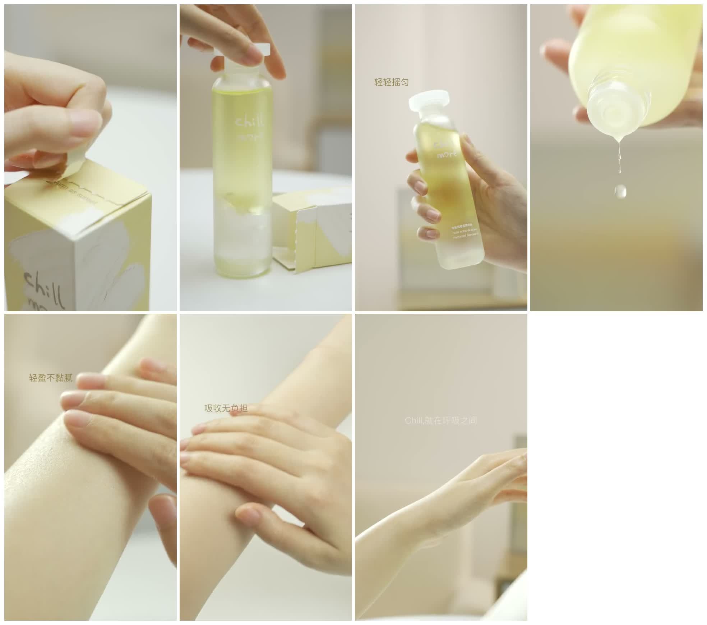
# 分镜脚本 + AI提示词｜25_7147527344020933921 - 平台：抖音 - 原链接：https://www.douyin.com/video/7147527344020933921 - 本地视频：/Users/mac/Desktop/视频素材/_中转/抖音_203738_7147527344020933921.mp4 - 时长：14.07 秒 - 抽帧规则：每 2 秒 1 帧 - 联系表：contact_sheet.jpg ## 使用说明 - 每个镜头按视频时间顺序排列。 - AI 提示词已按用户规范处理：以 `@xxx` 开头，产品/膏霜位置可复用 `@xxx`，不要求生成字幕，每条结尾明确不要字幕。 - 如需更精细版本，可基于 `frames/` 逐帧二次改写。 ## 分镜明细 ### 镜头 01｜约 00s｜开场钩子  画面描述：用近景快速建立产品/人物/使用场景，画面节奏干净直接，先给观众一个可感知的视觉记忆点。 分镜脚本：开场钩子：用近景快速建立产品/人物/使用场景，画面节奏干净直接，先给观众一个可感知的视觉记忆点。建议保持 1.5-2 秒节奏，动作不要过满，重点放在产品、手部和质感变化上。 AI提示词：@xxx广告开场近景，产品或手部动作进入画面，构图稳定，背景干净，第一秒抓住注意力，竖屏9:16，近景开场，镜头轻微推进，产品/膏霜位置使用@xxx，真实商业美妆短视频风格，高清细节，皮肤质感自然，光线柔和通透，色彩干净高级，背景不杂乱，动作连贯自然，负面：低清晰度、畸形手、过度磨皮、脏乱背景、文字水印、logo乱码、过曝、塑料感。整段视频不要出现任何字幕 ### 镜头 02｜约 02s｜产品亮相  画面描述：镜头聚焦产品外观、瓶身、质地或包装细节，突出卖点物件本身。 分镜脚本：产品亮相：镜头聚焦产品外观、瓶身、质地或包装细节，突出卖点物件本身。建议保持 1.5-2 秒节奏，动作不要过满，重点放在产品、手部和质感变化上。 AI提示词：@xxx产品展示特写，瓶身/膏霜/包装细节清晰，商业棚拍质感，浅景深，干净高级背景，竖屏9:16，俯拍或侧拍，构图留白干净，产品/膏霜位置使用@xxx，真实商业美妆短视频风格，高清细节，皮肤质感自然，光线柔和通透，色彩干净高级，背景不杂乱，动作连贯自然，负面：低清晰度、畸形手、过度磨皮、脏乱背景、文字水印、logo乱码、过曝、塑料感。整段视频不要出现任何字幕 ### 镜头 03｜约 04s｜动作演示  画面描述：通过手部拿取、打开、挤压、涂抹、展示等动作，把产品使用方式讲清楚。 分镜脚本：动作演示：通过手部拿取、打开、挤压、涂抹、展示等动作，把产品使用方式讲清楚。建议保持 1.5-2 秒节奏，动作不要过满，重点放在产品、手部和质感变化上。 AI提示词：@xxx手部操作特写，年轻女性白皙双手自然拿取并使用产品，动作柔和顺滑，真实生活化，竖屏9:16，微距特写，浅景深，产品/膏霜位置使用@xxx，真实商业美妆短视频风格，高清细节，皮肤质感自然，光线柔和通透，色彩干净高级，背景不杂乱，动作连贯自然，负面：低清晰度、畸形手、过度磨皮、脏乱背景、文字水印、logo乱码、过曝、塑料感。整段视频不要出现任何字幕 ### 镜头 04｜约 06s｜质地细节  画面描述：放大产品质地、颜色、光泽或上肤效果，突出“看得见”的感官体验。 分镜脚本：质地细节：放大产品质地、颜色、光泽或上肤效果，突出“看得见”的感官体验。建议保持 1.5-2 秒节奏，动作不要过满，重点放在产品、手部和质感变化上。 AI提示词：@xxx微距质地镜头，膏体/液体/粉质细腻可见，柔和高光，干净皮肤纹理，真实美妆广告质感，竖屏9:16，中近景，轻微手持运动，产品/膏霜位置使用@xxx，真实商业美妆短视频风格，高清细节，皮肤质感自然，光线柔和通透，色彩干净高级，背景不杂乱，动作连贯自然，负面：低清晰度、畸形手、过度磨皮、脏乱背景、文字水印、logo乱码、过曝、塑料感。整段视频不要出现任何字幕 ### 镜头 05｜约 08s｜使用效果  画面描述：镜头转向脸部、手背、局部皮肤或场景效果，表现使用前后的氛围变化。 分镜脚本：使用效果：镜头转向脸部、手背、局部皮肤或场景效果，表现使用前后的氛围变化。建议保持 1.5-2 秒节奏，动作不要过满，重点放在产品、手部和质感变化上。 AI提示词：@xxx效果展示镜头，肤色干净通透，妆效自然，画面明亮柔和，人物状态精致不夸张，竖屏9:16，俯拍或侧拍，构图留白干净，产品/膏霜位置使用@xxx，真实商业美妆短视频风格，高清细节，皮肤质感自然，光线柔和通透，色彩干净高级，背景不杂乱，动作连贯自然，负面：低清晰度、畸形手、过度磨皮、脏乱背景、文字水印、logo乱码、过曝、塑料感。整段视频不要出现任何字幕 ### 镜头 06｜约 10s｜氛围补充  画面描述：用环境、道具、花材、桌面、布景或生活方式镜头补足品牌调性。 分镜脚本：氛围补充：用环境、道具、花材、桌面、布景或生活方式镜头补足品牌调性。建议保持 1.5-2 秒节奏，动作不要过满，重点放在产品、手部和质感变化上。 AI提示词：@xxx生活方式氛围镜头，桌面陈列精致，道具简洁，暖色自然光，轻奢美妆视觉风格，竖屏9:16，微距特写，浅景深，产品/膏霜位置使用@xxx，真实商业美妆短视频风格，高清细节，皮肤质感自然，光线柔和通透，色彩干净高级，背景不杂乱，动作连贯自然，负面：低清晰度、畸形手、过度磨皮、脏乱背景、文字水印、logo乱码、过曝、塑料感。整段视频不要出现任何字幕 ### 镜头 07｜约 12s｜卖点强化  画面描述：回到核心动作或核心细节，重复强化产品记忆点，让画面更有转化感。 分镜脚本：卖点强化：回到核心动作或核心细节，重复强化产品记忆点，让画面更有转化感。建议保持 1.5-2 秒节奏，动作不要过满，重点放在产品、手部和质感变化上。 AI提示词：@xxx卖点强化特写，产品与使用动作同框，画面重点集中，清晰表现质感、颜色和使用体验，竖屏9:16，稳定定格，适合结尾停留，产品/膏霜位置使用@xxx，真实商业美妆短视频风格，高清细节，皮肤质感自然，光线柔和通透，色彩干净高级，背景不杂乱，动作连贯自然，负面：低清晰度、畸形手、过度磨皮、脏乱背景、文字水印、logo乱码、过曝、塑料感。整段视频不要出现任何字幕
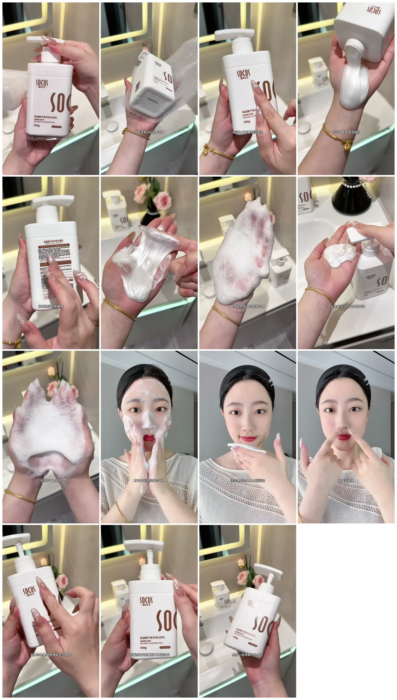
# 分镜脚本 + AI提示词｜26_7643340188428801893 - 平台：抖音 - 原链接：https://www.douyin.com/video/7643340188428801893 - 本地视频：/Users/mac/Desktop/视频素材/_中转/抖音_203751_7643340188428801893.mp4 - 时长：30.35 秒 - 抽帧规则：每 2 秒 1 帧 - 联系表：contact_sheet.jpg ## 使用说明 - 每个镜头按视频时间顺序排列。 - AI 提示词已按用户规范处理：以 `@xxx` 开头，产品/膏霜位置可复用 `@xxx`，不要求生成字幕，每条结尾明确不要字幕。 - 如需更精细版本，可基于 `frames/` 逐帧二次改写。 ## 分镜明细 ### 镜头 01｜约 00s｜开场钩子  画面描述：用近景快速建立产品/人物/使用场景，画面节奏干净直接，先给观众一个可感知的视觉记忆点。 分镜脚本：开场钩子：用近景快速建立产品/人物/使用场景，画面节奏干净直接，先给观众一个可感知的视觉记忆点。建议保持 1.5-2 秒节奏，动作不要过满，重点放在产品、手部和质感变化上。 AI提示词：@xxx广告开场近景，产品或手部动作进入画面，构图稳定，背景干净，第一秒抓住注意力，竖屏9:16，近景开场，镜头轻微推进，产品/膏霜位置使用@xxx，真实商业美妆短视频风格，高清细节，皮肤质感自然，光线柔和通透，色彩干净高级，背景不杂乱，动作连贯自然，负面：低清晰度、畸形手、过度磨皮、脏乱背景、文字水印、logo乱码、过曝、塑料感。整段视频不要出现任何字幕 ### 镜头 02｜约 02s｜开场钩子  画面描述：用近景快速建立产品/人物/使用场景，画面节奏干净直接，先给观众一个可感知的视觉记忆点。 分镜脚本：开场钩子：用近景快速建立产品/人物/使用场景，画面节奏干净直接，先给观众一个可感知的视觉记忆点。建议保持 1.5-2 秒节奏，动作不要过满，重点放在产品、手部和质感变化上。 AI提示词：@xxx广告开场近景，产品或手部动作进入画面，构图稳定，背景干净，第一秒抓住注意力，竖屏9:16，俯拍或侧拍，构图留白干净，产品/膏霜位置使用@xxx，真实商业美妆短视频风格，高清细节，皮肤质感自然，光线柔和通透，色彩干净高级，背景不杂乱，动作连贯自然，负面：低清晰度、畸形手、过度磨皮、脏乱背景、文字水印、logo乱码、过曝、塑料感。整段视频不要出现任何字幕 ### 镜头 03｜约 04s｜产品亮相  画面描述：镜头聚焦产品外观、瓶身、质地或包装细节，突出卖点物件本身。 分镜脚本：产品亮相：镜头聚焦产品外观、瓶身、质地或包装细节，突出卖点物件本身。建议保持 1.5-2 秒节奏，动作不要过满，重点放在产品、手部和质感变化上。 AI提示词：@xxx产品展示特写，瓶身/膏霜/包装细节清晰，商业棚拍质感，浅景深，干净高级背景，竖屏9:16，微距特写，浅景深，产品/膏霜位置使用@xxx，真实商业美妆短视频风格，高清细节，皮肤质感自然，光线柔和通透，色彩干净高级，背景不杂乱，动作连贯自然，负面：低清晰度、畸形手、过度磨皮、脏乱背景、文字水印、logo乱码、过曝、塑料感。整段视频不要出现任何字幕 ### 镜头 04｜约 06s｜产品亮相  画面描述：镜头聚焦产品外观、瓶身、质地或包装细节，突出卖点物件本身。 分镜脚本：产品亮相：镜头聚焦产品外观、瓶身、质地或包装细节，突出卖点物件本身。建议保持 1.5-2 秒节奏，动作不要过满，重点放在产品、手部和质感变化上。 AI提示词：@xxx产品展示特写，瓶身/膏霜/包装细节清晰，商业棚拍质感，浅景深，干净高级背景，竖屏9:16，中近景，轻微手持运动，产品/膏霜位置使用@xxx，真实商业美妆短视频风格，高清细节，皮肤质感自然，光线柔和通透，色彩干净高级，背景不杂乱，动作连贯自然，负面：低清晰度、畸形手、过度磨皮、脏乱背景、文字水印、logo乱码、过曝、塑料感。整段视频不要出现任何字幕 ### 镜头 05｜约 08s｜动作演示  画面描述：通过手部拿取、打开、挤压、涂抹、展示等动作，把产品使用方式讲清楚。 分镜脚本：动作演示：通过手部拿取、打开、挤压、涂抹、展示等动作，把产品使用方式讲清楚。建议保持 1.5-2 秒节奏，动作不要过满，重点放在产品、手部和质感变化上。 AI提示词：@xxx手部操作特写，年轻女性白皙双手自然拿取并使用产品，动作柔和顺滑，真实生活化，竖屏9:16，俯拍或侧拍，构图留白干净，产品/膏霜位置使用@xxx，真实商业美妆短视频风格，高清细节，皮肤质感自然，光线柔和通透，色彩干净高级，背景不杂乱，动作连贯自然，负面：低清晰度、畸形手、过度磨皮、脏乱背景、文字水印、logo乱码、过曝、塑料感。整段视频不要出现任何字幕 ### 镜头 06｜约 10s｜动作演示  画面描述：通过手部拿取、打开、挤压、涂抹、展示等动作，把产品使用方式讲清楚。 分镜脚本：动作演示：通过手部拿取、打开、挤压、涂抹、展示等动作，把产品使用方式讲清楚。建议保持 1.5-2 秒节奏，动作不要过满，重点放在产品、手部和质感变化上。 AI提示词：@xxx手部操作特写，年轻女性白皙双手自然拿取并使用产品，动作柔和顺滑，真实生活化，竖屏9:16，微距特写，浅景深，产品/膏霜位置使用@xxx，真实商业美妆短视频风格，高清细节，皮肤质感自然，光线柔和通透，色彩干净高级，背景不杂乱，动作连贯自然，负面：低清晰度、畸形手、过度磨皮、脏乱背景、文字水印、logo乱码、过曝、塑料感。整段视频不要出现任何字幕 ### 镜头 07｜约 12s｜质地细节  画面描述：放大产品质地、颜色、光泽或上肤效果，突出“看得见”的感官体验。 分镜脚本：质地细节：放大产品质地、颜色、光泽或上肤效果，突出“看得见”的感官体验。建议保持 1.5-2 秒节奏，动作不要过满，重点放在产品、手部和质感变化上。 AI提示词：@xxx微距质地镜头，膏体/液体/粉质细腻可见，柔和高光，干净皮肤纹理，真实美妆广告质感，竖屏9:16，中近景，轻微手持运动，产品/膏霜位置使用@xxx，真实商业美妆短视频风格，高清细节，皮肤质感自然，光线柔和通透，色彩干净高级，背景不杂乱，动作连贯自然，负面：低清晰度、畸形手、过度磨皮、脏乱背景、文字水印、logo乱码、过曝、塑料感。整段视频不要出现任何字幕 ### 镜头 08｜约 14s｜质地细节  画面描述：放大产品质地、颜色、光泽或上肤效果，突出“看得见”的感官体验。 分镜脚本：质地细节：放大产品质地、颜色、光泽或上肤效果，突出“看得见”的感官体验。建议保持 1.5-2 秒节奏，动作不要过满，重点放在产品、手部和质感变化上。 AI提示词：@xxx微距质地镜头，膏体/液体/粉质细腻可见，柔和高光，干净皮肤纹理，真实美妆广告质感，竖屏9:16，俯拍或侧拍，构图留白干净，产品/膏霜位置使用@xxx，真实商业美妆短视频风格，高清细节，皮肤质感自然，光线柔和通透，色彩干净高级，背景不杂乱，动作连贯自然，负面：低清晰度、畸形手、过度磨皮、脏乱背景、文字水印、logo乱码、过曝、塑料感。整段视频不要出现任何字幕 ### 镜头 09｜约 16s｜使用效果  画面描述：镜头转向脸部、手背、局部皮肤或场景效果，表现使用前后的氛围变化。 分镜脚本：使用效果：镜头转向脸部、手背、局部皮肤或场景效果，表现使用前后的氛围变化。建议保持 1.5-2 秒节奏，动作不要过满，重点放在产品、手部和质感变化上。 AI提示词：@xxx效果展示镜头，肤色干净通透，妆效自然，画面明亮柔和，人物状态精致不夸张，竖屏9:16，微距特写，浅景深，产品/膏霜位置使用@xxx，真实商业美妆短视频风格，高清细节，皮肤质感自然，光线柔和通透，色彩干净高级，背景不杂乱，动作连贯自然，负面：低清晰度、畸形手、过度磨皮、脏乱背景、文字水印、logo乱码、过曝、塑料感。整段视频不要出现任何字幕 ### 镜头 10｜约 18s｜使用效果  画面描述：镜头转向脸部、手背、局部皮肤或场景效果，表现使用前后的氛围变化。 分镜脚本：使用效果：镜头转向脸部、手背、局部皮肤或场景效果，表现使用前后的氛围变化。建议保持 1.5-2 秒节奏，动作不要过满，重点放在产品、手部和质感变化上。 AI提示词：@xxx效果展示镜头，肤色干净通透，妆效自然，画面明亮柔和，人物状态精致不夸张，竖屏9:16，中近景，轻微手持运动，产品/膏霜位置使用@xxx，真实商业美妆短视频风格，高清细节，皮肤质感自然，光线柔和通透，色彩干净高级，背景不杂乱，动作连贯自然，负面：低清晰度、畸形手、过度磨皮、脏乱背景、文字水印、logo乱码、过曝、塑料感。整段视频不要出现任何字幕 ### 镜头 11｜约 20s｜氛围补充  画面描述：用环境、道具、花材、桌面、布景或生活方式镜头补足品牌调性。 分镜脚本：氛围补充：用环境、道具、花材、桌面、布景或生活方式镜头补足品牌调性。建议保持 1.5-2 秒节奏，动作不要过满，重点放在产品、手部和质感变化上。 AI提示词：@xxx生活方式氛围镜头，桌面陈列精致，道具简洁，暖色自然光，轻奢美妆视觉风格，竖屏9:16，俯拍或侧拍，构图留白干净，产品/膏霜位置使用@xxx，真实商业美妆短视频风格，高清细节，皮肤质感自然，光线柔和通透，色彩干净高级，背景不杂乱，动作连贯自然，负面：低清晰度、畸形手、过度磨皮、脏乱背景、文字水印、logo乱码、过曝、塑料感。整段视频不要出现任何字幕 ### 镜头 12｜约 22s｜氛围补充  画面描述：用环境、道具、花材、桌面、布景或生活方式镜头补足品牌调性。 分镜脚本：氛围补充：用环境、道具、花材、桌面、布景或生活方式镜头补足品牌调性。建议保持 1.5-2 秒节奏，动作不要过满，重点放在产品、手部和质感变化上。 AI提示词：@xxx生活方式氛围镜头，桌面陈列精致，道具简洁，暖色自然光，轻奢美妆视觉风格，竖屏9:16，微距特写，浅景深，产品/膏霜位置使用@xxx，真实商业美妆短视频风格，高清细节，皮肤质感自然，光线柔和通透，色彩干净高级，背景不杂乱，动作连贯自然，负面：低清晰度、畸形手、过度磨皮、脏乱背景、文字水印、logo乱码、过曝、塑料感。整段视频不要出现任何字幕 ### 镜头 13｜约 24s｜卖点强化  画面描述：回到核心动作或核心细节，重复强化产品记忆点，让画面更有转化感。 分镜脚本：卖点强化：回到核心动作或核心细节，重复强化产品记忆点，让画面更有转化感。建议保持 1.5-2 秒节奏，动作不要过满，重点放在产品、手部和质感变化上。 AI提示词：@xxx卖点强化特写，产品与使用动作同框，画面重点集中，清晰表现质感、颜色和使用体验，竖屏9:16，中近景，轻微手持运动，产品/膏霜位置使用@xxx，真实商业美妆短视频风格，高清细节，皮肤质感自然，光线柔和通透，色彩干净高级，背景不杂乱，动作连贯自然，负面：低清晰度、畸形手、过度磨皮、脏乱背景、文字水印、logo乱码、过曝、塑料感。整段视频不要出现任何字幕 ### 镜头 14｜约 26s｜卖点强化  画面描述：回到核心动作或核心细节，重复强化产品记忆点，让画面更有转化感。 分镜脚本：卖点强化：回到核心动作或核心细节，重复强化产品记忆点，让画面更有转化感。建议保持 1.5-2 秒节奏，动作不要过满，重点放在产品、手部和质感变化上。 AI提示词：@xxx卖点强化特写，产品与使用动作同框，画面重点集中，清晰表现质感、颜色和使用体验，竖屏9:16，俯拍或侧拍，构图留白干净，产品/膏霜位置使用@xxx，真实商业美妆短视频风格，高清细节，皮肤质感自然，光线柔和通透，色彩干净高级，背景不杂乱，动作连贯自然，负面：低清晰度、畸形手、过度磨皮、脏乱背景、文字水印、logo乱码、过曝、塑料感。整段视频不要出现任何字幕 ### 镜头 15｜约 28s｜收尾定格  画面描述：用产品定格、人物满意状态或整套陈列结束，形成干净的广告收尾。 分镜脚本：收尾定格：用产品定格、人物满意状态或整套陈列结束，形成干净的广告收尾。建议保持 1.5-2 秒节奏，动作不要过满，重点放在产品、手部和质感变化上。 AI提示词：@xxx广告收尾定格，产品居中摆放或手持展示，构图完整，高级干净，适合短视频结尾，竖屏9:16，稳定定格，适合结尾停留，产品/膏霜位置使用@xxx，真实商业美妆短视频风格，高清细节，皮肤质感自然，光线柔和通透，色彩干净高级，背景不杂乱，动作连贯自然，负面：低清晰度、畸形手、过度磨皮、脏乱背景、文字水印、logo乱码、过曝、塑料感。整段视频不要出现任何字幕
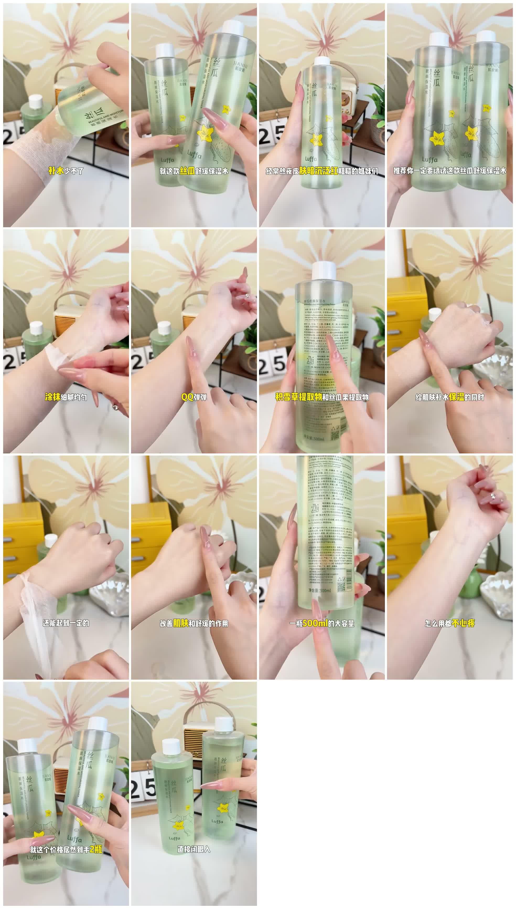
# 分镜脚本 + AI提示词｜27_7593639126398700809 - 平台：抖音 - 原链接：https://www.douyin.com/video/7593639126398700809 - 本地视频：/Users/mac/Desktop/视频素材/_中转/抖音_203803_7593639126398700809.mp4 - 时长：27.89 秒 - 抽帧规则：每 2 秒 1 帧 - 联系表：contact_sheet.jpg ## 使用说明 - 每个镜头按视频时间顺序排列。 - AI 提示词已按用户规范处理：以 `@xxx` 开头，产品/膏霜位置可复用 `@xxx`，不要求生成字幕，每条结尾明确不要字幕。 - 如需更精细版本，可基于 `frames/` 逐帧二次改写。 ## 分镜明细 ### 镜头 01｜约 00s｜开场钩子  画面描述：用近景快速建立产品/人物/使用场景，画面节奏干净直接，先给观众一个可感知的视觉记忆点。 分镜脚本：开场钩子：用近景快速建立产品/人物/使用场景，画面节奏干净直接，先给观众一个可感知的视觉记忆点。建议保持 1.5-2 秒节奏，动作不要过满，重点放在产品、手部和质感变化上。 AI提示词：@xxx广告开场近景，产品或手部动作进入画面，构图稳定，背景干净，第一秒抓住注意力，竖屏9:16，近景开场，镜头轻微推进，产品/膏霜位置使用@xxx，真实商业美妆短视频风格，高清细节，皮肤质感自然，光线柔和通透，色彩干净高级，背景不杂乱，动作连贯自然，负面：低清晰度、畸形手、过度磨皮、脏乱背景、文字水印、logo乱码、过曝、塑料感。整段视频不要出现任何字幕 ### 镜头 02｜约 02s｜开场钩子  画面描述：用近景快速建立产品/人物/使用场景，画面节奏干净直接，先给观众一个可感知的视觉记忆点。 分镜脚本：开场钩子：用近景快速建立产品/人物/使用场景，画面节奏干净直接，先给观众一个可感知的视觉记忆点。建议保持 1.5-2 秒节奏，动作不要过满，重点放在产品、手部和质感变化上。 AI提示词：@xxx广告开场近景，产品或手部动作进入画面，构图稳定，背景干净，第一秒抓住注意力，竖屏9:16，俯拍或侧拍，构图留白干净，产品/膏霜位置使用@xxx，真实商业美妆短视频风格，高清细节，皮肤质感自然，光线柔和通透，色彩干净高级，背景不杂乱，动作连贯自然，负面：低清晰度、畸形手、过度磨皮、脏乱背景、文字水印、logo乱码、过曝、塑料感。整段视频不要出现任何字幕 ### 镜头 03｜约 04s｜产品亮相  画面描述：镜头聚焦产品外观、瓶身、质地或包装细节，突出卖点物件本身。 分镜脚本：产品亮相：镜头聚焦产品外观、瓶身、质地或包装细节，突出卖点物件本身。建议保持 1.5-2 秒节奏，动作不要过满，重点放在产品、手部和质感变化上。 AI提示词：@xxx产品展示特写，瓶身/膏霜/包装细节清晰，商业棚拍质感，浅景深，干净高级背景，竖屏9:16，微距特写，浅景深，产品/膏霜位置使用@xxx，真实商业美妆短视频风格，高清细节，皮肤质感自然，光线柔和通透，色彩干净高级，背景不杂乱，动作连贯自然，负面：低清晰度、畸形手、过度磨皮、脏乱背景、文字水印、logo乱码、过曝、塑料感。整段视频不要出现任何字幕 ### 镜头 04｜约 06s｜产品亮相  画面描述：镜头聚焦产品外观、瓶身、质地或包装细节，突出卖点物件本身。 分镜脚本：产品亮相：镜头聚焦产品外观、瓶身、质地或包装细节，突出卖点物件本身。建议保持 1.5-2 秒节奏，动作不要过满，重点放在产品、手部和质感变化上。 AI提示词：@xxx产品展示特写，瓶身/膏霜/包装细节清晰，商业棚拍质感，浅景深，干净高级背景，竖屏9:16，中近景，轻微手持运动，产品/膏霜位置使用@xxx，真实商业美妆短视频风格，高清细节，皮肤质感自然，光线柔和通透，色彩干净高级，背景不杂乱，动作连贯自然，负面：低清晰度、畸形手、过度磨皮、脏乱背景、文字水印、logo乱码、过曝、塑料感。整段视频不要出现任何字幕 ### 镜头 05｜约 08s｜动作演示  画面描述：通过手部拿取、打开、挤压、涂抹、展示等动作，把产品使用方式讲清楚。 分镜脚本：动作演示：通过手部拿取、打开、挤压、涂抹、展示等动作，把产品使用方式讲清楚。建议保持 1.5-2 秒节奏，动作不要过满，重点放在产品、手部和质感变化上。 AI提示词：@xxx手部操作特写，年轻女性白皙双手自然拿取并使用产品，动作柔和顺滑，真实生活化，竖屏9:16，俯拍或侧拍，构图留白干净，产品/膏霜位置使用@xxx，真实商业美妆短视频风格，高清细节，皮肤质感自然，光线柔和通透，色彩干净高级，背景不杂乱，动作连贯自然，负面：低清晰度、畸形手、过度磨皮、脏乱背景、文字水印、logo乱码、过曝、塑料感。整段视频不要出现任何字幕 ### 镜头 06｜约 10s｜动作演示  画面描述：通过手部拿取、打开、挤压、涂抹、展示等动作，把产品使用方式讲清楚。 分镜脚本：动作演示：通过手部拿取、打开、挤压、涂抹、展示等动作，把产品使用方式讲清楚。建议保持 1.5-2 秒节奏，动作不要过满，重点放在产品、手部和质感变化上。 AI提示词：@xxx手部操作特写，年轻女性白皙双手自然拿取并使用产品，动作柔和顺滑，真实生活化，竖屏9:16，微距特写，浅景深，产品/膏霜位置使用@xxx，真实商业美妆短视频风格，高清细节，皮肤质感自然，光线柔和通透，色彩干净高级，背景不杂乱，动作连贯自然，负面：低清晰度、畸形手、过度磨皮、脏乱背景、文字水印、logo乱码、过曝、塑料感。整段视频不要出现任何字幕 ### 镜头 07｜约 12s｜质地细节  画面描述：放大产品质地、颜色、光泽或上肤效果，突出“看得见”的感官体验。 分镜脚本：质地细节：放大产品质地、颜色、光泽或上肤效果，突出“看得见”的感官体验。建议保持 1.5-2 秒节奏，动作不要过满，重点放在产品、手部和质感变化上。 AI提示词：@xxx微距质地镜头，膏体/液体/粉质细腻可见，柔和高光，干净皮肤纹理，真实美妆广告质感，竖屏9:16，中近景，轻微手持运动，产品/膏霜位置使用@xxx，真实商业美妆短视频风格，高清细节，皮肤质感自然，光线柔和通透，色彩干净高级，背景不杂乱，动作连贯自然，负面：低清晰度、畸形手、过度磨皮、脏乱背景、文字水印、logo乱码、过曝、塑料感。整段视频不要出现任何字幕 ### 镜头 08｜约 14s｜使用效果  画面描述：镜头转向脸部、手背、局部皮肤或场景效果，表现使用前后的氛围变化。 分镜脚本：使用效果：镜头转向脸部、手背、局部皮肤或场景效果，表现使用前后的氛围变化。建议保持 1.5-2 秒节奏，动作不要过满，重点放在产品、手部和质感变化上。 AI提示词：@xxx效果展示镜头，肤色干净通透，妆效自然，画面明亮柔和，人物状态精致不夸张，竖屏9:16，俯拍或侧拍，构图留白干净，产品/膏霜位置使用@xxx，真实商业美妆短视频风格，高清细节，皮肤质感自然，光线柔和通透，色彩干净高级，背景不杂乱，动作连贯自然，负面：低清晰度、畸形手、过度磨皮、脏乱背景、文字水印、logo乱码、过曝、塑料感。整段视频不要出现任何字幕 ### 镜头 09｜约 16s｜使用效果  画面描述：镜头转向脸部、手背、局部皮肤或场景效果，表现使用前后的氛围变化。 分镜脚本：使用效果：镜头转向脸部、手背、局部皮肤或场景效果，表现使用前后的氛围变化。建议保持 1.5-2 秒节奏，动作不要过满，重点放在产品、手部和质感变化上。 AI提示词：@xxx效果展示镜头，肤色干净通透，妆效自然，画面明亮柔和，人物状态精致不夸张，竖屏9:16，微距特写，浅景深，产品/膏霜位置使用@xxx，真实商业美妆短视频风格，高清细节，皮肤质感自然，光线柔和通透，色彩干净高级，背景不杂乱，动作连贯自然，负面：低清晰度、畸形手、过度磨皮、脏乱背景、文字水印、logo乱码、过曝、塑料感。整段视频不要出现任何字幕 ### 镜头 10｜约 18s｜氛围补充  画面描述：用环境、道具、花材、桌面、布景或生活方式镜头补足品牌调性。 分镜脚本：氛围补充：用环境、道具、花材、桌面、布景或生活方式镜头补足品牌调性。建议保持 1.5-2 秒节奏，动作不要过满，重点放在产品、手部和质感变化上。 AI提示词：@xxx生活方式氛围镜头，桌面陈列精致，道具简洁，暖色自然光，轻奢美妆视觉风格，竖屏9:16，中近景，轻微手持运动，产品/膏霜位置使用@xxx，真实商业美妆短视频风格，高清细节，皮肤质感自然，光线柔和通透，色彩干净高级，背景不杂乱，动作连贯自然，负面：低清晰度、畸形手、过度磨皮、脏乱背景、文字水印、logo乱码、过曝、塑料感。整段视频不要出现任何字幕 ### 镜头 11｜约 20s｜氛围补充  画面描述：用环境、道具、花材、桌面、布景或生活方式镜头补足品牌调性。 分镜脚本：氛围补充：用环境、道具、花材、桌面、布景或生活方式镜头补足品牌调性。建议保持 1.5-2 秒节奏，动作不要过满，重点放在产品、手部和质感变化上。 AI提示词：@xxx生活方式氛围镜头，桌面陈列精致，道具简洁，暖色自然光，轻奢美妆视觉风格，竖屏9:16，俯拍或侧拍，构图留白干净，产品/膏霜位置使用@xxx，真实商业美妆短视频风格，高清细节，皮肤质感自然，光线柔和通透，色彩干净高级，背景不杂乱，动作连贯自然，负面：低清晰度、畸形手、过度磨皮、脏乱背景、文字水印、logo乱码、过曝、塑料感。整段视频不要出现任何字幕 ### 镜头 12｜约 22s｜卖点强化  画面描述：回到核心动作或核心细节，重复强化产品记忆点，让画面更有转化感。 分镜脚本：卖点强化：回到核心动作或核心细节，重复强化产品记忆点，让画面更有转化感。建议保持 1.5-2 秒节奏，动作不要过满，重点放在产品、手部和质感变化上。 AI提示词：@xxx卖点强化特写，产品与使用动作同框，画面重点集中，清晰表现质感、颜色和使用体验，竖屏9:16，微距特写，浅景深，产品/膏霜位置使用@xxx，真实商业美妆短视频风格，高清细节，皮肤质感自然，光线柔和通透，色彩干净高级，背景不杂乱，动作连贯自然，负面：低清晰度、畸形手、过度磨皮、脏乱背景、文字水印、logo乱码、过曝、塑料感。整段视频不要出现任何字幕 ### 镜头 13｜约 24s｜卖点强化  画面描述：回到核心动作或核心细节，重复强化产品记忆点，让画面更有转化感。 分镜脚本：卖点强化：回到核心动作或核心细节，重复强化产品记忆点，让画面更有转化感。建议保持 1.5-2 秒节奏，动作不要过满，重点放在产品、手部和质感变化上。 AI提示词：@xxx卖点强化特写，产品与使用动作同框，画面重点集中，清晰表现质感、颜色和使用体验，竖屏9:16，中近景，轻微手持运动，产品/膏霜位置使用@xxx，真实商业美妆短视频风格，高清细节，皮肤质感自然，光线柔和通透，色彩干净高级，背景不杂乱，动作连贯自然，负面：低清晰度、畸形手、过度磨皮、脏乱背景、文字水印、logo乱码、过曝、塑料感。整段视频不要出现任何字幕 ### 镜头 14｜约 26s｜收尾定格  画面描述：用产品定格、人物满意状态或整套陈列结束，形成干净的广告收尾。 分镜脚本：收尾定格：用产品定格、人物满意状态或整套陈列结束，形成干净的广告收尾。建议保持 1.5-2 秒节奏，动作不要过满，重点放在产品、手部和质感变化上。 AI提示词：@xxx广告收尾定格，产品居中摆放或手持展示，构图完整，高级干净，适合短视频结尾，竖屏9:16，稳定定格，适合结尾停留，产品/膏霜位置使用@xxx，真实商业美妆短视频风格，高清细节，皮肤质感自然，光线柔和通透，色彩干净高级，背景不杂乱，动作连贯自然，负面：低清晰度、畸形手、过度磨皮、脏乱背景、文字水印、logo乱码、过曝、塑料感。整段视频不要出现任何字幕
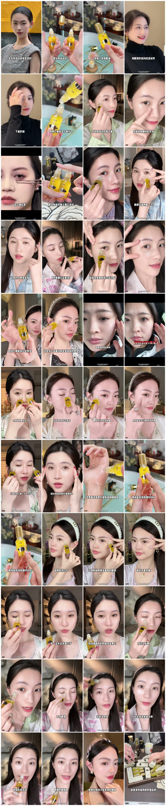
# 分镜脚本 + AI提示词｜28_7636599837261122854 - 平台：抖音 - 原链接：https://www.douyin.com/video/7636599837261122854 - 本地视频：/Users/mac/Desktop/视频素材/_中转/抖音_203816_7636599837261122854.mp4 - 时长：89.21 秒 - 抽帧规则：每 2 秒 1 帧 - 联系表：contact_sheet.jpg ## 使用说明 - 每个镜头按视频时间顺序排列。 - AI 提示词已按用户规范处理：以 `@xxx` 开头，产品/膏霜位置可复用 `@xxx`，不要求生成字幕，每条结尾明确不要字幕。 - 如需更精细版本，可基于 `frames/` 逐帧二次改写。 ## 分镜明细 ### 镜头 01｜约 00s｜开场钩子  画面描述：用近景快速建立产品/人物/使用场景，画面节奏干净直接，先给观众一个可感知的视觉记忆点。 分镜脚本：开场钩子：用近景快速建立产品/人物/使用场景，画面节奏干净直接，先给观众一个可感知的视觉记忆点。建议保持 1.5-2 秒节奏，动作不要过满，重点放在产品、手部和质感变化上。 AI提示词：@xxx广告开场近景，产品或手部动作进入画面，构图稳定，背景干净，第一秒抓住注意力，竖屏9:16，近景开场，镜头轻微推进，产品/膏霜位置使用@xxx，真实商业美妆短视频风格，高清细节，皮肤质感自然，光线柔和通透，色彩干净高级，背景不杂乱，动作连贯自然，负面：低清晰度、畸形手、过度磨皮、脏乱背景、文字水印、logo乱码、过曝、塑料感。整段视频不要出现任何字幕 ### 镜头 02｜约 02s｜开场钩子  画面描述：用近景快速建立产品/人物/使用场景，画面节奏干净直接，先给观众一个可感知的视觉记忆点。 分镜脚本：开场钩子：用近景快速建立产品/人物/使用场景，画面节奏干净直接，先给观众一个可感知的视觉记忆点。建议保持 1.5-2 秒节奏，动作不要过满，重点放在产品、手部和质感变化上。 AI提示词：@xxx广告开场近景，产品或手部动作进入画面，构图稳定，背景干净，第一秒抓住注意力，竖屏9:16，俯拍或侧拍，构图留白干净，产品/膏霜位置使用@xxx，真实商业美妆短视频风格，高清细节，皮肤质感自然，光线柔和通透，色彩干净高级，背景不杂乱，动作连贯自然，负面：低清晰度、畸形手、过度磨皮、脏乱背景、文字水印、logo乱码、过曝、塑料感。整段视频不要出现任何字幕 ### 镜头 03｜约 04s｜开场钩子  画面描述：用近景快速建立产品/人物/使用场景，画面节奏干净直接，先给观众一个可感知的视觉记忆点。 分镜脚本：开场钩子：用近景快速建立产品/人物/使用场景，画面节奏干净直接，先给观众一个可感知的视觉记忆点。建议保持 1.5-2 秒节奏，动作不要过满，重点放在产品、手部和质感变化上。 AI提示词：@xxx广告开场近景，产品或手部动作进入画面，构图稳定，背景干净，第一秒抓住注意力，竖屏9:16，微距特写，浅景深，产品/膏霜位置使用@xxx，真实商业美妆短视频风格，高清细节，皮肤质感自然，光线柔和通透，色彩干净高级，背景不杂乱，动作连贯自然，负面：低清晰度、畸形手、过度磨皮、脏乱背景、文字水印、logo乱码、过曝、塑料感。整段视频不要出现任何字幕 ### 镜头 04｜约 06s｜开场钩子  画面描述：用近景快速建立产品/人物/使用场景，画面节奏干净直接，先给观众一个可感知的视觉记忆点。 分镜脚本：开场钩子：用近景快速建立产品/人物/使用场景，画面节奏干净直接，先给观众一个可感知的视觉记忆点。建议保持 1.5-2 秒节奏，动作不要过满，重点放在产品、手部和质感变化上。 AI提示词：@xxx广告开场近景，产品或手部动作进入画面，构图稳定，背景干净，第一秒抓住注意力，竖屏9:16，中近景，轻微手持运动，产品/膏霜位置使用@xxx，真实商业美妆短视频风格，高清细节，皮肤质感自然，光线柔和通透，色彩干净高级，背景不杂乱，动作连贯自然，负面：低清晰度、畸形手、过度磨皮、脏乱背景、文字水印、logo乱码、过曝、塑料感。整段视频不要出现任何字幕 ### 镜头 05｜约 08s｜开场钩子  画面描述：用近景快速建立产品/人物/使用场景，画面节奏干净直接，先给观众一个可感知的视觉记忆点。 分镜脚本：开场钩子：用近景快速建立产品/人物/使用场景，画面节奏干净直接，先给观众一个可感知的视觉记忆点。建议保持 1.5-2 秒节奏，动作不要过满，重点放在产品、手部和质感变化上。 AI提示词：@xxx广告开场近景，产品或手部动作进入画面，构图稳定，背景干净，第一秒抓住注意力，竖屏9:16，俯拍或侧拍，构图留白干净，产品/膏霜位置使用@xxx，真实商业美妆短视频风格，高清细节，皮肤质感自然，光线柔和通透，色彩干净高级，背景不杂乱，动作连贯自然，负面：低清晰度、畸形手、过度磨皮、脏乱背景、文字水印、logo乱码、过曝、塑料感。整段视频不要出现任何字幕 ### 镜头 06｜约 10s｜开场钩子  画面描述：用近景快速建立产品/人物/使用场景，画面节奏干净直接，先给观众一个可感知的视觉记忆点。 分镜脚本：开场钩子：用近景快速建立产品/人物/使用场景，画面节奏干净直接，先给观众一个可感知的视觉记忆点。建议保持 1.5-2 秒节奏，动作不要过满，重点放在产品、手部和质感变化上。 AI提示词：@xxx广告开场近景，产品或手部动作进入画面，构图稳定，背景干净，第一秒抓住注意力，竖屏9:16，微距特写，浅景深，产品/膏霜位置使用@xxx，真实商业美妆短视频风格，高清细节，皮肤质感自然，光线柔和通透，色彩干净高级，背景不杂乱，动作连贯自然，负面：低清晰度、畸形手、过度磨皮、脏乱背景、文字水印、logo乱码、过曝、塑料感。整段视频不要出现任何字幕 ### 镜头 07｜约 12s｜产品亮相  画面描述：镜头聚焦产品外观、瓶身、质地或包装细节，突出卖点物件本身。 分镜脚本：产品亮相：镜头聚焦产品外观、瓶身、质地或包装细节，突出卖点物件本身。建议保持 1.5-2 秒节奏，动作不要过满，重点放在产品、手部和质感变化上。 AI提示词：@xxx产品展示特写，瓶身/膏霜/包装细节清晰，商业棚拍质感，浅景深，干净高级背景，竖屏9:16，中近景，轻微手持运动，产品/膏霜位置使用@xxx，真实商业美妆短视频风格，高清细节，皮肤质感自然，光线柔和通透，色彩干净高级，背景不杂乱，动作连贯自然，负面：低清晰度、畸形手、过度磨皮、脏乱背景、文字水印、logo乱码、过曝、塑料感。整段视频不要出现任何字幕 ### 镜头 08｜约 14s｜产品亮相  画面描述：镜头聚焦产品外观、瓶身、质地或包装细节，突出卖点物件本身。 分镜脚本：产品亮相：镜头聚焦产品外观、瓶身、质地或包装细节，突出卖点物件本身。建议保持 1.5-2 秒节奏，动作不要过满，重点放在产品、手部和质感变化上。 AI提示词：@xxx产品展示特写，瓶身/膏霜/包装细节清晰，商业棚拍质感，浅景深，干净高级背景，竖屏9:16，俯拍或侧拍，构图留白干净，产品/膏霜位置使用@xxx，真实商业美妆短视频风格，高清细节，皮肤质感自然，光线柔和通透，色彩干净高级，背景不杂乱，动作连贯自然，负面：低清晰度、畸形手、过度磨皮、脏乱背景、文字水印、logo乱码、过曝、塑料感。整段视频不要出现任何字幕 ### 镜头 09｜约 16s｜产品亮相  画面描述：镜头聚焦产品外观、瓶身、质地或包装细节，突出卖点物件本身。 分镜脚本：产品亮相：镜头聚焦产品外观、瓶身、质地或包装细节，突出卖点物件本身。建议保持 1.5-2 秒节奏，动作不要过满，重点放在产品、手部和质感变化上。 AI提示词：@xxx产品展示特写，瓶身/膏霜/包装细节清晰，商业棚拍质感，浅景深，干净高级背景，竖屏9:16，微距特写，浅景深，产品/膏霜位置使用@xxx，真实商业美妆短视频风格，高清细节，皮肤质感自然，光线柔和通透，色彩干净高级，背景不杂乱，动作连贯自然，负面：低清晰度、畸形手、过度磨皮、脏乱背景、文字水印、logo乱码、过曝、塑料感。整段视频不要出现任何字幕 ### 镜头 10｜约 18s｜产品亮相  画面描述：镜头聚焦产品外观、瓶身、质地或包装细节，突出卖点物件本身。 分镜脚本：产品亮相：镜头聚焦产品外观、瓶身、质地或包装细节，突出卖点物件本身。建议保持 1.5-2 秒节奏，动作不要过满，重点放在产品、手部和质感变化上。 AI提示词：@xxx产品展示特写，瓶身/膏霜/包装细节清晰，商业棚拍质感，浅景深，干净高级背景，竖屏9:16，中近景，轻微手持运动，产品/膏霜位置使用@xxx，真实商业美妆短视频风格，高清细节，皮肤质感自然，光线柔和通透，色彩干净高级，背景不杂乱，动作连贯自然，负面：低清晰度、畸形手、过度磨皮、脏乱背景、文字水印、logo乱码、过曝、塑料感。整段视频不要出现任何字幕 ### 镜头 11｜约 20s｜产品亮相  画面描述：镜头聚焦产品外观、瓶身、质地或包装细节，突出卖点物件本身。 分镜脚本：产品亮相：镜头聚焦产品外观、瓶身、质地或包装细节，突出卖点物件本身。建议保持 1.5-2 秒节奏，动作不要过满，重点放在产品、手部和质感变化上。 AI提示词：@xxx产品展示特写，瓶身/膏霜/包装细节清晰，商业棚拍质感，浅景深，干净高级背景，竖屏9:16，俯拍或侧拍，构图留白干净，产品/膏霜位置使用@xxx，真实商业美妆短视频风格，高清细节，皮肤质感自然，光线柔和通透，色彩干净高级，背景不杂乱，动作连贯自然，负面：低清晰度、畸形手、过度磨皮、脏乱背景、文字水印、logo乱码、过曝、塑料感。整段视频不要出现任何字幕 ### 镜头 12｜约 22s｜动作演示  画面描述：通过手部拿取、打开、挤压、涂抹、展示等动作，把产品使用方式讲清楚。 分镜脚本：动作演示：通过手部拿取、打开、挤压、涂抹、展示等动作，把产品使用方式讲清楚。建议保持 1.5-2 秒节奏，动作不要过满，重点放在产品、手部和质感变化上。 AI提示词：@xxx手部操作特写，年轻女性白皙双手自然拿取并使用产品，动作柔和顺滑，真实生活化，竖屏9:16，微距特写，浅景深，产品/膏霜位置使用@xxx，真实商业美妆短视频风格，高清细节，皮肤质感自然，光线柔和通透，色彩干净高级，背景不杂乱，动作连贯自然，负面：低清晰度、畸形手、过度磨皮、脏乱背景、文字水印、logo乱码、过曝、塑料感。整段视频不要出现任何字幕 ### 镜头 13｜约 24s｜动作演示  画面描述：通过手部拿取、打开、挤压、涂抹、展示等动作，把产品使用方式讲清楚。 分镜脚本：动作演示：通过手部拿取、打开、挤压、涂抹、展示等动作，把产品使用方式讲清楚。建议保持 1.5-2 秒节奏，动作不要过满，重点放在产品、手部和质感变化上。 AI提示词：@xxx手部操作特写，年轻女性白皙双手自然拿取并使用产品，动作柔和顺滑，真实生活化，竖屏9:16，中近景，轻微手持运动，产品/膏霜位置使用@xxx，真实商业美妆短视频风格，高清细节，皮肤质感自然，光线柔和通透，色彩干净高级，背景不杂乱，动作连贯自然，负面：低清晰度、畸形手、过度磨皮、脏乱背景、文字水印、logo乱码、过曝、塑料感。整段视频不要出现任何字幕 ### 镜头 14｜约 26s｜动作演示  画面描述：通过手部拿取、打开、挤压、涂抹、展示等动作，把产品使用方式讲清楚。 分镜脚本：动作演示：通过手部拿取、打开、挤压、涂抹、展示等动作，把产品使用方式讲清楚。建议保持 1.5-2 秒节奏，动作不要过满，重点放在产品、手部和质感变化上。 AI提示词：@xxx手部操作特写，年轻女性白皙双手自然拿取并使用产品，动作柔和顺滑，真实生活化，竖屏9:16，俯拍或侧拍，构图留白干净，产品/膏霜位置使用@xxx，真实商业美妆短视频风格，高清细节，皮肤质感自然，光线柔和通透，色彩干净高级，背景不杂乱，动作连贯自然，负面：低清晰度、畸形手、过度磨皮、脏乱背景、文字水印、logo乱码、过曝、塑料感。整段视频不要出现任何字幕 ### 镜头 15｜约 28s｜动作演示  画面描述：通过手部拿取、打开、挤压、涂抹、展示等动作，把产品使用方式讲清楚。 分镜脚本：动作演示：通过手部拿取、打开、挤压、涂抹、展示等动作，把产品使用方式讲清楚。建议保持 1.5-2 秒节奏，动作不要过满，重点放在产品、手部和质感变化上。 AI提示词：@xxx手部操作特写，年轻女性白皙双手自然拿取并使用产品，动作柔和顺滑，真实生活化，竖屏9:16，微距特写，浅景深，产品/膏霜位置使用@xxx，真实商业美妆短视频风格，高清细节，皮肤质感自然，光线柔和通透，色彩干净高级，背景不杂乱，动作连贯自然，负面：低清晰度、畸形手、过度磨皮、脏乱背景、文字水印、logo乱码、过曝、塑料感。整段视频不要出现任何字幕 ### 镜头 16｜约 30s｜动作演示  画面描述：通过手部拿取、打开、挤压、涂抹、展示等动作，把产品使用方式讲清楚。 分镜脚本：动作演示：通过手部拿取、打开、挤压、涂抹、展示等动作，把产品使用方式讲清楚。建议保持 1.5-2 秒节奏，动作不要过满，重点放在产品、手部和质感变化上。 AI提示词：@xxx手部操作特写，年轻女性白皙双手自然拿取并使用产品，动作柔和顺滑，真实生活化，竖屏9:16，中近景，轻微手持运动，产品/膏霜位置使用@xxx，真实商业美妆短视频风格，高清细节，皮肤质感自然，光线柔和通透，色彩干净高级，背景不杂乱，动作连贯自然，负面：低清晰度、畸形手、过度磨皮、脏乱背景、文字水印、logo乱码、过曝、塑料感。整段视频不要出现任何字幕 ### 镜头 17｜约 32s｜动作演示  画面描述：通过手部拿取、打开、挤压、涂抹、展示等动作，把产品使用方式讲清楚。 分镜脚本：动作演示：通过手部拿取、打开、挤压、涂抹、展示等动作，把产品使用方式讲清楚。建议保持 1.5-2 秒节奏，动作不要过满，重点放在产品、手部和质感变化上。 AI提示词：@xxx手部操作特写，年轻女性白皙双手自然拿取并使用产品，动作柔和顺滑，真实生活化，竖屏9:16，俯拍或侧拍，构图留白干净，产品/膏霜位置使用@xxx，真实商业美妆短视频风格，高清细节，皮肤质感自然，光线柔和通透，色彩干净高级，背景不杂乱，动作连贯自然，负面：低清晰度、畸形手、过度磨皮、脏乱背景、文字水印、logo乱码、过曝、塑料感。整段视频不要出现任何字幕 ### 镜头 18｜约 34s｜质地细节  画面描述：放大产品质地、颜色、光泽或上肤效果，突出“看得见”的感官体验。 分镜脚本：质地细节：放大产品质地、颜色、光泽或上肤效果，突出“看得见”的感官体验。建议保持 1.5-2 秒节奏，动作不要过满，重点放在产品、手部和质感变化上。 AI提示词：@xxx微距质地镜头，膏体/液体/粉质细腻可见，柔和高光，干净皮肤纹理，真实美妆广告质感，竖屏9:16，微距特写，浅景深，产品/膏霜位置使用@xxx，真实商业美妆短视频风格，高清细节，皮肤质感自然，光线柔和通透，色彩干净高级，背景不杂乱，动作连贯自然，负面：低清晰度、畸形手、过度磨皮、脏乱背景、文字水印、logo乱码、过曝、塑料感。整段视频不要出现任何字幕 ### 镜头 19｜约 36s｜质地细节  画面描述：放大产品质地、颜色、光泽或上肤效果，突出“看得见”的感官体验。 分镜脚本：质地细节：放大产品质地、颜色、光泽或上肤效果，突出“看得见”的感官体验。建议保持 1.5-2 秒节奏，动作不要过满，重点放在产品、手部和质感变化上。 AI提示词：@xxx微距质地镜头，膏体/液体/粉质细腻可见，柔和高光，干净皮肤纹理，真实美妆广告质感，竖屏9:16，中近景，轻微手持运动，产品/膏霜位置使用@xxx，真实商业美妆短视频风格，高清细节，皮肤质感自然，光线柔和通透，色彩干净高级，背景不杂乱，动作连贯自然，负面：低清晰度、畸形手、过度磨皮、脏乱背景、文字水印、logo乱码、过曝、塑料感。整段视频不要出现任何字幕 ### 镜头 20｜约 38s｜质地细节  画面描述：放大产品质地、颜色、光泽或上肤效果，突出“看得见”的感官体验。 分镜脚本：质地细节：放大产品质地、颜色、光泽或上肤效果，突出“看得见”的感官体验。建议保持 1.5-2 秒节奏，动作不要过满，重点放在产品、手部和质感变化上。 AI提示词：@xxx微距质地镜头，膏体/液体/粉质细腻可见，柔和高光，干净皮肤纹理，真实美妆广告质感，竖屏9:16，俯拍或侧拍，构图留白干净，产品/膏霜位置使用@xxx，真实商业美妆短视频风格，高清细节，皮肤质感自然，光线柔和通透，色彩干净高级，背景不杂乱，动作连贯自然，负面：低清晰度、畸形手、过度磨皮、脏乱背景、文字水印、logo乱码、过曝、塑料感。整段视频不要出现任何字幕 ### 镜头 21｜约 40s｜质地细节  画面描述：放大产品质地、颜色、光泽或上肤效果，突出“看得见”的感官体验。 分镜脚本：质地细节：放大产品质地、颜色、光泽或上肤效果，突出“看得见”的感官体验。建议保持 1.5-2 秒节奏，动作不要过满，重点放在产品、手部和质感变化上。 AI提示词：@xxx微距质地镜头，膏体/液体/粉质细腻可见，柔和高光，干净皮肤纹理，真实美妆广告质感，竖屏9:16，微距特写，浅景深，产品/膏霜位置使用@xxx，真实商业美妆短视频风格，高清细节，皮肤质感自然，光线柔和通透，色彩干净高级，背景不杂乱，动作连贯自然，负面：低清晰度、畸形手、过度磨皮、脏乱背景、文字水印、logo乱码、过曝、塑料感。整段视频不要出现任何字幕 ### 镜头 22｜约 42s｜质地细节  画面描述：放大产品质地、颜色、光泽或上肤效果，突出“看得见”的感官体验。 分镜脚本：质地细节：放大产品质地、颜色、光泽或上肤效果，突出“看得见”的感官体验。建议保持 1.5-2 秒节奏，动作不要过满，重点放在产品、手部和质感变化上。 AI提示词：@xxx微距质地镜头，膏体/液体/粉质细腻可见，柔和高光，干净皮肤纹理，真实美妆广告质感，竖屏9:16，中近景，轻微手持运动，产品/膏霜位置使用@xxx，真实商业美妆短视频风格，高清细节，皮肤质感自然，光线柔和通透，色彩干净高级，背景不杂乱，动作连贯自然，负面：低清晰度、畸形手、过度磨皮、脏乱背景、文字水印、logo乱码、过曝、塑料感。整段视频不要出现任何字幕 ### 镜头 23｜约 44s｜使用效果  画面描述：镜头转向脸部、手背、局部皮肤或场景效果，表现使用前后的氛围变化。 分镜脚本：使用效果：镜头转向脸部、手背、局部皮肤或场景效果，表现使用前后的氛围变化。建议保持 1.5-2 秒节奏，动作不要过满，重点放在产品、手部和质感变化上。 AI提示词：@xxx效果展示镜头，肤色干净通透，妆效自然，画面明亮柔和，人物状态精致不夸张，竖屏9:16，俯拍或侧拍，构图留白干净，产品/膏霜位置使用@xxx，真实商业美妆短视频风格，高清细节，皮肤质感自然，光线柔和通透，色彩干净高级，背景不杂乱，动作连贯自然，负面：低清晰度、畸形手、过度磨皮、脏乱背景、文字水印、logo乱码、过曝、塑料感。整段视频不要出现任何字幕 ### 镜头 24｜约 46s｜使用效果  画面描述：镜头转向脸部、手背、局部皮肤或场景效果，表现使用前后的氛围变化。 分镜脚本：使用效果：镜头转向脸部、手背、局部皮肤或场景效果，表现使用前后的氛围变化。建议保持 1.5-2 秒节奏，动作不要过满，重点放在产品、手部和质感变化上。 AI提示词：@xxx效果展示镜头，肤色干净通透，妆效自然，画面明亮柔和，人物状态精致不夸张，竖屏9:16，微距特写，浅景深，产品/膏霜位置使用@xxx，真实商业美妆短视频风格，高清细节，皮肤质感自然，光线柔和通透，色彩干净高级，背景不杂乱，动作连贯自然，负面：低清晰度、畸形手、过度磨皮、脏乱背景、文字水印、logo乱码、过曝、塑料感。整段视频不要出现任何字幕 ### 镜头 25｜约 48s｜使用效果  画面描述：镜头转向脸部、手背、局部皮肤或场景效果，表现使用前后的氛围变化。 分镜脚本：使用效果：镜头转向脸部、手背、局部皮肤或场景效果，表现使用前后的氛围变化。建议保持 1.5-2 秒节奏，动作不要过满，重点放在产品、手部和质感变化上。 AI提示词：@xxx效果展示镜头，肤色干净通透，妆效自然，画面明亮柔和，人物状态精致不夸张，竖屏9:16，中近景，轻微手持运动，产品/膏霜位置使用@xxx，真实商业美妆短视频风格，高清细节，皮肤质感自然，光线柔和通透，色彩干净高级，背景不杂乱，动作连贯自然，负面：低清晰度、畸形手、过度磨皮、脏乱背景、文字水印、logo乱码、过曝、塑料感。整段视频不要出现任何字幕 ### 镜头 26｜约 50s｜使用效果  画面描述：镜头转向脸部、手背、局部皮肤或场景效果，表现使用前后的氛围变化。 分镜脚本：使用效果：镜头转向脸部、手背、局部皮肤或场景效果，表现使用前后的氛围变化。建议保持 1.5-2 秒节奏，动作不要过满，重点放在产品、手部和质感变化上。 AI提示词：@xxx效果展示镜头，肤色干净通透，妆效自然，画面明亮柔和，人物状态精致不夸张，竖屏9:16，俯拍或侧拍，构图留白干净，产品/膏霜位置使用@xxx，真实商业美妆短视频风格，高清细节，皮肤质感自然，光线柔和通透，色彩干净高级，背景不杂乱，动作连贯自然，负面：低清晰度、畸形手、过度磨皮、脏乱背景、文字水印、logo乱码、过曝、塑料感。整段视频不要出现任何字幕 ### 镜头 27｜约 52s｜使用效果  画面描述：镜头转向脸部、手背、局部皮肤或场景效果，表现使用前后的氛围变化。 分镜脚本：使用效果：镜头转向脸部、手背、局部皮肤或场景效果，表现使用前后的氛围变化。建议保持 1.5-2 秒节奏，动作不要过满，重点放在产品、手部和质感变化上。 AI提示词：@xxx效果展示镜头，肤色干净通透，妆效自然，画面明亮柔和，人物状态精致不夸张，竖屏9:16，微距特写，浅景深，产品/膏霜位置使用@xxx，真实商业美妆短视频风格，高清细节，皮肤质感自然，光线柔和通透，色彩干净高级，背景不杂乱，动作连贯自然，负面：低清晰度、畸形手、过度磨皮、脏乱背景、文字水印、logo乱码、过曝、塑料感。整段视频不要出现任何字幕 ### 镜头 28｜约 54s｜使用效果  画面描述：镜头转向脸部、手背、局部皮肤或场景效果，表现使用前后的氛围变化。 分镜脚本：使用效果：镜头转向脸部、手背、局部皮肤或场景效果，表现使用前后的氛围变化。建议保持 1.5-2 秒节奏，动作不要过满，重点放在产品、手部和质感变化上。 AI提示词：@xxx效果展示镜头，肤色干净通透，妆效自然，画面明亮柔和，人物状态精致不夸张，竖屏9:16，中近景，轻微手持运动，产品/膏霜位置使用@xxx，真实商业美妆短视频风格，高清细节，皮肤质感自然，光线柔和通透，色彩干净高级，背景不杂乱，动作连贯自然，负面：低清晰度、畸形手、过度磨皮、脏乱背景、文字水印、logo乱码、过曝、塑料感。整段视频不要出现任何字幕 ### 镜头 29｜约 56s｜氛围补充  画面描述：用环境、道具、花材、桌面、布景或生活方式镜头补足品牌调性。 分镜脚本：氛围补充：用环境、道具、花材、桌面、布景或生活方式镜头补足品牌调性。建议保持 1.5-2 秒节奏，动作不要过满，重点放在产品、手部和质感变化上。 AI提示词：@xxx生活方式氛围镜头，桌面陈列精致，道具简洁，暖色自然光，轻奢美妆视觉风格，竖屏9:16，俯拍或侧拍，构图留白干净，产品/膏霜位置使用@xxx，真实商业美妆短视频风格，高清细节，皮肤质感自然，光线柔和通透，色彩干净高级，背景不杂乱，动作连贯自然，负面：低清晰度、畸形手、过度磨皮、脏乱背景、文字水印、logo乱码、过曝、塑料感。整段视频不要出现任何字幕 ### 镜头 30｜约 58s｜氛围补充  画面描述：用环境、道具、花材、桌面、布景或生活方式镜头补足品牌调性。 分镜脚本：氛围补充：用环境、道具、花材、桌面、布景或生活方式镜头补足品牌调性。建议保持 1.5-2 秒节奏，动作不要过满，重点放在产品、手部和质感变化上。 AI提示词：@xxx生活方式氛围镜头，桌面陈列精致，道具简洁，暖色自然光，轻奢美妆视觉风格，竖屏9:16，微距特写，浅景深，产品/膏霜位置使用@xxx，真实商业美妆短视频风格，高清细节，皮肤质感自然，光线柔和通透，色彩干净高级，背景不杂乱，动作连贯自然，负面：低清晰度、畸形手、过度磨皮、脏乱背景、文字水印、logo乱码、过曝、塑料感。整段视频不要出现任何字幕 ### 镜头 31｜约 60s｜氛围补充  画面描述：用环境、道具、花材、桌面、布景或生活方式镜头补足品牌调性。 分镜脚本：氛围补充：用环境、道具、花材、桌面、布景或生活方式镜头补足品牌调性。建议保持 1.5-2 秒节奏，动作不要过满，重点放在产品、手部和质感变化上。 AI提示词：@xxx生活方式氛围镜头，桌面陈列精致，道具简洁，暖色自然光，轻奢美妆视觉风格，竖屏9:16，中近景，轻微手持运动，产品/膏霜位置使用@xxx，真实商业美妆短视频风格，高清细节，皮肤质感自然，光线柔和通透，色彩干净高级，背景不杂乱，动作连贯自然，负面：低清晰度、畸形手、过度磨皮、脏乱背景、文字水印、logo乱码、过曝、塑料感。整段视频不要出现任何字幕 ### 镜头 32｜约 62s｜氛围补充  画面描述：用环境、道具、花材、桌面、布景或生活方式镜头补足品牌调性。 分镜脚本：氛围补充：用环境、道具、花材、桌面、布景或生活方式镜头补足品牌调性。建议保持 1.5-2 秒节奏，动作不要过满，重点放在产品、手部和质感变化上。 AI提示词：@xxx生活方式氛围镜头，桌面陈列精致，道具简洁，暖色自然光，轻奢美妆视觉风格，竖屏9:16，俯拍或侧拍，构图留白干净，产品/膏霜位置使用@xxx，真实商业美妆短视频风格，高清细节，皮肤质感自然，光线柔和通透，色彩干净高级，背景不杂乱，动作连贯自然，负面：低清晰度、畸形手、过度磨皮、脏乱背景、文字水印、logo乱码、过曝、塑料感。整段视频不要出现任何字幕 ### 镜头 33｜约 64s｜氛围补充  画面描述：用环境、道具、花材、桌面、布景或生活方式镜头补足品牌调性。 分镜脚本：氛围补充：用环境、道具、花材、桌面、布景或生活方式镜头补足品牌调性。建议保持 1.5-2 秒节奏，动作不要过满，重点放在产品、手部和质感变化上。 AI提示词：@xxx生活方式氛围镜头，桌面陈列精致，道具简洁，暖色自然光，轻奢美妆视觉风格，竖屏9:16，微距特写，浅景深，产品/膏霜位置使用@xxx，真实商业美妆短视频风格，高清细节，皮肤质感自然，光线柔和通透，色彩干净高级，背景不杂乱，动作连贯自然，负面：低清晰度、畸形手、过度磨皮、脏乱背景、文字水印、logo乱码、过曝、塑料感。整段视频不要出现任何字幕 ### 镜头 34｜约 66s｜卖点强化  画面描述：回到核心动作或核心细节，重复强化产品记忆点，让画面更有转化感。 分镜脚本：卖点强化：回到核心动作或核心细节，重复强化产品记忆点，让画面更有转化感。建议保持 1.5-2 秒节奏，动作不要过满，重点放在产品、手部和质感变化上。 AI提示词：@xxx卖点强化特写，产品与使用动作同框，画面重点集中，清晰表现质感、颜色和使用体验，竖屏9:16，中近景，轻微手持运动，产品/膏霜位置使用@xxx，真实商业美妆短视频风格，高清细节，皮肤质感自然，光线柔和通透，色彩干净高级，背景不杂乱，动作连贯自然，负面：低清晰度、畸形手、过度磨皮、脏乱背景、文字水印、logo乱码、过曝、塑料感。整段视频不要出现任何字幕 ### 镜头 35｜约 68s｜卖点强化  画面描述：回到核心动作或核心细节，重复强化产品记忆点，让画面更有转化感。 分镜脚本：卖点强化：回到核心动作或核心细节，重复强化产品记忆点，让画面更有转化感。建议保持 1.5-2 秒节奏，动作不要过满，重点放在产品、手部和质感变化上。 AI提示词：@xxx卖点强化特写，产品与使用动作同框，画面重点集中，清晰表现质感、颜色和使用体验，竖屏9:16，俯拍或侧拍，构图留白干净，产品/膏霜位置使用@xxx，真实商业美妆短视频风格，高清细节，皮肤质感自然，光线柔和通透，色彩干净高级，背景不杂乱，动作连贯自然，负面：低清晰度、畸形手、过度磨皮、脏乱背景、文字水印、logo乱码、过曝、塑料感。整段视频不要出现任何字幕 ### 镜头 36｜约 70s｜卖点强化  画面描述：回到核心动作或核心细节，重复强化产品记忆点，让画面更有转化感。 分镜脚本：卖点强化：回到核心动作或核心细节，重复强化产品记忆点，让画面更有转化感。建议保持 1.5-2 秒节奏，动作不要过满，重点放在产品、手部和质感变化上。 AI提示词：@xxx卖点强化特写，产品与使用动作同框，画面重点集中，清晰表现质感、颜色和使用体验，竖屏9:16，微距特写，浅景深，产品/膏霜位置使用@xxx，真实商业美妆短视频风格，高清细节，皮肤质感自然，光线柔和通透，色彩干净高级，背景不杂乱，动作连贯自然，负面：低清晰度、畸形手、过度磨皮、脏乱背景、文字水印、logo乱码、过曝、塑料感。整段视频不要出现任何字幕 ### 镜头 37｜约 72s｜卖点强化  画面描述：回到核心动作或核心细节，重复强化产品记忆点，让画面更有转化感。 分镜脚本：卖点强化：回到核心动作或核心细节，重复强化产品记忆点，让画面更有转化感。建议保持 1.5-2 秒节奏，动作不要过满，重点放在产品、手部和质感变化上。 AI提示词：@xxx卖点强化特写，产品与使用动作同框，画面重点集中，清晰表现质感、颜色和使用体验，竖屏9:16，中近景，轻微手持运动，产品/膏霜位置使用@xxx，真实商业美妆短视频风格，高清细节，皮肤质感自然，光线柔和通透，色彩干净高级，背景不杂乱，动作连贯自然，负面：低清晰度、畸形手、过度磨皮、脏乱背景、文字水印、logo乱码、过曝、塑料感。整段视频不要出现任何字幕 ### 镜头 38｜约 74s｜卖点强化  画面描述：回到核心动作或核心细节，重复强化产品记忆点，让画面更有转化感。 分镜脚本：卖点强化：回到核心动作或核心细节，重复强化产品记忆点，让画面更有转化感。建议保持 1.5-2 秒节奏，动作不要过满，重点放在产品、手部和质感变化上。 AI提示词：@xxx卖点强化特写，产品与使用动作同框，画面重点集中，清晰表现质感、颜色和使用体验，竖屏9:16，俯拍或侧拍，构图留白干净，产品/膏霜位置使用@xxx，真实商业美妆短视频风格，高清细节，皮肤质感自然，光线柔和通透，色彩干净高级，背景不杂乱，动作连贯自然，负面：低清晰度、畸形手、过度磨皮、脏乱背景、文字水印、logo乱码、过曝、塑料感。整段视频不要出现任何字幕 ### 镜头 39｜约 76s｜卖点强化  画面描述：回到核心动作或核心细节，重复强化产品记忆点，让画面更有转化感。 分镜脚本：卖点强化：回到核心动作或核心细节，重复强化产品记忆点，让画面更有转化感。建议保持 1.5-2 秒节奏，动作不要过满，重点放在产品、手部和质感变化上。 AI提示词：@xxx卖点强化特写，产品与使用动作同框，画面重点集中，清晰表现质感、颜色和使用体验，竖屏9:16，微距特写，浅景深，产品/膏霜位置使用@xxx，真实商业美妆短视频风格，高清细节，皮肤质感自然，光线柔和通透，色彩干净高级，背景不杂乱，动作连贯自然，负面：低清晰度、畸形手、过度磨皮、脏乱背景、文字水印、logo乱码、过曝、塑料感。整段视频不要出现任何字幕 ### 镜头 40｜约 78s｜收尾定格  画面描述：用产品定格、人物满意状态或整套陈列结束，形成干净的广告收尾。 分镜脚本：收尾定格：用产品定格、人物满意状态或整套陈列结束，形成干净的广告收尾。建议保持 1.5-2 秒节奏，动作不要过满，重点放在产品、手部和质感变化上。 AI提示词：@xxx广告收尾定格，产品居中摆放或手持展示，构图完整，高级干净，适合短视频结尾，竖屏9:16，中近景，轻微手持运动，产品/膏霜位置使用@xxx，真实商业美妆短视频风格，高清细节，皮肤质感自然，光线柔和通透，色彩干净高级，背景不杂乱，动作连贯自然，负面：低清晰度、畸形手、过度磨皮、脏乱背景、文字水印、logo乱码、过曝、塑料感。整段视频不要出现任何字幕 ### 镜头 41｜约 80s｜收尾定格  画面描述：用产品定格、人物满意状态或整套陈列结束，形成干净的广告收尾。 分镜脚本：收尾定格：用产品定格、人物满意状态或整套陈列结束，形成干净的广告收尾。建议保持 1.5-2 秒节奏，动作不要过满，重点放在产品、手部和质感变化上。 AI提示词：@xxx广告收尾定格，产品居中摆放或手持展示，构图完整，高级干净，适合短视频结尾，竖屏9:16，俯拍或侧拍，构图留白干净，产品/膏霜位置使用@xxx，真实商业美妆短视频风格，高清细节，皮肤质感自然，光线柔和通透，色彩干净高级，背景不杂乱，动作连贯自然，负面：低清晰度、畸形手、过度磨皮、脏乱背景、文字水印、logo乱码、过曝、塑料感。整段视频不要出现任何字幕 ### 镜头 42｜约 82s｜收尾定格  画面描述：用产品定格、人物满意状态或整套陈列结束，形成干净的广告收尾。 分镜脚本：收尾定格：用产品定格、人物满意状态或整套陈列结束，形成干净的广告收尾。建议保持 1.5-2 秒节奏，动作不要过满，重点放在产品、手部和质感变化上。 AI提示词：@xxx广告收尾定格，产品居中摆放或手持展示，构图完整，高级干净，适合短视频结尾，竖屏9:16，微距特写，浅景深，产品/膏霜位置使用@xxx，真实商业美妆短视频风格，高清细节，皮肤质感自然，光线柔和通透，色彩干净高级，背景不杂乱，动作连贯自然，负面：低清晰度、畸形手、过度磨皮、脏乱背景、文字水印、logo乱码、过曝、塑料感。整段视频不要出现任何字幕 ### 镜头 43｜约 84s｜收尾定格  画面描述：用产品定格、人物满意状态或整套陈列结束，形成干净的广告收尾。 分镜脚本：收尾定格：用产品定格、人物满意状态或整套陈列结束，形成干净的广告收尾。建议保持 1.5-2 秒节奏，动作不要过满，重点放在产品、手部和质感变化上。 AI提示词：@xxx广告收尾定格，产品居中摆放或手持展示，构图完整，高级干净，适合短视频结尾，竖屏9:16，中近景，轻微手持运动，产品/膏霜位置使用@xxx，真实商业美妆短视频风格，高清细节，皮肤质感自然，光线柔和通透，色彩干净高级，背景不杂乱，动作连贯自然，负面：低清晰度、畸形手、过度磨皮、脏乱背景、文字水印、logo乱码、过曝、塑料感。整段视频不要出现任何字幕 ### 镜头 44｜约 86s｜收尾定格  画面描述：用产品定格、人物满意状态或整套陈列结束，形成干净的广告收尾。 分镜脚本：收尾定格：用产品定格、人物满意状态或整套陈列结束，形成干净的广告收尾。建议保持 1.5-2 秒节奏，动作不要过满，重点放在产品、手部和质感变化上。 AI提示词：@xxx广告收尾定格，产品居中摆放或手持展示，构图完整，高级干净，适合短视频结尾，竖屏9:16，稳定定格，适合结尾停留，产品/膏霜位置使用@xxx，真实商业美妆短视频风格，高清细节，皮肤质感自然，光线柔和通透，色彩干净高级，背景不杂乱，动作连贯自然，负面：低清晰度、畸形手、过度磨皮、脏乱背景、文字水印、logo乱码、过曝、塑料感。整段视频不要出现任何字幕
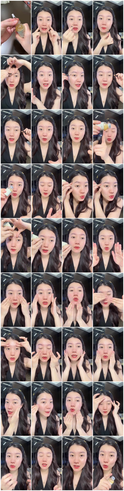
# 分镜脚本 + AI提示词｜29_7639409290628975910 - 平台：抖音 - 原链接：https://www.douyin.com/video/7639409290628975910 - 本地视频：/Users/mac/Desktop/视频素材/_中转/抖音_203833_7639409290628975910.mp4 - 时长：72.52 秒 - 抽帧规则：每 2 秒 1 帧 - 联系表：contact_sheet.jpg ## 使用说明 - 每个镜头按视频时间顺序排列。 - AI 提示词已按用户规范处理：以 `@xxx` 开头，产品/膏霜位置可复用 `@xxx`，不要求生成字幕，每条结尾明确不要字幕。 - 如需更精细版本，可基于 `frames/` 逐帧二次改写。 ## 分镜明细 ### 镜头 01｜约 00s｜开场钩子  画面描述：用近景快速建立产品/人物/使用场景，画面节奏干净直接，先给观众一个可感知的视觉记忆点。 分镜脚本：开场钩子：用近景快速建立产品/人物/使用场景，画面节奏干净直接，先给观众一个可感知的视觉记忆点。建议保持 1.5-2 秒节奏，动作不要过满，重点放在产品、手部和质感变化上。 AI提示词：@xxx广告开场近景，产品或手部动作进入画面，构图稳定，背景干净，第一秒抓住注意力，竖屏9:16，近景开场，镜头轻微推进，产品/膏霜位置使用@xxx，真实商业美妆短视频风格，高清细节，皮肤质感自然，光线柔和通透，色彩干净高级，背景不杂乱，动作连贯自然，负面：低清晰度、畸形手、过度磨皮、脏乱背景、文字水印、logo乱码、过曝、塑料感。整段视频不要出现任何字幕 ### 镜头 02｜约 02s｜开场钩子  画面描述：用近景快速建立产品/人物/使用场景，画面节奏干净直接，先给观众一个可感知的视觉记忆点。 分镜脚本：开场钩子：用近景快速建立产品/人物/使用场景，画面节奏干净直接，先给观众一个可感知的视觉记忆点。建议保持 1.5-2 秒节奏，动作不要过满，重点放在产品、手部和质感变化上。 AI提示词：@xxx广告开场近景，产品或手部动作进入画面，构图稳定，背景干净，第一秒抓住注意力，竖屏9:16，俯拍或侧拍，构图留白干净，产品/膏霜位置使用@xxx，真实商业美妆短视频风格，高清细节，皮肤质感自然，光线柔和通透，色彩干净高级，背景不杂乱，动作连贯自然，负面：低清晰度、畸形手、过度磨皮、脏乱背景、文字水印、logo乱码、过曝、塑料感。整段视频不要出现任何字幕 ### 镜头 03｜约 04s｜开场钩子  画面描述：用近景快速建立产品/人物/使用场景，画面节奏干净直接，先给观众一个可感知的视觉记忆点。 分镜脚本：开场钩子：用近景快速建立产品/人物/使用场景，画面节奏干净直接，先给观众一个可感知的视觉记忆点。建议保持 1.5-2 秒节奏，动作不要过满，重点放在产品、手部和质感变化上。 AI提示词：@xxx广告开场近景，产品或手部动作进入画面，构图稳定，背景干净，第一秒抓住注意力，竖屏9:16，微距特写，浅景深，产品/膏霜位置使用@xxx，真实商业美妆短视频风格，高清细节，皮肤质感自然，光线柔和通透，色彩干净高级，背景不杂乱，动作连贯自然，负面：低清晰度、畸形手、过度磨皮、脏乱背景、文字水印、logo乱码、过曝、塑料感。整段视频不要出现任何字幕 ### 镜头 04｜约 06s｜开场钩子  画面描述：用近景快速建立产品/人物/使用场景，画面节奏干净直接，先给观众一个可感知的视觉记忆点。 分镜脚本：开场钩子：用近景快速建立产品/人物/使用场景，画面节奏干净直接，先给观众一个可感知的视觉记忆点。建议保持 1.5-2 秒节奏，动作不要过满，重点放在产品、手部和质感变化上。 AI提示词：@xxx广告开场近景，产品或手部动作进入画面，构图稳定，背景干净，第一秒抓住注意力，竖屏9:16，中近景，轻微手持运动，产品/膏霜位置使用@xxx，真实商业美妆短视频风格，高清细节，皮肤质感自然，光线柔和通透，色彩干净高级，背景不杂乱，动作连贯自然，负面：低清晰度、畸形手、过度磨皮、脏乱背景、文字水印、logo乱码、过曝、塑料感。整段视频不要出现任何字幕 ### 镜头 05｜约 08s｜开场钩子  画面描述：用近景快速建立产品/人物/使用场景，画面节奏干净直接，先给观众一个可感知的视觉记忆点。 分镜脚本：开场钩子：用近景快速建立产品/人物/使用场景，画面节奏干净直接，先给观众一个可感知的视觉记忆点。建议保持 1.5-2 秒节奏，动作不要过满，重点放在产品、手部和质感变化上。 AI提示词：@xxx广告开场近景，产品或手部动作进入画面，构图稳定，背景干净，第一秒抓住注意力，竖屏9:16，俯拍或侧拍，构图留白干净，产品/膏霜位置使用@xxx，真实商业美妆短视频风格，高清细节，皮肤质感自然，光线柔和通透，色彩干净高级，背景不杂乱，动作连贯自然，负面：低清晰度、畸形手、过度磨皮、脏乱背景、文字水印、logo乱码、过曝、塑料感。整段视频不要出现任何字幕 ### 镜头 06｜约 10s｜产品亮相  画面描述：镜头聚焦产品外观、瓶身、质地或包装细节，突出卖点物件本身。 分镜脚本：产品亮相：镜头聚焦产品外观、瓶身、质地或包装细节，突出卖点物件本身。建议保持 1.5-2 秒节奏，动作不要过满，重点放在产品、手部和质感变化上。 AI提示词：@xxx产品展示特写，瓶身/膏霜/包装细节清晰，商业棚拍质感，浅景深，干净高级背景，竖屏9:16，微距特写，浅景深，产品/膏霜位置使用@xxx，真实商业美妆短视频风格，高清细节，皮肤质感自然，光线柔和通透，色彩干净高级，背景不杂乱，动作连贯自然，负面：低清晰度、畸形手、过度磨皮、脏乱背景、文字水印、logo乱码、过曝、塑料感。整段视频不要出现任何字幕 ### 镜头 07｜约 12s｜产品亮相  画面描述：镜头聚焦产品外观、瓶身、质地或包装细节，突出卖点物件本身。 分镜脚本：产品亮相：镜头聚焦产品外观、瓶身、质地或包装细节，突出卖点物件本身。建议保持 1.5-2 秒节奏，动作不要过满，重点放在产品、手部和质感变化上。 AI提示词：@xxx产品展示特写，瓶身/膏霜/包装细节清晰，商业棚拍质感，浅景深，干净高级背景，竖屏9:16，中近景，轻微手持运动，产品/膏霜位置使用@xxx，真实商业美妆短视频风格，高清细节，皮肤质感自然，光线柔和通透，色彩干净高级，背景不杂乱，动作连贯自然，负面：低清晰度、畸形手、过度磨皮、脏乱背景、文字水印、logo乱码、过曝、塑料感。整段视频不要出现任何字幕 ### 镜头 08｜约 14s｜产品亮相  画面描述：镜头聚焦产品外观、瓶身、质地或包装细节，突出卖点物件本身。 分镜脚本：产品亮相：镜头聚焦产品外观、瓶身、质地或包装细节，突出卖点物件本身。建议保持 1.5-2 秒节奏，动作不要过满，重点放在产品、手部和质感变化上。 AI提示词：@xxx产品展示特写，瓶身/膏霜/包装细节清晰，商业棚拍质感，浅景深，干净高级背景，竖屏9:16，俯拍或侧拍，构图留白干净，产品/膏霜位置使用@xxx，真实商业美妆短视频风格，高清细节，皮肤质感自然，光线柔和通透，色彩干净高级，背景不杂乱，动作连贯自然，负面：低清晰度、畸形手、过度磨皮、脏乱背景、文字水印、logo乱码、过曝、塑料感。整段视频不要出现任何字幕 ### 镜头 09｜约 16s｜产品亮相  画面描述：镜头聚焦产品外观、瓶身、质地或包装细节，突出卖点物件本身。 分镜脚本：产品亮相：镜头聚焦产品外观、瓶身、质地或包装细节，突出卖点物件本身。建议保持 1.5-2 秒节奏，动作不要过满，重点放在产品、手部和质感变化上。 AI提示词：@xxx产品展示特写，瓶身/膏霜/包装细节清晰，商业棚拍质感，浅景深，干净高级背景，竖屏9:16，微距特写，浅景深，产品/膏霜位置使用@xxx，真实商业美妆短视频风格，高清细节，皮肤质感自然，光线柔和通透，色彩干净高级，背景不杂乱，动作连贯自然，负面：低清晰度、畸形手、过度磨皮、脏乱背景、文字水印、logo乱码、过曝、塑料感。整段视频不要出现任何字幕 ### 镜头 10｜约 18s｜动作演示  画面描述：通过手部拿取、打开、挤压、涂抹、展示等动作，把产品使用方式讲清楚。 分镜脚本：动作演示：通过手部拿取、打开、挤压、涂抹、展示等动作，把产品使用方式讲清楚。建议保持 1.5-2 秒节奏，动作不要过满，重点放在产品、手部和质感变化上。 AI提示词：@xxx手部操作特写，年轻女性白皙双手自然拿取并使用产品，动作柔和顺滑，真实生活化，竖屏9:16，中近景，轻微手持运动，产品/膏霜位置使用@xxx，真实商业美妆短视频风格，高清细节，皮肤质感自然，光线柔和通透，色彩干净高级，背景不杂乱，动作连贯自然，负面：低清晰度、畸形手、过度磨皮、脏乱背景、文字水印、logo乱码、过曝、塑料感。整段视频不要出现任何字幕 ### 镜头 11｜约 20s｜动作演示  画面描述：通过手部拿取、打开、挤压、涂抹、展示等动作，把产品使用方式讲清楚。 分镜脚本：动作演示：通过手部拿取、打开、挤压、涂抹、展示等动作，把产品使用方式讲清楚。建议保持 1.5-2 秒节奏，动作不要过满，重点放在产品、手部和质感变化上。 AI提示词：@xxx手部操作特写，年轻女性白皙双手自然拿取并使用产品，动作柔和顺滑，真实生活化，竖屏9:16，俯拍或侧拍，构图留白干净，产品/膏霜位置使用@xxx，真实商业美妆短视频风格，高清细节，皮肤质感自然，光线柔和通透，色彩干净高级，背景不杂乱，动作连贯自然，负面：低清晰度、畸形手、过度磨皮、脏乱背景、文字水印、logo乱码、过曝、塑料感。整段视频不要出现任何字幕 ### 镜头 12｜约 22s｜动作演示  画面描述：通过手部拿取、打开、挤压、涂抹、展示等动作，把产品使用方式讲清楚。 分镜脚本：动作演示：通过手部拿取、打开、挤压、涂抹、展示等动作，把产品使用方式讲清楚。建议保持 1.5-2 秒节奏，动作不要过满，重点放在产品、手部和质感变化上。 AI提示词：@xxx手部操作特写，年轻女性白皙双手自然拿取并使用产品，动作柔和顺滑，真实生活化，竖屏9:16，微距特写，浅景深，产品/膏霜位置使用@xxx，真实商业美妆短视频风格，高清细节，皮肤质感自然，光线柔和通透，色彩干净高级，背景不杂乱，动作连贯自然，负面：低清晰度、畸形手、过度磨皮、脏乱背景、文字水印、logo乱码、过曝、塑料感。整段视频不要出现任何字幕 ### 镜头 13｜约 24s｜动作演示  画面描述：通过手部拿取、打开、挤压、涂抹、展示等动作，把产品使用方式讲清楚。 分镜脚本：动作演示：通过手部拿取、打开、挤压、涂抹、展示等动作，把产品使用方式讲清楚。建议保持 1.5-2 秒节奏，动作不要过满，重点放在产品、手部和质感变化上。 AI提示词：@xxx手部操作特写，年轻女性白皙双手自然拿取并使用产品，动作柔和顺滑，真实生活化，竖屏9:16，中近景，轻微手持运动，产品/膏霜位置使用@xxx，真实商业美妆短视频风格，高清细节，皮肤质感自然，光线柔和通透，色彩干净高级，背景不杂乱，动作连贯自然，负面：低清晰度、畸形手、过度磨皮、脏乱背景、文字水印、logo乱码、过曝、塑料感。整段视频不要出现任何字幕 ### 镜头 14｜约 26s｜动作演示  画面描述：通过手部拿取、打开、挤压、涂抹、展示等动作，把产品使用方式讲清楚。 分镜脚本：动作演示：通过手部拿取、打开、挤压、涂抹、展示等动作，把产品使用方式讲清楚。建议保持 1.5-2 秒节奏，动作不要过满，重点放在产品、手部和质感变化上。 AI提示词：@xxx手部操作特写，年轻女性白皙双手自然拿取并使用产品，动作柔和顺滑，真实生活化，竖屏9:16，俯拍或侧拍，构图留白干净，产品/膏霜位置使用@xxx，真实商业美妆短视频风格，高清细节，皮肤质感自然，光线柔和通透，色彩干净高级，背景不杂乱，动作连贯自然，负面：低清晰度、畸形手、过度磨皮、脏乱背景、文字水印、logo乱码、过曝、塑料感。整段视频不要出现任何字幕 ### 镜头 15｜约 28s｜质地细节  画面描述：放大产品质地、颜色、光泽或上肤效果，突出“看得见”的感官体验。 分镜脚本：质地细节：放大产品质地、颜色、光泽或上肤效果，突出“看得见”的感官体验。建议保持 1.5-2 秒节奏，动作不要过满，重点放在产品、手部和质感变化上。 AI提示词：@xxx微距质地镜头，膏体/液体/粉质细腻可见，柔和高光，干净皮肤纹理，真实美妆广告质感，竖屏9:16，微距特写，浅景深，产品/膏霜位置使用@xxx，真实商业美妆短视频风格，高清细节，皮肤质感自然，光线柔和通透，色彩干净高级，背景不杂乱，动作连贯自然，负面：低清晰度、畸形手、过度磨皮、脏乱背景、文字水印、logo乱码、过曝、塑料感。整段视频不要出现任何字幕 ### 镜头 16｜约 30s｜质地细节  画面描述：放大产品质地、颜色、光泽或上肤效果，突出“看得见”的感官体验。 分镜脚本：质地细节：放大产品质地、颜色、光泽或上肤效果，突出“看得见”的感官体验。建议保持 1.5-2 秒节奏，动作不要过满，重点放在产品、手部和质感变化上。 AI提示词：@xxx微距质地镜头，膏体/液体/粉质细腻可见，柔和高光，干净皮肤纹理，真实美妆广告质感，竖屏9:16，中近景，轻微手持运动，产品/膏霜位置使用@xxx，真实商业美妆短视频风格，高清细节，皮肤质感自然，光线柔和通透，色彩干净高级，背景不杂乱，动作连贯自然，负面：低清晰度、畸形手、过度磨皮、脏乱背景、文字水印、logo乱码、过曝、塑料感。整段视频不要出现任何字幕 ### 镜头 17｜约 32s｜质地细节  画面描述：放大产品质地、颜色、光泽或上肤效果，突出“看得见”的感官体验。 分镜脚本：质地细节：放大产品质地、颜色、光泽或上肤效果，突出“看得见”的感官体验。建议保持 1.5-2 秒节奏，动作不要过满，重点放在产品、手部和质感变化上。 AI提示词：@xxx微距质地镜头，膏体/液体/粉质细腻可见，柔和高光，干净皮肤纹理，真实美妆广告质感，竖屏9:16，俯拍或侧拍，构图留白干净，产品/膏霜位置使用@xxx，真实商业美妆短视频风格，高清细节，皮肤质感自然，光线柔和通透，色彩干净高级，背景不杂乱，动作连贯自然，负面：低清晰度、畸形手、过度磨皮、脏乱背景、文字水印、logo乱码、过曝、塑料感。整段视频不要出现任何字幕 ### 镜头 18｜约 34s｜质地细节  画面描述：放大产品质地、颜色、光泽或上肤效果，突出“看得见”的感官体验。 分镜脚本：质地细节：放大产品质地、颜色、光泽或上肤效果，突出“看得见”的感官体验。建议保持 1.5-2 秒节奏，动作不要过满，重点放在产品、手部和质感变化上。 AI提示词：@xxx微距质地镜头，膏体/液体/粉质细腻可见，柔和高光，干净皮肤纹理，真实美妆广告质感，竖屏9:16，微距特写，浅景深，产品/膏霜位置使用@xxx，真实商业美妆短视频风格，高清细节，皮肤质感自然，光线柔和通透，色彩干净高级，背景不杂乱，动作连贯自然，负面：低清晰度、畸形手、过度磨皮、脏乱背景、文字水印、logo乱码、过曝、塑料感。整段视频不要出现任何字幕 ### 镜头 19｜约 36s｜使用效果  画面描述：镜头转向脸部、手背、局部皮肤或场景效果，表现使用前后的氛围变化。 分镜脚本：使用效果：镜头转向脸部、手背、局部皮肤或场景效果，表现使用前后的氛围变化。建议保持 1.5-2 秒节奏，动作不要过满，重点放在产品、手部和质感变化上。 AI提示词：@xxx效果展示镜头，肤色干净通透，妆效自然，画面明亮柔和，人物状态精致不夸张，竖屏9:16，中近景，轻微手持运动，产品/膏霜位置使用@xxx，真实商业美妆短视频风格，高清细节，皮肤质感自然，光线柔和通透，色彩干净高级，背景不杂乱，动作连贯自然，负面：低清晰度、畸形手、过度磨皮、脏乱背景、文字水印、logo乱码、过曝、塑料感。整段视频不要出现任何字幕 ### 镜头 20｜约 38s｜使用效果  画面描述：镜头转向脸部、手背、局部皮肤或场景效果，表现使用前后的氛围变化。 分镜脚本：使用效果：镜头转向脸部、手背、局部皮肤或场景效果，表现使用前后的氛围变化。建议保持 1.5-2 秒节奏，动作不要过满，重点放在产品、手部和质感变化上。 AI提示词：@xxx效果展示镜头，肤色干净通透，妆效自然，画面明亮柔和，人物状态精致不夸张，竖屏9:16，俯拍或侧拍，构图留白干净，产品/膏霜位置使用@xxx，真实商业美妆短视频风格，高清细节，皮肤质感自然，光线柔和通透，色彩干净高级，背景不杂乱，动作连贯自然，负面：低清晰度、畸形手、过度磨皮、脏乱背景、文字水印、logo乱码、过曝、塑料感。整段视频不要出现任何字幕 ### 镜头 21｜约 40s｜使用效果  画面描述：镜头转向脸部、手背、局部皮肤或场景效果，表现使用前后的氛围变化。 分镜脚本：使用效果：镜头转向脸部、手背、局部皮肤或场景效果，表现使用前后的氛围变化。建议保持 1.5-2 秒节奏，动作不要过满，重点放在产品、手部和质感变化上。 AI提示词：@xxx效果展示镜头，肤色干净通透，妆效自然，画面明亮柔和，人物状态精致不夸张，竖屏9:16，微距特写，浅景深，产品/膏霜位置使用@xxx，真实商业美妆短视频风格，高清细节，皮肤质感自然，光线柔和通透，色彩干净高级，背景不杂乱，动作连贯自然，负面：低清晰度、畸形手、过度磨皮、脏乱背景、文字水印、logo乱码、过曝、塑料感。整段视频不要出现任何字幕 ### 镜头 22｜约 42s｜使用效果  画面描述：镜头转向脸部、手背、局部皮肤或场景效果，表现使用前后的氛围变化。 分镜脚本：使用效果：镜头转向脸部、手背、局部皮肤或场景效果，表现使用前后的氛围变化。建议保持 1.5-2 秒节奏，动作不要过满，重点放在产品、手部和质感变化上。 AI提示词：@xxx效果展示镜头，肤色干净通透，妆效自然，画面明亮柔和，人物状态精致不夸张，竖屏9:16，中近景，轻微手持运动，产品/膏霜位置使用@xxx，真实商业美妆短视频风格，高清细节，皮肤质感自然，光线柔和通透，色彩干净高级，背景不杂乱，动作连贯自然，负面：低清晰度、畸形手、过度磨皮、脏乱背景、文字水印、logo乱码、过曝、塑料感。整段视频不要出现任何字幕 ### 镜头 23｜约 44s｜使用效果  画面描述：镜头转向脸部、手背、局部皮肤或场景效果，表现使用前后的氛围变化。 分镜脚本：使用效果：镜头转向脸部、手背、局部皮肤或场景效果，表现使用前后的氛围变化。建议保持 1.5-2 秒节奏，动作不要过满，重点放在产品、手部和质感变化上。 AI提示词：@xxx效果展示镜头，肤色干净通透，妆效自然，画面明亮柔和，人物状态精致不夸张，竖屏9:16，俯拍或侧拍，构图留白干净，产品/膏霜位置使用@xxx，真实商业美妆短视频风格，高清细节，皮肤质感自然，光线柔和通透，色彩干净高级，背景不杂乱，动作连贯自然，负面：低清晰度、畸形手、过度磨皮、脏乱背景、文字水印、logo乱码、过曝、塑料感。整段视频不要出现任何字幕 ### 镜头 24｜约 46s｜氛围补充  画面描述：用环境、道具、花材、桌面、布景或生活方式镜头补足品牌调性。 分镜脚本：氛围补充：用环境、道具、花材、桌面、布景或生活方式镜头补足品牌调性。建议保持 1.5-2 秒节奏，动作不要过满，重点放在产品、手部和质感变化上。 AI提示词：@xxx生活方式氛围镜头，桌面陈列精致，道具简洁，暖色自然光，轻奢美妆视觉风格，竖屏9:16，微距特写，浅景深，产品/膏霜位置使用@xxx，真实商业美妆短视频风格，高清细节，皮肤质感自然，光线柔和通透，色彩干净高级，背景不杂乱，动作连贯自然，负面：低清晰度、畸形手、过度磨皮、脏乱背景、文字水印、logo乱码、过曝、塑料感。整段视频不要出现任何字幕 ### 镜头 25｜约 48s｜氛围补充  画面描述：用环境、道具、花材、桌面、布景或生活方式镜头补足品牌调性。 分镜脚本：氛围补充：用环境、道具、花材、桌面、布景或生活方式镜头补足品牌调性。建议保持 1.5-2 秒节奏，动作不要过满，重点放在产品、手部和质感变化上。 AI提示词：@xxx生活方式氛围镜头，桌面陈列精致，道具简洁，暖色自然光，轻奢美妆视觉风格，竖屏9:16，中近景，轻微手持运动，产品/膏霜位置使用@xxx，真实商业美妆短视频风格，高清细节，皮肤质感自然，光线柔和通透，色彩干净高级，背景不杂乱，动作连贯自然，负面：低清晰度、畸形手、过度磨皮、脏乱背景、文字水印、logo乱码、过曝、塑料感。整段视频不要出现任何字幕 ### 镜头 26｜约 50s｜氛围补充  画面描述：用环境、道具、花材、桌面、布景或生活方式镜头补足品牌调性。 分镜脚本：氛围补充：用环境、道具、花材、桌面、布景或生活方式镜头补足品牌调性。建议保持 1.5-2 秒节奏，动作不要过满，重点放在产品、手部和质感变化上。 AI提示词：@xxx生活方式氛围镜头，桌面陈列精致，道具简洁，暖色自然光，轻奢美妆视觉风格，竖屏9:16，俯拍或侧拍，构图留白干净，产品/膏霜位置使用@xxx，真实商业美妆短视频风格，高清细节，皮肤质感自然，光线柔和通透，色彩干净高级，背景不杂乱，动作连贯自然，负面：低清晰度、畸形手、过度磨皮、脏乱背景、文字水印、logo乱码、过曝、塑料感。整段视频不要出现任何字幕 ### 镜头 27｜约 52s｜氛围补充  画面描述：用环境、道具、花材、桌面、布景或生活方式镜头补足品牌调性。 分镜脚本：氛围补充：用环境、道具、花材、桌面、布景或生活方式镜头补足品牌调性。建议保持 1.5-2 秒节奏，动作不要过满，重点放在产品、手部和质感变化上。 AI提示词：@xxx生活方式氛围镜头，桌面陈列精致，道具简洁，暖色自然光，轻奢美妆视觉风格，竖屏9:16，微距特写，浅景深，产品/膏霜位置使用@xxx，真实商业美妆短视频风格，高清细节，皮肤质感自然，光线柔和通透，色彩干净高级，背景不杂乱，动作连贯自然，负面：低清晰度、畸形手、过度磨皮、脏乱背景、文字水印、logo乱码、过曝、塑料感。整段视频不要出现任何字幕 ### 镜头 28｜约 54s｜卖点强化  画面描述：回到核心动作或核心细节，重复强化产品记忆点，让画面更有转化感。 分镜脚本：卖点强化：回到核心动作或核心细节，重复强化产品记忆点，让画面更有转化感。建议保持 1.5-2 秒节奏，动作不要过满，重点放在产品、手部和质感变化上。 AI提示词：@xxx卖点强化特写，产品与使用动作同框，画面重点集中，清晰表现质感、颜色和使用体验，竖屏9:16，中近景，轻微手持运动，产品/膏霜位置使用@xxx，真实商业美妆短视频风格，高清细节，皮肤质感自然，光线柔和通透，色彩干净高级，背景不杂乱，动作连贯自然，负面：低清晰度、畸形手、过度磨皮、脏乱背景、文字水印、logo乱码、过曝、塑料感。整段视频不要出现任何字幕 ### 镜头 29｜约 56s｜卖点强化  画面描述：回到核心动作或核心细节，重复强化产品记忆点，让画面更有转化感。 分镜脚本：卖点强化：回到核心动作或核心细节，重复强化产品记忆点，让画面更有转化感。建议保持 1.5-2 秒节奏，动作不要过满，重点放在产品、手部和质感变化上。 AI提示词：@xxx卖点强化特写，产品与使用动作同框，画面重点集中，清晰表现质感、颜色和使用体验，竖屏9:16，俯拍或侧拍，构图留白干净，产品/膏霜位置使用@xxx，真实商业美妆短视频风格，高清细节，皮肤质感自然，光线柔和通透，色彩干净高级，背景不杂乱，动作连贯自然，负面：低清晰度、畸形手、过度磨皮、脏乱背景、文字水印、logo乱码、过曝、塑料感。整段视频不要出现任何字幕 ### 镜头 30｜约 58s｜卖点强化  画面描述：回到核心动作或核心细节，重复强化产品记忆点，让画面更有转化感。 分镜脚本：卖点强化：回到核心动作或核心细节，重复强化产品记忆点，让画面更有转化感。建议保持 1.5-2 秒节奏，动作不要过满，重点放在产品、手部和质感变化上。 AI提示词：@xxx卖点强化特写，产品与使用动作同框，画面重点集中，清晰表现质感、颜色和使用体验，竖屏9:16，微距特写，浅景深，产品/膏霜位置使用@xxx，真实商业美妆短视频风格，高清细节，皮肤质感自然，光线柔和通透，色彩干净高级，背景不杂乱，动作连贯自然，负面：低清晰度、畸形手、过度磨皮、脏乱背景、文字水印、logo乱码、过曝、塑料感。整段视频不要出现任何字幕 ### 镜头 31｜约 60s｜卖点强化  画面描述：回到核心动作或核心细节，重复强化产品记忆点，让画面更有转化感。 分镜脚本：卖点强化：回到核心动作或核心细节，重复强化产品记忆点，让画面更有转化感。建议保持 1.5-2 秒节奏，动作不要过满，重点放在产品、手部和质感变化上。 AI提示词：@xxx卖点强化特写，产品与使用动作同框，画面重点集中，清晰表现质感、颜色和使用体验，竖屏9:16，中近景，轻微手持运动，产品/膏霜位置使用@xxx，真实商业美妆短视频风格，高清细节，皮肤质感自然，光线柔和通透，色彩干净高级，背景不杂乱，动作连贯自然，负面：低清晰度、畸形手、过度磨皮、脏乱背景、文字水印、logo乱码、过曝、塑料感。整段视频不要出现任何字幕 ### 镜头 32｜约 62s｜卖点强化  画面描述：回到核心动作或核心细节，重复强化产品记忆点，让画面更有转化感。 分镜脚本：卖点强化：回到核心动作或核心细节，重复强化产品记忆点，让画面更有转化感。建议保持 1.5-2 秒节奏，动作不要过满，重点放在产品、手部和质感变化上。 AI提示词：@xxx卖点强化特写，产品与使用动作同框，画面重点集中，清晰表现质感、颜色和使用体验，竖屏9:16，俯拍或侧拍，构图留白干净，产品/膏霜位置使用@xxx，真实商业美妆短视频风格，高清细节，皮肤质感自然，光线柔和通透，色彩干净高级，背景不杂乱，动作连贯自然，负面：低清晰度、畸形手、过度磨皮、脏乱背景、文字水印、logo乱码、过曝、塑料感。整段视频不要出现任何字幕 ### 镜头 33｜约 64s｜收尾定格  画面描述：用产品定格、人物满意状态或整套陈列结束，形成干净的广告收尾。 分镜脚本：收尾定格：用产品定格、人物满意状态或整套陈列结束，形成干净的广告收尾。建议保持 1.5-2 秒节奏，动作不要过满，重点放在产品、手部和质感变化上。 AI提示词：@xxx广告收尾定格，产品居中摆放或手持展示，构图完整，高级干净，适合短视频结尾，竖屏9:16，微距特写，浅景深，产品/膏霜位置使用@xxx，真实商业美妆短视频风格，高清细节，皮肤质感自然，光线柔和通透，色彩干净高级，背景不杂乱，动作连贯自然，负面：低清晰度、畸形手、过度磨皮、脏乱背景、文字水印、logo乱码、过曝、塑料感。整段视频不要出现任何字幕 ### 镜头 34｜约 66s｜收尾定格  画面描述：用产品定格、人物满意状态或整套陈列结束，形成干净的广告收尾。 分镜脚本：收尾定格：用产品定格、人物满意状态或整套陈列结束，形成干净的广告收尾。建议保持 1.5-2 秒节奏，动作不要过满，重点放在产品、手部和质感变化上。 AI提示词：@xxx广告收尾定格，产品居中摆放或手持展示，构图完整，高级干净，适合短视频结尾，竖屏9:16，中近景，轻微手持运动，产品/膏霜位置使用@xxx，真实商业美妆短视频风格，高清细节，皮肤质感自然，光线柔和通透，色彩干净高级，背景不杂乱，动作连贯自然，负面：低清晰度、畸形手、过度磨皮、脏乱背景、文字水印、logo乱码、过曝、塑料感。整段视频不要出现任何字幕 ### 镜头 35｜约 68s｜收尾定格  画面描述：用产品定格、人物满意状态或整套陈列结束，形成干净的广告收尾。 分镜脚本：收尾定格：用产品定格、人物满意状态或整套陈列结束，形成干净的广告收尾。建议保持 1.5-2 秒节奏，动作不要过满，重点放在产品、手部和质感变化上。 AI提示词：@xxx广告收尾定格，产品居中摆放或手持展示，构图完整，高级干净，适合短视频结尾，竖屏9:16，俯拍或侧拍，构图留白干净，产品/膏霜位置使用@xxx，真实商业美妆短视频风格，高清细节，皮肤质感自然，光线柔和通透，色彩干净高级，背景不杂乱，动作连贯自然，负面：低清晰度、畸形手、过度磨皮、脏乱背景、文字水印、logo乱码、过曝、塑料感。整段视频不要出现任何字幕 ### 镜头 36｜约 70s｜收尾定格  画面描述：用产品定格、人物满意状态或整套陈列结束，形成干净的广告收尾。 分镜脚本：收尾定格：用产品定格、人物满意状态或整套陈列结束，形成干净的广告收尾。建议保持 1.5-2 秒节奏，动作不要过满，重点放在产品、手部和质感变化上。 AI提示词：@xxx广告收尾定格，产品居中摆放或手持展示，构图完整，高级干净，适合短视频结尾，竖屏9:16，稳定定格，适合结尾停留，产品/膏霜位置使用@xxx，真实商业美妆短视频风格，高清细节，皮肤质感自然，光线柔和通透，色彩干净高级，背景不杂乱，动作连贯自然，负面：低清晰度、畸形手、过度磨皮、脏乱背景、文字水印、logo乱码、过曝、塑料感。整段视频不要出现任何字幕
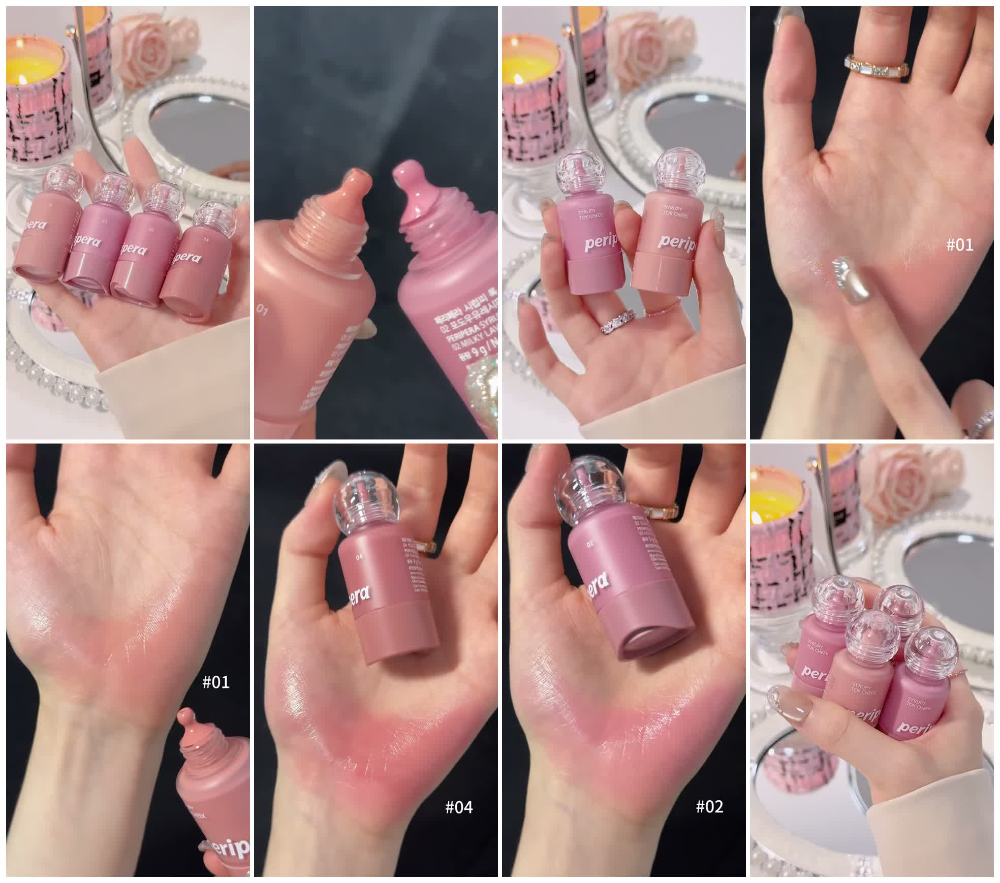
# 分镜脚本 + AI提示词｜30_689ef8fb000000001c03e573 - 平台：小红书 - 原链接：https://www.xiaohongshu.com/discovery/item/689ef8fb000000001c03e573?source=webshare&xhsshare=pc_web&xsec_token=CBKDXo3VPFkwgclOAbb8lhAovvDjsyfVFL4A8WeBTMU_M=&xsec_source=pc_share - 本地视频：/Users/mac/Desktop/视频素材/_中转/🎀戳中甜妹心窝！小奶瓶液体腮红嫩晕了！！.mp4 - 时长：16.13 秒 - 抽帧规则：每 2 秒 1 帧 - 联系表：contact_sheet.jpg ## 使用说明 - 每个镜头按视频时间顺序排列。 - AI 提示词已按用户规范处理：以 `@xxx` 开头，产品/膏霜位置可复用 `@xxx`，不要求生成字幕，每条结尾明确不要字幕。 - 如需更精细版本，可基于 `frames/` 逐帧二次改写。 ## 分镜明细 ### 镜头 01｜约 00s｜开场钩子  画面描述：用近景快速建立产品/人物/使用场景，画面节奏干净直接，先给观众一个可感知的视觉记忆点。 分镜脚本：开场钩子：用近景快速建立产品/人物/使用场景，画面节奏干净直接，先给观众一个可感知的视觉记忆点。建议保持 1.5-2 秒节奏，动作不要过满，重点放在产品、手部和质感变化上。 AI提示词：@xxx广告开场近景，产品或手部动作进入画面，构图稳定，背景干净，第一秒抓住注意力，竖屏9:16，近景开场，镜头轻微推进，产品/膏霜位置使用@xxx，真实商业美妆短视频风格，高清细节，皮肤质感自然，光线柔和通透，色彩干净高级，背景不杂乱，动作连贯自然，负面：低清晰度、畸形手、过度磨皮、脏乱背景、文字水印、logo乱码、过曝、塑料感。整段视频不要出现任何字幕 ### 镜头 02｜约 02s｜产品亮相  画面描述：镜头聚焦产品外观、瓶身、质地或包装细节，突出卖点物件本身。 分镜脚本：产品亮相：镜头聚焦产品外观、瓶身、质地或包装细节，突出卖点物件本身。建议保持 1.5-2 秒节奏，动作不要过满，重点放在产品、手部和质感变化上。 AI提示词：@xxx产品展示特写，瓶身/膏霜/包装细节清晰，商业棚拍质感，浅景深，干净高级背景，竖屏9:16，俯拍或侧拍，构图留白干净，产品/膏霜位置使用@xxx，真实商业美妆短视频风格，高清细节，皮肤质感自然，光线柔和通透，色彩干净高级，背景不杂乱，动作连贯自然，负面：低清晰度、畸形手、过度磨皮、脏乱背景、文字水印、logo乱码、过曝、塑料感。整段视频不要出现任何字幕 ### 镜头 03｜约 04s｜动作演示  画面描述：通过手部拿取、打开、挤压、涂抹、展示等动作，把产品使用方式讲清楚。 分镜脚本：动作演示：通过手部拿取、打开、挤压、涂抹、展示等动作，把产品使用方式讲清楚。建议保持 1.5-2 秒节奏，动作不要过满，重点放在产品、手部和质感变化上。 AI提示词：@xxx手部操作特写，年轻女性白皙双手自然拿取并使用产品，动作柔和顺滑，真实生活化，竖屏9:16，微距特写，浅景深，产品/膏霜位置使用@xxx，真实商业美妆短视频风格，高清细节，皮肤质感自然，光线柔和通透，色彩干净高级，背景不杂乱，动作连贯自然，负面：低清晰度、畸形手、过度磨皮、脏乱背景、文字水印、logo乱码、过曝、塑料感。整段视频不要出现任何字幕 ### 镜头 04｜约 06s｜质地细节  画面描述：放大产品质地、颜色、光泽或上肤效果，突出“看得见”的感官体验。 分镜脚本：质地细节：放大产品质地、颜色、光泽或上肤效果，突出“看得见”的感官体验。建议保持 1.5-2 秒节奏，动作不要过满，重点放在产品、手部和质感变化上。 AI提示词：@xxx微距质地镜头，膏体/液体/粉质细腻可见，柔和高光，干净皮肤纹理，真实美妆广告质感，竖屏9:16，中近景，轻微手持运动，产品/膏霜位置使用@xxx，真实商业美妆短视频风格，高清细节，皮肤质感自然，光线柔和通透，色彩干净高级，背景不杂乱，动作连贯自然，负面：低清晰度、畸形手、过度磨皮、脏乱背景、文字水印、logo乱码、过曝、塑料感。整段视频不要出现任何字幕 ### 镜头 05｜约 08s｜使用效果  画面描述：镜头转向脸部、手背、局部皮肤或场景效果，表现使用前后的氛围变化。 分镜脚本：使用效果：镜头转向脸部、手背、局部皮肤或场景效果，表现使用前后的氛围变化。建议保持 1.5-2 秒节奏，动作不要过满，重点放在产品、手部和质感变化上。 AI提示词：@xxx效果展示镜头，肤色干净通透，妆效自然，画面明亮柔和，人物状态精致不夸张，竖屏9:16，俯拍或侧拍，构图留白干净，产品/膏霜位置使用@xxx，真实商业美妆短视频风格，高清细节，皮肤质感自然，光线柔和通透，色彩干净高级，背景不杂乱，动作连贯自然，负面：低清晰度、畸形手、过度磨皮、脏乱背景、文字水印、logo乱码、过曝、塑料感。整段视频不要出现任何字幕 ### 镜头 06｜约 10s｜氛围补充  画面描述：用环境、道具、花材、桌面、布景或生活方式镜头补足品牌调性。 分镜脚本：氛围补充：用环境、道具、花材、桌面、布景或生活方式镜头补足品牌调性。建议保持 1.5-2 秒节奏，动作不要过满，重点放在产品、手部和质感变化上。 AI提示词：@xxx生活方式氛围镜头，桌面陈列精致，道具简洁，暖色自然光，轻奢美妆视觉风格，竖屏9:16，微距特写，浅景深，产品/膏霜位置使用@xxx，真实商业美妆短视频风格，高清细节，皮肤质感自然，光线柔和通透，色彩干净高级，背景不杂乱，动作连贯自然，负面：低清晰度、畸形手、过度磨皮、脏乱背景、文字水印、logo乱码、过曝、塑料感。整段视频不要出现任何字幕 ### 镜头 07｜约 12s｜卖点强化  画面描述：回到核心动作或核心细节，重复强化产品记忆点，让画面更有转化感。 分镜脚本：卖点强化：回到核心动作或核心细节，重复强化产品记忆点，让画面更有转化感。建议保持 1.5-2 秒节奏，动作不要过满，重点放在产品、手部和质感变化上。 AI提示词：@xxx卖点强化特写，产品与使用动作同框，画面重点集中，清晰表现质感、颜色和使用体验，竖屏9:16，中近景，轻微手持运动，产品/膏霜位置使用@xxx，真实商业美妆短视频风格，高清细节，皮肤质感自然，光线柔和通透，色彩干净高级，背景不杂乱，动作连贯自然，负面：低清晰度、畸形手、过度磨皮、脏乱背景、文字水印、logo乱码、过曝、塑料感。整段视频不要出现任何字幕 ### 镜头 08｜约 14s｜收尾定格  画面描述：用产品定格、人物满意状态或整套陈列结束，形成干净的广告收尾。 分镜脚本：收尾定格：用产品定格、人物满意状态或整套陈列结束，形成干净的广告收尾。建议保持 1.5-2 秒节奏，动作不要过满，重点放在产品、手部和质感变化上。 AI提示词：@xxx广告收尾定格，产品居中摆放或手持展示，构图完整，高级干净，适合短视频结尾，竖屏9:16，稳定定格，适合结尾停留，产品/膏霜位置使用@xxx，真实商业美妆短视频风格，高清细节，皮肤质感自然，光线柔和通透，色彩干净高级，背景不杂乱，动作连贯自然，负面：低清晰度、畸形手、过度磨皮、脏乱背景、文字水印、logo乱码、过曝、塑料感。整段视频不要出现任何字幕
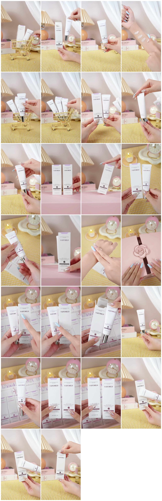
# 分镜脚本 + AI提示词｜31_692e65fd0000000019024c25 - 平台：小红书 - 原链接：https://www.xiaohongshu.com/discovery/item/692e65fd0000000019024c25?source=webshare&xhsshare=pc_web&xsec_token=CBMK7C_n_6IAcZz9GtcUlQ1Fi4qmBhZvHXcJJagqdkx_o=&xsec_source=pc_share - 本地视频：/Users/mac/Desktop/视频素材/_中转/美妆护肤产品展示拍摄.mp4 - 时长：52.33 秒 - 抽帧规则：每 2 秒 1 帧 - 联系表：contact_sheet.jpg ## 使用说明 - 每个镜头按视频时间顺序排列。 - AI 提示词已按用户规范处理：以 `@xxx` 开头，产品/膏霜位置可复用 `@xxx`，不要求生成字幕，每条结尾明确不要字幕。 - 如需更精细版本，可基于 `frames/` 逐帧二次改写。 ## 分镜明细 ### 镜头 01｜约 00s｜开场钩子  画面描述：用近景快速建立产品/人物/使用场景，画面节奏干净直接，先给观众一个可感知的视觉记忆点。 分镜脚本：开场钩子：用近景快速建立产品/人物/使用场景，画面节奏干净直接，先给观众一个可感知的视觉记忆点。建议保持 1.5-2 秒节奏，动作不要过满，重点放在产品、手部和质感变化上。 AI提示词：@xxx广告开场近景，产品或手部动作进入画面，构图稳定，背景干净，第一秒抓住注意力，竖屏9:16，近景开场，镜头轻微推进，产品/膏霜位置使用@xxx，真实商业美妆短视频风格，高清细节，皮肤质感自然，光线柔和通透，色彩干净高级，背景不杂乱，动作连贯自然，负面：低清晰度、畸形手、过度磨皮、脏乱背景、文字水印、logo乱码、过曝、塑料感。整段视频不要出现任何字幕 ### 镜头 02｜约 02s｜开场钩子  画面描述：用近景快速建立产品/人物/使用场景，画面节奏干净直接，先给观众一个可感知的视觉记忆点。 分镜脚本：开场钩子：用近景快速建立产品/人物/使用场景，画面节奏干净直接，先给观众一个可感知的视觉记忆点。建议保持 1.5-2 秒节奏，动作不要过满，重点放在产品、手部和质感变化上。 AI提示词：@xxx广告开场近景，产品或手部动作进入画面，构图稳定，背景干净，第一秒抓住注意力，竖屏9:16，俯拍或侧拍，构图留白干净，产品/膏霜位置使用@xxx，真实商业美妆短视频风格，高清细节，皮肤质感自然，光线柔和通透，色彩干净高级，背景不杂乱，动作连贯自然，负面：低清晰度、畸形手、过度磨皮、脏乱背景、文字水印、logo乱码、过曝、塑料感。整段视频不要出现任何字幕 ### 镜头 03｜约 04s｜开场钩子  画面描述：用近景快速建立产品/人物/使用场景，画面节奏干净直接，先给观众一个可感知的视觉记忆点。 分镜脚本：开场钩子：用近景快速建立产品/人物/使用场景，画面节奏干净直接，先给观众一个可感知的视觉记忆点。建议保持 1.5-2 秒节奏，动作不要过满，重点放在产品、手部和质感变化上。 AI提示词：@xxx广告开场近景，产品或手部动作进入画面，构图稳定，背景干净，第一秒抓住注意力，竖屏9:16，微距特写，浅景深，产品/膏霜位置使用@xxx，真实商业美妆短视频风格，高清细节，皮肤质感自然，光线柔和通透，色彩干净高级，背景不杂乱，动作连贯自然，负面：低清晰度、畸形手、过度磨皮、脏乱背景、文字水印、logo乱码、过曝、塑料感。整段视频不要出现任何字幕 ### 镜头 04｜约 06s｜开场钩子  画面描述：用近景快速建立产品/人物/使用场景，画面节奏干净直接，先给观众一个可感知的视觉记忆点。 分镜脚本：开场钩子：用近景快速建立产品/人物/使用场景，画面节奏干净直接，先给观众一个可感知的视觉记忆点。建议保持 1.5-2 秒节奏，动作不要过满，重点放在产品、手部和质感变化上。 AI提示词：@xxx广告开场近景，产品或手部动作进入画面，构图稳定，背景干净，第一秒抓住注意力，竖屏9:16，中近景，轻微手持运动，产品/膏霜位置使用@xxx，真实商业美妆短视频风格，高清细节，皮肤质感自然，光线柔和通透，色彩干净高级，背景不杂乱，动作连贯自然，负面：低清晰度、畸形手、过度磨皮、脏乱背景、文字水印、logo乱码、过曝、塑料感。整段视频不要出现任何字幕 ### 镜头 05｜约 08s｜产品亮相  画面描述：镜头聚焦产品外观、瓶身、质地或包装细节，突出卖点物件本身。 分镜脚本：产品亮相：镜头聚焦产品外观、瓶身、质地或包装细节，突出卖点物件本身。建议保持 1.5-2 秒节奏，动作不要过满，重点放在产品、手部和质感变化上。 AI提示词：@xxx产品展示特写，瓶身/膏霜/包装细节清晰，商业棚拍质感，浅景深，干净高级背景，竖屏9:16，俯拍或侧拍，构图留白干净，产品/膏霜位置使用@xxx，真实商业美妆短视频风格，高清细节，皮肤质感自然，光线柔和通透，色彩干净高级，背景不杂乱，动作连贯自然，负面：低清晰度、畸形手、过度磨皮、脏乱背景、文字水印、logo乱码、过曝、塑料感。整段视频不要出现任何字幕 ### 镜头 06｜约 10s｜产品亮相  画面描述：镜头聚焦产品外观、瓶身、质地或包装细节，突出卖点物件本身。 分镜脚本：产品亮相：镜头聚焦产品外观、瓶身、质地或包装细节，突出卖点物件本身。建议保持 1.5-2 秒节奏，动作不要过满，重点放在产品、手部和质感变化上。 AI提示词：@xxx产品展示特写，瓶身/膏霜/包装细节清晰，商业棚拍质感，浅景深，干净高级背景，竖屏9:16，微距特写，浅景深，产品/膏霜位置使用@xxx，真实商业美妆短视频风格，高清细节，皮肤质感自然，光线柔和通透，色彩干净高级，背景不杂乱，动作连贯自然，负面：低清晰度、畸形手、过度磨皮、脏乱背景、文字水印、logo乱码、过曝、塑料感。整段视频不要出现任何字幕 ### 镜头 07｜约 12s｜产品亮相  画面描述：镜头聚焦产品外观、瓶身、质地或包装细节，突出卖点物件本身。 分镜脚本：产品亮相：镜头聚焦产品外观、瓶身、质地或包装细节，突出卖点物件本身。建议保持 1.5-2 秒节奏，动作不要过满，重点放在产品、手部和质感变化上。 AI提示词：@xxx产品展示特写，瓶身/膏霜/包装细节清晰，商业棚拍质感，浅景深，干净高级背景，竖屏9:16，中近景，轻微手持运动，产品/膏霜位置使用@xxx，真实商业美妆短视频风格，高清细节，皮肤质感自然，光线柔和通透，色彩干净高级，背景不杂乱，动作连贯自然，负面：低清晰度、畸形手、过度磨皮、脏乱背景、文字水印、logo乱码、过曝、塑料感。整段视频不要出现任何字幕 ### 镜头 08｜约 14s｜动作演示  画面描述：通过手部拿取、打开、挤压、涂抹、展示等动作，把产品使用方式讲清楚。 分镜脚本：动作演示：通过手部拿取、打开、挤压、涂抹、展示等动作，把产品使用方式讲清楚。建议保持 1.5-2 秒节奏，动作不要过满，重点放在产品、手部和质感变化上。 AI提示词：@xxx手部操作特写，年轻女性白皙双手自然拿取并使用产品，动作柔和顺滑，真实生活化，竖屏9:16，俯拍或侧拍，构图留白干净，产品/膏霜位置使用@xxx，真实商业美妆短视频风格，高清细节，皮肤质感自然，光线柔和通透，色彩干净高级，背景不杂乱，动作连贯自然，负面：低清晰度、畸形手、过度磨皮、脏乱背景、文字水印、logo乱码、过曝、塑料感。整段视频不要出现任何字幕 ### 镜头 09｜约 16s｜动作演示  画面描述：通过手部拿取、打开、挤压、涂抹、展示等动作，把产品使用方式讲清楚。 分镜脚本：动作演示：通过手部拿取、打开、挤压、涂抹、展示等动作，把产品使用方式讲清楚。建议保持 1.5-2 秒节奏，动作不要过满，重点放在产品、手部和质感变化上。 AI提示词：@xxx手部操作特写，年轻女性白皙双手自然拿取并使用产品，动作柔和顺滑，真实生活化，竖屏9:16，微距特写，浅景深，产品/膏霜位置使用@xxx，真实商业美妆短视频风格，高清细节，皮肤质感自然，光线柔和通透，色彩干净高级，背景不杂乱，动作连贯自然，负面：低清晰度、畸形手、过度磨皮、脏乱背景、文字水印、logo乱码、过曝、塑料感。整段视频不要出现任何字幕 ### 镜头 10｜约 18s｜动作演示  画面描述：通过手部拿取、打开、挤压、涂抹、展示等动作，把产品使用方式讲清楚。 分镜脚本：动作演示：通过手部拿取、打开、挤压、涂抹、展示等动作，把产品使用方式讲清楚。建议保持 1.5-2 秒节奏，动作不要过满，重点放在产品、手部和质感变化上。 AI提示词：@xxx手部操作特写，年轻女性白皙双手自然拿取并使用产品，动作柔和顺滑，真实生活化，竖屏9:16，中近景，轻微手持运动，产品/膏霜位置使用@xxx，真实商业美妆短视频风格，高清细节，皮肤质感自然，光线柔和通透，色彩干净高级，背景不杂乱，动作连贯自然，负面：低清晰度、畸形手、过度磨皮、脏乱背景、文字水印、logo乱码、过曝、塑料感。整段视频不要出现任何字幕 ### 镜头 11｜约 20s｜质地细节  画面描述：放大产品质地、颜色、光泽或上肤效果，突出“看得见”的感官体验。 分镜脚本：质地细节：放大产品质地、颜色、光泽或上肤效果，突出“看得见”的感官体验。建议保持 1.5-2 秒节奏，动作不要过满，重点放在产品、手部和质感变化上。 AI提示词：@xxx微距质地镜头，膏体/液体/粉质细腻可见，柔和高光，干净皮肤纹理，真实美妆广告质感，竖屏9:16，俯拍或侧拍，构图留白干净，产品/膏霜位置使用@xxx，真实商业美妆短视频风格，高清细节，皮肤质感自然，光线柔和通透，色彩干净高级，背景不杂乱，动作连贯自然，负面：低清晰度、畸形手、过度磨皮、脏乱背景、文字水印、logo乱码、过曝、塑料感。整段视频不要出现任何字幕 ### 镜头 12｜约 22s｜质地细节  画面描述：放大产品质地、颜色、光泽或上肤效果，突出“看得见”的感官体验。 分镜脚本：质地细节：放大产品质地、颜色、光泽或上肤效果，突出“看得见”的感官体验。建议保持 1.5-2 秒节奏，动作不要过满，重点放在产品、手部和质感变化上。 AI提示词：@xxx微距质地镜头，膏体/液体/粉质细腻可见，柔和高光，干净皮肤纹理，真实美妆广告质感，竖屏9:16，微距特写，浅景深，产品/膏霜位置使用@xxx，真实商业美妆短视频风格，高清细节，皮肤质感自然，光线柔和通透，色彩干净高级，背景不杂乱，动作连贯自然，负面：低清晰度、畸形手、过度磨皮、脏乱背景、文字水印、logo乱码、过曝、塑料感。整段视频不要出现任何字幕 ### 镜头 13｜约 24s｜质地细节  画面描述：放大产品质地、颜色、光泽或上肤效果，突出“看得见”的感官体验。 分镜脚本：质地细节：放大产品质地、颜色、光泽或上肤效果，突出“看得见”的感官体验。建议保持 1.5-2 秒节奏，动作不要过满，重点放在产品、手部和质感变化上。 AI提示词：@xxx微距质地镜头，膏体/液体/粉质细腻可见，柔和高光，干净皮肤纹理，真实美妆广告质感，竖屏9:16，中近景，轻微手持运动，产品/膏霜位置使用@xxx，真实商业美妆短视频风格，高清细节，皮肤质感自然，光线柔和通透，色彩干净高级，背景不杂乱，动作连贯自然，负面：低清晰度、畸形手、过度磨皮、脏乱背景、文字水印、logo乱码、过曝、塑料感。整段视频不要出现任何字幕 ### 镜头 14｜约 26s｜使用效果  画面描述：镜头转向脸部、手背、局部皮肤或场景效果，表现使用前后的氛围变化。 分镜脚本：使用效果：镜头转向脸部、手背、局部皮肤或场景效果，表现使用前后的氛围变化。建议保持 1.5-2 秒节奏，动作不要过满，重点放在产品、手部和质感变化上。 AI提示词：@xxx效果展示镜头，肤色干净通透，妆效自然，画面明亮柔和，人物状态精致不夸张，竖屏9:16，俯拍或侧拍，构图留白干净，产品/膏霜位置使用@xxx，真实商业美妆短视频风格，高清细节，皮肤质感自然，光线柔和通透，色彩干净高级，背景不杂乱，动作连贯自然，负面：低清晰度、畸形手、过度磨皮、脏乱背景、文字水印、logo乱码、过曝、塑料感。整段视频不要出现任何字幕 ### 镜头 15｜约 28s｜使用效果  画面描述：镜头转向脸部、手背、局部皮肤或场景效果，表现使用前后的氛围变化。 分镜脚本：使用效果：镜头转向脸部、手背、局部皮肤或场景效果，表现使用前后的氛围变化。建议保持 1.5-2 秒节奏，动作不要过满，重点放在产品、手部和质感变化上。 AI提示词：@xxx效果展示镜头，肤色干净通透，妆效自然，画面明亮柔和，人物状态精致不夸张，竖屏9:16，微距特写，浅景深，产品/膏霜位置使用@xxx，真实商业美妆短视频风格，高清细节，皮肤质感自然，光线柔和通透，色彩干净高级，背景不杂乱，动作连贯自然，负面：低清晰度、畸形手、过度磨皮、脏乱背景、文字水印、logo乱码、过曝、塑料感。整段视频不要出现任何字幕 ### 镜头 16｜约 30s｜使用效果  画面描述：镜头转向脸部、手背、局部皮肤或场景效果，表现使用前后的氛围变化。 分镜脚本：使用效果：镜头转向脸部、手背、局部皮肤或场景效果，表现使用前后的氛围变化。建议保持 1.5-2 秒节奏，动作不要过满，重点放在产品、手部和质感变化上。 AI提示词：@xxx效果展示镜头，肤色干净通透，妆效自然，画面明亮柔和，人物状态精致不夸张，竖屏9:16，中近景，轻微手持运动，产品/膏霜位置使用@xxx，真实商业美妆短视频风格，高清细节，皮肤质感自然，光线柔和通透，色彩干净高级，背景不杂乱，动作连贯自然，负面：低清晰度、畸形手、过度磨皮、脏乱背景、文字水印、logo乱码、过曝、塑料感。整段视频不要出现任何字幕 ### 镜头 17｜约 32s｜使用效果  画面描述：镜头转向脸部、手背、局部皮肤或场景效果，表现使用前后的氛围变化。 分镜脚本：使用效果：镜头转向脸部、手背、局部皮肤或场景效果，表现使用前后的氛围变化。建议保持 1.5-2 秒节奏，动作不要过满，重点放在产品、手部和质感变化上。 AI提示词：@xxx效果展示镜头，肤色干净通透，妆效自然，画面明亮柔和，人物状态精致不夸张，竖屏9:16，俯拍或侧拍，构图留白干净，产品/膏霜位置使用@xxx，真实商业美妆短视频风格，高清细节，皮肤质感自然，光线柔和通透，色彩干净高级，背景不杂乱，动作连贯自然，负面：低清晰度、畸形手、过度磨皮、脏乱背景、文字水印、logo乱码、过曝、塑料感。整段视频不要出现任何字幕 ### 镜头 18｜约 34s｜氛围补充  画面描述：用环境、道具、花材、桌面、布景或生活方式镜头补足品牌调性。 分镜脚本：氛围补充：用环境、道具、花材、桌面、布景或生活方式镜头补足品牌调性。建议保持 1.5-2 秒节奏，动作不要过满，重点放在产品、手部和质感变化上。 AI提示词：@xxx生活方式氛围镜头，桌面陈列精致，道具简洁，暖色自然光，轻奢美妆视觉风格，竖屏9:16，微距特写，浅景深，产品/膏霜位置使用@xxx，真实商业美妆短视频风格，高清细节，皮肤质感自然，光线柔和通透，色彩干净高级，背景不杂乱，动作连贯自然，负面：低清晰度、畸形手、过度磨皮、脏乱背景、文字水印、logo乱码、过曝、塑料感。整段视频不要出现任何字幕 ### 镜头 19｜约 36s｜氛围补充  画面描述：用环境、道具、花材、桌面、布景或生活方式镜头补足品牌调性。 分镜脚本：氛围补充：用环境、道具、花材、桌面、布景或生活方式镜头补足品牌调性。建议保持 1.5-2 秒节奏，动作不要过满，重点放在产品、手部和质感变化上。 AI提示词：@xxx生活方式氛围镜头，桌面陈列精致，道具简洁，暖色自然光，轻奢美妆视觉风格，竖屏9:16，中近景，轻微手持运动，产品/膏霜位置使用@xxx，真实商业美妆短视频风格，高清细节，皮肤质感自然，光线柔和通透，色彩干净高级，背景不杂乱，动作连贯自然，负面：低清晰度、畸形手、过度磨皮、脏乱背景、文字水印、logo乱码、过曝、塑料感。整段视频不要出现任何字幕 ### 镜头 20｜约 38s｜氛围补充  画面描述：用环境、道具、花材、桌面、布景或生活方式镜头补足品牌调性。 分镜脚本：氛围补充：用环境、道具、花材、桌面、布景或生活方式镜头补足品牌调性。建议保持 1.5-2 秒节奏，动作不要过满，重点放在产品、手部和质感变化上。 AI提示词：@xxx生活方式氛围镜头，桌面陈列精致，道具简洁，暖色自然光，轻奢美妆视觉风格，竖屏9:16，俯拍或侧拍，构图留白干净，产品/膏霜位置使用@xxx，真实商业美妆短视频风格，高清细节，皮肤质感自然，光线柔和通透，色彩干净高级，背景不杂乱，动作连贯自然，负面：低清晰度、畸形手、过度磨皮、脏乱背景、文字水印、logo乱码、过曝、塑料感。整段视频不要出现任何字幕 ### 镜头 21｜约 40s｜卖点强化  画面描述：回到核心动作或核心细节，重复强化产品记忆点，让画面更有转化感。 分镜脚本：卖点强化：回到核心动作或核心细节，重复强化产品记忆点，让画面更有转化感。建议保持 1.5-2 秒节奏，动作不要过满，重点放在产品、手部和质感变化上。 AI提示词：@xxx卖点强化特写，产品与使用动作同框，画面重点集中，清晰表现质感、颜色和使用体验，竖屏9:16，微距特写，浅景深，产品/膏霜位置使用@xxx，真实商业美妆短视频风格，高清细节，皮肤质感自然，光线柔和通透，色彩干净高级，背景不杂乱，动作连贯自然，负面：低清晰度、畸形手、过度磨皮、脏乱背景、文字水印、logo乱码、过曝、塑料感。整段视频不要出现任何字幕 ### 镜头 22｜约 42s｜卖点强化  画面描述：回到核心动作或核心细节，重复强化产品记忆点，让画面更有转化感。 分镜脚本：卖点强化：回到核心动作或核心细节，重复强化产品记忆点，让画面更有转化感。建议保持 1.5-2 秒节奏，动作不要过满，重点放在产品、手部和质感变化上。 AI提示词：@xxx卖点强化特写，产品与使用动作同框，画面重点集中，清晰表现质感、颜色和使用体验，竖屏9:16，中近景，轻微手持运动，产品/膏霜位置使用@xxx，真实商业美妆短视频风格，高清细节，皮肤质感自然，光线柔和通透，色彩干净高级，背景不杂乱，动作连贯自然，负面：低清晰度、畸形手、过度磨皮、脏乱背景、文字水印、logo乱码、过曝、塑料感。整段视频不要出现任何字幕 ### 镜头 23｜约 44s｜卖点强化  画面描述：回到核心动作或核心细节，重复强化产品记忆点，让画面更有转化感。 分镜脚本：卖点强化：回到核心动作或核心细节，重复强化产品记忆点，让画面更有转化感。建议保持 1.5-2 秒节奏，动作不要过满，重点放在产品、手部和质感变化上。 AI提示词：@xxx卖点强化特写，产品与使用动作同框，画面重点集中，清晰表现质感、颜色和使用体验，竖屏9:16，俯拍或侧拍，构图留白干净，产品/膏霜位置使用@xxx，真实商业美妆短视频风格，高清细节，皮肤质感自然，光线柔和通透，色彩干净高级，背景不杂乱，动作连贯自然，负面：低清晰度、畸形手、过度磨皮、脏乱背景、文字水印、logo乱码、过曝、塑料感。整段视频不要出现任何字幕 ### 镜头 24｜约 46s｜收尾定格  画面描述：用产品定格、人物满意状态或整套陈列结束，形成干净的广告收尾。 分镜脚本：收尾定格：用产品定格、人物满意状态或整套陈列结束，形成干净的广告收尾。建议保持 1.5-2 秒节奏，动作不要过满，重点放在产品、手部和质感变化上。 AI提示词：@xxx广告收尾定格，产品居中摆放或手持展示，构图完整，高级干净，适合短视频结尾，竖屏9:16，微距特写，浅景深，产品/膏霜位置使用@xxx，真实商业美妆短视频风格，高清细节，皮肤质感自然，光线柔和通透，色彩干净高级，背景不杂乱，动作连贯自然，负面：低清晰度、畸形手、过度磨皮、脏乱背景、文字水印、logo乱码、过曝、塑料感。整段视频不要出现任何字幕 ### 镜头 25｜约 48s｜收尾定格  画面描述：用产品定格、人物满意状态或整套陈列结束，形成干净的广告收尾。 分镜脚本：收尾定格：用产品定格、人物满意状态或整套陈列结束，形成干净的广告收尾。建议保持 1.5-2 秒节奏，动作不要过满，重点放在产品、手部和质感变化上。 AI提示词：@xxx广告收尾定格，产品居中摆放或手持展示，构图完整，高级干净，适合短视频结尾，竖屏9:16，中近景，轻微手持运动，产品/膏霜位置使用@xxx，真实商业美妆短视频风格，高清细节，皮肤质感自然，光线柔和通透，色彩干净高级，背景不杂乱，动作连贯自然，负面：低清晰度、畸形手、过度磨皮、脏乱背景、文字水印、logo乱码、过曝、塑料感。整段视频不要出现任何字幕 ### 镜头 26｜约 50s｜收尾定格  画面描述：用产品定格、人物满意状态或整套陈列结束，形成干净的广告收尾。 分镜脚本：收尾定格：用产品定格、人物满意状态或整套陈列结束，形成干净的广告收尾。建议保持 1.5-2 秒节奏，动作不要过满，重点放在产品、手部和质感变化上。 AI提示词：@xxx广告收尾定格，产品居中摆放或手持展示，构图完整，高级干净，适合短视频结尾，竖屏9:16，稳定定格，适合结尾停留，产品/膏霜位置使用@xxx，真实商业美妆短视频风格，高清细节，皮肤质感自然，光线柔和通透，色彩干净高级，背景不杂乱，动作连贯自然，负面：低清晰度、畸形手、过度磨皮、脏乱背景、文字水印、logo乱码、过曝、塑料感。整段视频不要出现任何字幕
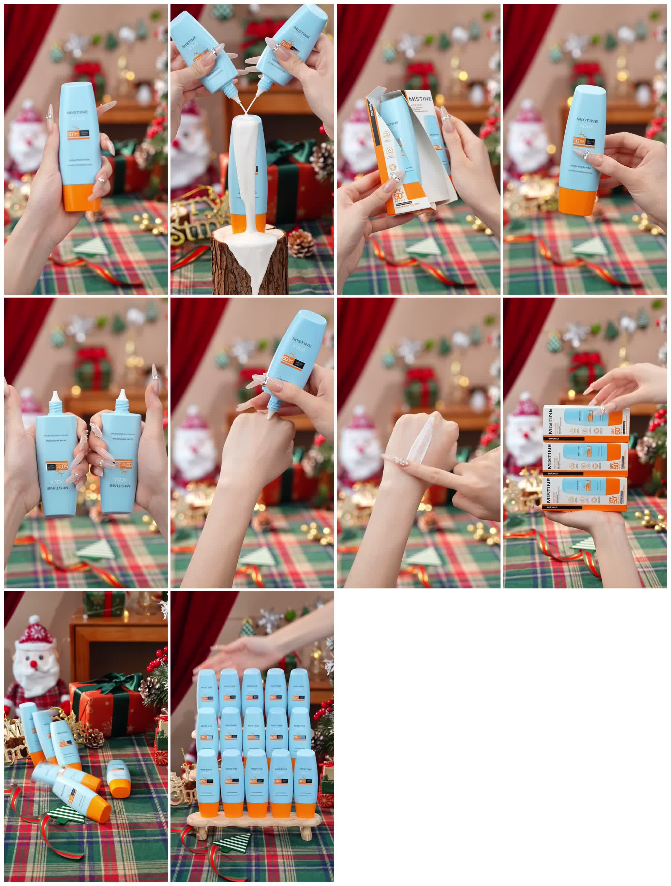
# 分镜脚本 + AI提示词｜32_69c26e88000000001a0337b6 - 平台：小红书 - 原链接：https://www.xiaohongshu.com/discovery/item/69c26e88000000001a0337b6?source=webshare&xhsshare=pc_web&xsec_token=CBQPU02SgxU6va-eVUB5LVovKxhtLJ6dEATm9-tWJBSG4=&xsec_source=pc_share - 本地视频：/Users/mac/Desktop/视频素材/_中转/美妆产品节日视频拍摄.mp4 - 时长：20.07 秒 - 抽帧规则：每 2 秒 1 帧 - 联系表：contact_sheet.jpg ## 使用说明 - 每个镜头按视频时间顺序排列。 - AI 提示词已按用户规范处理：以 `@xxx` 开头，产品/膏霜位置可复用 `@xxx`，不要求生成字幕，每条结尾明确不要字幕。 - 如需更精细版本，可基于 `frames/` 逐帧二次改写。 ## 分镜明细 ### 镜头 01｜约 00s｜开场钩子  画面描述：用近景快速建立产品/人物/使用场景，画面节奏干净直接，先给观众一个可感知的视觉记忆点。 分镜脚本：开场钩子：用近景快速建立产品/人物/使用场景，画面节奏干净直接，先给观众一个可感知的视觉记忆点。建议保持 1.5-2 秒节奏，动作不要过满，重点放在产品、手部和质感变化上。 AI提示词：@xxx广告开场近景，产品或手部动作进入画面，构图稳定，背景干净，第一秒抓住注意力，竖屏9:16，近景开场，镜头轻微推进，产品/膏霜位置使用@xxx，真实商业美妆短视频风格，高清细节，皮肤质感自然，光线柔和通透，色彩干净高级，背景不杂乱，动作连贯自然，负面：低清晰度、畸形手、过度磨皮、脏乱背景、文字水印、logo乱码、过曝、塑料感。整段视频不要出现任何字幕 ### 镜头 02｜约 02s｜开场钩子  画面描述：用近景快速建立产品/人物/使用场景，画面节奏干净直接，先给观众一个可感知的视觉记忆点。 分镜脚本：开场钩子：用近景快速建立产品/人物/使用场景，画面节奏干净直接，先给观众一个可感知的视觉记忆点。建议保持 1.5-2 秒节奏，动作不要过满，重点放在产品、手部和质感变化上。 AI提示词：@xxx广告开场近景，产品或手部动作进入画面，构图稳定，背景干净，第一秒抓住注意力，竖屏9:16，俯拍或侧拍，构图留白干净，产品/膏霜位置使用@xxx，真实商业美妆短视频风格，高清细节，皮肤质感自然，光线柔和通透，色彩干净高级，背景不杂乱，动作连贯自然，负面：低清晰度、畸形手、过度磨皮、脏乱背景、文字水印、logo乱码、过曝、塑料感。整段视频不要出现任何字幕 ### 镜头 03｜约 04s｜产品亮相  画面描述：镜头聚焦产品外观、瓶身、质地或包装细节，突出卖点物件本身。 分镜脚本：产品亮相：镜头聚焦产品外观、瓶身、质地或包装细节，突出卖点物件本身。建议保持 1.5-2 秒节奏，动作不要过满，重点放在产品、手部和质感变化上。 AI提示词：@xxx产品展示特写，瓶身/膏霜/包装细节清晰，商业棚拍质感，浅景深，干净高级背景，竖屏9:16，微距特写，浅景深，产品/膏霜位置使用@xxx，真实商业美妆短视频风格，高清细节，皮肤质感自然，光线柔和通透，色彩干净高级，背景不杂乱，动作连贯自然，负面：低清晰度、畸形手、过度磨皮、脏乱背景、文字水印、logo乱码、过曝、塑料感。整段视频不要出现任何字幕 ### 镜头 04｜约 06s｜动作演示  画面描述：通过手部拿取、打开、挤压、涂抹、展示等动作，把产品使用方式讲清楚。 分镜脚本：动作演示：通过手部拿取、打开、挤压、涂抹、展示等动作，把产品使用方式讲清楚。建议保持 1.5-2 秒节奏，动作不要过满，重点放在产品、手部和质感变化上。 AI提示词：@xxx手部操作特写，年轻女性白皙双手自然拿取并使用产品，动作柔和顺滑，真实生活化，竖屏9:16，中近景，轻微手持运动，产品/膏霜位置使用@xxx，真实商业美妆短视频风格，高清细节，皮肤质感自然，光线柔和通透，色彩干净高级，背景不杂乱，动作连贯自然，负面：低清晰度、畸形手、过度磨皮、脏乱背景、文字水印、logo乱码、过曝、塑料感。整段视频不要出现任何字幕 ### 镜头 05｜约 08s｜质地细节  画面描述：放大产品质地、颜色、光泽或上肤效果，突出“看得见”的感官体验。 分镜脚本：质地细节：放大产品质地、颜色、光泽或上肤效果，突出“看得见”的感官体验。建议保持 1.5-2 秒节奏，动作不要过满，重点放在产品、手部和质感变化上。 AI提示词：@xxx微距质地镜头，膏体/液体/粉质细腻可见，柔和高光，干净皮肤纹理，真实美妆广告质感，竖屏9:16，俯拍或侧拍，构图留白干净，产品/膏霜位置使用@xxx，真实商业美妆短视频风格，高清细节，皮肤质感自然，光线柔和通透，色彩干净高级，背景不杂乱，动作连贯自然，负面：低清晰度、畸形手、过度磨皮、脏乱背景、文字水印、logo乱码、过曝、塑料感。整段视频不要出现任何字幕 ### 镜头 06｜约 10s｜使用效果  画面描述：镜头转向脸部、手背、局部皮肤或场景效果，表现使用前后的氛围变化。 分镜脚本：使用效果：镜头转向脸部、手背、局部皮肤或场景效果，表现使用前后的氛围变化。建议保持 1.5-2 秒节奏，动作不要过满，重点放在产品、手部和质感变化上。 AI提示词：@xxx效果展示镜头，肤色干净通透，妆效自然，画面明亮柔和，人物状态精致不夸张，竖屏9:16，微距特写，浅景深，产品/膏霜位置使用@xxx，真实商业美妆短视频风格，高清细节，皮肤质感自然，光线柔和通透，色彩干净高级，背景不杂乱，动作连贯自然，负面：低清晰度、畸形手、过度磨皮、脏乱背景、文字水印、logo乱码、过曝、塑料感。整段视频不要出现任何字幕 ### 镜头 07｜约 12s｜使用效果  画面描述：镜头转向脸部、手背、局部皮肤或场景效果，表现使用前后的氛围变化。 分镜脚本：使用效果：镜头转向脸部、手背、局部皮肤或场景效果，表现使用前后的氛围变化。建议保持 1.5-2 秒节奏，动作不要过满，重点放在产品、手部和质感变化上。 AI提示词：@xxx效果展示镜头，肤色干净通透，妆效自然，画面明亮柔和，人物状态精致不夸张，竖屏9:16，中近景，轻微手持运动，产品/膏霜位置使用@xxx，真实商业美妆短视频风格，高清细节，皮肤质感自然，光线柔和通透，色彩干净高级，背景不杂乱，动作连贯自然，负面：低清晰度、畸形手、过度磨皮、脏乱背景、文字水印、logo乱码、过曝、塑料感。整段视频不要出现任何字幕 ### 镜头 08｜约 14s｜氛围补充  画面描述：用环境、道具、花材、桌面、布景或生活方式镜头补足品牌调性。 分镜脚本：氛围补充：用环境、道具、花材、桌面、布景或生活方式镜头补足品牌调性。建议保持 1.5-2 秒节奏，动作不要过满，重点放在产品、手部和质感变化上。 AI提示词：@xxx生活方式氛围镜头，桌面陈列精致，道具简洁，暖色自然光，轻奢美妆视觉风格，竖屏9:16，俯拍或侧拍，构图留白干净，产品/膏霜位置使用@xxx，真实商业美妆短视频风格，高清细节，皮肤质感自然，光线柔和通透，色彩干净高级，背景不杂乱，动作连贯自然，负面：低清晰度、畸形手、过度磨皮、脏乱背景、文字水印、logo乱码、过曝、塑料感。整段视频不要出现任何字幕 ### 镜头 09｜约 16s｜卖点强化  画面描述：回到核心动作或核心细节，重复强化产品记忆点，让画面更有转化感。 分镜脚本：卖点强化：回到核心动作或核心细节，重复强化产品记忆点，让画面更有转化感。建议保持 1.5-2 秒节奏，动作不要过满，重点放在产品、手部和质感变化上。 AI提示词：@xxx卖点强化特写，产品与使用动作同框，画面重点集中，清晰表现质感、颜色和使用体验，竖屏9:16，微距特写，浅景深，产品/膏霜位置使用@xxx，真实商业美妆短视频风格，高清细节，皮肤质感自然，光线柔和通透，色彩干净高级，背景不杂乱，动作连贯自然，负面：低清晰度、畸形手、过度磨皮、脏乱背景、文字水印、logo乱码、过曝、塑料感。整段视频不要出现任何字幕 ### 镜头 10｜约 18s｜收尾定格  画面描述：用产品定格、人物满意状态或整套陈列结束，形成干净的广告收尾。 分镜脚本：收尾定格：用产品定格、人物满意状态或整套陈列结束，形成干净的广告收尾。建议保持 1.5-2 秒节奏，动作不要过满，重点放在产品、手部和质感变化上。 AI提示词：@xxx广告收尾定格，产品居中摆放或手持展示，构图完整，高级干净，适合短视频结尾，竖屏9:16，稳定定格，适合结尾停留，产品/膏霜位置使用@xxx，真实商业美妆短视频风格，高清细节，皮肤质感自然，光线柔和通透，色彩干净高级，背景不杂乱，动作连贯自然，负面：低清晰度、畸形手、过度磨皮、脏乱背景、文字水印、logo乱码、过曝、塑料感。整段视频不要出现任何字幕